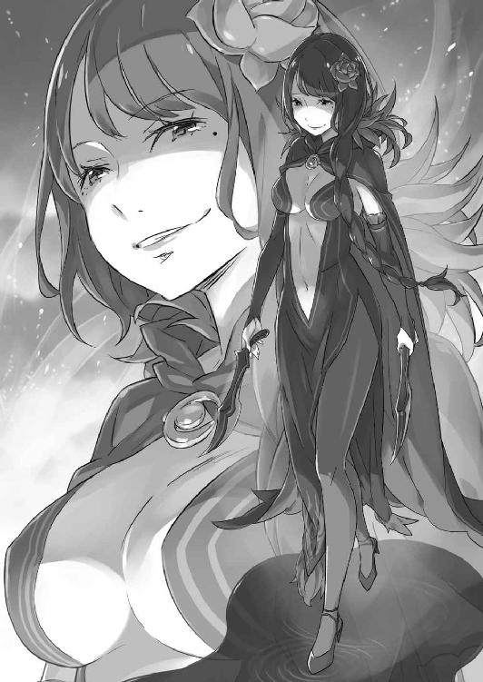

| Ｒｅ：ゼロから始める異世界生活 10<Ｒｅ：ゼロから始める異世界生活> (MF文庫J) | |
| 長月 達平 | |
| KADOKAWA / メディアファクトリー (2016) | |
Ｒｅ：ゼロから始める異世界生活 10
長月達平

本作品の全部または一部を無断で複製、転載、配信、送信したり、ホームページ上に転載したりすることを禁止します。また、本作品の内容を無断で改変、改ざん等を行うことも禁止します。
本作品購入時にご承諾いただいた規約により、有償・無償にかかわらず本作品を第三者に譲渡することはできません。
本作品を示すサムネイルなどのイメージ画像は、再ダウンロード時に予告なく変更される場合があります。
本作品の内容は、底本発行時の取材・執筆内容に基づきます。
本作品は縦書きでレイアウトされています。
また、ご覧になるリーディングシステムにより、表示の差が認められることがあります。
プロローグ 『墓所』
──遺跡の冷たく澄んだ空気は、奇妙なほど清涼な雰囲気でスバルを出迎えていた。
一歩、足を踏み出すごとに靴音が反響する。やけに高く響くその靴音は、スバルにとって焦燥感の原因であると同時に、心の拠り所でもあった。
ほんの数メートル先も見えない闇の中、不確かな自分を確かにしてくれるようで。
「────」
周囲は完全な暗闇に覆われ、辿っていたはずの壁の感触も見失って久しい。歩けども歩けども道の果てはなく、スバルは自分が立ち止まっている錯覚すら覚える。
そんな不安を靴音だけが否定し、スバル自身に歩き続ける意義を訴えかけてくれた。
響く靴音を頼りに歩き続ける。立ち止まれない、それは許されない。心に諦めが根差して、背負った荷物の重さに負けかけても、歯を食い縛って歩き続けなければ。
そうでなくて、どうして自分は彼女に──、
「──なるほど。それが君の欲の根幹か。なかなかに興味深いことだね」
ふいに、声が響いた。
その声に足を止めた瞬間、終わりを見失っていた永遠が唐突に幕を引かれる。
どこまでも続くとしか思えなかった闇は瞬きの間に晴れ、色をなくしていたはずの世界が鮮やかに彩られてゆく。足下には緑が、頭上には雲一つない青空が広がり、スバルは自分があるはずのない草原に立っていることに気付いた。
優しげな風に前髪を撫ぜられ、驚きに思わず喉が詰まる。
「──ぁ」
「そんなところで遊んでいないで、こっちへきてはどうだい？」
棒立ちになるスバルに、声は背後からかけられた。
振り向けば、そこは小高い丘の上だ。丘には日除けのパラソルが立ち、日陰には白いテーブルと白い椅子──そして、椅子に座った少女の姿がある。
「────」
それは真白の、まるで色だけがすっぽりと抜け落ちたように白い印象の少女だった。
背中にかかるほどの長い髪も、露出の少ない肌も目を奪われるほど白く、細い肢体を包む喪服のような漆黒のドレスと、高い知性を窺わせる黒瞳だけが、幻のように儚げな少女の実在を証明している。
白と黒、それはたった二色だけで表現された、ひどく端的な美貌だった。
一目すれば、誰もが魅入られるほどの魔貌──しかし、そんな少女の姿にスバルの魂はかつてない圧倒的な怖気を覚えていた。
初めて白鯨に遭遇したときですら、これほどの圧迫感に襲われてはいない。
「おや、驚かせてしまったかな？」
「────」
すぐ間近の少女の存在にスバルは声が出ない。そんなスバルの反応に目を細め、少女はしばらくしてから合点がいったように頷く。
「ああ、そうか。ボクとしたことが、自己紹介がまだだったね。これはお恥ずかしい。人と話すのはずいぶん久しぶりだから、つい気持ちが逸ってしまったよ」
声音の調子と違い、表情をほとんど変えないまま少女は小さく肩をすくめた。
それから、なおも戦慄に押し黙り続けるスバルに向けて、彼女は己の胸に手を当てながら静かに名乗る。
「ボクの名前はエキドナ」
そう告げて、少女はその唇を緩めて薄く微笑みながら──、
「──『強欲の魔女』と、そう名乗った方が通りがいいかな？」
第一章 『帰り着いた場所で』
１
──曇天の空模様は、まるで今のスバルの心境を反映しているように思えた。
「寂しくなってしまいますね」
屋敷の門前に立つスバルの隣で、ドレス姿の女性が寂しげにそう言った。
長い緑髪を背に流し、琥珀色をした切れ長の瞳が印象的な女性だ。その、微かに目を伏せた儚げな佇まいに、スバルはいまだに違和感を消し切れないでいる。
──令嬢然としたその姿が、今のクルシュ・カルステンの真実だとわかっていても。
「クルシュさんがそう言ってくれるのはありがたいんだけどさ......」
頭を搔きながら、スバルはクルシュから視線を外して正面を見る。
クルシュ邸の前には複数の竜車が並び、中にはペテルギウス率いる魔女教から王都へ避難してきたアーラム村の人々が乗り込んでいる。すでに『怠惰』の大罪司教を退け、屋敷と村の安全は確保した。そのため、彼らにスバルたちを加えた一行は、これから街道を抜けて村へ──ロズワール邸へ帰還する予定になっていた。
正直、魔女教を除いても問題は山積みだ。クルシュの豹変もその一つだが──、
「不甲斐ねぇけど、ここにいても進展がない。ずるずる世話になりっ放しなのもな」
「ナツキ・スバル様やエミリア様になら、当家はいつまで滞在していただいても構わないのですけど......そうはいきませんよね」
「ご厚意だけもらっときます。お互い、課題は多いでしょう？ 特に、白鯨と『怠惰』関連の手柄は、下手打つと欲張り商人チームに持ってかれかねませんから」
クルシュの申し出に首を振り、スバルはアナスタシア陣営への注意を喚起する。
白鯨と『怠惰』を討伐した今回の一件は、王選候補者三陣営の共同作戦というべき内容だった。しかし現状、その結果はアナスタシア陣営の一人勝ちといえる。
四百年果たされなかった覇業を成したクルシュ陣営──だが、旗頭であるクルシュが受けた被害は大きく、それは『怠惰』討伐を主導したスバルたちエミリア陣営も同じだ。
その被害はクルシュたちほど致命的とはいえないかもしれないが、少なくともスバルにとっては大きすぎる傷となって、今も痛みを訴え続けている。
一方、候補者と騎士のどちらも健在なアナスタシア陣営は、どちらの討伐においても大きな役割を果たし、陣営の被害も最小限という高配当であった。
故に、今後もアナスタシア陣営の動向には目を光らせる必要がある。そういった意味でも、エミリア陣営とクルシュ陣営との同盟は密にしたい。
「その話し合いのためにも、いっぺん全部持ち帰らせてください。後ろ盾のロズワールには相談しなきゃいけないし、不安がってる村の人たちも家に帰してやりたいんで」
「家族が離れ離れなのはお辛いと思います。そうしてさしあげてください」
儚げに微笑み、クルシュの視線が竜車に乗り込む村人たちへ向かう。
王都へ避難したのは村の半数、残る半分は別ルートで違う土地へ避難させている。クルシュの言う通り、家族で離れ離れになった家もある。早く、合流させてやりたい。
「それが済み次第、王都に戻ってきます。それまで、しばしのお別れって感じで」
「はい、お待ちしています。そのときには今度こそ、大恩に報いられれば幸いです」
「そんな大げさな。助かったのはお互い様だし、報酬だってもらってんのに」
畏まるクルシュに苦笑して、スバルは居並ぶ竜車の先頭を指差す。そこには他の竜車より高級感のある一台があり、車体には美しい漆黒の地竜が繫がれていた。
その黒い地竜こそ、スバルが白鯨討伐に協力した報酬として貰い受けたものだ。
「欲のないお話です。三大魔獣討伐の報酬に、地竜を一頭引き取りたいだなんて」
「命の恩人ならぬ恩竜なもんで。付き合った時間は短くても、一緒に潜った死線の数は今や最多......パトラッシュにとっちゃいい迷惑かもしれませんけど」
「──それは無用な心配でしょうな」
地竜──パトラッシュを眺めるスバルたちの会話に、柔らかな否定を投げかけたのは歩み寄ってくる老剣士、ヴィルヘルムだ。
竜車の調子を確認していた剣鬼は、二人の話し合いに会釈しながら割り込むと、
「地竜の中でも気難しいとされるダイアナ種が、短期間でこれだけ懐くことなどなかなかありません。スバル殿とこの地竜は、ずいぶんと相性が良かったようです」
「なんなんですかね。白鯨討伐の前に、ピンときて選んだってぐらいなんですが」
相性がいいのは事実だろう。パトラッシュを選べたのは、まさに天の巡り合わせだ。
組んだのがパトラッシュ以外の地竜なら、白鯨とも『怠惰』とも渡り合えたとは思えない。それほど、スバルはこの賢竜に幾度も助けられたのだ。
「つまり、俺はお前以外の地竜じゃ満足できない体ってことに......！」
地竜に寄り添い、スバルは改めて感謝を込めてその首筋を撫でる。すると、パトラッシュはその気位の高い横顔を擦り付け、硬い鱗でスバルの手を鑢掛けしてくれた。
「ぐあああ！ 想像以上に鱗が痛い！ 大根おろしにされる大根の気持ちがわかる！」
「ふむ、地竜がこうも戯れるとは微笑ましい。これも信頼関係の為せる業ですな」
「本当に!? 猫が鼠を転がして遊ぶみたいな力関係の構図になってない!?」
腕を削られる地竜とのやり取りも、ヴィルヘルムにとっては子どもの戯れなのか。微笑ましげな剣鬼の視線に、スバルはバツの悪い顔で頰を搔いた。
「ま、パトラッシュとの付き合い方は今後の課題として......ヴィルヘルムさんともしばらくお別れになるのが残念です。傷、養生してくださいよ」
「ご心配をおかけします。──どうやら距離が離れたのか、今はほとんど出血もありません。それを、幸いというべきかは難しいところですが」
ヴィルヘルムの左肩──そこには彼の妻であった、先代剣聖に刻まれた傷がある。
その古傷が開いた事実は、剣鬼の瞳に複雑な感情を渦巻かせる。傷の復活に如何なる意味があるのか、それはクルシュを襲った大罪司教に問い質すしかない。
大罪司教『暴食』──剣鬼の妻の死に白鯨以外の原因があるとしたら、最有力なのはその人物だ。そして魔女教の教義を思えば、いずれ彼らは必ずスバルたちとも激突する。正しく、奴らはこの同盟の敵なのだ。
奴らを倒し、取り戻さなければならない。クルシュの記憶を、何よりも──、
「スバルきゅん。──レムちゃん、固定したから確認したげて」
思索の途中で名を呼ばれ、スバルは竜車から身を乗り出す相手に振り返った。それは亜麻色の猫耳が特徴的な、クルシュの一の騎士であるフェリスだ。
手招きする彼に従い、スバルは竜車に足をかけて中を覗き込む。すると、広い車内では奥の座席が外され、代わりに簡易ベッドが増設されているのがわかった。
その寝台の上には一人の少女が寝かされており、その寝姿にスバルの胸が軋む。
見慣れた給仕服ではなく、薄い水色の寝衣に身を包んだ青い髪の少女だ。決して目覚めることのない眠りに就き、その存在の一切を周囲の人々に忘れられた少女──。
「──レムは、途中で振り落とされる心配はないよな？」
「そこは一番、気遣ってるってば。これでもフェリちゃんは治癒術師にゃんだから、患者さんには優しいの。......レムちゃんの場合、そう呼んでいいか微妙だけど」
安らかなものに見える寝顔、その様子を眺めるスバルにフェリスが肩をすくめる。
その口調は軽々しいが、彼の横顔には隠し切れない憔悴と自分への失望があった。無力感を悔やむのはスバルの専売特許ではない。彼もまた、力不足を悔やんでいる。
自分にとって何より大事な主人を、肝心なところで救えない己の無力さを。
「ホントに屋敷に帰るの？」
「ああ。ここで静養しててレムが治るわけじゃねぇし......あ、今のは皮肉じゃないぞ」
「わかってるって。スバルきゅん、そこまで性格悪くにゃいもんネ」
言い方が悪かったとフォローを入れるスバルにフェリスが苦笑する。それからすぐに彼は目を細め、「それより」とスバルに指を突き付けた。
「静養が必要なのはレムちゃんだけじゃないでしょ。スバルきゅんも一緒」
「俺も？」
「そ。そもそも、自分が最初は何のために王都に残されたか忘れたの？ 今回、『怠惰』とやり合うのでまたゲートに無理させてるし......体、だるかったりしない？」
「いや、特に異常はないけど」
フェリスの問いかけに、スバルは首や肩を回して問題ないと答える。外傷の治療は済んでおり、肉体の不安は皆無だ。フェリスの懸念するゲートに関しても、
「元々、そんな魔法に頼った生活してねぇしな。ないならないで気にしねぇよ」
「魔法使いじゃない人の発想だよネ。フェリちゃんからしたら、魔法が使えにゃいなんて緊急事態もいいとこなのに。......ま、本人が気にしないならいいけどー」
あっけらかんと危機感のないスバルに、フェリスも諦めた顔で嘆息する。
「でも、無理させちゃダメなのはおんなじだから。一応、ゲートの中の毒素は綺麗にしたけど、治ったわけじゃにゃいの。そうだね......二ヶ月、ゲートは安静にさせて」
「二ヶ月か。はっ、十七年も魔法と無縁だった人間には低いハードルだぜ」
などと軽口を叩いてから、そもそもこの世界に召喚されてまだ二ヶ月しか経っていないことを思い出す。体感時間では四ヶ月ほどだが、実時間では約二ヶ月──その間の出来事を振り返れば、二ヶ月の安静というハードルは高いのか低いのか。
「まぁ、さすがにそんな続けて事件が起きたりは......今のフラグ臭くなかった!?」
「残念だけど、頭の方の治療ってフェリちゃんの専門外にゃんだよネ」
戦慄するスバルを突き放すフェリス。その冷たい反応に、そろそろ無駄話も畳むべきかとスバルは考えて、それからフェリスに手を差し出した。
「にゃに？」
「色々助かった、ってちゃんと伝えてなかった気がして。傷やゲートもだけど、白鯨と『怠惰』だってお前がいなきゃ詰んでたからな。......レムのことも、感謝してる」
「......それ、嫌味とか皮肉じゃないんだろうけど、それにしかなってにゃいよ」
「俺も、言ってて完全にそれっぽいなとは思った」
だが、素直な感謝の気持ちだ。確かにフェリスとは意見の違いで対立したことも、お互いの在り方の問題で険悪になったこともある。しかし、それもひっくるめて、スバルにとっては彼への怒りより、感謝の方が上回った。
そんなスバルの差し出す手を、フェリスはしばし黙って見下ろしていたが──、
「......指ほっそ！ 手ぇちっちゃ！ 指だけは男らしい的な展開はなしか！」
「これだけ可憐なフェリちゃんが、そんなガッカリなことするはずないでしょーが」
逡巡の末の握手、その手の感触に驚くスバルにフェリスは妖しげに微笑んだ。その微笑みも可憐で、細い手足も透き通る肌も紛れもなく美少女そのもの──。
「だが、男だってか。ったく、なんだってそんなんなんだか」
「だってぇ、フェリちゃんにはこの格好が似合うってクルシュ様のお望みにゃんだもん。そのものの魂を最も輝かせる在り方......それに、全身全霊でお応えするだーけ」
「でも、それは......」
今のクルシュは知らないことだ、と続けそうになって途中で止まる。
そんなこと、スバルに言われるまでもなくフェリスもわかっている。言葉にしてどうなる問題でもない。知った風な口を叩かれるのは彼だって御免のはずだ。
「──王選がどうなろうと、クルシュ様だけは必ずお守りする」
「......え？」
ふいに、それは押し黙ったスバルの鼓膜に冷たく響いた。
静かで、感情の凍えた囁きだった。それが誰の声音なのか、今まさに言葉を交わしていたにも拘らず、気付くのが遅れてしまうほどに。
俯いたフェリスの双眸は前髪に隠れて見えない。けれど、握った掌はやけに熱い。
「フェリス......？」
「だーかーら、スバルきゅんも約束守ってくれなきゃダメだからネ？」
しかし、そんな不穏な気配も一瞬のこと。言葉に詰まるスバルの前で、弾かれたように顔を上げたフェリスの態度は普段のままだ。その双眸は悪戯っぽく輝いており、
「でないと、体中のマナを暴走させて狂い死にさせちゃうんだからネっ」
「可愛い顔と声で死ぬほど怖いこと言わないでくれます!?」
手を放し、笑って竜車を飛び降りたフェリスが一礼する。その仕草にげんなりしつつ、スバルは刹那だけ見せたフェリスの態度を胸に留め置いた。
あれはフェリスの決意であり、覚悟であり、悲壮な本音でもあったはずだ。
そしてそれはスバルにとっても他人事ではない。──そう、思おう。
「あ、スバル。レムのベッド、ちゃんと準備できた？」
フェリスに続いて竜車を降りると、ちょうどエミリアも門前に現れたところだ。銀髪を三つ編みにしたエミリアは、すでに準備の済んだ竜車に歩み寄る。
「問題なさそう？ 屋敷まで出発できる？」
「モーマンタイ。俺とパトラッシュで曲芸運転しても平気。ウィリーしちゃうよ」
「よくわからないけど、すごーく嫌な予感するからうぃりーは禁止ね」
「そりゃ残念。危険運転でエミリアたんドキドキの吊り橋効果作戦だったのに」
普段の調子で応じつつ、スバルは竜車を叩いて無問題をアピールする。その返答にエミリアの紫紺の瞳が微かに揺らぐが、生じた感情は言葉にはならない。
「はい。じゃ、名残惜しいけど、そろそろ出発のお時間だからネ」
その微妙な沈黙に、手を叩いて終止符を打ったのはフェリスだ。彼は自分に注目を集めたあと、すぐ隣のクルシュに集めた注目を譲る。
「ささ、クルシュ様。最後に、何かエミリア様たちにお言葉があれば」
「ええ、そうですね」
フェリスに場を譲られ、クルシュが一歩前に出る。後ろにフェリスとヴィルヘルムを従えた彼女に、スバルとエミリアも姿勢を正して向かい合った。
「まず、何度も繰り返しになりますが、お二人に深い感謝を。こうして私が記憶を失いながらも命を繫ぎ、記憶を失くす前の私の望みが繫がっていること、いずれもお二人の協力があってこそだと思います。ありがとうございます」
「い、いえ......私は、クルシュ様にお礼を言われるようなことはなんにも。私、この数日のことはほとんど蚊帳の外で......」
「中心にいたのに蚊帳の外、は事実だね。けど、そこは俺がきっちり大活躍してたから安心してくれ。俺の手柄はもれなくエミリアたんのものだよ」
「スバルきゅんのやらかしもエミリア様のものだけどネ」
「傷を抉るなぁ！」
恐縮するエミリアをスバルがフォローすると、すかさずフェリスが王城の出来事を揶揄して茶化す。そこにスバルが声を上げた途端、門前に笑いが生まれた。
あの出来事を笑い話にできる。それは、数日前には想像もできなかったことだ。
無論、それであの爪痕の戒めを忘れていいことにはならないが──。
「大丈夫。これからは私も、スバルとちゃんと話し合って色々やっていきたいから」
「────」
一人だけ笑わず、エミリアは真摯な瞳でそう言った。
スバルの行動の結果を、何であれ正面から受け止めると。それは彼女が正しく、スバルを認めてくれた証だ。名実共に、スバルが彼女の傍に寄り添っていていいのだと。
「また必ず、近い内にお会いしましょう。エミリア様やナツキ・スバル様とは、末永く親しい付き合いを続けたいと思っております」
そのやり取りに薄く微笑み、クルシュは噓偽りのない眼差しを二人に向けた。
記憶を失くしても、その高潔さは以前の彼女と変わっていない。誠実の二文字を誰より輝かせるクルシュの在り方は、噓やお為ごかしの一切と無縁だ。
それが痛いほど伝わってきたからだろうか。エミリアは目を伏せ、唇を震わせる。
「私は、クルシュ様と対立する候補です。同盟を組んでいても、いずれは敵に戻る」
「ええ。エミリア様に負けないよう、私もこれから努めなくてはいけませんね」
「それに、私はハーフエルフでもあります。それも銀髪の。......怖く、ありませんか？」
「エミリア、それは......」
何を言い出すのかと止めかけて、エミリアの横顔を見たスバルは口を閉ざす。
真剣に、必死の眼差しで、エミリアはこの問いを発している。彼女の想いを一端でも知っていれば、ここに軽々しく割って入ることはできない。
それに、スバルはクルシュを知っている。──彼女の魂が、今も陰っていないことも。
「──魂の在り方が、その存在の価値を決める。己にとっても、他者にとっても、最も輝かしい生き方こそを、魂に恥じない生き方こそを人はするべきなのだ」
「────」
「と、以前の私は口癖のように言っていたそうです。なんというか......こうして客観的になれるようになって聞くと、とても偉そうな言葉ですよね」
堪え切れず、クルシュは過去の自分の発言に笑みをこぼす。それを聞くエミリアは唇を結んで、彼女の真意を推し量ろうと黙っていた。
「エミリア様は、ご自分の生き方を恥ずかしいとお思いですか？」
「......思って、いません。私は周りにどう思われたとしても、自分だけは自分を嫌わずにいられるよう、そうあれるように思って生きてきました」
「でしたら、悔やむことも恐れることもありません。己を磨き、努力を重ねて、自分の在り方を真っ直ぐ貫く。──あなたは、素晴らしい魂をお持ちです」
そう言って、クルシュは躊躇うことなくエミリアへ手を差し出した。
「あなたと知り合えて、私は嬉しく思います。恐れなど、どこにもありません」
「──っ」
胸に痛みでも覚えたように、エミリアは頰を硬くしてクルシュの手を見下ろす。そんなエミリアを急かすこともせず、クルシュは静かに彼女の反応を待っている。
やがておずおずと、エミリアの手がクルシュの掌に触れ、握手が交わされた。
「どうかご壮健で。近く、またお会いできるのを楽しみにしています」
「私は......いいえ、私も。きっと、今度はクルシュ様の前で真っ直ぐ立てるようになっておきます。それまで、どうかお元気で」
二人の王選候補者が互いの健闘を誓い、ここに再会の約束が交わされる。
その誓いを隣で見ながら、スバルの胸中を一つの達成感が満たしていった。それはスバルが苦しみ、足搔き、傷付いて、それでようやく手に入れたモノの形だ。
何もかも、全てを完璧に拾い上げて辿り着くことはできなかったけれど──。
「そうやってやり遂げたことも忘れて後悔するのを、お前のせいにしたくねぇよ」
ちらと竜車を振り返り、スバルは車内で眠る少女の姿を瞼の裏に描く。
この祝福すべき場面で、下を向く理由にレムを使うことなど許されない。そんなことはレムだって望んでいない。──そう思うのは身勝手だろうか。
「ナツキ・スバル様も、どうぞご壮健で。あなたの今後のご活躍と......彼女の容態が一刻も早く回復すること、心よりお祈りいたします」
「俺が大活躍するような事態、実はあんまりない方がいいんですけどね。俺って猫の手も借りたい極限状態でしか役立たない男だし。......レムのことは、クルシュさんにとっても他人事じゃないんだ。必ず、どうにかしますよ」
クルシュは微笑み、スバルにも握手を求める。その差し出された手に手を重ねるのが気恥ずかしくて、スバルは彼女の手を握る代わりに掌を合わせた。
小さく乾いた音が鳴り、それでスバルとクルシュの触れ合いは終わりだ。
弾かれた掌を見て、クルシュは一瞬だけ目を瞬かせると、
「また必ず、お会いしましょう」
そう言って、主従共に深々と一礼し、スバルたちを送り出したのだった。
２
──屋敷への帰途についた竜車は、微妙に重苦しい雰囲気で満たされていた。
「────」
大型の竜車は、クルシュからパトラッシュの抱き合わせ報酬として贈られた一台だ。十人が乗り込んでも余裕の広さの車内は、完全にキャパシティを持て余している。
現在、車内にいるのはスバルとエミリア、そして簡易ベッドで眠るレムの三人だけ。スバルは『眠り姫』の傍に座り、少し離れて座るエミリアも意識のないレムを気遣ってか無言でいて、どうにも気まずい空気だけが蔓延してしまっていた。
「......これは、ガキンチョ共が別の竜車に乗ったのも失敗だったっぽいな」
行きの竜車に同乗していた村の子どもたちも、帰り道では別の竜車だ。王選に向け、聞かれたくない話もあるだろうと村人が配慮してくれたのだが、それも裏目に出た。
話さなくてはならないことは確かに多い。が、なかなか切っ掛けが──、
「──あのー、ひょっとして話題がなくて困ってたりしてます？ なんか、もうこの重苦しい沈黙というか、そんな感じの空気に僕が耐えられないんですが」
「さらっと入ってきて何を言い出すんだよ、お前。ってか、いたの？」
「いたよ！ いるに決まってるじゃないですか！ 僕がそもそも、何のためにナツキさんに協力したり、魔女教に振り回されたりしたと思ってんですか!?」
「趣味とか？」
「命がいくつあっても足りない趣味ですねえ!?」
そう大げさに唾を飛ばすのは、御者台との連絡口から顔を覗かせた青年──魔女教との最後の戦いの協力者でもあった、行商人のオットー・スーウェンだ。
帰路の御者を買って出て、そのまま同行するオットーにスバルは意地悪く笑いかけ、
「冗談だ。お前の目的はロズワールとの話し合いと積み荷の買い取り。忘れてねぇって」
「本当にお願いしますよ。本気で、僕の人生が懸かってるんですから」
などと大勝負に意気込むオットーだが、スバルには彼がロズワールの手玉に取られる未来しか見えない。彼には助けられたので力を貸してやりたいのだが。
「本人にはとても言えねえけど、勝算は薄いな......」
「聞こえてんですけど!? 隠す気あったんですかねえ!?」
独り言を聞きつけ、目を剝くオットーにスバルは肩をすくめる。と、そんな二人のやり取りを目の当たりにして、エミリアは大きな瞳を丸くしていた。
「二人って、なんだかすごーく仲良しなのね。びっくりしちゃった」
「仲良しだなんてとんでもない。こいつにとって俺は、ただの命の恩人ってだけさ」
「否定できないから釈然としない！」
魔女教に捕まり、生贄寸前だったオットーの救出に一役買ったのがスバルだ。厳密には彼の命の恩人は傭兵団『鉄の牙』なのだが、そこは突き詰めない方向で。
ともあれ、オットーのおかげで車内の気まずい空気は大きくほぐれてくれた。
「そしてそのことに感謝しつつ、お前とはいったんお別れのお時間です」
「あ、ちょっと！ そうやってすぐ僕を邪魔者扱いして──」
連絡口の戸を閉めて、スバルはオットーの叫びを途中で遮る。そのまま一仕事終えた顔で振り返るスバルと、驚いた顔のエミリアの目が合った。そして──、
「ぷっ」「ははは」
ふと、お互いに耐えられなくなって噴き出してしまう。それからしばらく、竜車の中に二人の笑い声が弾けた。そうして、その笑声がやっと収まると、
「気まずい空気を読んで黙るとか、超俺らしくなかったね」
「そうね、スバルらしくない。私の知ってるスバルはもっと、いつも元気で無茶ばっかりして、こっちの気持ちなんて全然関係ないぐらい騒がしい子だもん」
「それ、空元気で空気読めない奴って翻訳できる気がするね！」
実際、それが否定できない評価なのは間違いない。苦笑いして頰を搔き、スバルは改めてエミリアの隣にゆっくり腰を下ろした。そのスバルにエミリアは目を細める。
「......スバルって、当たり前みたいに私の隣に座るのよね」
「──？ あれ、なんかおかしかった？」
「ううん。最初はむずむずしたけど、今はそうしてくれないと変な感じだからいいの」
首を横に振り、スバルが隣にいることにエミリアはそんな感想をこぼす。
屋敷での食事、エミリアにとっての日課である微精霊との交流会。他にも日常の様々な場面で、スバルは好んでエミリアの隣に立ったり、座ったりしていたものだが。
「そんな涙ぐましい努力がついに実ったか。感無量だ......！」
「またそうやって茶化す。......変に強がったりしないでほしいのに」
拳を握るスバルの呟きに、エミリアは不満げに頰を膨らませた。それから彼女は少し腰の位置をずらすと、奥にある簡易ベッドに目を向ける。
「レムのこと、ずっと気にしてる。そのこと、隠す必要なんてないの」
「たはは......」
エミリアの憂いの眼差しに逃げ道を塞がれ、スバルは力なく笑い、認めた。
「気にしてる。すっげぇ、気にしてる。どうにかしなきゃってずっと思ってるし、ずっと考え続けると思う。エミリアたんを一番に考えてたいと思うんだけど......こればっかりは順番つけられることじゃねぇんだ。ごめん」
「そんなことで怒ったりしません。それはクルシュ様のお屋敷でも言ったじゃない」
スバルの抱える悩みや不安を、自分もまた分かち合いたいのだと。
そう、エミリアに言われたことが思い出される。そのことは涙が出るほど嬉しい。
だとしても──、
「大切な子、なんでしょ？」
「大切、超大事。エミリアたんとおんなじぐらい大事」
「......すごーく勝手なこと言ってる。自覚、ちゃんとある？」
「あるよ。正直、最悪すぎて死にそう。でも、本気の本気だから」
噓偽りない気持ち、それを当のエミリアにはっきり伝える。
最低と罵られても、レムの存在はスバルの中で大きくなりすぎてしまった。それこそ誇張抜きに、エミリアへの気持ちと同じぐらいに大きく。
だから、エミリアが怒らないのをいいことに、レムの回復を祈り続ける。
その方法を摑むためなら、ナツキ・スバルはどんな試練にも挑んでみせよう。
「──きっと、見つかるはずよ。取り戻すための方法が」
「エミリアたん？」
そんな身勝手極まるスバルの理屈に、薄く微笑みながらエミリアは頷いた。彼女は自分の銀髪を指で梳いて、顔を上げたスバルを真っ直ぐ見つめる。
「きっと、わがままな理由で動いてるって意味だと、私とスバルって似た者同士だと思うの。......私も、身勝手な理由で王選に参加してる自覚があるから」
「身勝手って......差別をなくしたいとか、公平な世の中にしたいって理由が？」
王選の所信表明、あの場で語られたエミリアの願いをスバルは回想する。
ハーフエルフであることで、謂れのない差別にエミリアは晒されてきた。その彼女が世界に公平性を求める、それは当然の願いではないか。
しかし、そんなスバルの理解に、エミリアは悲しげに首を横に振る。
「違うの。私の始まりは、もっとすごーく個人的なことで......」
「────」
「......ごめんなさい。うまく、言葉で説明できなくて。スバルに隠し事なんてしたくないの。だけど、なんて言っていいのか」
言葉に詰まるエミリアには、自分の心情をうまく話せないことのもどかしさがある。その形にならない答えを、無理やりに聞き出すことはスバルもしたくない。
彼女の胸にわだかまる始まりの感情、それが王選と密接に関わる内容なら──、
「──全部を話し合うのは、ロズワールと合流してからってことだな」
「それで、許してくれる？」
「許すもなにも、君が悪いことなんて何にもないよ。どっちかってーと俺の発言の方が問題だし......それに、レムの問題もロズワールなら何か知ってるかもしれない」
スバルの知る限り、この世界の表裏に最も通じていそうな人物が、他でもないロズワール・Ｌ・メイザースだ。あの道化姿の奇人がエミリアを王選に推薦した経緯も含め、その腹の内をそろそろ明かしてもらわなくてはなるまい。
それこそ何のつもりで、今回の魔女教襲撃に一切関与しなかったのかも。
「でも、それも屋敷に戻ってからのお話なら......」
「うん？」
「スバルの口から、レムの話を聞かせて。──スバルが、嫌でなかったら」
──一瞬、その提案でスバルの胸に疼痛が生まれた。
だがそれは、エミリアの提案を疎んじたのではなく、純粋な不安と躊躇いからだ。
スバルを救ってくれたレム、彼女のことを拙い言葉で語り尽くせるだろうか、と。
「あー、じゃあ、ちょっと長くなるけど聞いてくれ。レムのことは俺にとって、エミリアたんと出会ってからの二ヶ月と同じだけ大切な思い出だから」
そんな感傷を言葉の裏に隠して、スバルはこの二ヶ月の日々のことを語り出す。
王都でエミリアと出会い、屋敷での目覚めをレムとラムの二人に迎えられ──、
「────」
語り始めれば止まらない。そんなスバルの話を、エミリアは静かに聞き続ける。
そしてそれは結局、メイザース領へ帰り着くまで途絶えることはなかった。
３
「──お二人とも、そろそろ目的地に到着しますよ」
御者台のオットーからそう報告があったのは、王都を出立して半日後の夕刻だった。
その連絡口越しの報告に、スバルは話を中断して窓の外に目を向ける。
「お、ホントか？ 思ったより早かったな」
「お話も弾んでたみたいですし、街道も快調に飛ばしましたからね。早朝に出たおかげで暗くなる前につけて、村の皆さんも一安心してるんじゃないでしょうか」
「よかった。村まで何も起きなくてホッとしちゃった。オットーくん、お疲れ様」
身を乗り出すスバルに並んで、同じく窓の外を眺めるエミリアがオットーをねぎらう。その言葉に彼は「いやぁ」と恐縮した風に頭に手をやった。
「エミリア様にそう言っていただけて光栄です。......ナツキさんも、ちょっとは素直に僕の労をねぎらってくれてもいいんですが」
「そう言うなって。俺は本音をなかなか口に出せない性格なんだ。察しろよ」
「ここまで言いたい放題してきて、どの口でそれ言ってんですかねえ!?」
ぞんざいな扱いにオットーが声を高くする。と、そんなオットーへのスバルの態度にエミリアが「こら」とスバルを叱りつけて、
「ごめんね、オットーくん。スバルって、好きな人のことからかう悪い癖があって......」
「待った待った、誤解があるよ！ 俺、エミリアたんにそんなことしてなくない？」
「でも、ベアトリスにはするでしょ？」
「それは相手のロリさを考えると、誤解っていうか語弊があるな！」
からかい甲斐がある、という意味ではベアトリスとオットーには共通項がある。が、そのことと、スバルの好意の示し方には一貫性がない。単に付き合い方の問題だ。
「ナツキさん、エミリア様」
「なんだ。今、エミリアたんの誤解を円満にほどくのに忙しいんだが......」
「村に着きます。......が、様子が変です」
「────」
ふいの低い呼びかけに、スバルとエミリアは顔を見合わせた。慌ててオットーの視線を辿れば、道の先には目的のアーラム村が迫っている。
見慣れた、村の風景だ。人気のない村の様子は、最後に見た光景と一致している。村人を魔女教から避難させたあとの、無人の村の光景に。つまり──、
「──村に、『聖域』にいったはずのラムたちが戻ってないってことか？」
それが、到着したアーラム村を手分けして見回ったスバルたちの結論だった。
一緒に戻った村人たちも、避難の途中で別行動になった他の村民──『聖域』へ逃れたはずの人々が見当たらず、不安げな顔をしている。
「ラムの話じゃ、『聖域』ってのはこっから七、八時間の距離って聞いてる。それが王都で三日居残ってた俺らより帰りが遅いってのは......」
「早とちりしちゃダメよ。村の安全を確かめるまで慎重になってるだけかも」
「事情を聞いて、あのロズワールが消極的な手に出るか？ 前の魔獣騒ぎじゃ、真っ先に力技で解決しにきた。今回だって、そうしてもおかしくないってのに」
魔法で空さえ飛べるロズワールだ。慎重策を取ったとしても、彼なら自領の偵察ぐらい簡単にできる。彼でなくても、『千里眼』持ちのラムが傍にいるはずだ。
当然、魔女教の撃破は伝わっているはず。なのに、屋敷に戻ってこないのは──、
「戻ってこられない理由......『聖域』で、何かが起きた？」
スバルとエミリアの間で意見が一致し、二人は顔を見合わせた。
二人の懸念はそのまま、残されたアーラム村の人々の懸念でもある。村に戻れば家族と再会できる、それが彼らの希望だった。その彼らの心情を思えば、一刻も早く何が起きているのか確かめなくてはならない。ならないのだが──、
「時にエミリアたん。......『聖域』の場所って、どこにあるか知ってる？」
「え!? す、スバルが知っててくれてるんじゃないの？」
スバルの質問にエミリアが驚いて、根本的な問題が発覚した。肝心の『聖域』の所在地がわからないという、シンプルな大問題だ。
「ここにきて今さらなんだが、そもそも『聖域』ってどういう場所なんだ？」
「私もあんまり......ロズワールは秘密基地みたいなところって。それに......」
「それに？」
「......ううん、なんでもない。ごめんね。ちゃんと聞いておけばよかった」
やや歯切れの悪いエミリアの謝罪に、スバルは首を横に振って自省する。
村人の避難を急いだとはいえ、迂闊千万だったのはスバルの方だ。『聖域』の場所については最悪、屋敷中をひっくり返せば手掛かりがあるだろうか。
「そのためにも、いったん屋敷だ。レムも落ち着けてやりたいし......オットー、お前も泊まる当てとかないだろ。一緒にこい」
「うええ!? 辺境伯のお屋敷に!? り、竜車で寝泊まりする方が気楽なんですが！」
「うるせぇ、大人しく巻き込まれろ。──悪い！ みんなは少しだけ待っててくれ！」
オットーの泣き言をねじ伏せ、スバルは村の人々に声をかける。その呼びかけで不安の全ては取り除けないが、彼らは気丈にもスバルたちを送り出してくれた。
村人たちに見送られ、再び竜車を走らせること十分──街道の先に見えてくるのは、その荘厳さが懐かしいロズワール邸だ。
「遠目に見るより、実物ははるかに大きいですね......ますます、場違いな予感が」
「ここまできてビビるなっての。ビビる相手も戻ってきてねぇだろうしな」
屋敷の威容に縮こまるオットーに言い聞かせ、正門を抜けて敷地内に入った。そのまま玄関前に竜車を止めれば、本当の意味で懐かしの屋敷が待っている。
「実際にはエミリアたんと同じで三日ぶりのはずだが......」
屋敷を見上げ、感慨深げに呟くスバルの胸中は複雑だ。
事実として、スバルが最後に屋敷に戻ったのは、エミリアを逃がすために芝居を打った四日前になる。しかし、心情的にはそれを帰還とは考えたくない。
王選のために王都に向かい、そこで様々な出来事があって、今ここにいる。
その経験を踏まえたこの瞬間こそが、真の意味で屋敷に戻ってきたと言えるのだ。
「などと、俺は心の底から思うのだった」
「ナツキさんが何を思ったかはさておき、竜車は厩舎の方でいいですか？ ベッドで寝ているレムさんのことは......」
「──レムは俺が運ぶ。お前は何もしなくていいよ」
無意識に、硬く尖った声を出した自分にスバルは閉口する。良かれと思って提案しただろうオットーも、その返答の鋭さに難しい顔だ。
どうにも、レムの関連したことに過剰に反応してしまう。ここまでの道中、エミリアとオットーの二人が十分以上に、レムを気遣ってくれていると知っていても。
「......悪い。竜車と、パトラッシュは屋敷の裏に頼む。俺は中の準備をしておく」
「わかりました。お気になさらず、ナツキさん」
謝罪を受け入れ、オットーは気にした様子もなく厩舎へ。その間、竜車から降ろしたレムを背負い、スバルはエミリアと共に屋敷の玄関に向かった。
「ふと思ったけど、出かけるときに鍵かけた記憶ないな。泥棒とか入ってない？」
「お留守番......じゃないけど、ベアトリスがいてくれたから心配いらないと思う。ノックしてみたら、出迎えにきてくれたりしないかしら」
オットーとのやり取りに触れず、エミリアがらしくない冗談を口にする。
あのベアトリスが、喜色満面でスバルたちを出迎えてくれる姿は想像しにくい。最後に別れたときを思えば特に。それでも、試してみて損はない。
「ひょっとしたら、パック目当てに飛び出すかもしれないしな」
「ホントにそうなったらおかしいけど」
含み笑いして、エミリアが冗談半分に扉にあるドアノッカーを鳴らした。鋭く硬い音が邸内に響くと、当然だが主も使用人もいない屋敷から返事は──、
「──はい、お待ちくださいまし」
「──え？」
あるはずのない返答があって、スバルとエミリアは同時に呆気に取られる。そして、二人の硬直が解けるより前に、屋敷の玄関がゆっくりと開け放たれた。
「──お帰りなさいませ、エミリア様。お戻りになられるのをお待ちしておりました」
両開きの大扉の向こうに立つのは、完璧なカーテシーで二人を出迎える女性だ。
煌めく長い金髪に、宝石のように透き通る翠の瞳。長身をクラシックスタイルのメイド服に押し包み、女性的な清楚さを見事な着こなしで体現した女性だった。
年齢は二十歳前後、どこから見ても非の打ち所がないメイド──唯一の問題は、彼女がロズワール邸に所属する、たった二人のメイドのどちらでもないことだけ。
その見覚えのないメイドにスバルは硬直する。が、その緊張はすぐにほどけた。スバルの隣で固まっていたエミリアが、その形のいい眉を寄せて、
「......フレデリカ？」
と、相手の名前を口にしたからだ。その呼びかけに、女性もまた「ええ」と応じた。そうして彼女──フレデリカは摘まんでいたスカートの裾を手放して、
「旦那様にいただいたお暇より、わたくし、フレデリカ・バウマン、戻りましたわ」
ゆっくりと顔を上げ、フレデリカは二人に親愛を込めた微笑みを向けた。
そんな彼女の微笑みを目の当たりにして、スバルは大きく口を開け──、
「長旅で疲れておいででしょう。まずはお部屋へご案内を......」
「顔怖ッ──!!」
高く、高く、ロズワール邸の空にナツキ・スバルの絶叫が響き渡っていく。
──フレデリカの微笑、それは異様な存在感を放つ牙だらけの口で台無しだった。
４
フレデリカという女性は、メイドを見る目の肥えたスバルをして完璧なメイドだった。
派手さのないメイド服の着こなしに、洗練された所作と言葉遣い。仕草の端々に一切の無駄がなく、背筋を正した立ち姿には自然と見ている側の身も引き締まる。
まさしく、機能的なメイドとして満点だ。──その外見も、口元さえ除けば。
「スバルのバカ！ 女の子になんてこと言うの！ ちゃんと謝りなさい！」
「お、おやめになってくださいまし、エミリア様。いいんですわ。初対面の方に驚かれるのは慣れてますもの。わたくし、気にしてませんことよ」
「ダーメーです！ 悪いことをしたら謝る。誰かを傷付けたならなおさら。違う？」
赤い顔でぷりぷり怒るエミリアに、当事者のフレデリカも困り顔だ。が、エミリアの意見はもっともであり、それは客間の床に正座したスバルも重々承知している。
そのまま、スバルは反省を示すように深々とフレデリカに頭を下げた。
「いや、エミリアたんの言うことは正しい。今のは完全に俺が悪かった」
「ええと......」
「初対面で、いきなりひどいこと言ってすみませんでした。煮るなり焼くなり、好きにしてください。......なるべく、痛くしないでくれると助かるけど」
潔く、というにはやや女々しい態度を残しつつスバルが謝罪する。
初対面の女性への暴言だ。フレデリカにはどんな仕返しをされても仕方がない。
「あのね、フレデリカ、聞いてあげて。スバルも悪い子じゃないの。ただ、時々だけど思ってもいないことを言っちゃう癖があって......」
そのスバルの謝罪に、エミリアもフォローの言葉を付け加える。微妙に擁護になっていない気もするが、とりなそうとしてくれる気持ちは嬉しかった。
そんな二人の様子に、しばしフレデリカは沈黙していたが──
「──ふふっ。エミリア様もスバル様も、おかしな方々ですわね」
「フレデリカ？」
「わたくし、怒っていませんって言っておりますのに。それに、スバル様に謝罪させたエミリア様がご自身で擁護なさって......もう、おかしくなってしまいましたの」
袖で自分の口元を隠しながら、フレデリカは楽しげに笑ってスバルを許した。彼女は正座したスバルの足を崩させると、「それに」と言葉を継ぎ、
「いつまでも、事情を聞かずにいるのは無理がありますもの。わたくしが呼び戻された詳しい理由も、旦那様のご不在も。......あの、ラムに瓜二つの少女のことも」
「────」
フレデリカの視線がソファ──そこに寝かされているレムの方を向く。『ラムに瓜二つの少女』という表現、それは彼女とレムたち姉妹との間に付き合いのあった証拠だ。
「そういえば思い出した。俺が屋敷にくる少し前に、辞めたメイドがいたって」
「辞めた、というのは正確ではありませんわね。一身上の都合でお暇をいただいていただけですもの。......ただ、思ったより早く戻ることになりましたわね」
「スバルがお屋敷にくる前だから......三ヶ月くらい？ また会えて私は嬉しいけど」
再会を喜ぶエミリアにフレデリカが微笑する。その際も口を袖で隠しているのは、スバルの暴言と無関係に、彼女のコンプレックスなのだろう。
ますます失言を恥じるスバルだが、フレデリカはそれに言及せず、屋敷を手で示した。
「呼ばれて戻ってみれば、お屋敷はもぬけの殻......わたくしも途方に暮れてしまいましたわ。幸い、旦那様の執務室にあった手紙で状況は把握できましたけど」
「手紙？」
「ええ、ラムの置手紙ですわ。あの子がわたくしを呼び戻しましたのに、こんな適当な連絡で済ませて......あの子らしい、というのは甘やかしすぎですかしら」
苦笑するフレデリカ。その笑みに年季の入った親しみがあって、スバルは彼女とラムとの間にある信頼関係を感じた。きっと、同じだけの関係はレムとの間にも──。
「──ラムが、フレデリカを呼び戻した理由ってのは？」
胸中に芽生えた感傷を振り払い、スバルはフレデリカに先を促す。とはいえ、その質問の答えは明白だ。つい先日まで、屋敷は魔女教に狙われる厳戒態勢にあったのだ。
つまり、ラムはフレデリカを緊急時の戦力として呼び戻し──、
「わたくしが戻ったとき、屋敷の厨房や庭木は荒れ果ててひどい有様でしたわ」
「切実な理由だった！ エミリアたん!?」
「待って、スバル。ラムが悪いわけじゃないの。ただ、どうしてか時間が経つほどお屋敷が変な風になっていっちゃって......私も手伝いたかったんだけど」
「あ、ああ、エミリアたんは大変でそれどころじゃなかったから......」
「ううん。ラムが『この程度、ラムにお任せください。どうにかさせます』って」
「あいつ本当に口ほどにもねぇな！ ......いや、どうにかさせますってことは、最初からフレデリカに丸投げするつもりだったのか！ 自己評価正しいけど頑張れよ！」
らしすぎる判断に、スバルの脳内でラムが『ハッ』と鼻を鳴らすのが見えた。そんなスバルの反応にエミリアは苦笑いして、
「でも、不思議よね。フレデリカがいない間はラムが頑張ってたはずなのに、なんであの何日かだけダメダメに......ぁ」
そこまで口にしたエミリアが、疑問の答えに自力で辿り着く。フレデリカが不在の間、屋敷はどうやって維持されていたのか。
そこに本来、ラムと協力して屋敷を守っていた『誰か』がいたのだと。
「そこが抜けて、ラム一人じゃ屋敷を回せないからフレデリカを頼った......か」
当然の帰結にスバルは悲しい納得を得る。フレデリカに連絡を取った事実そのものが、ラムがレムのことを覚えていない証拠に思えて。
──否、それは直接確かめていないだけで、察する余地は十分以上にあったはずだ。
「レムのことは、部屋に連れてくついでに俺からフレデリカに説明するよ。エミリアたんには、外で待ちぼうけのオットーを迎えにいってもらっていい？」
「ん、わかった。......大丈夫？」
「エミリアたんが笑顔見せてくれれば、大罪司教だってぶっ飛ばしちゃう」
沈んだ表情のエミリアが、スバルの軽口に薄く微笑む。それから彼女は指示通り、おそらく屋敷の入口で待ちぼうけのオットーを迎えに部屋を出た。
その背中を見送り、スバルは「さて」とソファに向き直ると、
「ラムの妹のレムだ。......見覚えは、たぶんないよな」
「ええ、残念ながら。でも、疑う余地はありませんわね」
寝かせたレムを背負い直したスバルの問いに、フレデリカが顎を引く。彼女の答えに嘆息し、スバルは顎をしゃくって廊下を示した。
「話は道すがら。レムを部屋に......自分の部屋で、寝かせてやりたいんだ」
「わかりました。こちらへ」
余計なことは言わず、フレデリカはスバルを先導するように扉を開けてくれる。その彼女と共に、スバルは屋敷の東棟──レムの部屋を目指して歩き出した。
「レムとラムは、俺の目から見ても本当に仲のいい姉妹でさ......」
その部屋への道中、スバルはフレデリカに失われた事実を語って聞かせる。
レムという少女の存在、彼女のこれまでと、どんなに愛されるべき子だったのかを。
屋敷への帰路、竜車の中でエミリアに語ったように──。
「────」
フレデリカに語りながら、スバルの頭は幾度も重ねた自問自答を繰り返す。
──もっと、うまくやる道はきっとあったはずなのだ。
最善を尽くしたと、あの戦いの最中は思っていた。でもきっと、もっと完璧で一分の隙もない、最高の結果もどこかにあった。なのに、スバルはそれを取りこぼした。
──スバルがもっと賢ければ、気付けたはずなのだ。
例えば、クルシュの使者に持たせたエミリアへの親書だ。白紙になり、誤解の種となったあの手紙を、スバルは魔女教の罠と結論付けたが、それは誤りだった。
あの時点で、魔女教がスバル一行の思惑を把握していたはずがなく、親書のすり替えを行えた機会もない。そもそも、魔女教が親書のすり替えなんて手口より、もっと直接的な暴挙に出ることはスバルが誰より知っていた。
ならば、親書が白紙になった真相は一つしかない。
「親書の中身はレムが書いた。届けるように頼んだのは俺で、使者に持たせたのがクルシュさんだったから......受け渡しの事実だけ残って、中身だけが消えたんだ」
それが、レムの記憶が世界から失われ、それを埋め合わせた杜撰な修正の結果だ。
気付けたはずだ。親書が白紙であった事実をもっと真剣に受け止めていれば。ちゃんと考察して、真実を看破していれば、レムに起きた悲劇に気付けたはずだ。
それがたとえ、引き返しようのないタイミングで起きた悲劇だったとしても──。
「──にわかには、信じ難いお話ですわね」
自問自答にいつもの答えが出たのと、話を聞き終えたフレデリカが静かに言ったのは同時だ。その声音には、言葉と裏腹に否定の響きはない。彼女は周りを見渡し、
「ここが彼女の......レムの部屋でしたのね。すっかり、片付いていますけれど」
二人の入った部屋──レムの私室は、まるで客室同然に私物が片付けられていた。それは以前にも見た光景だ。白鯨にレムを奪われ、無気力に帰還した以前のループで。
あのときも、レムの存在は忘れられていた。私室も、今と同じく片付けられて。
「レムが消えた不自然な空白に、ラムなりに対処したってとこだろうな」
丁寧に整えられたベッドに、ゆっくりとレムの体を横たえる。
微かな呼吸の気配と、その体に残る温もりだけが彼女の命を保証している。食事も、発汗や排泄の必要もなく、昏々と眠り続けることだけが『眠り姫』の症状なのだ。
「スバル様、必要なお世話ならわたくしが......」
「やりたいんだよ。やらせてくれ。レムを最初に屋敷に連れ帰るのは、俺がやらなきゃいけない......いや、俺がやりたいことなんだ。わがままでごめん」
甲斐甲斐しく、寝台で眠りにつくレムのために尽くすスバル。そのスバルの言葉に、フレデリカは差し伸べかけた手を引っ込め、目を細める。
「いいえ、わがままだなんて。むしろ、ちょっとキュンとしましたわ。人殺しのような目つきですのに、お優しいのですわね」
「さりげないディスりに傷付く心も持ってるよ！」
目つきのことを指摘され、声を高くするスバルにフレデリカは悪戯っぽく笑った。それが先の、彼女への失言の意趣返しであるとすぐに気付く。フレデリカが本当の意味で、今のやり取りを手打ちの条件としてくれたことも。
「ひとまず、レムの世話に手はかからない。食事も風呂も大丈夫だ。......でも、できるだけ気にかけてやってくれ。俺から頼みたいのはそれだけだ」
「心得ましたわ。ラムの妹となれば、わたくしの妹も同然ですもの。──旦那様とラムが戻ったら、どんな反応をされますかしら」
「ロズワールは読めねぇな。......ラムの反応は、あんまり想像したくない」
仲のいい姉妹だった。姉は妹を溺愛し、妹は姉を敬愛する、愛情に満ちた関係だ。
それがひび割れた光景など目にしたくない。いずれ、避けられない現実でも。
「旦那様とラムのことはわかりました。屋敷を不在にしていた理由も、エミリア様が王選へ立候補したことで魔女教が動いたとなれば......当然の判断ですわ」
「王選絡みのことは、辞める前に聞いてたのか？」
「エミリア様が屋敷へいらしたのが半年前ですもの。まだ、わたくしが屋敷に残っていた頃のことですわ。お暇をいただいたのも、無関係ではありませんし」
スバルがレムの身辺を整える傍ら、フレデリカはベッド周り以外の準備を進める。その間の彼女との会話に違和感を覚え、スバルは眉を寄せた。
「辞めたってか、休職してたのが王選と無関係じゃないってのは......」
「──王選における、旦那様の身辺整理。わたくしの役目はそんなところですわね」
「身辺整理？」
「ハーフエルフのエミリア様を候補者に推薦すれば、それが諍いを招くことは明白でしたもの。そうなる前に、旦那様は自分の周囲から人を遠ざけましたの。屋敷にも、自分で自分の身を守れるラムを......ラムと、おそらくレムの二人を残して」
それは屋敷へ連れてこられた当初、スバルも感じていた違和感の答えだ。
このロズワール邸の大きさを考えれば、屋敷の使用人がラムとレムの姉妹だけなのはあまりに無理があった。実際はレムの有能さのおかげで屋敷は保たれていたが。
「旦那様のご指示で、使用人の多くは別の奉公先へ送り出されました。わたくしは古株でしたので、そのお手伝いを。最後にはわたくし自身も屋敷を出て......結局、今はこうして戻ってきていますけれど」
「────」
フレデリカが屋敷に戻ったのは、レムが失われたことの影響だ。それはすでに答えの出ている事実であったが、同時に今の話を聞いたスバルの胸中に疑念が芽生える。
それは、王選の準備段階とそれ以降での、ロズワールの行動の露骨なまでの乖離だ。
「なぁ、フレデリカ。実際のとこ、あんたはどのぐらい話を聞かされてたんだ？」
「スバル様？」
「今の話を聞く限り、ロズワールは王選に色々備えてた。ハーフエルフと魔女教の関係は常識みたいだし、危ないってのは承知してたんだろうよ。でも、だ」
そこで言葉を区切り、スバルはフレデリカを見据えて続ける。
「肝心の、魔女教対策がどこにあった？ ないはずがないって、レムもクルシュさんも言ったんだ。だけど、俺にはあったとは思えない。でなきゃ、なんであんな......」
スバルの脳裏に蘇るのは、魔女教に蹂躙され、皆殺しにされたアーラム村の人々や、奴らと戦って犠牲になったラムやレム──メイザース領の惨状だ。
あの光景のどこに対策があった。ロズワールは、あの場にいさえしなかった。
「何かがあるって、わかってたんなら......！」
「生憎、わたくしには旦那様のお考えの全てを知る術はありませんわ。あの方にとってそれだけの信頼に値するのは、この世にたった二人だけでしょうから」
「二人......？ 誰のことだ。ロズワールが信頼する二人って」
「──ラムと、禁書庫を守る大精霊様ですわ」
フレデリカの語った、ロズワールの思惑を知る可能性のある二人。片方は納得できなくもない。ロズワールに全霊の忠誠を捧ぐラムなら、その信頼に値するだろう。
ただし、もう片方の可能性は寝耳に水だった。
「禁書庫の、大精霊......」
「この屋敷の中に、魔法で隔絶された空間がありますの。それが禁書庫......大精霊様がご自身の魔力で以て、外界から遠ざけている秘中の秘ですわ」
畏まったフレデリカの説明に、目を見開くスバルは言葉に詰まった。思い当たる節は大きすぎるほどにある。ただ、それはなかなか答えに結び付かなくて──、
「名前は？」
決定的な確信を求めて、スバルはフレデリカにそう問い質した。予想と違った反応だったのか、フレデリカはその問いに少しだけ鼻白み、やがて応じる。
「──ベアトリス様。それが、このお屋敷の禁書庫の司書である、大精霊様ですわ」
５
──触れたドアノブをひねる瞬間、なんとなく、確信があった。
こうして屋敷の中を歩いていると、ふいに意識に扉の存在が引っかかることがある。その扉に歩み寄り、ドアノブに触れた途端に違和感は確信へと変わるのだ。
それが『ただそこにある』ことを受け止めて、開かれた扉の中を覗き込めば──、
「よぉ、久しぶりだな」
以前と何も変わらない禁書庫が、軽く手を上げたスバルの眼前に広がっている。
書棚に埋め尽くされた大部屋には、古い本の放つ独特の香りが満ちている。窓のない部屋の薄暗さも、静謐な空気も何一つ変わっていない。それは部屋の様相だけでなく、その書庫の番人たる少女も同じことだった。
椅子代わりの脚立に腰掛け、膝の上に置いた本に目を落とす少女──ベアトリスも。
「──屋敷が騒がしいと思ったら、戻ってきていたのかしら」
ちらと視線を上げ、ベアトリスはその青い瞳にスバルを映して退屈そうに呟く。それからすぐ、少女は興味をなくした風に本に目を戻すと、
「お前が戻ったってことは、ここしばらくの騒ぎは収まったと思ってよさそうなのよ」
「ああ、おかげさまで......ってか、お前には手ぇ焼かされたけどな。お前が言うこと聞いて逃げてくれないせいで、作戦中にどんだけ肝を冷やしたか！」
「知ったこっちゃないかしら。そもそも、お前に心配される謂れなんてないのよ」
「俺がお前を心配する理由は言ったはずだ。今も、間違ってたとは思っちゃいねぇ」
悪びれないベアトリスの言葉に、スバルもまた一歩も引かずに言い返す。
魔女教の襲撃に際し、避難を促したスバルの言葉をベアトリスは拒絶した。結果的に屋敷に被害は及ばなかったとはいえ、それはあくまで結果論に過ぎない。
「大勢がお前の心配してたんだ。エミリアとかラムは特にそうだろうよ。あとででいいから、ちゃんと謝っておけよ」
「謝る？ ベティーが？ 誰にどうしてそんな必要があるのか理解に苦しむかしら」
「つまんねぇ意地張るなよ......あんまりお前が強情なら、俺の方から関係者のみんなに代理で謝っとくぞ。お前が感涙して、鼻水ずるずるでお礼言ってたって」
「捏造するんじゃないのよ！ 涙なんて、もう長いこと流しちゃいないかしら！」
挑発的な軽口に、ベアトリスが普段のように声を高くする。その反応を受け、スバルは自分の胸に込み上げる奇妙な感慨に目を細めた。
ベアトリスと、またこうして言葉が交わせている。あんな意味深な別れを経て、今も彼女に聞きたいことを山と抱えていても、以前のように騒がしく。
そのことにひどく安心して、スバルは力なく吐息をこぼした。
「ちょっとした脚色には目ぇ潰れよ。たまには大声で泣き喚くのも悪くないぜ？」
「さすが、好きな女の膝の上でピースカ泣いた男の言葉には含蓄があるのよ」
「それ、いい加減忘れていただけませんかね!?」
当事者のエミリアも気遣っているのか、掘り返そうとしないスバルの黒歴史。
無理に無理を重ねて、感情の防波堤の決壊を受け止められた、そんなことがあった。
あの時間を思い出すと、顔が燃えてしまいそうなぐらいに熱くなる。その熱と同じぐらいに熱いものが、胸の奥で輝き出す大切な記憶でもあるけれど。
そんな複雑な感情を誤魔化すように、スバルは大きく咳払いして流れを変える。
「......ともかく、お互いに無事で何よりだった。今はそこで合意としとこう」
「合意もなにも、お前が勝手に話し出しただけかしら。いつだって勝手に」
「そうだな、いつも俺の勝手だ。お前と話すときは大概そうだった。覚えてるか？ 屋敷で鬼ごっこしたときとか、雪祭りしたときも......」
とりとめのない話を始めるスバルに、ベアトリスがその双眸を細める。彼女の青い視線に射抜かれながら、スバルは身振りも交えて共通の思い出を語った。
慎重に言葉を選びながら、探り探りに記憶をめくって、真実に触れるように。
「あとは魔獣騒ぎもそうだ。あんときは呪いのことでお前の世話になったよな」
「やめるのよ」
「結局、解かれた以上の呪いを喰らって、マジでヤバい状況に追い込まれてさ。そっから回復するために、森に入ってウルガルムを──っ」
乾いた音が炸裂し、スバルの早口が強制的に中断される。
見れば、音の発生源はベアトリスの膝元──開かれていた本が乱暴に閉じられていた。そこにベアトリスの苛立ちを感じ、スバルは気まずく唇を結ぶ。
そうして黙り込んだスバルを、ベアトリスは眼光鋭く睨みつけた。
「とっとと本題に入るかしら。──この弱虫」
「......ああ」
罵る言葉に反論は浮かばない。それは、彼女の見解が正しいことの証左だ。
あの手この手で結論を先延ばしにして、このぬるま湯のような会話を続けようとする、弱いスバルの心への糾弾。
問うべき言葉はすでに胸の内にある。あとはそれを、舌の上に乗せる勇気を。
目をつむり、息を吸って、鼓動に耳を傾けた。それから、問いを口にする
「お前は......お前とロズワールは、どのぐらい、今回のことを知ってたんだ？」
その答えによっては、もう以前までと同じようには話せなくなる、その問いを。
「────」
スバルの発した問いかけを受け、ベアトリスは長い睫毛に縁取られた瞳を伏せる。
生まれた沈黙は重たく、やけに長く感じられ、スバルは喘ぐように息を吐いた。
「......ベアトリス」
返事はない。その事実に焦がれながら、同時にスバルは己の矛盾にも気付いていた。
ベアトリスに、なんと言ってほしいのか。──それが、自分の中にも答えがない。
全てを把握した黒幕であってほしいのか、それとも何も知らない無知な少女であってほしいのか、どちらでもない何者かであってほしいのか、わからない。
やがて──、
「仮に......お前はベティーに、なんて答えてほしいのよ」
「か、仮の話なんかしてねぇ！ それに、俺がなんて言ってほしいかも関係ない。俺が欲しいのは質問の答えだ。イエスかノーか、もっと突っ込んだ答えかだ！」
予想外の切り返しに、スバルは思わず声を荒げる。が、そんなスバルの様子にベアトリスは冷ややかな姿勢を崩さない。
「意気込まれたところ悪いけど、ベティーには何のことかわからないかしら。ベティーはお前の教師じゃないのよ。なんでも丁寧に教えてやると思ったら大間違いかしら」
「ぐ......っ。誤魔化すな！ お前がロズワールの考えを聞かされてるって、そう言ってる奴がいるんだ。悪ぃが、俺もお前の態度を見てたら同感だよ」
「誰がそんなこと......ああ、あの戻ってきた半獣の娘と見たのよ」
半獣、と聞き捨てならない単語を口にして、ベアトリスが愛らしい顔で舌打ちする。そのまま少女は片目をつむり、スバルに指を突き付けた。
「確かに、あの娘の見立ては少しだけ正しいかしら。でも、ベティーとロズワールとの繫がりに、今回のことは関係ないのよ。ベティーは何も知らないかしら」
「でも、お前は一人で屋敷に残った。何の対策もない、この屋敷に」
「自分の身ぐらい自分で守れる、だからベティーは残ったのよ。そこにロズワールは無関係かしら。......ただ、あれが何も考えてなかったとはベティーも思わないのよ」
ベアトリスの答えに、スバルは再び記憶を回想する。だが、思い返す戦いの記憶、そのどこにもロズワールの対策など見つからない。
レムも、クルシュも、フレデリカも、ベアトリスも、皆が口にする答えなどどこにも。
「俺もお前も、周りの連中もみんな、ロズワールを買い被りすぎてるだけなのか？ 魔女教相手に無策なはずがないって、あんな奴らに......そう、そうだ！」
瞬間、天啓のように思い出されることがあった。その啓示に従い、スバルは大慌てで懐をまさぐり、ベアトリスに見せたかったもう一つの問いを差し出す。それは──、
「ベアトリス、これだ。これを見てくれ」
──それは、表紙と中身を血で汚した、黒い装丁の本であった。
元の所有者が最悪の、曰く付きの一冊だ。その内容は奇妙な術式の影響で読むことができず、所有者の資格がなければ無用の長物と思われている。
「けど、魔女教の奴らの思惑には大いに関係してるはずだ。お前にもロズワールの腹の底が見えないってんなら、せめてこの本のことで何か......」
「──福音、書？」
手応えのない焦燥感に逸り、早口になるスバルが言葉に詰まった。原因は、スバルの手にある福音書を見つめ、その瞳に驚愕を張り付けたベアトリスの劇的な反応だ。
彼女は信じられないものを目にした面持ちで、その唇を弱々しく震わせる。
「どうして、よりによってお前がその本を......」
「......奪い取った戦利品だ。この屋敷を囲んでた魔女教、その首謀者からな」
「その、持ち主は？」
「──死んだよ。車輪に嚙まれて。俺が殺したんだ」
か細いベアトリスの問いかけに、スバルはその事実から目を逸らさず断言する。
ペテルギウス・ロマネコンティは、厳密には人ではない。他人の肉体に寄生し、意のままに操る邪精霊だった。故に、その死を殺害とするのは誤りかもしれない。
だが、スバルはペテルギウスに引導を渡し、その命を奪った。
そうしなければ奴を倒せないと魂で理解し、殺す『意志』を以て殺したのだ。
ペテルギウス・ロマネコンティは、ナツキ・スバルが自ら殺した初めての存在──。
躊躇がなかったとも、手を汚したあとで後悔がなかったとも言わない。それでも、誰に強がることもしなかったのだから、自分の心にぐらいは噓をつかない。
ペテルギウスを殺したことも、殺されかけたことも、決して忘れず刻みつけると。
「────」
しかし、スバルの万感を込めた一言に対し、ベアトリスからの反応はない。
彼女は言葉ではなく、スバルの手の中にある福音書を見つめたまま囁くように──、
「お前も、ベティーを置いていったのかしら、ジュース......」
「──？ 誰だって？」
「......なんでもないのよ。それより、お前が大罪司教を......『怠惰』を殺したなら、魔女因子はどうなったのかしら」
「魔女、因子......？」
ベアトリスの言葉に、今度はスバルの方が無理解を示す番だった。
魔女因子とは、これまでにも何度か聞いた覚えのある単語だ。しかし、それはいずれもペテルギウスの口にした単語で、奴の死後には意味のあるものと思ってこなかった。
そんなスバルの困惑に、ベアトリスもまた瞳に混乱を宿して俯く。
「おい、事情通が何も知らない奴相手に専門用語をひけらかすなよ。なんなんだ、魔女因子って。正直、厄ネタの予感しかしねぇぞ」
「知らない？ まさか本当に？ だとしたら、お前は何のために『怠惰』を殺したっていうのよ。それに、ロズワールは何をして......？」
「かかる火の粉を振り払っただけだ！ それに、ロズワールの野郎は『聖域』だよ！ あいつが何考えてるのかなんて、俺の方が聞きてぇぐらいだ！」
嚙み合わない会話に痺れを切らし、怒鳴るようにスバルが叫ぶ。途端、その激情を受けたベアトリスの表情が失われ、生じた沈黙にスバルの方が戸惑った。
激しい怒りも悲しみも、あるいは混乱も何もかもが抜け落ちた表情。その姿にスバルは喘ぐように息を詰め、代わりにベアトリスは長く深く嘆息して、
「──お前の欲しがる答えは全部、その『聖域』にあるかしら」
「なに？」
「ロズワールの思惑も、福音書の意味も、魔女因子の答えも、何もかもそこにあるのよ。欲しければ向かえばいい。場所は、半獣の娘が導いてくれるかしら」
「待てよ！ 急になんなんだ。さっきまであれだけもったいぶっておいて、どうしていきなり話す気になった。それに、『聖域』にいかなくてもお前が」
「──ベティーは話さない。話さない権利は、ベティーにあるはずなのよ」
頑なな返答に声を失ったのは、それが以前にも覚えのある拒絶の姿勢だったからだ。
避難のために屋敷から連れ出そうと、引いた手をほどかれたときと全く同じ拒絶。
──それはつまり、結果も同じということだ。
「──!? また、俺を追い出すつもりかよ!? 前と同じに、俺を！」
背後、書庫の扉の方から感じたのは、空間が超常的な力に捻じ曲げられる風圧だ。歪みは風となってスバルに絡みつき、その体を扉の外へ引きずり出そうとする。
それはあまりにも強制的な、『扉渡り』という魔法の力だ。
「答えに至る道は示した。これ以上、ベティーに甘えるのはやめるかしら。お前の身勝手な、傲慢さには本当に腹が立つのよ」
「ベア子......ベアトリス!!」
叫び、手を伸ばす。だが、拒絶の視線と姿勢で、ベアトリスはそれを撥ねのけた。
脚立の上の少女は目をつむり、首を弱々しく横に振って、
「ベティーは、お前の都合のいい道具じゃないかしら」
「────」
「お前が聞きたいことを、聞きたいときに、聞きたい言葉で、聞きたいように聞かせてやるような......そんな都合のいい存在じゃ、ないのよ」
絞り出すようなベアトリスの声に、スバルは二の句が継げなかった。
それは図星を突かれたなんて衝撃ではなく、まったく意図していないところから殴りつけられたような驚愕によるものだった。
そして生まれてしまった虚は、踏み止まる抵抗力をスバルから奪い去る。そのまま背後の扉に吸い込まれ、投げ出され、締め出されてしまう。
扉から、禁書庫から──ベアトリスという少女の、心から。
「──なんで、お前また、そんな泣きそうな顔すんだよ」
スバルの最後の問いかけに、目を伏せたベアトリスからの答えはなかった。
「──だぁ！」「ぎゃー！」
開け放たれた扉から弾き出され、スバルは盛大に後ろへひっくり返る。場所は屋敷の廊下で、『扉渡り』に問答無用で転移させられた結果だ。
ただ、今回は『扉渡り』に巻き込まれたのはスバルだけではなく──、
「な、何故、僕が出てきたばかりのトイレからナツキさんが......」
「────」
「って、いつまで僕のこと尻に敷いてるつもりですか！ どいてくれませんかねえ!?」
スバルの尻の下敷きになり、床に倒れるオットーが情けない顔で訴える。しかし、今のスバルの頭には、最後の瞬間のベアトリスしか映っていない。
何故、あんなに悲しげな顔をするのか。その答えも、あるいは──、
「──『聖域』にいけば、わかるっていうのかよ」
「何がどうだか知りませんけど、本当に早くどいてくださいませんかねえ!?」
思わしげに呟くスバルの下で、無視され続けるオットーの悲痛な声が上がっていた。
６
「実際のとこ、なんでトイレから転がり出てきたんですか。やめてくださいよ、トイレに隠し扉とか隠し通路があるみたいな怖いこと言い出すの」
「馬鹿、そんなじゃねぇよ。ただ、お前と連れションしたいなって俺の気持ちが引き起こした一かけらの奇跡だよ」
「答えになってないし、答えになってない答えが怖いんですけど!?」
客間への道中、『扉渡り』で合流したオットーを適当に相手しながら、スバルはベアトリスとの対話が空振りに終わった徒労感を嚙みしめていた。──否、究極的には空振りとまでは言わない。ベアトリスも言った通り、答えに至る道筋は示された。
その過程で不安と疑問が増えたことに目をつぶれば、だが。
「はぁ......前途多難だな」
「どうしたんです、ため息なんて。ため息つくと、幸運が逃げるって言いますよ？」
「お前の前途が不安すぎて、お前の代わりにため息ついてんだよ」
「じゃあ、逃がしてんの僕の幸運じゃねえか！ 勝手なことしないでくれます!?」
複雑な胸の内は明かせず、軽口で誤魔化すスバルにオットーはご立腹だ。ともあれ、そんな益体のない会話を続ける間に、二人は客間に帰り着いた。
「あら、スバル様もご一緒でしたのね。すぐお茶の準備をいたしますわ」
戻るのはオットーだけと思っていたフレデリカが、スバルに気付いて新しくカップにお茶を注ぎ始める。温かな茶葉の香りに鼻を鳴らし、スバルは奥のソファに座っているエミリアの隣に腰を下ろした。横目で彼女を窺うと、ちょうど二人の目が合う。
「スバル、オットーくんと一緒だったんだ。仲良しさんね」
「何度も言うけど誤解だって。あいつとの関係なんて、約束果たして油を買い取ったらそこで終わりなんだから。邪推しないでよねっ」
「なんですか、その最後の素直になれないで悪態ついちゃうみたいな無駄演技」
顔を背けたスバルのツンデレーションに、オットーがげんなりと脱力する。その間に差し出されたお茶に口を付け、一息つくスバルにエミリアは小さく笑い、
「あんなに色々あったユリウスと仲直りしたぐらいなのに、スバルってたまにそうやってすごーく意地っ張りになるのよね」
「意地を通してこその男の子、みたいな古い感性の持ち主なんだよ。あと、ついでだけどユリウスとは仲直りしてない。俺、あいつ、嫌い、ふぉーえばー」
「はいはい」
脳裏に浮かぶ美丈夫にスバルは唇を尖らせるが、エミリアは取り合わない。なんとも不本意な理解のされ方だが、言葉を尽くせば尽くすほど誤解が深まるパターンだ。
「ケンカするほど仲がいい、なんて考え方はヘンテコ？」
「ヘンテコってきょうび聞かねぇな......。それに、ケンカする同士は普通に仲悪いと思うんだけど、例外ってなくない？」
「じゃ、私とスバルも大ゲンカしたから仲悪いってこと？」
「......エミリアたん、口がうまくなったね」
まんまとエミリアにやり込められて、スバルはバツの悪い顔になる。そんなスバルの反応に目を細め、エミリアはそれから囁くように続けた。
「──それで、ベアトリスとはちゃんとお話できたの？」
会えたのか、とエミリアは聞かない。話せたのか、と彼女は聞いた。
それは、スバルが禁書庫に辿り着くことを疑っていないからこその質問だ。それを信頼と呼べるかは疑問だが、その信頼に応えられたかどうかは半々といえる。
「会えた。ベアトリスには会えたよ。ただ、ちゃんと話せたかは......微妙かな」
「......そっか。でも、やっぱりスバルには会ってくれるんだ。屋敷にいる間、私もラムも一回もベアトリスに会えなかったのに。ちょっぴり悔しい」
可愛らしく舌を出し、拗ねた風にエミリアが言った。ただ、スバルの声に力がないのは伝わったらしく、紫紺の瞳は続ける言葉を躊躇った様子だ。
そのエミリアに代わり、わずかに陶器の音を立てて反応したものがいる。
「本当に、ベアトリス様の禁書庫に立ち入れるんですのね......」
「なんだよ、疑ってたのか？」
心外とばかりに肩をすくめるスバルに、感慨深げに呟いたフレデリカが首を振る。
「わたくしが旦那様の下で働いて十年以上、その間にベアトリス様とお会いした回数を思えば疑って当然かと。わたくしの話を聞くなり、『ちょっとベア子に野暮用だ。すぐに戻っから！』なんて飛び出されては確かめようもありませんし」
「あー、まぁ、それについちゃ言い訳できねぇ、かな？」
「正直、ベアトリス様とお会いできるまで粘るなら何時間もかかるものと......」
説明不足で飛び出した経緯を思い出し、スバルは小さくなって反省する。そんなスバルにフレデリカは「ですが」と言葉を続け、意味ありげにエミリアを見つめた。
「その後、ここでエミリア様にスバル様がどれだけ頼りになるか、それはそれは言葉を尽くしていただきましたので、期待半分と不安半分でお待ちしておりましたの」
「へ？」
「ちょっ、フレデリカ!?」
思いがけないフレデリカの発言に、スバルの困惑とエミリアの狼狽が重なる。慌てて立ち上がったエミリアは頰を赤らめ、あたふたとスバルに手を振ってみせた。
「えっと、違うの。確かにフレデリカにスバルのことは話したけど、大げさで......」
「いえ、僕も一緒に聞いてましたけど、正直、ナツキさんも隅に置けないなぁって」
「オットーくんまで！」
フレデリカだけでなくオットーにまで売られ、エミリアは耳まで赤くした。それから彼女は紅潮した頰に手を当て、ちらちらとスバルの方を見る。
そんなエミリアの滅多に見られない反応に、スバルは力強く拳を握った。
「なんで、俺はその場でその話を聞けてなかったんだ......！」
「スバルの前でなんて話せません！ 恥ずかしい......もう、フレデリカ！ 話の続き！」
「あら、以前は誤魔化されてくださいましたのに、可愛げがなくなりましたわね」
口元を隠してフレデリカが笑い、癇癪を起こすエミリアからスバルの方へ目を向け、
「と、エミリア様からスバル様のお話を十分......いえ、十二分にお聞きしましたの」
「ふーれーでーりーかっ！」
「はいはい、わかっていますわ。──それで、スバル様が禁書庫を見つけられても、見つけられなくても、そこで行き止まりになることのないように話し合いを」
「行き止まりに、ならないように？」
謎かけのような物言いに要領を得ず、スバルは無理解に眉を寄せた。そんなスバルの肩にそっと触れて、頷きかけてくるエミリアが続ける。
「スバルがベアトリスと会えるのは疑ってなかったけど、あの子が質問に答えてくれるかは別でしょ？ ほら、スバルもベアトリスもすごーく意地っ張りだから」
「表現が可愛すぎる気がするけど、確かに。それで？」
「村の人たちと約束したし、私もロズワールと話したいことがたくさんある。だからフレデリカにお願いしたの。──『聖域』の場所を教えてって」
「────」
当初の目的の貫徹、そのために行動したエミリアにスバルは喉を詰まらせた。
エミリアの望んだ『聖域』は、ベアトリスが示した答えに至る道そのものだ。全ての疑問の答えは『聖域』にあると、少女は悲しげな顔と声でそう言った。
その場所には『半獣の娘』が導くとも。それが──、
「──フレデリカが、『聖域』の場所を教えてくれるってのか？」
「エミリア様に根負けしてしまいましたわ。できるだけ口外は避けるように言いつけられているのですけど......お二人に隠すのもおかしな話ですもの」
「あのー、実はこの場に僕もいたりするんですが......」
「お二人に隠すのもおかしな話ですもの」
「言い直してくれないんだ!?」
フレデリカとオットーの漫談を余所に、スバルは不在の間に話が進んでいた事実に驚いていた。と、そんなスバルの肩に手を置いたままのエミリアが眉を下げ、
「スバル、大丈夫？ 勝手に決めちゃったけど、怒ってない？」
「い、いや、怒ったりしねぇって。むしろ、俺が空振っただけに大助かりだよ」
「ホントに？ よかった。それで、スバルにお願いがあるんだけど......」
動揺を残したスバルに、ホッとした顔のエミリアが目を伏せて続ける。そのエミリアの『お願い』という切り出しに、スバルはふと嫌な予感を覚えた。
以前にも、こうして何かを始める前に『お願い』されたことがあって──、
「待った！ そのお願いってもしかして......俺は屋敷で待機、とか？」
「え？」
「だとしたらタンマだ！ そこは話し合おう！ 確かに体調万全とは言えねぇし、フェリスにもドクターストップ喰らったけど、戦うばかりが人生じゃない！ むしろ、俺の真骨頂は頭脳戦にあるっていうか、それも語弊あるけど！」
必死に言い募るスバルに、エミリアは目を丸くしている。
だが、ここは勢いが必要な場面だ。確かに状況は、王選のために王都へ向かったあのときと似ている。しかし、決定的に違うのはスバル自身の心構えだ。
無策と無謀でエミリアについていくわけではない。今回は、これまでとは違う。
「止めても無駄だ。俺は君と一緒にいく。置いてかれるなんて......」
「置いていくわけないじゃない。一緒にきて」
「置いてけぼりなんてやだいやだいやだい......今、なんてったの？」
激情に語彙が乏しくなりかけたスバルは、言葉に殴られたような顔で聞き返した。それを受け、エミリアはスバルに触れていた手を自分の胸に当てると、
「だから、一緒にきてって。私一人じゃ、不安でたまらないから」
「────」
「スバルのこと、頼りにしてる。スバルの力が、必要なの」
──そのエミリアの静かな訴えに、スバルの心が受けた衝撃は言葉にはできない。
口をぽかんと開け、何も言えないスバルにエミリアの表情が不安に曇った。彼女は紫紺の瞳を揺らめかせ、自分の長い銀髪に触れながら、
「ええと......私、また何か変なこと言っちゃった？」
「......俺のやる気スイッチはエミリアたんが持ってんだね。入れるときも切るときも、君の一言で全部オートだ。マジ、たまんねぇや」
掌で顔を覆い、スバルはエミリアの訴えに嘆息する。その意味深な発言に翻弄され、「え？ え？」と混乱するエミリアに、スバルは「お返しだ」と舌を出した。
そんなエミリアを上回る翻弄されぶりを、今のスバルは味わっているのだから。
「──お話はまとまったようですわね」
「ああ、イチャイチャしてて悪かった。つい、我慢できなくてな」
「いちゃいちゃ......？」
話題を再開しようとするフレデリカに、スバルは改めて向き直る。その横でエミリアは疑問符を浮かべていたが、すぐに彼女も姿勢を正し、フレデリカを見つめた。
その視線に首肯し、フレデリカは翠の瞳で二人を見据えると、
「お伝えした通り、『聖域』への道行きをお話しすることに異議はありませんわ。ただ、少しだけ準備にお時間をいただきたく......二日ほど、でしょうか」
「準備って......そりゃそうか。揃って屋敷を空けるんだ。そのぐらいは......」
「いえ、わたくしは屋敷に残りますので同行はできかねます。『聖域』へ向かわれるのはエミリア様やスバル様のお役目。わたくしの役目は屋敷の管理ですもの」
「って、一緒にきてくれないのか!? じゃ、どうやって『聖域』にいけばいい？」
まさかの同行拒否に、スバルは啞然としてしまう。
フレデリカの協力は『聖域』への案内ではなく、あくまで場所を教えるだけ。エミリアが不安がるわけだ、と先のやり取りの真相に納得し、スバルは同時に気付いた。
やけに自信満々に、腕を組んでふんぞり返るオットー・スーウェンの姿に。
「そこのお前、なんでそんな自慢げに小鼻膨らませてんだ。大事な話の最中だぞ」
「ふっふっふ、察しが悪いですね、ナツキさん。そもそも、そんな大事なお話の最中に僕がこの場に同席していること、それを疑問に思うべきじゃありませんか？」
「確かに。部外者に聞かせていい話じゃねぇや。この屋敷、地下牢とかあるっけ？」
「そういう発想の転換は求めてないんですがねえ!?」
「座敷牢ならありますわよ。それなりに住み心地は保証しますわ」
「フレデリカさんも、さらっと答えないでいただけます!?」
冗談だったのだが、座敷牢の存在が発覚するロズワール邸の闇。
ともあれ、二人の悪乗りにオットーががっくりと肩を落としていると、
「こーら。二人とも、そんな風にオットーくんをのけ者にしたらダメでしょ」
そのオットーに代わり、義憤と共に立ち上がったのはエミリアだった。腰に手を当てて怒るエミリアは、連携したスバルとフレデリカを交互に睨みつけた。
「せっかく、自分から協力したいって言ってくれたのにひどいじゃない。オットーくんが手伝ってくれないと、『聖域』にいくのだってすごーく大変なのよ？」
「おお......！ 聞きました、ナツキさん？ これが本来あるべき対応ですよ！」
「ああ、久々にＥ・Ｍ・Ｔって声高らかに言えるぜ。Ｅ・Ｍ・Ｔ！」
「いー、えむ、え......？」
久々のフレーズにスバルがはしゃぐと、オットーの困惑がこの日の最大値を記録する。
そんな彼の混乱はともかく、エミリアの発言から事情は把握できた。
「つまり、『聖域』まではオットーがフォローしてくれると。ぶっちゃけ、竜車の運転は完全にパトラッシュ任せにするしかなかったから大助かりだけど......」
「だけど、なんです？ 含みのある言い方ですね。僕の善意が気に入りませんか？」
「悪ぃが、顔の怖い果物屋以外の商人に無償の善意は期待しねぇ。人間的にはそっちの方がよくても、善意以外が担保になる商人の方が話はシンプルだしな」
カドモン、アナスタシア、ラッセルと、王都で接点のあった商人が次々と浮かぶ。性格的にはオットーはカドモン寄りだが、商人傾向はあくまで後ろの二人寄り──。
「お前の魂胆はなんとなく読めてるよ。大方、少しでもエミリアに協力的に接して、その後ろ盾のロズワールの印象良くしたいんだろ？ お前にとって、俺たちについてきた理由の本命は油の買い取りよりも、ロズワールとの接点のはずだしな」
「いえ、あの、そこまで清々しく腹の底を暴露されるとですね......」
「オットーくん......そうなの？」
「エミリア様の純真な目が痛い痛い痛い！ すみません！ そんなところです！ でも別に悪いこと起きないはずなんで、信じて許していただければと思います!!」
純真さに敗北し、開き直ろうとしても開き直りきれないオットーが自白する。その態度にスバルはやれやれと首を振り、今度は自分からエミリアの肩を叩いた。
「まぁ、あんまりオットーを責めてやらないでよ。本当に心から善意だけで誰かのために行動するのって、エミリアたんは簡単にやるけど結構難しいんだ」
「私がそんなに立派だなんて思わないけど......スバルもそうなの？」
「俺がエミリアたんに尽くすのは下心百パーだからね。不純も百パーなら純粋かな？」
相手に良く思われたい。対人関係における行動を紐解けば、原点にはそれがある。とはいえ、それが全てと言い切るほど渇いた人生観はしていない。程度の問題だ。
一言で言い表せるほど人間は簡単ではない。──それだけの話で。
「だから、下心が見え見えのお前の好感度は実は高いぜ。安心しろよ」
「ナツキさんに言われると釈然としないんですが......」
消沈するオットーに悪戯小僧の笑みで応じて、スバルはフレデリカに向き直った。
「オットーの協力了解。俺たち三人で、その『聖域』の話を聞くよ」
「承りましたわ。──時に、旦那様は『聖域』のことを皆様になんとお話しに？」
ソファに並んで腰掛け、話を聞く姿勢になったスバルたちにフレデリカが問いかける。それを受け、スバルはエミリアと顔を見合わせると、
「ぶっちゃけ、ほとんど聞かされてない。断片情報だと、こっから何時間って距離にある秘密基地......真っ先に避難候補になった以上、間違いでもねぇと思ってる」
「私は......いつか、私にとって必要になる場所って、前に一度、ロズワールに......」
「いつか必要になる場所......？」
予想外の発言に、スバルはエミリアに驚きの目を向ける。その視線にエミリアは申し訳なさそうに目を伏せた。だが、スバルがそのことを問い質すより前に、
「旦那様らしい物言いですわね」
フレデリカは微かに笑みを孕んだ口調で言って、目を閉じた。それから彼女はその場でスカートを摘まみ、深々とカーテシーする。そして──、
「これよりお話ししますのは、口外無用の『クレマルディの聖域』の場所と入り方。そしてその『聖域』へ行くにあたって、忘れてはならない名前」
「────」
「──ガーフィール、という人物にお気を付けください。『聖域』において、エミリア様たちが最も注意して接しなければならないのが、その人物ですわ」
開いた翠の瞳に複雑な感情を宿し、フレデリカはその名前を口にしたのだった。
第二章 『聖域への道中』
１
──フレデリカとの話し合いの結果、『聖域』への出発は二日後の早朝とされた。
「正直、待つだけってのはもどかしいもんだが......」
腕を組み、喉を唸らせるスバルの心は逸って仕方がない。だが、『聖域』に通じるフレデリカは、準備に二日は必要だと譲らなかった。その意見を無視はできない。
『クレマルディの迷い森......『聖域』はそこで特殊な結界に守られていますの。結界は部外者の存在を遠ざけ、道を誤らせる。それ故の迷い森の通称ですわね。その結界の影響を無力化するために、準備に二日いただきますわ』
とは、激しく貧乏ゆすりするスバルをなだめたフレデリカの弁だ。
最初は『結界』の響きに物々しいものを覚えたスバルだが、その後のフレデリカの説明に理解と納得を得た。『聖域』という場所の、その特殊性を聞かされて。
「曰く付きの亜人族、その受け入れ先......か」
聞かされたままの特殊性を口にして、スバルは自分の頭を乱暴に搔いた。
種族として、人間と亜人との間に溝があるのはファンタジー世界のお約束といえる。それはこの世界も例外ではないらしく、ルグニカ王国にも亜人蔑視の習俗は少なからず存在している。それが、これまで過ごしてきた中でのスバルの結論だ。
その亜人蔑視──差別の最たるものが、ハーフエルフへの根深い敵愾心だろう。
それでも、王都では融和政策か何かの一環なのか、商業街や貧民街ではかなり多数の亜人族を見かけることができた。ただし、貴族街や王城には見られなかったし──、
「歴史の本を読むと、『亜人戦争』なんて内戦が百年以内に起きたばっかりと。そういや、それと関連した歌もリリアナに聞かされてたな......」
リリアナとは、ロズワール邸に立ち寄ったことのある旅の吟遊詩人だ。屋敷に一時的に滞在した彼女の歌った歌の中に、そんな歴史に触れたものも確かにあった。
「今さらだけど、『剣鬼恋歌』ってヴィルヘルムさんの異名に似てるな。もしかして、あの人の『剣鬼』の由来ってあの歌なのかも......」
脳裏に描いた剣豪の雄姿を、頭の中で英雄譚と重ねてスバルは満足げに頷く。
──事実として、『剣鬼恋歌』に歌われる主人公はヴィルヘルム本人なのだが、歴史に名を残す人物と知人が一致しない、小人な部分がスバルにそう思わせていた。
「──あ、スバル様、やっぱりここにいた」
と、スバルの思案が本筋を外れたところで、静かに扉を開ける音と共にそんな声がかけられた。振り返れば、ドアの隙間から顔を覗かせた一人の少女と目が合う。
赤みがかった茶髪をリボンで飾った少女は、愛らしくはにかみながら部屋に入り、
「そろそろ出発のお時間なのに、お部屋にいなかったからここかなって」
「使用人生活の習慣で早起きなんだよ。......ってか、俺の立場って正確にはまだ使用人のはずなのに、その辺のことってふわっと話し合ってねぇな」
「でも、スバル様は制服より、変な服の方が似合ってると思うよ......思います」
「言葉遣いに気を付けても、言葉選びはもうちょい勉強がいるな」
慌てて言い直す少女に苦笑し、スバルは椅子から立ち上がって背伸びする。そんなスバルを丸い瞳で見つめているのは、給仕服姿の幼い少女──ペトラ・レイテだ。
アーラム村で暮らすペトラは、以前からスバルと親しくしている子どもたちの一人だ。そんな彼女が今、こうしてメイド服姿でいるのには理由がある。
「にしても、村でメイド募集して二日......屋敷に入って実質一日なのに、よくまぁ迷わずに俺が見つけられたもんだ。その歳で親元離れる決断といい、偉すぎるぞ」
「もう十二歳なんだから、立派に働ける大人だよ......じゃなく、大人です。スバル様もちゃんと、大人として扱ってください」
「敬語マスターして、フレデリカに免許皆伝がもらえたら考えるよ。そうやって仮メイドの仮が取れるまで、お前は俺に可愛い扱いされるのだー」
おしゃまなペトラに笑いかけ、スバルはその頭をぐしゃぐしゃと撫でる。てっきり逃げられると思ったが、「きゃー」としがみついてくるペトラは楽しげだった。
ともあれ、ペトラが屋敷にメイドとして入った経緯は単純だ。
広大な屋敷の管理に、一人の力では限界を感じたフレデリカ。彼女がアーラム村に手伝いの募集をかけ、それに応じたのがペトラだったのである。
当初は年齢的に不安もあったが、ペトラは性格的にも適性的にも非常に優秀だった。
『スバル様に比べれば、将来性も含めてかなり使える子ですわ。わたくしがこれまで教えてきた子の中でもピカイチ......あ、スバル様は座っていてくださいまし』
それがこの二日間、ペトラの指導に当たったフレデリカの評価である。実際、短期間で屋敷周りを詳しく把握したペトラは得難い人材だ。
こうして、手すきのスバルが無意識に足を運ぶ場所まで理解するほど──。
「レムさんに、お別れを言いにきたんでしょ？」
「......ま、そんなとこだ。向こうに長居するつもりはねぇけど、顔は見ときたくて。俺がいない間、レムの世話は任せたぞ、ペトラ」
冗談めかして伝えながら、スバルは室内──私室の寝台に横たわるレムを見つめる。その姿は何度、何時間、傍にいても変わらない。それでも、時間のある限りは訪れる。
「......スバル様、出発の時間になっちゃうから」
沈黙するスバルの袖を引いて、ペトラが別れの時間に区切りを付けてくれる。その彼女の配慮に甘えて、スバルは最後にもう一言だけ──、
「──じゃ、いってくる。いい子で待っててくれな」
そう、レムの寝顔に声をかけ、後ろ髪を引かれながらも部屋をあとにした。
「スバル様って、気にしてる人がいっぱいいて大変そうですよね」
「それだと、気が多いみたいに言われてる気がしてあれだな。いや、こう、気持ちが二又に割れてるのは言い訳できねぇんだけど......」
集合場所の玄関に向かうスバルは、呆れた風なペトラの口撃にたじたじだ。『気にしてる人』とは、それでもかなりオブラートに包んでくれた物言いだろう。
ただ、今のペトラの言葉はそれだけでなく、現状の二人の行動にもかかっている。
「わかっちゃいたけど、こっちは成果なし。そっちは？」
「こっちも全部客室です。......ホントに、不思議なお部屋なんてあるの？ わたしを騙そうとしてませんか？」
「疑われるのは仕方ねぇけど、ベアトリスの実在はペトラも知ってるだろ。前に屋敷の中で鬼ごっこした、あのドリル姿のロリだから」
「ドレス姿じゃなくて、ドリル姿......」
スバルの指摘に難しい顔をして、ペトラは最後に開けた部屋の扉を閉める。これで、この階の扉は制覇してしまった。残念ながら、禁書庫とは行き当たらないままに。
「本気で隠れられるとマジで厄介だったんだな。......なんなんだよ、あいつ」
苦虫を嚙み潰した顔で、スバルはあれ以来、一度も顔を見せない少女に悪態をつく。
『聖域』への出発が決まっても、ベアトリスの最後の態度はまた別の話だ。この二日、できる限り少女を探して屋敷をさまよったが、成果は結局上がらなかった。
だから彼女と『聖域』の関係も、あの悲しい顔の真意も、何もわからないまま──。
「レムとは話せない、ベアトリスには会えない。......俺が何したってんだよ」
「スバル様？」
「とりま、ベアトリスのことも定期的に気にしてやってくれ。たまにこうして適当にドアを開けてると、ふらっとランダムエンカウントするかもしれないから」
「......ちょっとスバル様、わたしにお願い多くない？」
悪びれないスバルの頼みに、さすがのペトラもしかめっ面だ。新しい環境で覚えることも多い。そんなペトラの負担を増やすのはしのびないのだが。
「わかってる、悪い。でも、ペトラしか頼れない。本当に、申し訳ねぇ」
「......わたししか、頼れないの？」
「ああ、そうなんだ」
フレデリカはレムに献身的だが、ベアトリスには過剰に敬意を払いすぎている。その彼女に今のベアトリスのことを託すのは、少し不適当に思えてならない。その点、ペトラはベアトリスに年齢感も近いし、過度に恭しく接することもないはずだ。
そんな様々な条件を加味して、ベアトリスのことをペトラに頼んだのだが──、
「えへへー、仕方ないなぁ。そこまで言うんなら、任されてあげます」
「お、本当か？ マジで助かる。ペトラはいい子だなぁ、いい子いい子」
急に態度の軟化したペトラ。微笑む少女の頭を撫でてやりながら、スバルはホッと一安心した。これで、誰もベアトリスを気にしてやらない夜はこないはずだ。
本当は一度でも、スバルが言葉を交わす機会があればよかったのだけれど。
「──スバル様、ペトラ。こちらですわ」
そんな会話をしながら玄関ホールに向かうと、すでにホールではエミリアとフレデリカの二人が待っていた。一礼するフレデリカに、慌ててペトラが合流すると、
「ペトラ、よくスバル様を見つけましたわね。偉いですわよ」
「はい、フレデリカ姉様。スバル様のことはわたしに任せてください」
「わ、すごーく自信満々」
誇らしげに胸を張るペトラに、エミリアとフレデリカが顔を見合わせて笑った。それからエミリアは、すぐ傍に歩み寄るスバルに小首を傾げ、
「おはよ、スバル。ちゃんと眠れた？」
「エミリアたんこそ、遠足が楽しみすぎてお寝坊さんなんてことがなくてよかったよ。約一名、そんな馬鹿やらかしたっぽいけど......」
「あ、オットーくんのこと？ だったら大丈夫。オットーくんならとっくに起きて、今は屋敷の前で竜車の準備をしてくれてるの」
「なんだ、心配して損した。けど、そっか......まぁ、あいつも人生かかってるしね」
ロズワールとの商談が、オットーの商人人生を左右する可能性は大きい。人生の大一番に気合いが乗るのも当然と、今はそのやる気を心強く思おう。
「そして、最終的に力不足を悔やむあいつを慰める言葉も考えておこうね」
「呼びに戻った途端に碌でもない会話なのやめてくれます!?」
と、ちょうどホールに戻ってきたオットーが目を剝きながら突っ込みを入れた。早朝の空に気持ちよく響く嘆きを聞いて、スバルは大きく深呼吸すると、
「じゃ、お約束のやり取りもできたし、出発するか！」
「罪悪感とか一切なしか！ いやまぁ、別にいいんですけど！」
爽やかに流されたオットーに連れられ、全員で屋敷の前庭へと出ていく。玄関の前にはすでに竜車が止められ、漆黒の地竜と青い地竜の二頭が準備万端だ。
特に黒い地竜──パトラッシュは、スバルに気付くとその鼻先を伸ばしてくる。
「相変わらず、お前の俺に対する懐きっぷりがすごいな」
「でも、当人は『撫でてもいいですわよ？』ぐらいに言ってますが」
「その気位の高い竜種って設定、本当に設定部分しか残ってなくないか......？」
『言霊の加護』の効果で、異種間翻訳してくれるオットーの言葉にスバルは疑問顔だ。
皆が口を揃えてパトラッシュの気難しさに言及するが、本当に初対面のときから好感度の高かったスバルには全く実感がない。今も、差し出した掌に首筋を擦り付けられ、見た目に反した人懐っこさに唇の端が緩む勢いである。
「理由がさっぱりわからん。俺、前世でお前の命でも救ったのか？」
輪廻転生の概念はともかく、場所が異世界では前世の絡みも望み薄だ。単純に相性がいいのだろう、と納得しておく。そしてそれは、スバルにとって有数の幸運だった。
「もちろん、俺にとって一番の幸運はエミリアたんに出会えたことだけどね！」
「え？ ごめんね、よく聞いてなかった。もう一回言ってくれる？」
「勢い任せにできない二回目は結構恥ずかしいな！ 明日にしよう！」
天然の防備に阻まれ、うなだれるスバルにエミリアは「そう？」と不思議な顔だ。しかし、彼女はすぐに気持ちを切り替え、フレデリカに向き直る。
「それじゃ、お屋敷のことはお願いね。レムと、ペトラと、ベアトリスのことも」
「お任せくださいまし。エミリア様も、道中お気を付けて。──それと、これを」
スバルが頼んだことと同じことを、エミリアもまたフレデリカに改めて託す。それを受けたフレデリカは一礼し、最後に懐から何かを差し出した。
それは首飾り──青く透き通る、輝石の嵌め込まれた首飾りだった。
「これがあれば、森の結界を抜けて『聖域』へ入ることができますわ。あとはお教えした通りの場所に、地竜が導いてくださるはず」
「この石が結界を通るための条件ってわけか。......これに二日かけたってこと？」
フレデリカの手にある輝石を覗き込み、スバルは素朴な疑問に首をひねった。珍しそうな輝石だ。この二日、外出していないはずの彼女がどこで入手したのか。
そんなスバルの疑問に、フレデリカは口元を隠して笑うと、
「厳密には、その準備に二日かけたとは言えませんけれど......無縁ではありませんわね。とにかく、『場所』と『資格』は揃えました。あとは覚悟と強い意志を」
「大仰な言い方だな。嫌いじゃねぇけど」
「ん、すごーく大事なのはわかったわ。ちゃんとなくさないように......フレデリカ？」
真剣なフレデリカの言葉に、深く頷いたエミリアが眉を寄せる。それは、差し出された輝石を受け取るエミリアの手を、フレデリカが強く握りしめたからだ。
「────」
刹那、翠と紫紺の視線が絡み合い、フレデリカの頰が微かに強張る。ただ、彼女は頰を硬くした衝動に目をつむると、静かにエミリアの手を放して、
「エミリア様、『聖域』をよろしくお願いします。それと、お話ししたことを忘れずに」
「え、ええ、大丈夫。『聖域』がどんな場所かってことと......」
「──ガーフィールに、お気を付けになってくださいまし」
「うん、わかったわ。ガーフィールに気を付ける。絶対に」
重ねられる注意勧告を重く受け止め、エミリアは渡された輝石を懐に仕舞い込む。そのやり取りを見届け、出発の準備が整ったところで──、
「あの！ スバル様......これ、受け取ってくれますか？」
赤い顔で挙手したペトラが、スバルに何かを差し出してきた。フレデリカを真似したような流れで手渡されたのは、何の変哲もない無地の白いハンカチだ。
フレデリカの様子を訝しんでいたスバルは、その不意打ちに「えっと？」と驚く。
「見送りに白いハンカチを渡して、旅の最中に汚れたそれを最後に返す。──今ではあまりされませんけれど、旅の無事を祈る昔からの風習ですわよ」
「あー、そういうやつか。わかった。ありがとな、ペトラ。ちゃんと無事に返すぜ」
渡されたハンカチの意味を教わり、スバルはそれを自分の手首に巻いた。その返事にペトラは赤い顔を伏せ、そそくさとフレデリカの背中に隠れてしまう。
「あれ？ なんで急にそんな反応？ 突然の反抗期に寂しい俺」
「その様子だと、スバル様にエミリア様を責める資格はありませんわね」
「私？ 何か変なこと言っちゃった？」
フレデリカが嘆息し、スバルとエミリアは何事かと同時に首をひねる。が、結局その疑問には答えてもらえないまま、二人は準備の済んだ竜車の方へ押し込まれる。
「はいはい、お二人とも急いでくださいまし。『聖域』のあるクレマルディの迷い森は、夜になるほど危うい場所になりましてよ」
「わかった、わかったって。こっちはこっちで、村の人たちのことを頼んだぞ。あと、備蓄してあるマヨネーズは悪くならないうちに処理してくれ」
「その二つを同じ次元の問題に並べるのはさすがにどうかと思いますわよ......」
呆れた声に背中を押され、スバルとエミリアは竜車に乗り込んだ。そうして窓越しに外を見れば、竜車を見上げて姿勢を正した大小のメイドが並んでいる。
「ご無事をお祈りしております。旦那様とラムにも、よろしくお伝えくださいまし」
「スバル様、お姉ちゃんをちゃんと守ってあげてね。あと、うるさい人も頑張って」
「僕の評価ひどくありませんでした!?」
オットーの反応には触れず、フレデリカとペトラの二人は静々とカーテシーをし、所作は完璧にスバルたちを送り出す。
その見送りの姿勢に背中を押されて、竜車は力強く出発する。
「じゃあ、出発進行！ オットーくん、よろしくお願いね」
「納得いかないなぁ、この扱い！」
最後まで、イマイチ締まらないオットーの嘆きを屋敷に残しながら。
２
「あんなに古い風習、いったいどこで知りましたの？」
出発した竜車が完全に視界から消えたところで、フレデリカはペトラにそう尋ねた。
隣でお辞儀していた幼い少女は、その質問に大きな瞳を丸くしながらはにかみ、
「お母さんに聞いたんです。これで、お父さんを捕まえたんだって」
「したたかなのはお母様譲りですのね。でも、当人は気付いていませんでしたわよ」
「いいんです。知らなくても、手首を見るたびにわたしを思い出してくれれば」
予想以上に強力な返事があって、ペトラの積極性にフレデリカは苦笑した。十二歳、この年頃にしては本当におしゃまだ。──ラムのことを、思い出す。
「あの子も、幼い頃から女でしたものね......給仕能力は雲泥の差ですけれど」
「フレデリカ姉様？ どうしました？」
「なんでもありませんわ。あなたの、先輩のことを思い出していましたのよ。今は『聖域』にいるはずの、手のかかる問題児ですの」
主人に同行し、その身命を捧げる少女を思い出し、フレデリカは物憂げに吐息する。手は自然と、給仕服の胸ポケットに触れていた。
「──。さあ、エミリア様たちが留守になさっても、屋敷にはベアトリス様がおられます。あなたにも、一週間以内に最低限の基礎は覚えていただきますわよ」
「はいっ。望むところです！」
「なんていいお返事しますの、この子......」
華やいだ顔で手を上げ、嬉しげに屋敷へ走り出すペトラ。その前向きな姿勢を微笑ましく見守りながら、フレデリカは最後にもう一度、竜車の去った方角へ振り返る。
美しい翠の瞳が淡く揺らめき、フレデリカは胸を浸す感情に抗うように、その細い指で胸ポケットから手紙の便箋を取り出す。そして──、
「──これで、旦那様にお言いつけ通りに。あとはエミリア様が、『聖域』を如何にして乗り越えられるか。祈る以外に、ありませんのね」
何度も読んだ手紙、その縁を指でなぞって、最後にその指は己の首元へ向かった。しかしそこに、彼女が求めた感触はなく──、
「どうか、エミリア様。ガーフィール......ガーフに、お気を付けくださいまし」
３
「──じゃ、やっぱりパックの奴はずっと顔出してないのか」
「......うん、そうなの。何度も声はかけてるし、契約の繫がりは感じるんだけど......こんなに長く顔を見せないことって滅多にないから、すごーく心配」
『聖域』に向け、快調に飛ばす竜車の中にスバルとエミリアの会話が響いている。
『風除けの加護』の働く車内には、外からの騒音も揺れも伝わってこない。そうした静かな空間で交わされるのは、迫る『聖域』への意気込み──ではなく、この数日の間に起きている異変の一つである、パックの不在だ。
エミリアの契約精霊であり、親代わりを自称する小猫の姿をこの数日見ていない。それは『扉渡り』で隠れたベアトリスとは、また違った形の変事だった。
「言われてみると、屋敷に戻る前から俺は見てないな。クルシュさんとこから？」
「ん......屋敷に戻ってから、かな。ホントは『聖域』のことも相談したかったのに、声が届いてる気がしなくて」
「パックがいなくなるのってたまにあることなの？」
「えーと、私と契約する前は頻繁に......でも、契約してからはすごーく頻度は減って。だから何日も会えないと、不安かも」
エミリアの語った、パックとの契約以前の話題にスバルは腕を組んだ。
当然だが、エミリアとパックにも繫がりのなかった時期はあるのだ。スバルにとって、二人はずっと一緒の関係だったので、別行動の方が違和感が強いのだが──。
「傍にいないとき、パックってどこで何してるのか知ってる？」
「たぶん、世界の平和のために何かしてるんだと思うの」
「親の仕事に幻想抱いてる子っぽいけど、それで傍にいれないんじゃ本末転倒だな」
エミリアの過度な期待はともかく、パックがこの世で最も大事にしているのはエミリアだ。その彼女を放って、どこかで活動しているというのは妙な話だった。
「それにパックがいないと、普通に戦力的に不安だぞ。オットーが武術の達人って線はまずないし、俺は体中ガタガタ。エミリアたんもパックなしだとキツイでしょ？」
「スバルの体がガタガタって、すごーく聞き捨てならないんだけど......」
誇張した表現にじと目になるエミリアに、スバルは曖昧な笑みで手を振った。
「もう......っ。でも、安心して。パックが一緒じゃなくても、私は微精霊の子たちとも契約してるもの。その子たちとだって戦えるんだから、何かあっても守ってあげる」
「やだ、男前......！ その台詞、いずれ俺から言えるようにするから待っててね」
「わかった。すごーく期待して待ってる」
指を立てたエミリアの周囲に、淡い光となって微精霊が浮かび上がる。
パックに比べれば、その力には天と地ほども差があるとは思うが、それでも立派な戦力だ。同行者で唯一の女の子、それも意中の娘に戦いで頼るのは情けないが。
「何かあるかも......ってのは、フレデリカの忠告だからな」
「──ガーフィール、よね」
スバルの懸念に相乗りして、声を低くしたエミリアがその名を口にする。
ガーフィール、それはこの二日間、フレデリカの口から何度も聞かされた警戒すべき相手の名前だ。その名前自体、実はスバルもこれまでに何度か聞いたことがあった。
「ロズワールが何度か、そいつに会いにいくみたいな話はしてたしな。そもそも、今回の『聖域』に避難する作戦のとき、ラムもそんな名前を言ってたし......」
信用できる相手、のようなニュアンスでラムはその名前を口にしていた。ただ、それではフレデリカの忠告と矛盾するため、スバルは判断に困っている。
ラムとフレデリカ、単純にどちらが信用できるかといった話ではないのだが。
「付き合いの長さでは圧倒的にラムなのに、普段の態度がそれを否定させる......！」
「もっと詳しく、フレデリカに話を聞ければよかったけど......『聖域』について、話せることは誓約で限られてるって。そう言われたら仕方ないもんね」
「それも、俺は結構もやっとしてんだよね。誓約って言われてもさぁ......」
座席にぐでっと体重を預け、スバルは不満げに喉を唸らせる。
実はあれで、フレデリカが『聖域』について語ってくれたことは多くない。彼女がスバルたちに伝えたのは、『聖域』の特殊性と危険人物の名前、そして場所ぐらいのものだ。結界を通過するための手助けはしてくれたが、協力はあくまでそれだけ。
「そのわりに出発前といい、ガーフィールに気を付けろってだけ散々繰り返して......。あの屋敷の人間って、思わせぶりな発言にノルマでもあるの？」
「そんなことないと思うけど、あれがフレデリカにできる精一杯なのよ。それが誓約を破らずに済む、ギリギリの忠告なの。感謝しなくちゃ」
「誓約に縛られてないでくれれば、もっと感謝もできたんだけどさ」
「ふて腐れてもダメよ、誓約だもの。約定は神聖にして不可侵、決して侵すべからず。誓約も契約も盟約も、重さは違えど固さは同じと扱うべし」
立てた指を左右に振って、エミリアはスバルに言い聞かせるようにそう言った。
約定、それを持ち出された場合のエミリアの頑なさは言うまでもない。誓約も契約も盟約も、スバルには言葉遊びとしか思えず、その認識の違いは平行線だ。
「好き勝手に誓いを破れ、なんて言わねぇけどさ......時と場合ってあるじゃん？」
「ダーメ。約定......約束は、大事なものなの。本来、約束にはそれを守らせる強制力なんてないけど、なくても人は約束を守る。守るために努力するものでしょ？ 誰が見ていなくても、気付かなくても、相手もそうするって信じて、果たす」
胸に手を当てて、エミリアは不服を言葉にしたスバルをじっと見つめる。その口調は柔らかく、決して責めるような響きではない。──だからこそ、言葉が痛い。
「そう信じてるから、交わした約束を果たすために頑張れる。約束って、その信頼をお互いの間に結ぶための儀式みたいなものでしょ？」
「その節は本当にごめんなさいでした──ッ!!」
揺れを感じない車内で床に這いつくばり、スバルは真っ向から頭を下げた。床に額を擦り付けるスバルの謝罪に、エミリアは「あ」と自分の口に手を当てる。
「あのね、別にスバルを責めたんじゃないの。確かに、スバルは私との約束を守ってくれなかったし、それを開き直ったりもしたから、私もムッとなっちゃったけど」
「痛い痛い耳が痛い！」
「あとで感情的になりすぎたって、私も反省したわ。すぐにスバルと仲直りしにいけなくて、私も意地っ張りだったの。ごめんね」
「痛い痛い胸が痛い！」
「ほら、私って精霊術師だから、契約のこととかすごーく身近なの。精霊術師にとって、精霊との契約は大事だから......そう、約束は大事なの。やっぱりスバルは反省して」
「痛い痛い心が痛い！」
当時のリアルな葛藤が蘇ったのか、拗ね始めたエミリアにスバルは平身低頭だ。
王城の控室で、エミリアがあれだけ激昂した理由も今ならわかる。──スバルは無自覚に、無神経に、エミリアの心の最も大事な部分を踏み躙ったのだから。
「反省、してくれた？」
「反省しました。海より深く、山より高く、空より広く、宇宙より壮大に」
「それならよし。許しましょう。......ウチューって何かわからないけど」
情けない顔をしたスバルに頷きかけ、エミリアは自分の唇に指を当てて薄く微笑む。その微笑に怒りの気配はなく、仕草の可愛さにスバルもまた相好を崩した。
あの日の決別を、こうして笑いながら許してくれるエミリアに深く感謝する。同時に、あの日のことを謝らなくてはならない相手は彼女だけではないと、改めて思う。
「──森に入ったみたい」
思惟に没頭したスバルを、ふとエミリアの声が引き戻す。彼女は窓の外に目を向け、そこから見える風景の変化で目的地が近いことを悟った様子だ。
──深緑の森深くに、特殊な結界で守られているとされる『聖域』。
そこに、目下のところスバルが謝意を伝えるべき、ラムやロズワールがいるはずだ。
「まぁ、ラムはともかく、ロズワールには謝るのもそうだけど、逆にあの横っ面を一発殴っても俺は許されると思うんだよね」
「......うん、そうね」
「お前抜きでどんだけ苦労したと思ってんだーから始まって、それからあいつの腹の底を根掘り葉掘り聞き出す！ それぐらいの権利はあるよね？」
「......うん、そうね」
「──？ エミリアたん、思案げな横顔も可愛いね。抱きしめていい？」
「......うん、そうね」
上の空な返答に、「それでは遠慮なく」とできるほどの度胸はスバルにはない。ただエミリアの頰が硬くなり、瞳が強い緊張を帯びていることだけ目に留めて、
「エミリアたん、ひょっとして緊張してたりする？」
「──！ すごい、なんでわかったの？」
「君のことなら何でもわかる、って言いたいとこだけど、今のは誰でもわかるよ」
驚いた顔のエミリアに苦笑し、スバルは自分の頰を指でぐにぐにとほぐした。その仕草にエミリアも自分の頰に触れ、その表情が強張っていたことを自覚する。
「心配させてごめんね。もうすぐ『聖域』に......亜人族だけの村につくって思うと」
「......ああ、そっか。こっちこそごめん。そこに頭が回ってなかった」
エミリアの緊張の原因を察して、スバルは自分の至らなさが情けなくなった。
フレデリカの説明では、『聖域』とは単なる亜人族の集落ではない。『訳ありの亜人族』が暮らす集落なのだ。そこにはあるいは──、
「エミリアと同じ境遇の、ハーフエルフもいるかもしれないのか」
「......私、自分以外のハーフエルフには会ったことないの。あんまり、そんなこと考えたことなかったけど。でも、『聖域』にはもしかしたら」
エミリアの声は緊張に震えている。だが、それが期待と不安のどちらを原因とした緊張なのかはわからない。きっと、エミリア自身にも。
それを確かめる方法は、『聖域』で答えを目にする以外には。だが──、
「──っ！ エミリア!?」
「え、あ......これ......!?」
直後、車内に発生した異変にスバルとエミリアは同時に声を上げた。
異変の起点は他でもない、慌てふためくエミリアだ。彼女の胸元、その内側から突然青い光が膨れ上がり、光は竜車の内装を一瞬で青く染め上げる。
その光に驚き、エミリアは懐に手を入れ──発光する、青い輝石を引っ張り出した。
「石が光って......スバル！」
「なんだこれ......すげぇ嫌な予感がする！ エミリア、借りるぞ！」
激しく光る青い輝石、それがまるで爆発寸前の魔石のようにも思えて、スバルはとっさにエミリアから石を奪った。そして、竜車の窓に駆け寄り──、
「何もなければあとで拾えばいい！ 今は外に......って、は!?」
「──ぁ」
危険物を投げ捨てる直前、微かな呻きに振り返ってスバルは啞然となる。
「エミリア!?」
振り返る視線の先、竜車の床にエミリアが力なく倒れ込んでいた。うつ伏せに、手足を投げ出して倒れたエミリアに意識はない。突然、何の前触れもなく──、
「いや、前触れはこれか!? クソ、エミリア、大丈夫......っ」
エミリアと輝石、どちらを優先するか判断に迷ったのは一瞬だ。スバルはすぐにエミリアの無事を最優先に、彼女へ駆け寄ろうとして──、
「──あ？ おい!?」
踏み出す瞬間、一際強い光が青い輝石から放たれ、スバルの全身を包み込む。
優先順位を誤ったと、後悔する暇もない。次の瞬間には、世界が消えてなくなる。
「エミリア──！」
手を伸ばして叫ぶ。
しかし声は、腕は、倒れる彼女に届かないまま空を切り、繫がりが断たれる。
「────」
一瞬のことだ。光が晴れた感覚があり、スバルは首を巡らせる。何も、見えない。
世界の消失──否、それはあまりに強い光を浴びたことによる視力の一時的喪失だ。瞬きを繰り返し、ぼやけた視界が徐々に輪郭を結ぶと、自然とそのことに気付く。
ただし、視力を取り戻しても、その混乱が収まるわけではない。
何故なら──、
「──どこだよ、ここ」
いたはずの竜車の車内ではなく、見覚えのない森の中に一人、スバルは立っていた。
４
「──ッ！ 言ってる場合か！ エミリアは!?」
呆然としたのも束の間、スバルは周りを見渡し、必死に状況の把握に努める。
周囲、右も左もあるのは深い森の中を思わせる木々だけだ。足下には苔むした草が好き放題に伸び、人の手が入っている気配を微塵も感じさせない。
「頰......つねっても痛い！ 夢じゃないってことは......！」
現実逃避の選択肢を消し、スバルは自分の身に何が起きたのかをおおよそ理解する。
手の中には青い輝石。それはすでに直前までの強烈な光を失っているが、状況と無関係のはずもない。おそらく、スバルはこの青い輝石が原因で──、
「──空間転移した。ベアトリスの、『扉渡り』みてぇに」
原理は不明だが、かなり近い術式による転移であるとスバルは当たりを付けた。それはベアトリスとの交流で、何度も『扉渡り』させられた実体験の賜物だ。
問題は転移の理由と目的、それに分断されたエミリアたちとの合流──。
「最後、エミリアが倒れてたのもある。大急ぎで戻らねぇと......！」
早々に考えをまとめて、スバルは第一目的をエミリアたちとの合流に定めた。
転移が『扉渡り』に類する魔法なら、スバルが飛ばされた距離はそこまで遠くない。少なくとも、世界図の彼方なんてことはないはずだ。せいぜい、同じ森のどこか。
「ベアトリスだって、アーラム村に飛ばすのが精一杯なんだ。こんな石ころに、そんな遠くまで俺をぶっ飛ばす力なんてあるわけねぇ」
そう結論し、スバルは焦燥感に焼かれながら、掌の輝石を見下ろした。
転移の原因になった輝石だ。一瞬、捨てるかどうか迷い、結局捨てずに懐の中に仕舞い込んだ。持ち歩く危険性はあるが、手放したあとで必要になった場合が怖い。
それに、この輝石を持たせたフレデリカの真意がわからない。
──この転移にフレデリカは関係あるのか、ないのか、それすらも。
「クソ！ 今は、考え事は後回しだ。せめて太陽の位置で方角に当たりを......」
余計な考えを振り払い、スバルは少しでも合流の可能性を上げようと頭を回す。そうして、せめて森の開けた場所を探そうと踏み出しかけ──、
「......ぁ？」
直後、顔を上げたスバルの正面、そこに現れた人影と目が合った。
「────」
感情のない目と目が合って、予想外の衝撃にスバルの思考が完全に停止する。仮に相手に害意があれば、それは致命的な隙になっていただろう。
だが、幸いにも相手は無反応。それは、スバルが後ずさりしても同じことだ。
「お前......は？」
一歩、下がったスバルは相手の全身を視界に入れ、それが少女であると理解する。
薄紅色の髪を長く伸ばした、十代前半に見える幼い少女だ。切れ長の瞳と鼻筋の通った顔立ちで、触れれば崩れそうなほどに儚い色白の肌をしている。背丈はスバルの胸下までしかなく、小さな体に白い貫頭衣のような服だけを羽織っていた。
人形──それは美しい容姿ではなく、纏った雰囲気が抱かせた感想だ。無感情な瞳に変化のない無表情、薄い存在感と意志力、いずれも人とは思えぬ域にある。
ただ一点だけ、少女に意識を強く引かれる特徴があった。それは──、
「その、長い耳......ひょっとして、エルフ？」
「────」
問いかけるスバルに、少女は人形めいた表情を崩さず、何も答えない。
しかし、その薄紅色の髪からわずかに覗く、普通の人間に比べてほんのささやかに長く尖った耳の存在は、紛れもなくスバルの疑問に対する肯定だ。
エミリア以外のエルフと遭遇する可能性、それは直前に話し合ったばかりのことだ。そのあまりにも早い実現に、スバルの思考は驚きと混乱の極みにあった。故に──、
「あ......！ ま、待て！ どこにいきやがる！」
幽鬼のような動きで、少女がスバルに背を向けて突然走り出す。とっさのことに反応が遅れ、スバルは遠ざかる少女を大慌てで追い始めた。
「待て！ 待ってくれ......！ お前......君は、『聖域』と関係が......！」
生い茂る木々の中を、少女は軽快に飛ぶように駆け抜ける。慣れない悪路を必死で追いかけるスバルは、病み上がりもあって早くも息が上がり始めた。
「く、そ......こなくそぉ！」
この森と『聖域』の関係、そもそもの少女の正体──。
問いかけは無駄に体力を浪費するだけと、スバルは奥歯を嚙んで足に力を込める。
そのまま、逃げる背中を懸命に追いかけること数分、唐突にスバルの視界が開けた。
「──！ 森を、抜けた......けど、なんだここ」
開けた空間に足を止め、スバルは荒い呼吸を繰り返しながら膝を折る。額から流れる汗を拭い、苦しげにしかめた顔を上げれば、正面にあるのは奇妙な建物だ。
石材を積んで組み上げられたそれは、ひどく原始的な建築様式に則った遺跡だった。
外観の大部分は緑の蔦や苔に覆われ、わずかに剝き出しの壁面は派手にひび割れている。作られたのが何年前なのかは不明だが、建物の半分ほどは森に吞まれており、当初は森に埋もれていなかったとすれば、築数百年は下るまい。
静謐な森の空間にひっそりと佇む遺跡、それは神殿かあるいは──、
「墓場、って感じだ。一瞬、ピラミッドっぽく思ったし......って、違ぇよ！」
遺跡に抱いた感想を放り投げ、スバルは慌てて追いかけてきた少女の姿を探す。ここにきたのは少女を追いかけるついでだ。あくまで本命は少女本人。
しかし、いくら辺りを見回しても、いたはずの少女はどこにもいない。気配、残り香、足跡などの痕跡もない。見失ったのは、火を見るより明らかだった。
「最悪だ......。転移させられた挙句、手掛かりにまで逃げられて......！」
乱暴に頭を搔き毟り、スバルは自分の不手際に心底失望する。だが、ここで落胆にうなだれている暇はない。手掛かりになる少女は消えたとしても、
「この遺跡に、何かあるのは期待できる......か？ 神殿っぽいこの雰囲気、『聖域』って言葉の響きに近いと言えなくもないかもしれねぇ」
いくらか希望的観測も交えつつ、スバルは慎重に遺跡の方へ足を進める。近付いてより詳しく観察してみても、その石造りの建物に対する印象は大きく変わらない。
人の気配も、人の手が入った形跡も、誰かが暮らしている雰囲気もまるでない。
「おーい、誰かいないか？ ここが『聖域』なら、誰か返事してくれ──！」
遺跡と周囲の森に大声で呼びかけるが、声は空しく空に木霊するだけだ。望んだ反応がないことに嘆息しつつ、スバルはぐるりと遺跡の周りを歩き回り──、
「──入口、あったけど」
遺跡の周りを半周したところで、スバルは苔に覆われた階段を発見する。その階段を滑らないように注意して上ると、そこにぽっかりと口を開けた仄暗い空間──遺跡の中へ続いているだろう、入口を見つけてしまった。
当然、遺跡の内部に明かりはなく、入口から見える通路には暗闇が続いている。おそるおそる中に声をかけても、自分の声が寂しく反響するのが聞こえるばかりだ。
はっきり言って、いい予感は全くしない。虎穴に入らずんば虎子を得ずとは言うが。
「虎の子なんて別に欲しくねぇ......けど、さっきの子が俺をここに連れてきたんだとしたら、ここで撤退なんて問屋は卸さないよな」
ここまでくれば、スバルも少女と遺跡との関連性を疑ってはいない。輝石による転移と少女にも関係があるとすれば、この遺跡と『聖域』にも関係があるはずだ。
何より本来、転移するのは輝石を持たされていたエミリアだったはず──。
「なら、エミリアの代わりに俺がくるのは想定外......鬼が出るか蛇が出るか、相手の出方を見てやろうじゃねぇか」
転移させられた時点で、すでにスバルたちの対応は後手に回っている。エミリアとの合流にも光明が見出せない以上、相手の招待に乗るのが得策とスバルは判断した。
「────」
息を吞み、スバルは強く奥歯を嚙んで、遺跡の中へと踏み込んでいく。
壁に常に右手を当てるのは、暗闇の中でも道を見失わない工夫だ。手触りは石壁に触れているというより、微細に張り巡らされた細い蔦を辿る感覚に近い。元の壁がわからなくなるほど蔦に覆われた通路は、まるで生き物の血管──この遺跡自体が、巨大な生物の体内に入り込んだのではと錯覚させる奇妙な雰囲気があった。
「────」
暗闇に聞こえるのは、自分の息遣いとうるさい心音、それに靴音だけだ。
明かりがなければ視覚は喪失し、冴えて冷たい空気は嗅覚の機能も奪い去る。聴覚に強く精神が依存すれば、いつの間にか触れていた壁の触覚を見失っていた。
舌がざらつくのは、空気に混じった砂や埃の感触か。それを感じ取る味覚はなく、スバルの意識はますます聴覚に全てを委ねる。靴音が、心音が、息遣いだけが頼り。
それだけが世界と己の繫がり、それだけが永劫の中にいないことの証──。
焦りが増し、心が逸り、魂が解放を求めて暴れ出す。
自分がどこにいるのか、何をしていたのか、誰を求めていたのか曖昧になる。
ただ、立ち止まれない強迫観念だけがある。諦めるなと、誰かが訴え続けている。背負った荷の重さに、歯を食い縛って耐えるのだと、いつしか意識は混濁する。
響き続ける声と、触れた温もりと、求めた願望とが混ざり合い──、
「──なるほど。それが君の欲の根幹か。なかなか興味深いことだね」
──闇の中、ナツキ・スバルは楽しげな『魔女』の声を聞いた。
５
──そして、物語は冒頭に戻り、スバルは丘の上で魔女と対峙していた。
「────」
微風にうなじをくすぐられ、スバルは背筋に伝う怖気を再確認する。背中をぐっしょりと濡らす冷や汗は尋常でなく、圧倒的なプレッシャーは欠片も緩まない。
白い椅子に座り、ただティーカップを傾けているだけの少女──エキドナに対して。
「そんなに警戒されると傷付くな。ボクはこれでも、幼気な一人の乙女なんだよ？」
「......悪ぃが、会うなり『強欲の魔女』なんて名乗った相手に警戒するなは無理だ」
「なるほど。それは確かに。これはまたボクの手落ちだったね」
口元に手の甲を当てて、エキドナはくつくつと楽しげに笑っている。そんな何気ない少女の姿に、スバルはいつでも駆け出せる準備を欠かしていない。じっとりと汗に濡れた掌を開閉し、即座に相手を取り押さえる準備も万端だ。
問題はおそらく、そのどちらもエキドナの前では無駄な準備だということ。
「聞きたいことは山ほどある。だけど、何を言って逆鱗に触れるかわからない。だから無言で、相手の出方を窺っている。......餌を欲しがるひな鳥のような態度だね」
「────」
「無視、か。やれやれ、本格的に傷付いてきたよ。見てくれ通り、ボクは一介のか弱い乙女に過ぎない。男の子にそんな目で見られて、何も思わないわけじゃないんだ」
「お前の中で乙女ってのは『死亡フラグ』ってルビ振ってんの？ 言っとくけど、さっきから俺の中の危険警戒センサーの反応が尋常じゃねぇんだよ」
この世界にきて以来、幾度も味わった『死』の体験から芽生えた危険への嗅覚だ。そのわりに死亡回数は一向に減らないが、意識だけは常に持ち続けている。
それによれば少女の危険度は、白鯨や『怠惰』にすら匹敵──否、それ以上だ。
「君の警戒は当然だけど、君の臆病はボクにはどうすることもできないな。せめてお茶が冷める前に、席についてくれることを望みたいところだよ」
そう言ってエキドナは、自分の席と対面にある空席をスバルに勧めてくる。白いテーブルを挟んだ空席には、おそらくスバルのために淹れられたお茶が湯気を立てていた。
席に座り、お茶を口にして、自分の話に付き合え──それがエキドナの要求だ。
仮に断ったところで事態に進展はない。それどころか、悪化の可能性の方が高い。スバルに選択肢など、ないに等しい状態だった。
「一個だけ聞かせろ。......俺は、真っ暗な遺跡の中にいたはずだ。ここはどこで、いつの間に俺を転移させた」
「転移......ああ、陰魔法の。残念だが、それは君の勘違いだよ。君は肉体的な空間の移動を体験したわけじゃない。君は、ボクの城の茶会に招かれただけさ」
「お前の、城の茶会......？」
エキドナの言葉に眉を寄せ、スバルは改めて丘の周辺に目を向ける。
風のそよぐ草原は、丘を中心に果てなくどこまでも続いている。四方、地平線の彼方まで何にも遮られない世界は開放感に満ち、いっそ幻想的ですらあった。
その現実感の乏しさが、転移ではないというエキドナの発言に説得力を持たせる。
「けど、城はねぇよ。お前の領地、借金の形に椅子とテーブル以外持ってかれたの？」
「ふふふっ、君は面白いな。ボクを前にして、それだけ減らず口を叩けたのは同じ魔女を除けば数えるほどしかいない。まさか、死後にその数が増えるとは思わなかった」
軽口に笑い、指折り記憶を数えるエキドナはスバルの返答にご満悦だ。
その彼女の様子と、無視できない『死後』の響きにスバルは顔をしかめる。
そもそも、名乗った肩書きが肩書きだ。今の超常的な状況と合わせ、エキドナの正体と力を疑う要素は皆無だろう。
「ああ、クソ！ わかった、わかったよ！ 席につく！ 茶も飲んでやるよ！」
進退窮まり、スバルは自棄になったような態度でエキドナの対面に座り、湯気の立つカップをひったくるように奪って一気に中身を飲み干した。
水でも、お茶でも紅茶でもない、不可思議な味わいの飲み物だ。不快ではない。
そのスバルの強引な行動に、エキドナは初めて驚いたように目を丸くしている。
「魔女の差し出したものを一気に飲み干すなんて、ずいぶんと勇敢だね」
「はっ、今さらビビッてどうなるもんかよ。第一、お前が俺を殺そうなんて思ったら次の瞬間には消し炭だろうが。お茶の一杯に警戒なんてしてらんねぇよ」
微笑むエキドナに手を振り、スバルは「ごちそうさま」とカップを置くと、
「うまくもマズくもなかったけど、何のお茶だったんだ、これ？」
「ボクの城で生成したものだからね。言ってしまえば、ボクの体液だ」
「なんてもん飲ませてんだ、てめぇ!?」
椅子を蹴って立ち上がり、スバルは飲んだばかりの液体を吐き出そうと膝をついて何度もえずく。そんなスバルの大仰な反応に、エキドナはくつくつと笑う。
「心外だな。ボクは自分の見てくれはそんなに悪くないと思っているんだけど」
「いくら美少女の体液でも、覚悟しないで飲むのは嫌だよ！ っていうか覚悟してても体液って単語のもんなんか飲めるか！ 俺の性癖はノーマルだ！」
唾液や汗のような分泌物に興奮するような性質はない、と思う。
それがエミリアやレムのものなら、と思わないでもない自分は横に置きつつ、
「クソ、吐けねぇ......！ おい、体に悪かったりとかそんなじゃないよな!?」
「安心しなよ。限りなく体に吸収されやすい。なにせ体液だからね」
「うまいこと別に言えてねぇよ、その顔やめろ！」
何故か自慢げなエキドナの態度にスバルは辟易する。途端にそれまでの緊張が薄れ、対応に開き直った感のあるスバルに、エキドナは「それにしても」と言葉を継ぐと、
「やはり君は不思議な人物だ。こうして、普通にボクの前にいられるのがその証拠だよ」
「何がだよ。自分が美少女すぎて普通だったら相手の目が潰れてるってか？ 言っとくがな、俺は俺的に最高の美少女で常に目の保養をしてるんだ。だからお前のことを見ても、別にそんな大して可愛いなとか思う回数は少ない」
「いや、普通の人ならボクの前に立つと吐くんだよ。面白いだろう？」
「何も面白くねぇよ!?」
さっきから不安になるワードしか飛び出してこないやり取りに、スバルは心身共に疲れを感じて席に体重を預ける。そして改めて、目の前の魔女の姿を見た。
色の抜け落ちた白い髪に、喪服のような黒い衣装。どこか危うげな幼さを残した彼女の容姿には不可思議な艶もあり、見ている心がざわめく美貌であるのは確かだ。
ただやはり、決して薄れることのない圧迫感が、彼女の存在を只人と隔絶する。
「さて、こうして話しているだけでもボクにとっては新鮮な喜びだけど、君の方はそういうわけにもいかないはずだろう？ 聞きたいことがあるんじゃないかい？」
「......そう、そうだよ！ 雰囲気に吞まれてたけど、その通りだ。お前は......いや、それ以前にここはどこだ？ 俺は妙な遺跡にいたはずだ。なんでお前の城に？」
転移を発端にして、遺跡に『聖域』の手掛かりを求めたのがスバルの行動だ。それがどう転べば、エキドナの城──『強欲』の魔女の領域とやらに迷い込むのか。
「そもそも......お前は本当に魔女、なのか？ 聞いた話じゃ、この世界の魔女は嫉妬の魔女以外、全部その魔女に殺されただかって話で......」
「その疑問を抱くことも、その認識もいずれも間違っていないよ。『嫉妬』以外の六人の魔女は滅ぼされ、それはボクも例外じゃない。ただ、ここはボクの墓所だからね」
「墓所......お前の、墓の中？」
淡々としたエキドナの答えに、スバルは遺跡に入る前に抱いた感覚──建物の厳かな雰囲気に、神殿か墓場のようなイメージを覚えたことを思い出す。
その感覚は正しかった。遺跡は正しく、墓所だった。ただし、魔女の墓場だ。
「ここは死後、ボクの魂が囚われている魔女の墓所。君は肉体ではなく、精神でこの城に招かれている。言ってみれば、ここはボクの夢の中だよ」
「精神だけって、そんなことありえるのか？ 俺の体は外で寝てるってこと？」
「どうしてありえないと？ 君はここに似た空間を知っているんじゃないかい？」
「────」
エキドナの追及に息を詰め、スバルはそんな自分の反応を怪訝に思った。
思い当たる節はない。それなのに何故、自分の心は奇妙な躊躇いを覚えたのか。
「......何のことかはわからねぇ。けど、お前の言うことも間違ってない」
エキドナの言葉は噓ではない。しかし、スバルの答えもまた欺いてはいない。
ここが夢の中であると言われたとき、スバルは驚くと同時に納得を得ていた。この世界の印象が既知のものだと、心だけは理解していたかのように。
どうしてそう思えるのか、その理由は記憶のどこにも見当たらないのだが。
「ここが夢の中、お前の墓ってのはひとまずわかった。じゃあ、どうすれば出られる？」
「夢から覚める方法は単純だ。起きようと強く念じるか、外から起こされるか。もっともここは特殊な夢の中だ。ボクが起こそうと思わなければ起きられないかもしれないね」
「──っ！ じゃあ、まさかお前......！」
無感情なエキドナの発言に戦慄し、スバルは視線を鋭くする。
夢の中、魔女の城という言葉が俄然重みを増した。ここに囚われたのがスバルの精神だとすれば、スバルの肉体と魂は彼女の掌の上にある。
「俺を、外に逃がさないつもりなのか......？」
「いや、別に。帰りたいなら帰らせてあげるけど？ だってボクが呼んだわけじゃなく、君が勝手に入ってきただけなんだしさ」
「お前は俺の緊張感どうしてくれんの？ シリアスさんが息してないよ？」
「シリアスさんは君と違ってボクの前に立てないからね。木陰で吐いてるんじゃない？」
さらりと毒を吐くエキドナに脱力し、スバルは完全にペースを乱されている。結局、彼女は何がしたくてスバルと接しているのだろうか。
それとも本当に、魔女はただ訪れた来客に対応しているだけなのか──。
「呼んだのはお前じゃない、って言ったな。つまり、外にいたエルフとお前は無関係ってことか？ ......この石とも」
懐を探れば、スバルの手にはあの青い輝石がある。精神だけ招かれた、と言われて持ち物の不安はあったが、持っていたものはそのまま持ち込まれてくれたらしい。
ただし、エキドナはそんなスバルの問いかけを受け、テーブルに片肘をつくと、
「生憎、血色は良くてもボクは死人だからね。墓所の外の出来事には詳しくないんだ。だから君の言うエルフとも、その青い輝石とも関わりはない。満足かな？」
「謎が謎のままってことには不満足。でも、聞きたいことはそんなもんだ」
輝石を懐に戻し、スバルはエキドナの返答に頷いて立ち上がる。輝石の転移に魔女の関与は真偽不明だが、ここに長居する理由はなくなった。
スバルの第一目的、エミリアとの合流はここで茶飲み話をしていても果たせないのだ。
「とにかく、帰れるなら帰してくれ。外ではぐれた子がすげぇ心配なんだ。お前の体液飲んでる暇があったら、一秒でも早く合流したい」
「それは構わないけど、君はいいのかい？」
「何がだよ」
「ボクの茶会を退席して、だよ。──強欲の魔女に話を聞ける機会なんて、君以外の誰が求めてもそうそう得られるものじゃないのに」
言われて、そこでスバルは初めて気付く。
この場に招かれて以来、延々と消えることなく味わい続けていた奇妙な圧迫感──エキドナの存在に感じていた、違和感の正体に。
「────」
エキドナの、底知れない深い黒の瞳が、まるでスバルの全てを知ろうとでもいうように妖しげに輝いている。
──違和感の正体、それは尽きることのないエキドナの好奇心。
目の前の存在を興味深げに観察する、魔女の視線が圧迫感の正体だったのだ。
「お前は、なんだ。......俺の知りたいことの、答えを知ってるのか？」
「このボクに、知識の在り処を問う。──やはり、君は面白い存在だよ」
急速に渇いた口を動かし、スバルは絞り出すような声色で問いを投げかけた。その言葉にエキドナはくつくつと笑い、これまで以上の圧迫感がスバルの全身を締め付ける。
「問答を交わすのに、必要なのは互いの存在だけ。余計な無駄は省くとしよう」
途端、大気が歪み、蒼穹の広がっていた草原の景色がたちまち崩壊を始めた。空は割れ、草原は溶解し、地平線の向こうの世界が粉微塵に砕けていく。
音もなく崩壊する世界に、スバルは唯一確かなものに縋ろうとテーブルに触れた。そのテーブルも砂のように崩れ、存在しない揺れを感じてスバルは目をつぶる。
「言葉だけあればいい。君の知りたい欲を、好奇心を──強欲を、ボクは肯定しよう」
そして気付けば、夢の城には丘だけが、二人のための椅子だけが残されている。
おそるおそる目を開けて、スバルは対面の椅子に腰掛ける魔女の姿を見た。彼女と白い椅子以外、世界からは一切の無駄が削ぎ落とされた。失われた草原には暗く澱んだ闇だけが広がっており、落ちたら戻ってこられない確信だけがある。
そのことに背筋を凍らせたスバルに、上機嫌のエキドナは楽しげに手を打った。
「さあ、君は何が聞きたい？ 飢餓から世界を救うために、天命と異なる獣を生み出した『暴食の魔女』ダフネのことかい？ 世界を愛で満たそうと、人非ざるものたちに感情を与えた『色欲の魔女』カーミラのことかい？ 争いに満ちた世界を嘆きながら、あらゆる人々を殴り癒した『憤怒の魔女』ミネルヴァのことかい？ 安らぎをもたらすそのためだけに、大瀑布の彼方へ龍を追いやった『怠惰の魔女』セクメトのことかい？ 幼さ故の無邪気と無慈悲で咎人を裁き続けた『傲慢の魔女』テュフォンのことかい？」
聞き覚えのない──否、今の世界には記録のない、失われたはずの歴史の残骸。
次々と語られる魔女の名に言葉のないスバルへ、エキドナはなおも笑い、
「ありとあらゆる叡智を求めて、死後の世界にすら未練を残した知識欲の権化、『強欲の魔女』エキドナのことかい？」
自らの胸に手を当て、自嘲するように言った彼女は「そして」と言葉を継ぎ、
「──それら全ての魔女を滅ぼし、自らの糧として世界を敵に回した『嫉妬の魔女』。あの忌むべき彼女のことかい？」
６
強烈な『死』の気配が、ナツキ・スバルの眼前に少女の形をして居座っている。
自らの魔女たる所以を証明したエキドナの姿に、スバルはそんな絶望的な理解を得た。これほどの存在の隔絶、相手の敵意の有無など関係ない。
本当に逃れ得ない恐怖を前に、人の情動など容易く封じられてしまうものなのだ。
「しまったな。脅かしすぎてしまったようだ。昔からどうしても、ボクは興が乗ると口が滑りすぎる。厄介なものだよ、魔女の性は」
黙り込むスバルに、座ったままのエキドナは自省の言葉を口にする。しかし、そんな反省は何の変化ももたらさない。二人の間に横たわる隔絶は絶対、そのままだ。
気付くまでは無意識に無視できていた圧迫感の正体、それは二度と剝がれまいと。
「──その認識は寂しいな。でも、じきに馴染み始めるはずだよ。そうすればボクの顔を直視できない状況も、少しは変わってくれると期待したいんだが」
絶対の隔絶、存在としての隔たり、それは変わることのない理だ。
エキドナの奇妙な発言に、スバルは身も凍る恐怖を味わいながら顔をしかめた。だが、無理解を示すスバルに、エキドナは黒瞳に期待を宿して首を傾げる。
白く、色素のない美しい髪が彼女の肩を流れ落ちる。それを目にしながら、スバルは永劫のように思える苦行の時間を過ごし──それが、唐突に終わった。
「──は、ぁ？」
「うん、思ったより早かった。さすがに、適合者は馴染むのが早い。助かるよ」
「なに、を......言って、る」
満足げに頷くエキドナの微笑みに、スバルはどっと脂汗を搔きながら胸を押さえる。心臓は忘れていた拍動を思い出したように高鳴り、手足は痺れたような痛みを訴える。
しかし、直前までの恐怖に縛られた硬直は抜けた。まるで魔法のように。
「お茶を飲んだろう？ あれで魔女因子に働きかけて、君の抵抗力を強くした。これでボクとも話ができる。いやいや、お互いにいいこと尽くめだろう？」
「待て待て待てって......聞き覚えある単語だが、聞き捨てならねぇよ。さっきの、お前の体液が何の作用したって？ 俺の体に、何をした」
「誤解しないでほしいんだけど、ボクは君に悪さしようとお茶を飲ませたわけじゃない。むしろ、ボクは君の存在を好ましく思っている。......少し恥ずかしいな」
微かに頰を赤らめ、エキドナは好意を口にしたことに恥じらいを覚えた顔だ。が、今のスバルに彼女の反応は間が悪い。欲しいのは、その真意だ。
「ここ数日の間に、君は魔女因子の持ち主を殺しただろう？ その死に際し、魔女因子は新たな依り代に君を選んだ。墓所に入って無事なのも、そのおかげだよ」
「この夢の城に、招かれる条件が魔女因子......ってことか？」
「いいや、あくまで墓所へ入れるのは資格のあるものだけ。君は例外中の例外だ。そもそも、君はずいぶんと段取りを飛ばしてここにきたみたいだね。──本来なら知っているはずのことを知らなすぎる。ボクのことも、墓所のことも、聖域のことも」
「──！ お前、聖域を知ってるのか!?」
飛び出した単語に食いつき、スバルはエキドナに詰め寄ってその肩を摑む。細い肩に触れられ、顔を寄せるスバルに美しい魔女は視線を逸らすと、
「......君は勇敢なのか大胆なのか、経験の少ないボクには判断しかねるな」
「茶化すな！ お前が『聖域』を知ってるなら話は早い！ ここは......いや、この外だ。遺跡の外の森のことはわかるか？ あそこは聖域だと思っていいのか？」
「つれないな。だが、聞かれたからには答えるよ。──そうとも。君の願い通り、遺跡の外は聖域だ。正確には、この墓所を守るための場所が『聖域』と呼ばれている」
「それなら......！」
夢の城を出て、遺跡を飛び出し、森を駆け回ればエミリアたちと合流できる。エミリアに限らずとも、『聖域』にいる住人と合流できれば遭難状態からは脱せるはずだ。
そうなるとやはり、スバルをここへ導いたエルフは聖域の住人だったのか。
「俄然、外に出たい欲が増してきた。お前に言えば出してくれるんだよな？」
「え？ ああ、それは保証するよ。......保証するけど、これで飛び出していかれるとそれはとても寂しいな。あの、ボクに聞きたいことはないのかい？」
「悪いが、今はお前と話すより外にいるはずのエミリアと合流したい。それに......」
不満げに眉を顰めるエキドナ、彼女の言葉にスバルは鼻の頭を搔いて、
「お前、そんなに外のこと知らないんだろ？ 結構、派手な演出してもらってあれなんだけど、それだと俺がお前に聞きたいことって正直ねぇなって......」
「......え？ 噓でしょ？ そんなはずがないよ。だって、ボクは強欲の魔女だよ？ 世界中のあらゆる人間が、騎士が、権力者が、ボクの知識に縋ろうとこの身を求めてきたんだ。そのボクを前にして、自由に質問を許してるのにそれ？」
予想外の返答を突き付けられ、エキドナの表情が初めてはっきりと崩れる。魔女はあたふたと手を振り、なんとかスバルを引き止めようと言葉を尽くす。
「落ち着いて、話し合おう。確かに、ボクは今の時代には疎いかもしれない。でも、代わりに過去の時代に知らないことはないほどの知識量を誇っている。四百年かけて風化した、誰の記憶にも残っていない歴史の真実......君は、それを知る機会を得たんだよ」
「でも俺、あんまり魔女興味ないしな。聞いても全員故人だって話だし、考えなきゃいけないこと山積みだから別に......」
「ええええ......！」
本格的にお暇する流れに入り、エキドナは物足りなさに涙目になっている。完全に立場が逆転しており、スバルは先ほどまでの魔女の圧迫感に肩透かしを食らった。
こうなっては『強欲の魔女』も形無し、悪意がなければただの女の子ではないか。
確かに、知りたい情報は皆無ではない。彼女の語った魔女因子について、もしくは墓所を守る役割を持つ『聖域』とは。あるいは、あるいは、あるいは──。
「──例えば、あれだ。お前、魔女教の大罪司教のこととか詳しい？」
「大罪司教？ ふむ、悪いけど知らない単語だね。詳しく話してくれるかい？」
「それこそ立場が逆転してんだろ......。まぁ、知らないならいいさ」
首をひねるエキドナの態度に、スバルは笑みを浮かべ──胸の痛みを隠した。
「──ああ、いいんだ」
期待はあった。だが、それはあっさりと裏切られた。だからもう、ここに用はない。
大罪司教に無知ならば、その権能のことにも、被害にも、対策はないはずだ。
──レムを救う手立てを、彼女は知らないのだから。
「そろそろ外に出してくれ。お前との茶飲み話は、また別の機会に作ってやるから」
「死者に、それも魔女に、そんな簡単なことのように約束を取り付けるのか......」
脱出を急ぐスバルの言葉に、エキドナはすっかり毒気の抜けた顔で嘆息する。それから彼女が諦めた風に腕を振ると、スバルは背後に風を感じた。
振り返れば、崩れた空と底なしの闇の世界に、一枚の扉が出現している。
「扉を抜ければ、君は外で目覚める。まったく、こんな茶会は初めてのことだよ」
「おもてなしに付き合ってやれなくて悪かった。ついでに、この遺跡......墓所を出て、どっちに向かえば聖域の住人がいるのか聞いてもいい？」
「言ったはずだよ。外のことはよくわからない。だから当然、集落の場所も知らない」
「いっそ清々しいぐらい物知りキャラ失格だな、お前......」
意趣返しのつもりか、豊かさは平凡な胸を張るエキドナにスバルは肩を落とした。それから彼女に手を上げ、別れの言葉を告げて退席しようとする。
最初は激しく警戒したものだが、これで意外と魔女の茶会も穏当に終わりを──。
「──さて、魔女のお茶会から帰るんだ。最後に対価をいただこうか」
最後の最後に投げかけられる、不穏当な要求。
その響きにひどく心を搔き毟られる怖気を感じ、スバルは首だけで振り向く。
エキドナは、魔女は静かに悪意なく、ただ優しげに微笑んでいて──。
「......言っとくが、俺は万夫不当の一文無しだぞ」
「魔女の対価だ、金銭じゃない。ボクが君に求めるのは、誓約かな。この茶会の出来事の口外禁止、それが条件だ。同じような契約に縛られている君には簡単だろう？」
「同じような、契約......」
見知った事実の口外禁止、エキドナの語ったそれはまるで──『死に戻り』の。
「茶会の招待、魔女因子の定着。興味深い君と知り合えた幸運を思えば、ボクにとっても見返りは大きい。そうだ、最後にお土産も持たせてあげよう」
白髪を撫で付け、立ち上がるエキドナがその白い指をスバルの胸へと伸ばす。そのゆっくりとした動きを、スバルは何故か身動きできずに見過ごしてしまった。
拒むことも、振り払うこともできない。それは奇妙なほど、するりと滑り込んで。
「君に、この『聖域』の試練に挑む資格を与えよう」
「聖域の......試練？」
「今はまだわからなくても、この場所のことを知ればその価値に気付ける。そうなったとき、君がボクにどんな感情を抱くか......それはそれは、素敵な期待だね」
胸に触れた指を引くと、エキドナはその指先を自分の舌でそっと舐める。その仕草がゾッとするほど艶めいていて、スバルは彼女の魔女性を再認識した。
どれだけ親しげに振る舞い、少女のような顔で笑っても、目の前にいるのは──。
「お前、やっぱり、魔女なんだな」
「──ああ、そうだとも。ボクはとても悪い魔法使いなんだぜ？」
そんな言葉と共に、エキドナはその指でスバルの額を軽く押した。
背後に倒れるように、スバルは後ろへ下がり、次の瞬間に開いた扉に吞み込まれる。
「────」
落ちていく、闇の中に。消えていく、光の中に。
夢から弾かれて、ナツキ・スバルの存在が浮上して──意識が、外で覚醒した。
７
目覚めた瞬間、スバルが最初に感じたのは頰に当たる硬くざらついた感触だった。
「......ぁ、う」
寝惚けたような声で呻き、スバルは自分がうつ伏せに倒れていることを自覚する。何度か瞬きを繰り返し、意識と視界に現実を注いで、数秒かけて覚醒へ。
地面に腕をついて、ゆっくりと体を起こせば──、
「ここ、は......あぇっと......？」
頰についた土埃を指で落とし、スバルは暗がりの中に目を凝らす。見れば、スバルが倒れていたのは古びた遺跡の通路──入って、ほんの十メートルといった地点だ。
背後には遺跡の入口があり、そちらから日の光が入り込んでいる。おかげで脱出には困らないが、なんともお粗末な遺跡探索だ。
「とにかく、外に出ねぇと。エミリアたちと、合流だ......」
重たい頭を振り、壁に手を当てながらふらふらと立ち上がる。この遺跡に用はない。『聖域』は外にある。はぐれたエミリアたちとの合流も、外に求めなくては。
何故、そんな確信があるのかイマイチ判然としないが──。
「なんか、誰かに言われたような......」
「──よォ。そんなッとこから堂々と、いい度胸してんじゃァねェか、余所者」
「あ......？」
考え事も半端に遺跡の外に出て、光に目を細めた瞬間、声をかけられる。
暗闇に慣れた視界がぼやける。その焦点がゆっくりと合えば、スバルは遺跡のささやかな高所から、その周辺の景色を見下ろしていた。
──遺跡の前にある一台の竜車と、その御者台で情けない顔をした青年の姿も。
「な、ナツキさーん......」
「オットー？ お前、こんなとこで何して......いや、それより、エミリアは!?」
「竜車の中です！ あ、あれから大変だったんですよ！ 僕は、僕はぁ......！」
思わぬ再会にスバルが声を上げれば、オットーはそれ以上の声で叫び返した。
ただ、おかげでエミリアの存在が確認でき、スバルは安堵に肩を落とす。オットーはなおも何か訴えていたが、ひとまず今は後回し。問題は──、
「──うるせェ兄ちゃんのことより、まァずはこっちが先だろォが」
竜車のすぐ傍らに立つ人影が、嚙みつくような声でスバルに言った。その声の主に顔を向け、スバルは肩をすくめる。
「奇遇だな。俺もおんなじこと考えてたよ」
「ハッ！ そいつァ話が早ェ！ 『考えるよりガングリオン』ってこったなァ」
「がんぐり......あん？」
応酬に交えられた謎の慣用句、それに眉を寄せるスバルの前に、相手は一歩進み出た。
粗野な物言いに敵意の眼光、相手はその猛々しい印象を裏切らない外見の持ち主だ。
逆立った短い金髪、額には目立つ白い傷痕。鋭い翠の双眸は獰猛で、野人としか形容できないボロ服だけを纏っている。猫背に丸めた背丈は男性にしては低く、しかし小柄であることを他者に侮らせないほど濃密な鬼気を全身から垂れ流していた。
そして何より、その人物の特徴として外せない個性が一つある。それは──、
「ビビッてんなよ、オイ。確かにてめェらは運が悪ィ。なにせ、入っちゃァならねェとこに入った挙句、こうして俺様に見つかったってんだかんなァ！」
言いながら、男は双眸を細めて──ひどく特徴的な、鋭い牙だらけの口で笑った。
極々最近、スバルはその手の笑顔に既視感がある。
「せいぜいてめェの不運を恨めや。『右へ左へ流れるバゾマゾ』みてェになれッ！」
「待て！ お前、俺たちの話を......」
「『めくってもめくってもカルランの青い肌』......聞かねェよォ！」
制止の声に聞く耳持たず、牙を剝く男が踏み込み、次の瞬間に姿が搔き消える。
衝撃にスバルが息を吞み、気付いたときには襟首を摑まれる感触がくる。驚きに横を向けば、一息に接近した男の獰猛な眼光が傍らにあり──足が浮いた。
「お、あ──っ！」
視界が逆さになり、強烈な浮遊感を味わって、投げられたのだと理解した。そのままスバルは勢いよく、竜車に向かって一直線に飛んでいく。このまま車体に激突すれば、大なり小なり負傷は免れまいが──。
「噓ぉ──!?」「だ、ふ──！」
驚愕の声はスバルではなく、顔を手で覆って指の隙間から見ていたオットーだ。
為す術もなく竜車に衝突し、全身の骨が砕けると思われたスバル。しかし、それは奇跡のような偶然──否、必然の対応によって辛くも救われた。
「パトラッシュちゃんすごすぎる！」
オットーの称賛の声に、漆黒の地竜が嘶いて己の功績を誇る。
竜車に激突するスバルを救ったのは、他でもないパトラッシュの好判断だ。地竜は自ら引く竜車を巧みに動かし、スバルがぶつかる箇所を客車の扉に合わせた。結果、スバルは扉をぶち抜いて客車に飛び込み、座席に受け止められて事なきを得たのだ。
「クソ、今のは......って、待て、パトラッシュ！」
座席から転がり落ち、客車の外を窺ったスバルは、そこで咆哮と共に男に飛びかかる地竜の姿を見る。身をひねり、竜車との連結を自ら外したパトラッシュは、まるでスバルを傷付けられたことへの怒りとばかりに、男の首元へ牙を向ける──。
「ハッ、痺れる判断だ。いい地竜......いや、いい女だぜ、てめェ」
しかし、地竜の咬撃は狙いを外し、突き出された男の左腕を捉えるにとどまる。それでもパトラッシュは顎に力を込め、男の腕を嚙み千切らんと首を動かした。
──その首が、顎が、男の単純な膂力に力負けし、びくとも動かない。
「痛ェ目には遭わせねェ。ちーっと寝とけや」
驚愕に瞳孔を細くする地竜に、勝ち誇った男がそう告げた。そして地竜の太い首に手を添え、腕を嚙ませたままその巨体を放り投げる。それは豪快な絵面にそぐわないほど柔らかく巨軀を投げ落とし、静かに地竜が無力化された。
「パトラッシュを、投げた......!?」
「じょ、冗談じゃない手練れって、ええ!?」
その光景に目を疑うスバルとオットー、その二人の前で男は高々と跳躍し、竜車の御者台へと飛び乗ってきた。襲撃者の接近に、オットーは大慌てで身構える。
「な、舐めないでくださいよ！ 僕はこれでも行商人の端くれ！ 旅の最中に暴漢に襲われる対策はしています！ スーウェン家流暴漢撃退術の威力を......だふん！」
「るっせェよ、ド素人。地竜に免じて半殺しで済ませッたらァ。寝てろ」
威勢よく構えたオットーが、額を男に指で弾かれて悶絶する。指弾、というよりデコピンに近い一撃だが、その威力は声もなくのけ反るオットーを見れば一目瞭然だ。
パトラッシュと、ついでにオットーが抜かれ、これで竜車への障害は何もない。
「──くっ」
唇を嚙み、スバルは竜車の中に振り返る。客車の奥、レムを寝かせるための簡易ベッドになっていた座席に、今は別の少女──エミリアが寝かされていた。
スバルの転移後、オットーが彼女を横たえたのか。今も意識の戻っていないエミリア、なんとしてもスバルは彼女を守らなくてはならない。
「地竜の奮戦に感謝ッしろや。てめェらは半殺しにして、森の外に捨てッてやらァ。ここのこと、誰にも言わねェって誓えるようになってからなァ！」
スバルの覚悟と同時、男が牙を剝いて客車へ乗り込んでくる。振り上げられた腕の先には鋭く光る爪があり、半殺し宣言の説得力を綺麗に奪い去っていた。
そんな男の凶行の前に、エミリアを庇って両手を広げながら、スバルは叫ぶ。
「待て！ お前、フレデリカの......ロズワールたちの関係者だろ!?」
「──ッ！ ああん？」
声に盛大に顔をしかめ、男の一撃がスバルの鼻先寸前で止まった。それから男はしげしげとスバルを眺め、驚きと怒りを等分に瞳に宿す。
「......なんで、てめェの口からそいつらの名前が出やがった？」
「なんでだと思う？ よーく考えてみろよ」
「──考えた。わからねェ。ぶちのめしてから考えらァ」
「短絡的な考え方やめろ!! 俺たちもロズワールの関係者だからだよ！」
本気で一歩踏み出した相手に、スバルは慌てて両手を上げながら訴える。その言葉に男は鋭い牙を嚙み鳴らし、しばし黙考してから──、
「──あァ？ ひょっとして、奥で寝てる女が噂のエミリア様ってやつか？」
「エミリアの名前、知ってるのか？」
眠るエミリアを敬称付きで呼んだ男に、今度はスバルが驚かされた。その反応に男は腕を組むと、したり顔で頷いて、
「おォ、聞いてんぜ。ロズワールの野郎が抱えてる銀髪の半魔、だろ？」
「──ハーフエルフ、だ。本人の前で、二度とそんな呼び方するなよ」
「ハッ！ なんだなんだ。気合い入った声も出せんじゃァねェか」
蔑称に視線を鋭くしたスバルに、男は牙を鳴らして背中を向けた。それから彼は竜車の外に出ると、スバルの激突でひしゃげた扉を摑み、無理やりに固定し直す。
その乱暴な行動にスバルが肩を跳ねさせると、彼は肩をすくめて振り返り、
「安心しろや。もう俺様にやる気ァねェよ。ラムにどやされんのは御免だッかんな」
「その気持ちはすげぇわかるけど......最初の質問に答えてもらってねぇぞ」
「あァ？」
両手を広げ、戦う気がないことをアピールする男にスバルは警戒を解かない。その態度に男はしばし考え込み、「あァ」と納得した風に頷くと、
「──俺様ァ、ガーフィールだ。聞いたことぐれェはあんじゃねェのか？」
「お前が、ガーフィール......！」
ガーフィール、それは屋敷で散々聞かされた警戒すべき人物の名前だ。
その当事者と早々に遭遇して、スバルはめまぐるしい展開に眉間を揉んだ。その反応にガーフィールは舌打ちし、ぐっとスバルを覗き込むと、
「なら、俺様も聞きてェんだがよ。なんで、俺様がフレデリカの関係者ってわかった？」
「......それ、本気で聞いてるのか？」
聞き返したスバルに、ガーフィールは不機嫌そうに牙を鳴らす。その無言の肯定に脱力感を覚えながら、スバルは頭を搔いて答えた。
「顔見れば、わかるだろ」
──その牙だらけの顔の造形は、紛れもなくフレデリカとの血縁の証なのだから。
第三章 『待ちかねた再会』
１
「僕、完全にやられ損なんですが、この怒りはどこへやればいいんですかねえ!?」
「うるッせェ御者だな。小せェこと気にすんじゃねェよ。謝っただろォが」
「謝ったっていつ？ まさかさっきの『悪ィ、ボンクラ。早とちりだった』って発言のことじゃありませんよね？ あれは謝罪じゃなく、さらなる罵倒でしょ？」
走行を再開した竜車の御者台で、オットーがガーフィールに果敢に食って掛かる。直前に痛い目に遭わされた相手にこの態度、案外、大物なのかもしれない。
そんなスバルの感慨を余所に、オットーは嘆くように天を仰ぎながら、
「竜車が光ってエミリア様が倒れるわ、ナツキさんはいないわ！ いったい、僕がどれだけ途方に暮れたと思うんです？ 挙句に山賊丸出しな格好の人に捕まって！」
「それは本当に悪かったし、助かった。お前のおかげでエミリアが無事だ。感謝してる」
「お、おお......いや、まぁ、ちゃんと感謝の気持ちがあるなら、はい。別に......」
「ちょれェ......」
分断直後の苦労話を訴えるオットーに、スバルは純粋な感謝を込めて礼を言った。
実際、オットーを襲った混乱は想像に難くない。その後、彼がエミリアを守り、無事にスバルと合流してくれたことは、感謝してもしきれない大恩だった。
「けッどよォ、その山賊丸出しってなァ、まさか俺様のことじゃねェよな？」
「他に誰がいますか、他に！ 無理やり竜車を止めて、爪で脅して、ナツキさんのいるところまで強引に連行されて......」
「そうだ、それも疑問だった。お前ら、どうやって俺があそこにいるって？」
輝石の力で転移したと思われるスバル、その居場所を的確に摑むことは難しいはずだ。狼煙を上げた覚えもないのに、どうやって遺跡で合流できたのか。
そのスバルの疑問に、竜車に同乗するガーフィールが自分の鼻を指で擦った。
「そいつァ、俺様の鼻で余所者を嗅ぎつけただけだ。まさか墓所にまで潜り込まれるたァ思ってなかったかんな。正直、すげェ焦ったぜ」
「──俺の臭いを、鼻で辿ったってことか？ 特別な、臭いとか？」
聞き捨てならない発言に、スバルの声が少し低くなる。
スバルを取り巻く独特な臭い──それは、魔女の残り香とされる特異体質だ。レムや魔女教徒には感じ取ることのできたそれが、ガーフィールにも嗅ぎ取れるなら。
しかし、そんなスバルの疑念にガーフィールは首を横に振って、
「良くも悪くも、てめェからは普通の臭いしかしねェよ。ただ、嗅いだことのねェ臭いだったから辿っただッけだ。『メイメイも繁忙期ほどに』ってやつだな」
「......ごめん、たまに俺とお前との間で言語翻訳バグってないか？」
飛び出した謎慣用句にスバルが首を傾げたが、ガーフィールも何を言っているのかと鼻面に皺を寄せる。あまりこれまで、互いに通じない言葉というものに出くわしたことがなかったのだが、ここにきて急に異世界翻訳の限界を知った感じだ。
ともあれ、スバルの懸念とガーフィールの鼻とは無関係らしい。となれば、次なる疑問は遺跡、あるいは転移のことだが──と、そこで車内に変化があった。
「──ぁ、ふ」
微かな吐息がして、簡易ベッドに寝ていた少女が目を覚ましたのだ。
「あ......エミリア！」
寝台で上体を起こし、紫紺の瞳をぱちくりさせるエミリア。その彼女に小走りに駆け寄ると、スバルはその手を取った。体温を、エミリアの存在を確かめるように。
「無事でよかった。いや、マジで生きた心地がしなくて......」
「す、ばる......？ えっと」
安堵するスバルを見上げ、エミリアは何が起きたのかわかっていない顔でいる。が、彼女は竜車の中を見回し、そこに見知らぬ男がいることに気付くと、跳ね起きる。
そして、スバルを背に庇い、ガーフィールと対峙して、
「──誰!? 言っておくけど、スバルには指一本触れさせないから！」
「待って待って、エミリアたん！ 嬉しいけどすげぇ複雑だし、大丈夫だから！」
「ハッ、寝てたッだけのくせに吠えるじゃァねェか、面白ェ......ッ！」
「お前もお前でやる気になってんじゃねぇよ！ 落ち着け！ 話し合おうぜ！」
意外と様になった構えを取るエミリアに、闘争心を触発されたガーフィールが悪乗りしようとする。その間に割って入り、スバルはエミリアの肩を摑んだ。
「安心してくれ、エミリアたん。君が寝てる間に色々あったんだけど、話はすでにまとまってるから。あいつはガーフィール。それでわかるでしょ？」
「ガーフィール......って、あの？ フレデリカが話してくれてた？」
呼びかけに何度も瞬きして、エミリアがガーフィールを見る。すると彼は胸を張り、
「おォよ。俺様ァ、ガーフィール。世界最強の男だ」
「そうそう、世界最強の......え？ 今、なに？ 世界最強って言った？ 素面で？」
「言ったぜ？ なんか変なッとこでもあんのかよォ」
エミリアに説明するつもりが、予想外に大きな発言が飛び出してスバルは驚く。その反応にガーフィールは心外そうに鼻面に皺を寄せた。
「ロズワールから、俺様の名前を聞いてるってなァそういうことじゃねェのかよ」
「有力者っぽいニュアンスでお前の名前は聞いてたんだけど......有力者って、まさか本当に力持ちって意味じゃないよね？」
武力的な意味で『有力者』と呼ばれていたなら、それは奇跡的なすれ違いだ。ただ、現時点ではかなりその可能性が濃く、そもそも味方かどうかも確証が持てない。
フレデリカの言っていた警戒が、まさかそんな形とは思いもよらなかったが。
「改めて聞くけど、お前は『聖域』で暮らすガーフィール。ロズワールの関係者で、今の聖域にはラムやアーラム村の人たちもいる。それは信じていいよな？」
「疑うのァそっちの自由だけどな。どっちにしろ、もう結界は越えッちまったんだ。今さら引き返すなんざできやしねェ。だろ？」
「え、もう結界を抜けちゃったの？ いつの間に？」
実感のない結界越えの事実に、エミリアが驚いて目を丸くする。ちなみに同じ驚きはスバルも覚えたのだが、そんな二人にガーフィールは「おいおい」と言葉を継ぎ、
「勘弁しろや。そもそも、結界に近付いたッからてめェは寝てたんじゃねェかよォ」
「結界のせいで眠っちゃった......？ そういえば、あの石が光ったのも......」
「同じタイミングだった。ってことは、これは結界に反応してたのか！」
車内で輝石が発光した切っ掛けに合点がいって、スバルは指を鳴らした。懐に入れた輝石を掌で転がすと、エミリアもそれを見て深く頷いた。そして──、
「──？ どうかしたの、ガーフィール？」
ふとしたエミリアの疑問の声に、つられてスバルも顔を上げる。すると、彼女の視線の先、ガーフィールは複雑な表情で輝石を見ていた。
まるで、その青い輝きに嫌な思い出でもあるような顔つきで──。
「何かあるのか？ この石には、たぶんかなり怖い目に遭わされたんだが。それに、エミリアたんが倒れた結界に、俺とオットーは何もなかったのも気になる」
「石についちゃァなんでもねェよ。結界がエミリア様にしか反応しなかったのは当然ッだろが。結界は、汚れた血に反応する試金石なんだからよォ」
「──っ」
「おい、ガーフィール。汚れた血ってのは何のことだ」
ガーフィールの物言いに、エミリアの頰を痛みが伝った。その事実に怒りを覚え、スバルはガーフィールに真意を問い質す。
「何度も言わせるな。お前はハーフエルフってことに......」
「ハッ、てめェらの方こそ嚙みつくんじゃァねェよ。別に俺様ァ、エミリア様だけが特別に引っかかるなんざ言ってねェだろ。汚れた血ってなァ、ハーフエルフに限らねェ。俺様や、他の連中だって例外じゃねェさ。......混じり、だかんなァ」
「混じり......混血って、こと？」
エミリアの質問に、ガーフィールは無言を以て肯定とした。それを受け、スバルは事前に聞かされていた『聖域』の特殊性、『曰く付き』の亜人族の意味を理解する。
「つまり、『聖域』ってのは亜人族の中でも混血の人たちが暮らす場所ってことか」
「ご名答だ。......ッにしても、てめェらは『聖域』にくるってのに、フレデリカから肝心なこたァ何も聞かされちゃいねェってのかよォ」
「詳しい話はできない、の一点張りでな。話せる範囲で、気を付けろってことについては教わったが......お前のことも、話せない誓約が理由で聞けたのは名前ぐらいだ」
「誓約、誓約......か。ハッ、体のいい言い訳だぜ。飼い主そっくりじゃねェか」
舌打ちするガーフィールの答えは、悪意というより悪態に近いものだ。
彼とフレデリカとの血縁は疑う余地がないと思うが、聞いて答えてくれる雰囲気ではない。フレデリカが彼について語るのを拒んだのも、あるいは──。
「フレデリカとは、あんまり仲良くないの？」
「エミリアたん!?」
「仲の良し悪しって質問なら、良くねェよ。それにこの先にあいつは関係ねェ。こっから先のこたァ俺様たちと、結界を抜けたてめェらだけの話だ」
ストレートに立ち入ったことを聞くエミリアにスバルは驚くが、ガーフィールは意外なほど冷静に答え、座席に深々と腰を沈めながら竜車の外を顎でしゃくった。
その仕草に理解する。──目的の『聖域』、そのすぐ近くへ到着したのだと。
「歓迎するぜ、エミリア様とその御付き二人」
敬称付き──ただし、そこに敬意や好意は欠片も含まれていない歓迎の言葉。それを口にしたガーフィールは、スバルとエミリアの訝しげな視線に牙を鳴らした。
そのまま彼は、周囲一帯を示すように両手を大きく広げる。
「ロズワールは『聖域』なんて気取って呼んじゃァいるが......ここァそんなお綺麗な言葉の似合う場所じゃねェ。半端者の寄せ集めが暮らす、行き詰まりの実験場だ」
「実験場......？」
「──半端者」
互いに異なる単語に意識を引かれ、スバルとエミリアは同時に眉を顰める。そんな二人に対して、ガーフィールはフレデリカと違い、その口を隠さずに笑った。
「俺様ァ、『強欲の魔女』の墓場って呼び方の方が正しいと思ってッけどなァ」
「──強欲の魔女!?」
続くガーフィールの発言に『聞き覚えがない』スバルは首を傾げたが、代わりに大げさに反応したのは、車内の会話に聞き耳を立てていたオットーだ。
激しく狼狽するオットーは、御者台から車内の方を覗き込んで、
「あ、あ、あ、あの......まさか本当に、ここは『強欲の魔女』と関係が......？」
「待て待て待て！ お前がすげぇ驚いたから反応遅れたけど、そもそも『強欲の魔女』ってなんだよ。魔女って『嫉妬の魔女』のことじゃねぇの？」
世界を恐怖のどん底に陥れ、今もなお恐れられる最悪の災厄、『嫉妬の魔女』。
スバルが知るのはその『嫉妬』を冠する魔女だけ。それ以外は聞いたこともない。なのに予想外の単語が飛び出し、スバルの脳裏を最悪の可能性が過った。
「まさか、魔女教って各魔女ごとに複数あるとかないよね？ 魔女が七人、大罪司教も各七人とかやめてよ!? 一人倒すのにどんだけ苦労したと思ってんの!?」
「それもメチャクチャ怖い話ですけど、さすがにその心配はありませんよ。ただ、ここで『嫉妬』以外の魔女が挙がったのが大問題の大問題でして......」
最悪の予想を否定されてスバルはホッとするが、オットーの心配は拭えていない。彼の反応を怪訝に思うスバルに、隣のエミリアが「あのね」と言葉を継ぐ。
「すごーく昔、四百年前のことだけど......その頃、『嫉妬の魔女』以外にも六人の魔女がいたらしいの。でも、それはみんな『嫉妬の魔女』にやっつけられて......」
「喰われた、ってことらしいぜ。実際、『嫉妬の魔女』にやられた他の魔女の記録はほッとんど残っちゃァいねェ。ッけど、例外もあらァな」
「ここが、その例外の一つだってことか。他の魔女の名前がマズいってのは？」
エミリアの言葉をガーフィールが補足し、残った疑問を最後にオットーが引き取る。彼は嘆息し、口にするのも嫌々といった態度で続けた。
「あまり話題にしたくありませんが、魔女教徒の習性です。ご存知の通り、彼らは『嫉妬の魔女』を信奉してやまないわけですが......それ以外の魔女は存在すら認めない。その名前を聞いただけでも、とんでもなく過激に暴れ回るわけでして」
「とんでもなく過激......」
「南にあるヴォラキア帝国で、『嫉妬の魔女』以外の魔女の名前が噂に立ったことがあります。魔女縁の『ミーティア』が出たとか、真偽はわかりませんが」
南の帝国と、魔女教──その符合に、スバルの記憶に思い当たるものがあった。それはペテルギウス討伐の最中、同行したユリウスたちから伝え聞いた話だ。
「大罪司教が都市を一つ滅ぼしたって、その話か？」
「それです。『ミーティア』の噂は事実だったのか、ただ箔をつけたかっただけの出任せか......どっちにしろ、その代償は都市の滅亡。以来、魔女の話はどこでも禁句ですよ」
そう忌々しげに話を結んだオットーに、スバルも共感から頷く。魔女教などスバルも大嫌いだが、今の話でさらに嫌いな要素が追加されたといっていい。
「そんな厄ネタ同然の話、言いふらすのは危なくねぇか？」
「別に外で言いふらしゃァしねェよ。ただ、ここを『強欲の魔女』の墓場って中のババアが呼ぶのは間違いねェ。『聞いた端から爛れるペロミオ』ってぐれェにな」
「何が爛れてんのか興味が尽きねぇけど、お前も詳しく知ってるわけじゃないのか」
「詳しく知りたきゃァロズワールの胸倉摑んで聞けよ。──今、できッか知らねェが」
「──？ それってどういうこと？ ロズワールに何か......」
「すみません。どうも村......村かな？ 集落についたみたいなんですが、入っても？」
意味深なガーフィールをエミリアが追及しようとしたが、それより早く御者台のオットーが到着を報せてくる。その彼の言葉に外を見ると、
「ここが、『聖域』......」
囁くようなエミリアの声音に、スバルも同じような吐息をこぼして目を細めた。
そこは長く続いた深い森を抜け、開けた空間に存在する寂れた集落だ。『聖域』の呼び名から受けるイメージに比べると、ひどく貧相で神聖さに欠ける印象は拭えない。
集落の入口には苔むした石塔が倒れたままになっており、遠目に点在している石造りの住居は、いずれも外観を蔦や苔に覆われた古めかしいものだった。
遺跡から受けた印象に近いが、集落としてより端的な感想を述べれば──、
「辛気臭い雰囲気が漂ってるな......」
「言っとくが、中にいる連中ァもっと辛気臭ェぜ？ どいッつもこいッつもしけた面ァしたジジババばっかだ。『人もケゲルモもいずれ老いる』って気分にならァな」
「初めて意味がわかりそうな慣用句が出たけど、すげぇボロクソ言ってんな」
自分の住む集落だろうに、ガーフィールの言葉はあまりに容赦がない。謙遜が自分の故郷を悪く言わせる場合もあるが、彼の声にはそんな気遣いも感じられなかった。
彼が本当にこの場所を、『聖域』を疎んでいることは事実らしい。ともあれ──、
「このまま、竜車で適当なところまでいって......」
「──戻ったの、ガーフ。ずいぶんと遅かったようね」
「あ」
各人の『聖域』への印象は後回しに、集落の奥へ竜車を走らせようとしたところで、スバルたちは聞き覚えのある声に揃って驚いた。
声は竜車の進路、集落の奥から投げかけられたものだ。
そちらから姿を見せたのは、凛と背筋を伸ばした一人の少女。その少女の姿に、ガーフィールは颯爽と竜車から飛び降り、手を上げて笑いかけた。
「よォ、わざわざ出迎えなんざ珍しいじゃねェか。いよいよ野郎がくたばったか？」
「仮にそれが現実になったら、この場所はラムの八つ当たりで焼け野原になっているはずよ。そうなっていないことをロズワール様に感謝しなさい」
「すげェ理屈だな！ 意味がわッからねェ！」
見慣れた給仕服姿の少女の悪態に、ガーフィールはやけに楽しげに接している。それを遠目に見届けながら、スバルの唇は安堵で緩んでいた。
「はぁー、あの子が話に聞いてたお姉さんですか。なるほど......当たり前ですけど、眠っているレムさんとそっくりですね」
と、初めて少女を目にしたオットーが感慨深げに呟く。その彼の言葉通り、姿を見せたのはレムに瓜二つの容姿を持った、しかし中身は全く異なる人物だ。
人呼んで、ロズワール邸の働かない使用人、ラムとの数日ぶりの再会だった。
「──ラム！」
竜車から身を乗り出し、手を振るスバルにラムが気付く。彼女はその薄紅の瞳をすっと細めると、それからわかりやすく肩をすくめた。
「どこのバルスか存じ上げませんが、遅すぎる到着で失望したわ。もっと早く異変に気付いて駆け付けるものと......ああ、期待したラムが馬鹿だったわね」
「存じ上げませんっていうなら最後までその設定を貫け！ あと、ロズワールもそうだけどお前らの要求はわかりにくいんだよ。あとで本人にも直接言うけどな！」
変わらない対応に反論するスバルへ、ラムは「ハッ」と鼻を鳴らしてご挨拶。それから彼女の視線は、スバルのすぐ隣にいるエミリアへと向いた。
「エミリア様、ようこそいらっしゃいました。奥でロズワール様がお待ちですので、ラムがご案内します。ガーフは、竜車と御者を適当なところまで案内なさい」
「扱いが悪ィな！ そこがいいんだが。オイ、御者野郎。案内すッからついてこいや」
「それ、僕のことですか!? これまでで一番最悪の認識なんですけど！」
名乗ったはずなのに御者野郎呼ばわり。おまけにガーフィールと二人きりにされそうな状況で、オットーが救いを求めるようにスバルたちの方を見る。
そんな縋るような彼の視線に、スバルはわかっていると深々と頷き返した。
「骨は拾ってやるぜ！」
「それ絶対にいい意味で使われる言葉じゃありませんよね!?」
悲鳴のような嘆きを残し、オットーは強引なガーフィールに竜車ごと連れていかれる。別れ際、パトラッシュが心配げにスバルに鼻を寄せていったが、彼女がついていればオットーも安泰だろう。地竜に人間のことを頼むのもおかしな話だが。
「パトラッシュちゃんって、すごーくしっかりしてて頼もしいもんね」
「そしてオットーには、どれだけ心配しても不安要素が残るような何かがあるんだ」
そんな御者と地竜を見送り、「さて」とスバルはラムに振り返る。黙ってそのやり取りを眺めていた彼女は、スバルの視線に無感情な顔を向け、
「なに？」
「......いや、元気かなって思って。最後に別れた案件が案件だろ。その後は連絡がつかなくて、正直すげぇやきもきしてたからさ」
「それはそうね。見ての通り、ラムは今日も可憐で壮健よ。一緒に『聖域』に避難した村の住人も、何の被害も出ていないわ。それは安心なさい」
「そっか。それは、うん、本当にホッとした。......ホッとした」
「──？」
安堵に肩を落とし、しかし微妙に語尾に力のないスバルをラムが怪訝そうに見る。その反応に奥歯を嚙み、スバルは喉まで込み上げた情動を言葉にしようとした。
「────」
「ね、ラム。いつまでも立ち話してるのも変でしょ？ 案内、お願いしていい？」
とっさに声が出ず、押し黙るスバルに代わってエミリアがラムにそう言った。その言葉にラムは微かに眉を寄せたが、すぐに「かしこまりました」と一礼して背を向ける。
そのまま深く追及せず、さっさと歩き出す姿勢がいかにも彼女らしいが。
「スバル、大丈夫？ 勝手に割り込んで怒った？」
「んや、平気。俺が情けないだけだから。......この期に及んで、ラムにレムのことを聞くのにビビっちまったから、ね」
力なく首を振り、スバルはエミリアの気遣いに苦笑いした。
確かめるのが恐ろしかった。すでに何度も、エミリアやペトラたちを通じて味わった喪失感──慣れるものではない。とりわけ、ラムから聞くのは最大級の威力だろう。
この状況でレムの所在を聞いてこない事実が、十分以上にその忘却を証明していても。
「エミリア？」
「怖くて当たり前のことよ。そんなの、情けないなんて思わないから」
俯きかけたスバルの手を握り、エミリアが真摯な声と目でスバルに言ってくれる。紫紺の瞳に浮かぶのは、深い憂慮と大きな慈愛──少しだけ、救われた気持ちになる。
なくしかけた勇気を搔き集め、次こそは問いを言葉にしようと思えるぐらいには。
「いきましょう。──レムのことも、色んなことも、全部が良くなれるように」
「......了解。何があっても、俺は肉の盾としてエミリアたんを守るよ」
手を繫いだまま、スバルとエミリアはラムの背中を、『聖域』の奥へと歩き出した。
恥ずかしいと手をほどくより、今は相手の温もりに勇気がもらえる。
──その勇気をもらっているのが、自分だけではないとスバルは気付かないまま。
２
──その家屋は『聖域』では、最もまともな形を保った建物の一つだった。
石材で組まれた住居の大きさは、元の世界の基準でいえば一戸建ての平屋に相当する。屋内は簡単な間仕切りで部屋が区切られ、住み心地はそれなりといったところか。
ロズワール邸や王都の貴族街など、豪華な屋敷ばかりを見てきたスバルだが、このぐらいの規模の建物の方が親近感が湧く。そんなスバルの感想を余所に──、
「やーぁ、エミリア様にスバルくん。ずーぅいぶんと久々の再会な気がするねーぇ」
胡散臭い笑みで二人に手を振るロズワールの、仮宿での異物感はすごかった。
奇抜な道化の化粧に、奇矯な言動と振る舞い。彼自身の持つ凡人とは一線を画す存在感もあり、普通の家の中に彼がいることの違和感が尋常ではない。
──ただし、その違和感や異物感も、今の彼を前にしては些細なことだ。
「まずはエミリア様がご無事で何よりでしたねーぇ。ラムから事情は聞いていましたが、あなたの身に何かあってはと生きた心地がしませんでしたよーぉ」
「そう思ったならもっとマシな対応を......いや、それより、お前がどうしたんだよ」
エミリアの無事にロズワールは安堵しているが、スバルたちは困惑する他にない。
何故ならロズワールは寝台に横たわり、その体中に血の滲んだ包帯を巻く痛々しい姿で二人を出迎えたからだ。彼の裸の上半身は隙間なく包帯を巻かれ、重傷も重傷、瀕死の重体だった。それでも顔の化粧は欠かさないのは、気丈というより異常な拘りだ。
ただ、彼自身は傷の気配など微塵も感じさせず、普段通りにおどけた仕草で、
「おーぉやおや、それ聞いちゃう？ 私もこれでも一人の男だ。こうして醜態を晒しているのも本当は辛い。理由は、聞かないでくれるのが優しさじゃーぁないかな？」
「そんなわけにいかないでしょ！ ホントにどうしたの、ロズワール。こんな大ケガするなんて......それも、あなたが」
誤魔化されるはずもない軽口に、本気で怒ったエミリアも行動に困る。実際、詰め寄るのも躊躇うほどの重傷ぶりだ。話は聞きたいが、無理はさせたくない。
そんなエミリアの葛藤に、ロズワールは左右色違いの瞳の片方、青い目を閉じて、
「どこから話したものですかーぁね。私の負傷に関しては......名誉の負傷か、あるいは行き掛かり上仕方なくとお答えしますけーぇどね」
「そうやって誤魔化さないで。私は真剣に聞いてるの。あなたも、真剣に答えて」
「ふむ。......どうやら、エミリア様も虫の居所がよろしくないご様子だ。それも、この場所では致し方のないことと思いますが、ね」
詰問口調のエミリアにスバルが違和感を抱く。それはロズワールも同意見だったらしく、彼の指摘にエミリアは口ごもり、それから観念した風に吐息した。
「ここについて......ううん、結界に触ってからだと思う。ずっと胸がざわついて落ち着かないの。ここは、何なの？ 『聖域』なんて呼ばれ方なのに、私には全然そんな風に思えない。むしろ、それよりも......」
「魔女の墓場であると、そう呼んだ方がずーぅっと納得できると？」
「──っ！」
ロズワールの口にした『聖域』の別名に、エミリアが強く息を吞んだ。
その単語をガーフィール以外が口にしたことで、俄然その意味に重みが増す。ただし、それはますます聞くべき情報が増えたことを意味するため──、
「待て、いっぺん聞きたいことを整理しよう。今のままだと、話の方向がしっちゃかめっちゃか跳ね回ってまとまる気がしねぇ。結論が出なくなっちまう」
「おーぉや、まともな提案だ。スバルくんも、しばらく見ない間に心境の変化でも？」
「それ話し始めるとすげぇ長いからあとでまとめて自慢するよ。......あ、一個だけ」
茶化そうとするロズワールに指を突き付け、スバルは彼をじっと睨みつけてから、
「クルシュさんとの同盟は成ったぜ。これで、俺を置き去りにした結果に満足かよ」
「──ああ、満足だーぁとも。まさにまさに、君は得難く待望の拾い物だった」
「......そうかい」
思った以上に実感のこもった肯定を受け、スバルは驚きつつも得心がいく。
予測していたことだが、やはり王都に残されたスバルの奮闘はロズワールの思惑通りだったのだ。それを利用した側面はあるが、面白くはない。
ましてやその事実は、彼の魔女教対策不足をより際立たせるのだからなおさらだ。
そんな不満をひとまず横に置くと、スバルは処理すべき質問を整理して、
「まず、アーラム村の人たちだ。ラムに無事とは聞いたけど、本当に大丈夫なんだな？」
「安心したまえよ。この体たらくでは信用に欠けるだろーぉけど、私も領主の端くれだからねーぇ。彼らのために必死で交渉して、大聖堂を避難所として開けさせたさ」
「大聖堂、ね。その場所の詳細はあとで聞くとして、それなら次は......」
「さっきの、『魔女の墓場』ってどういう意味なのか、教えて」
スバルの進行に割り込み、エミリアが次なる話題にそれを選択する。
順当に質問すべき内容の一つで、そのことに異論はない。ただ、やや硬い声で問い質す態度が、エミリアらしくないとスバルには思われた。
その張り詰めたエミリアの質問に、ロズワールは薄く笑って片目を閉じる。
「意味もなにも、言葉通りですよ。ここはかつて、『強欲の魔女』と呼ばれた存在──魔女エキドナの最期の場所であり、私にとって聖域と呼ぶべき土地です」
「魔女、エキドナ......」
問いに対する答えと、それを口にしたロズワールの声音にスバルは息を吞んだ。
彼の返答は静かに穏やかで、しかし心を搔き毟るような切なさに満たされていた。そこに普段の道化めいた響きはなく、ひどく胸を打たれる情動が込められている。
エキドナの名を呼ぶ瞬間、ロズワールの表情が初めて見るほど穏やかだったことも。
「────」
その横顔に、寝台の傍に控えるラムがそっと目を伏せる。そんな彼女の反応には気付けず、代わりにスバルは自分の胸に手を当てていた。
何故か、エキドナの名前におかしな感慨を覚えて。『知らない』名のはずだが。
「スバル、大丈夫？ どうかした？」
「いや、平気......それより、ここが魔女の死んだ場所ってのはわかった。けど、なんでそんな曰くありげな場所をロズワールが管理してる？ 魔女と何の関係があるんだ？」
「それは簡単。この土地は代々、我がメイザース家の当主が管理を引き継いでいる。代々の当主......我が家では当主がロズワールを襲名する伝統があるからね。つまりは歴代のロズワールを継ぐものが、この『聖域』もまた引き継ぐことになる」
魔女との関係の空白部分を、スバルの指摘に従ってロズワールが埋めていく。その説明にエミリアは己の唇に触れて、形のいい眉を顰めた。
「歴代の......それじゃ、その『強欲の魔女』とメイザース家は昔から......」
「──エキドナ」
「え？」
ふっと、名前だけを差し挟まれてエミリアが目を見開く。そのエミリアに目を向け、ロズワールは確かめるように「エキドナ」ともう一度繰り返すと、
「どーぅぞ、彼女を呼ぶときは名前を。『強欲の魔女』だなんて呼び方、いかにも邪悪な感じがしてよくなーぁいでしょう？ 長ったらしいですしねーぇ」
「えっと、わかったわ。それで、ここがエキドナの最期の土地で、彼女と付き合いのあったメイザース家がずーっと昔から管理してる......って、ことでいいの？」
「ええ、その通りです。とはいえ、管理なんて大げさなことは何も。エキドナの結界によって、迷い森は正式な手順を踏まない部外者を通さない。その上、結界は血の条件を満たすものには特別な効果を発揮する。それは、エミリア様も体感されたのでは？」
「結界に触って、気を失ったのはホントよ。でも、ガーフィールの話だと、あの結界に触って困るのは私みたいなハーフだけだって。スバルはなんともなかったでしょ？」
「いや、実は俺もなんともなかったわけじゃねぇんだけど......」
「え？ それってどういうこと？」
頰を搔くスバルの呟きに、エミリアが驚いて顔を上げる。
結界の効果で意識を失い、眠っていた彼女はスバルの転移を知らない。道中、話すタイミングを逃したのもあるが、スバルが話すのを躊躇ったことが大きい。
何故なら転移は、輝石とフレデリカの関係に触れずには話せないことだからだ。
ガーフィールを危険人物であると伝え、エミリアに輝石を託し、その上で転移させようと企んでいたとしたら、フレデリカは何が目的だったのか。
フレデリカとの接点はほんの二日ほどだが、敵意のある相手とは思いたくなかった。
「スバル、何があったのか話して。大事なことは話し合うって決めたじゃない」
「それはそうなんだけど、これは......」
「──スバル」
真摯な眼差しと声で訴えられ、スバルは観念して肩を落とした。それから懐の青い輝石を取り出すと、室内にいる全員に事情を明かす。
──結界で輝石が反応し、スバルだけが『聖域』の別の場所へ転移したこと。そこで少女と出会い、遺跡へ導かれ、中に入って意識をなくしたこと。その後、ガーフィールに捕まって連行され今に至る、などだ。
「石は、出発前にフレデリカに渡されたもんだ。これが結界に反応して、転移が起きたのは間違いない。元々、石を持ってたのはエミリアだから......」
「狙いはエミリア様だったはず。バルスはそう言いたいわけね」
事情を語ったスバルに代わり、最後の部分を結んだのはラムだった。彼女の指摘にスバルは顎を引くと、森で出会った幼い少女のことを思い浮かべる。
無感情な人形じみた少女だった。彼女はスバルに危害を加えず、遺跡へと導くように逃げたが──あれは、相手がエミリアではなかったからではないか。
「本当なら、結界の力で意識を奪われたエミリア様が、さらに輝石に転移させられるはずだったと。そうなると、飛ばされたのがスバルくんだったのは僥倖だーぁね」
「無事に合流できてるしな。体に異常も......特にねぇよ」
手足をぐるぐると回して健在をアピールし、スバルはエミリアに笑いかける。が、その笑みを向けられるエミリアは俯き、おずおずとロズワールに問いかけた。
「フレデリカは、結界を通り抜けるために石が必要だって言ってたの。それで私にこの石を持たせて......それは、ホントだった？」
「......残念ながら。結界を抜けるのに必要なのは正しい順路であって、道具ではない。その石は、フレデリカが何かを企んでいた証拠となりますねーぇ」
ロズワールの返答に喉を詰まらせ、エミリアが力なく肩を落とした。当然だ。今の話によって、フレデリカの背信はほとんど確定的なことになってしまったのだから。
「フレデリカとは長い付き合いなんだよな？ 十年以上って聞いたけど」
「......あの子がまだ幼い頃に召し抱えてからの仲、だーぁね。よくできた子で、私の意向に逆らうようなことはしてこなかったんだけどねーぇ」
エミリアに代わって質問したスバルに、ロズワールは残念そうに首を振った。それから彼が意味ありげな目を隣に向けると、それを受けたラムが厳かに頷く。
「フレデリカの企みは失敗、いい気味だわ......というのは冗談だけど」
「本当に冗談？ かなり本気っぽくなかった？」
「冗談よ。でも、制裁は冗談じゃ済まさないわ。──フレデリカが、今の『聖域』の状況に深く関わってるとわかってしまったもの」
ラムにとっても、フレデリカは付き合いの長い同僚のはずだ。その同僚の背信を知った彼女は、しかしその事実への動揺を表さないまま淡々と言った。
「聖域の状況って、どういうこと？ 今、ここで何が起きているの？」
「エミリア様は不思議に思われませんでしたか？ 『聖域』へ逃れてきた住人たち、それに私やラムがこうして、屋敷に戻らずこの場に留まり続けていることを」
「え？ それは......ロズワールの、ケガが原因なのかなって」
ロズワールの投げかけた疑問、その答えにエミリアは彼の負傷を理由にする。
実際、寝台に横たわるロズワールの傷は深い。屋敷に療養に戻ろうにも、最低限の回復がなければ動かすこともままならないはずだ。
ただ、それは理由ではないと、ロズワールは首を横に振る。
そして──、
「──今、わーぁたしたちは全員、この『聖域』に軟禁されている状況なんだよ。私もラムも、アーラム村の人間も。......あ、ここに入った時点で君たち二人もねーぇ」
「──は？」
と、思いがけない爆弾発言に、スバルとエミリアは揃って呆気に取られた。
３
「......軟禁、ってのは、その、あれだ。穏やかじゃないな」
最初の衝撃から立ち直り、どうにかスバルはそれだけ絞り出す。それを受け、エミリアも驚きを吞み込むと、負傷したロズワールを痛ましげに見つめて、
「それじゃまさか、ロズワールのそのケガって......」
先の発言と負傷した姿の掛け合わせに、当然の想像をしたエミリアが絶句する。彼女と同じ発想に至り、スバルもまた戦慄を隠し切れない。
「ロズワールを力ずくで、それもこんだけ大ケガさせて軟禁できるような奴がこの村にいるってのは、わりと笑えない状況だよな」
顎に手を当て、立ちはだかる想像上の強敵にスバルは焦燥感を抱く。
ロズワールは王国最高峰の魔法使いであり、その実力は魔獣騒動の際に実証済みだ。そのロズワールがここまで痛めつけられるなど、容易には信じられない。
いったい、誰にならそんな芸当が──、
「──なんだ、まァだたらたら話してやがんのかよォ。あんまりケガ人に無理させるもんじゃァねェぜ。『走りがけの斑クチバシがどす黒い』たァいえな」
「──っ」
ふいの声に驚かされ、スバルは慌てて振り返る。視線の先、部屋の入口に現れたのはガーフィールだ。彼はぐるりと部屋を見回し、エミリアに対して口笛を吹く。
「オイオイ、いきなりご挨拶じゃァねェか。なんで、そんッなにイラついてんだ？」
「さっきまでのお話で、一番危なく思えたのがあなただったから、念のため」
楽しげに牙を鳴らすガーフィール。その彼にエミリアは、スバルやロズワールを背後に庇うように立って警戒していた。
エミリアに庇われる状況も状況だが、スバルは別の問題に瞠目する。それは──、
「お前、オットーはどうした？ 一緒にいたはずだろ」
「あァ？ あのうるせェ兄ちゃんかよ。あいつなら......わッかんだろ？」
挑発的に顎をしゃくり、鋭い目つきをより鋭利にするガーフィール。彼の発言に底知れない脅威を感じ、スバルの背中の産毛がぞわりと逆立った。
その感覚はエミリアにもあったらしく、彼女もまたガーフィールに低く身構える。
──一触即発、両者の間に戦いは避けられない雰囲気が高まる。
「ハッ！ いいぜ、てめェらがやろうってんなら俺様が相手に......だはぁ!?」
「いいわけないでしょう。分別を弁えなさい、馬鹿ガーフ」
だが、その爆発寸前の空気は、鉄のお盆の強烈な打撃音に打ち壊された。
容赦ない一撃でガーフィールを轟沈させたのは、やり取りの間に彼の背後に回り込んだラムだ。悶えるガーフィールを見下ろし、ラムは嘆息すると、
「エミリア様とバルスも、早とちりはみっともないわ。ロズワール様のお怪我にガーフは無関係......単細胞に見えても、そこまで考えなしではないわ」
「......そうなの？」
「ええ、無関係ですよーぉう。今、まさにそう言おうと思っていたところでして」
いけしゃあしゃあと嘯くロズワールに、エミリアは啞然として腕を下ろす。そして大慌てで、床に膝をつくガーフィールに駆け寄った。
「ご、ごめんなさい！ 私ったら勘違いしちゃって......てっきり、あなたがオットーくんを食べちゃったかもって！」
「エミリアたんの発想すげぇな！ 俺もそこまでは思わなかったよ!?」
命の危機、ぐらいまで疑ったのは事実だが、その部分については言及しない。
あたふたするエミリアに続き、スバルもガーフィールの様子を窺う。ラムの豪快な一撃に頭を振るガーフィールは、そんな二人の発言に大口を開け、
「あの兄ちゃんなんざ取って食うかよォ。ありゃうるせェし、本人も心の準備ができてねェって言い出しやがったッから、そのまま竜車に置いてきたんだっつの」
「お前は紛らわしいし、オットーはいなくても騒ぎを呼ぶ奴だな......」
思わせぶりな態度が誤解を生んで、危うく大惨事を引き起こすところだ。そうならずに済んだのは、直前で止めてくれたラムのおかげである。
「助かったぜ、ラム。あとちょっとでいらぬ血が......って、お盆ベコベコだな!?」
「ガーフを止めるのに必要な損害よ。次からは底じゃなく、角で殴るべきね」
凹んだお盆で素振りを始めるラムは、次の機会に備えて余念がない。
そんなラムの態度を余所に、殴られた被害者であるガーフィールは部屋の片隅にある椅子にどっかり腰を下ろした。そして、彼は頭をさすりながらラムを見ると、
「ラム、悪ィと思ってんなら茶ァ」
「ちょっと外で落ち葉を拾ってくるから待ってなさい」
尊大な要求に鼻を鳴らし、ラムは本当に家の外に出ていってしまう。はたして、拾った落ち葉で彼女が何をするつもりなのかは気になるところだ。気になるといえば、出ていくラムの背中を、ガーフィールがやけに熱心に目で追っているのも気にかかる。
「村の入口のやり取りでも思ったんだけど......なに？ お前、ラムのこと好きなの？」
「いい女だろ？ 雄としても、強くて優秀な雌に惹かれんのァおかしな話じゃねェ」
「オスだのメスだの、ヒヨコの選別じゃねぇんだからピヨピヨ連呼するなよ......」
スバルの問いにガーフィールは堂々としたものだが、その恋路の前途は多難だ。ラムのロズワールへの愛情は根深い。それこそ、まるで呪いのように。
恋愛なんてどんなものでも、そんな側面があるといえば間違ってはいないが──。
「で、だ。さっきの反応からすっと、まァだ肝心の話はしてねェみたいだな。てめェがボロクズになってんのは自由だが......エミリア様にゃァ、きちっと話すべきだろォが」
「──私？」
ラム不在の室内で、ガーフィールが貧乏ゆすりしながら話題の焦点を変える。
彼の発言に自分の名前があったことにエミリアが驚くが、ガーフィールはその驚きには取り合わず、険悪な目つきをロズワールへと突き刺していた。
「この女が結界を越えた時点で、事は俺様たちまで巻き込んでんだよ。それをなんだァ？ 和気藹々とご歓談たァ......てめェら、遊びにきたのかよ」
「お前がなんでマジギレしてんのかもわかってねぇんだけど......その巻き込まれた事情ってやつが、こっちの軟禁話と無関係じゃないのは想像がつく」
嚙みつく姿勢を崩さないガーフィールが、スバルの指摘に瞳孔を細める。
その、猛獣に相対するような威圧感の中、スバルはここまでの話を整理しながら、
「ロズワールの話じゃ、軟禁は力ずくじゃない。お前も見た目と言動はアレだが、そんな短絡的な乱暴者ってわけじゃ......」
一瞬、スバルの脳裏を、ガーフィールに放り投げられた攻防が過る。
「......ってわけじゃ、ないはずだ」
「今、スバル、すごーく迷ってなかった？」
珍しいエミリアの突っ込みを受けつつ、スバルは真っ直ぐガーフィールを見据えた。彼はその視線を受け止め、「続けろ」とスバルに先を促す。
「聞いてやらァ。てめェが半魔の付き人の、こそ泥じゃねェってんならな」
「ハーフエルフだ。次はロズワールを焚き付けて、尻を焼かせるぞ」
報復に他人の力を借りると堂々と言ったスバルに、ガーフィールは鼻白む。そんな彼の反応に指を立て、スバルはその指を外へ、『聖域』を示すように向ける。
「続きだ。力ずくで軟禁って選択肢が消えると、他にどんな方法が考えられる？ 正直なところ情報不足は否めねぇが......一個だけ、気になる単語があった」
「......結界、のこと？」
「その通り。エミリアたん、冴えてる」
自分でも考えていたことなのか、自信なさげなエミリアの意見にスバルは賛同する。
『聖域』への軟禁の原因が、ガーフィールの腕力でもロズワールの負傷でもないなら、可能性として浮かぶのは結界──本来、『聖域』を守るための特殊な術式の影響だ。
単に結界の存在だけなら、こうまで飛躍した意見は出なかったかもしれないが。
「結界に触れて、エミリアは気絶した。ガーフィールの話じゃ、それはエミリアだけに限ったことじゃない。──この聖域で暮らす、大半の奴がそうだってな」
「つまり、スバルは結界の影響で、ロズワールたちは中に足止めされてる。だから、屋敷にも村にも戻ってこれなかった。......そう思ってるってこと？」
「またまたその通り！ なんだ、今日の俺とエミリアたん、息ピッタリだな！」
考察が嚙み合い、スバルは喜んでハイタッチを求める。が、首を傾げるエミリアとそこは嚙み合わず、スバルはすごすごと手を下ろしてガーフィールを見た。
「と、俺は思ってみたりするんだけど......正解は？」
「......悪かァねェ。こそ泥って評価は取り下げてやらァ、三下」
「その評価も結構アレだけどな。まぁ、徐々にランクアップを目指すとして」
婉曲に肯定されたと受け取り、スバルは頷きながらロズワールを見やる。すると、ロズワールはスバルとエミリアの考察に片目を閉じ、黄色の瞳に歓喜を宿していた。
「いーぃやぁ、本当にたった数日で見違えた変化だ。スバルくんもエミリア様も、その前向きな変化は実に心強い。私も、心を鬼にして放任してきた甲斐があるよ」
「その『放任』についちゃ、あとで話したいことが山ほどあるぞ。ケガしてるからって、俺の怒りの鉄拳が和らぐと思うなよ」
「そーぉれは怖い怖い」
上機嫌で図に乗ったロズワールに、スバルは固めた拳を見せて脅しをかける。それを彼が本気で受け取ったかは別だが、その発言に苛立ったのは事実だ。
不在の間の魔女教対策、それについてはあとでしっかりと話を聞かせてもらう。
「ただ、今だけは結界の話が優先だ。反応からして、それが軟禁の原因だな？」
「厳密には正確とは言えない。でも大筋は正しいとも。私たちが『聖域』に足止めされている原因が、結界を取り巻く事情にあるのは事実だーぁね」
「取り巻く事情ってことは、結界は直接の原因じゃない？ って、それは当たり前か。結界に引っかかるのは混血......亜人とのハーフだけって話だし」
結界は『混じり』の意識を奪い、侵入者の存在を森に迷わせる力を持つ。だが、すでに中に入った純血には無害──結界自体に、ロズワールたちを足止めする力はないのだ。
「なのに、結界が理由で足止めされてるってのは......」
「──結界の影響を受ける側が、その邪魔をしてるッからに他ならねェ」
疑問の答えは他でもない、当事者自身の口から堂々と明かされた。その猛々しい断言に振り向けば、金髪の『混じり』は鋭い翠の瞳でスバルたちを睥睨する。
「ガーフィール......」
「俺様の話は簡単だ。結界がある限り、俺様たちァこの『聖域』の外に出られねェ。てめェらには関係ねェ結界だが......そりゃちっとばかし不公平じゃァねェか」
「......なら、お前は自分が外に出たいのに出られないから、その腹いせにロズワールたちを閉じ込めてるってのか？ こんな大ケガまでさせて？」
途端に問題の程度が小さくなった気がして、スバルはその短絡的な動機に怒りさえ覚える。しかし、ガーフィールはその追及に不愉快げに顔をしかめると、
「言い方はなんとでも、だ。ッけどなァ、こいつァてめェにも他人事じゃねェぜ？」
「......俺たちも、同じ理由で外に出さないつもりだからか？」
「違ェ、違ェ！ もっと単純ッな話だ！ てめェの大事なお姫様も、俺様やババアたちと同じ条件で、『聖域』の外にゃァ出れねェってんだろォが！」
「あ......」
高笑いし、エミリアを指差すガーフィールの発言にスバルは絶句した。
本当に、言われるまでその可能性に気付かなかった自分に呆れる。ガーフィールの言う通りだ。『混じり』が触れることで、結界はその効果を発揮する。すでにそれはエミリアも実証済みであり、彼女もまた『聖域』に囚われた一人なのだ。
「それはなんとかならない、のか？ 例えば......そうだ！ 結界に触って気絶するってんなら、その人たちを結界の影響を受けないみんなで運び出すとか......」
「あ、スバル、すごい！ ホントね。その方法ならみんな外に......」
「──愉快な提案じゃが、やめた方が無難じゃよ。ワシは魂の抜け殻にはなりとうない」
それは本日何度目かの、第三者による会話への割り込みだ。
聞き覚えのない声の参入に、スバルたちは家の入口に振り返る。そこには先ほどのガーフィールと同じく、小さな人影が立っており──スバルは「え？」と声を漏らした。
長い薄紅の髪に、人形めいた美貌と尖った長い耳、いずれも見覚えがあったのだ。
その特徴は紛れもなく、スバルが森で遭遇したエルフと思しき少女で──、
「君は、さっきの......って、ぶあぢゃぢゃぢゃぢゃぢゃ!?」
「ほら、バルス。ご所望のお茶よ」
再会に驚き、とっさに声をかけようとしたスバル。が、その頰に突然熱い湯吞みが押し付けられ、焼ける痛みに絶叫しながらスバルは部屋を転がった。
そんなスバルの様子を、戻ってきた下手人のラムが嘲るように見下ろし、
「大げさね。男のくせにみっともないわよ」
「男もクソも関係なくない!? 頰が焼けてんだよ!? 何事かと思ったわ！」
情け容赦ない罵倒に起き上がり、スバルは涙目で恨み言を訴える。ラムの暴挙は今に始まったことではないが、今のはこれまでで最大の理不尽さだった。
その横暴に怒り心頭のスバルの頰へ、ラムはやれやれと濡れた布巾を押し当て、
「──さっきのエルフのことは、秘密にしておきなさい」
「は？」
触れる距離で耳打ちされた言葉に、スバルは目を丸くして呆気に取られる。しかし、ラムはそのことには何も言わず、別の湯吞みをガーフィールへ渡して、
「粗茶そのものよ」
「普通はもっとへりくだって言わねェか？」
「拾った葉っぱ汁だもの。ラムの手ずから淹れたことを感謝して飲み干しなさい」
と、自分に想いを寄せる男に手ひどい対応を見せていた。
「スバル、大丈夫？ ほっぺた、氷で冷やす？」
「あ、ああ、平気、大丈夫。ラムの理不尽には慣れてるし、日常茶飯事みたいな」
「そ、そうなんだ。......私の見てないところで、いつもあんな風にされてるの？」
心配したエミリアに適当な相槌をしたせいで、スバルの使用人生活が悲惨な想像をされている。が、スバルの意識はそのすれ違いではなく、ラムの耳打ちに向いていた。
エルフの少女について秘密にしろ、とは。だが、その疑問はすぐに晴れる。
「ガー坊がまた外の人間を引き入れたとは聞いとったが......騒がしい坊じゃの」
そう言って、件のエルフの少女が目尻を下げた。その声と表情に、先の人物には見られなかった感情──やけに老成した雰囲気だが、それが窺える。その印象は森で出会った少女とは重ならない。信じ難いことに別人なのか、とスバルは呆気に取られた。
「えっと、あなたは......」
「ご挨拶が遅れました、エミリア様。ワシはリューズ・ビルマ。一応、この集落の代表ということになっております、見ての通りの老いぼれですじゃ」
「は、はぁ......見ての通りの、お年寄り......」
一礼して名乗った少女──リューズの発言にエミリアが困惑顔をする。
その反応にスバルも同感だ。どうやら、リューズが童女にしか見えず、老いぼれ発言に首をひねるのは自分だけではないらしい。
十代前半の外見に、愛らしく整った容貌。白いローブをすっぽりと被り、袖や裾からは手足が見えないあざとい仕様だ。そしてその年齢感に見合わぬ言動──。
「まさしくロリババア......！ いずれ出ると思ったが、ステレオタイプだな......」
「初対面でババア呼ばわりとはの。これはガー坊やロズ坊より失礼な小僧っ子じゃな」
「ババアに修飾語としてロリが加わると、それは罵声から称賛になるんだよ。俺の地元だとメチャクチャ尊ばれるステータスだぜ、いやマジで」
適当な軽口で応じながら、スバルは内心の混乱にどうにか蓋をしようとする。
リューズと森の少女の外見は瓜二つだ。が、その雰囲気は明確に異なる。そして、少女の存在を口外することはラムに禁じられてしまった。
何かある、とスバルの本能は警鐘を打ち鳴らしているが。
「ふむ......ま、よかろう。お前さんがバルス......つまり、スー坊じゃな」
「ガー坊といい、なんか兄弟で天気予報始めそうな呼ばれ方だけど、それでいいよ。ただし、俺の正しい名前はナツキ・スバルだったと、それだけは覚えておいてくれ」
ラム経由で間違った名前が伝わり、そのことを訂正しつつ自己紹介。その台詞にリューズはいかにも年寄りっぽく「わかったわかった」と腰を叩きながら応じ、
「これ、気が利かんガー坊じゃな。年寄りがきたら、大人しく席を譲らんか」
「いつもはババア扱いに怒るッくせに、都合のいいときだけ老いぼれになりやがる......」
「なんぞ言いよったか？」
「言ってねェ」
舌打ちして、ガーフィールは座っていた椅子をリューズに譲る。その際、椅子の埃を軽く払い、座りやすいようにリューズに手を貸していた。やけに献身的だ。
「なんか、お前が田舎の口だけ悪いヤンキーみたいに見えてきた」
「るッせェぞ、三下ァ。てめェに俺様の何が......うォ！ 茶ァマズッ！ 草の味だッ！」
ラムの淹れた落ち葉茶に、ガーフィールが盛大に顔をしかめる。そんな一幕を経て、スバルは改めて「で？」と話題を修正すると、
「リューズさんも加えて、さっきの話の続き......俺の名案がダメだって根拠は？」
「さっき、リューズさんはすごーく怖いこと言ってたみたいだけど......」
ちらとリューズを横目にするエミリア、彼女の言にスバルも頷いた。
「魂の抜け殻、だっけか。それってどういう意味なんだ？」
「言葉通りの意味じゃよ。『混じり』が結界に触れれば意識を奪われる。じゃが、この認識は正確とは言えん。正しくは、『混じり』は結界に魂を弾かれるんじゃ」
「魂を弾かれる......？ えっと？」
結界に意識を奪われるメカニズム、その解説にエミリアはピンとこない様子だが、どうにか嚙み砕いて理解したスバルはギョッとなる。
「それはつまり、結界をハーフが無理に越えようとすると、肉体と魂が分離する。で、魂が結界の中に取り残される羽目になって......抜け殻になる、って理解でいい？」
「ほほー、なかなか理解が早い坊じゃな。要約すると、そういうことじゃよ」
自分なりに解釈したスバルの答えに、リューズが感心した顔で笑った。それを受け、エミリアも驚きに目を丸くしたままロズワールの方を見て、
「で、でも、それとロズワールのケガの関係は？ 結界の力が混血以外に働かないなら、ロズワールの傷は別の誰かに......ガーフィールじゃないのよね？」
「先ほどラムが言った通り、彼もそこまで考えなしではあーぁりませんとも。ガーフィールならば私をこうまで痛めつけられる。──それは否定しませんがねーぇ」
「マジかよ......」
「マジよ」
エミリアの疑問に肩をすくめるロズワール。その返答にスバルが啞然となり、ラムも短い言葉でそれを肯定した。ロズワール至上主義であり、現実主義でもあるラムの肯定は大きい。『世界最強』を自称するガーフィール、その実力はお墨付きというわけだ。
そのやり取りは言外に、『力ずくで軟禁状態から逃れるのは不可能』と言っている。
「俺様がそんだッけやれたら気持ちいいだろォけどよォ......ラム、怖ェ顔すんな！ とにかく俺様じゃァねェよ。そいつの傷は、『試練』に拒否された結果だ」
こちらの驚きを知ってか知らずか、ガーフィールは乱暴に淡々と話を進める。その戦慄を唾と共に吞み込んで、スバルはいくらか気を落ち着けてから、
「......『聖域』に魔女に結界、お次は『試練』か。次から次に問題が増えるな」
新たな話題の数だけ問題も増える。その事実に嫌な顔をするスバルに、「そうだねーぇ」と応じたロズワールが、包帯の上から己の胸を撫で付け、
「でーぇも、増える情報はこれがたぶん最後だ。資格あるものが『試練』に挑み、『聖域』を解放する権利を得る。私のこの傷は、その前提に背かれた証だーぁからね」
「『試練』の前提に、背かれた......？」
「その前提は、結界に干渉し得る血を持つこと──つまり、『混じり』であることだ。それ以外の存在が『試練』に挑めば、肉体は拒絶によって引き裂かれる」
「──ッ」
驚きに、スバルとエミリアが同時に息を吞む。それはロズワールが、自らの体に巻かれた包帯の結び目をほどいたことが原因だ。はらりと血で汚れた包帯がはだけ、ロズワールの負傷した裸身が露わになる。──それは、あまりに惨い有様だった。
彼の上半身は内側から爆ぜたような裂傷が無数に走り、今もじくじくと血を滲ませている。治癒魔法の効果も薄いのか、あるいは傷自体が生きているかのように──。
「手っ取り早く、てめェらに俺様たちの要求を突き付けてやらァ」
そう言って、ガーフィールは驚愕するスバルに──否、エミリアに指を突き付ける。この『聖域』を取り巻く事情、その解決にはエミリアこそが必要なのだと。
その指先を見つめ、息を詰めるエミリアにガーフィールは続けて、言った。
「この『聖域』を囲む結界を解け。そのための『試練』をてめェが受けろ。それが解けなきゃ誰も外にゃァ出さねェ。──てめェ自身、出られッねェけどなァ」
４
大聖堂と呼ばれる場所に足を踏み入れた途端、スバルは空気が変わるのを感じた。
悪い変化ではない。それまで、会話のない静かな空間だったところに驚きが生まれ、続く注目と喜びがこちらへ押し寄せてきただけだ。
「スバル様！」「おお、よくぞご無事で！」「他のみんなは元気ですか！」
と、姿を見せたスバルを歓迎したのは、この大聖堂を仮宿としていた人々──ラムと共に、魔女教から逃れるため『聖域』へ避難していたアーラム村の住民たちだ。
その様子はスバルを見て元気になったこともあるが、村で別れたときと比較的変わっていない。『聖域』で悪い扱いはされていないと、その点にはホッとした。
ロズワールの言い分を疑っていたわけではないが──、
「ここに避難するように言ったのは俺だからな。みんな、無事で何よりだ」
「スバル様こそ、ご無事で。......村や、向こうのみんなは？」
「ああ、安心してくれ。危ない連中は追っ払ったし、王都に避難した人たちも村に戻ってきてる。誰もケガしてないし、ぴんしゃんしてるぜ」
「おお──！」
胸を叩いて太鼓判を押したスバルに、住民たちは揃って表情を明るくした。
そんな彼らの反応に笑みを返しながら、スバルはざっと大聖堂を見渡す。石造りの建物は天井が高く、聖堂の名に恥じない清涼な空気と静謐さに満たされている。
スバルの知識でなら、教会の礼拝堂に近い雰囲気だろうか。聖堂の敷地はかなり大きなもので、避難した約五十人の住民はここにまとめて収容されているとのことだ。
正直、不便なことも多々あるはずだが、彼らは不満をスバルにぶつけることなく、
「残してきた畑や家畜が心配ですね。それに、子どもらとも離れてますから」
「領主様のお怪我は大丈夫でしょうか？ 我々のためにひどい傷を......」
日常を脅かされた不平より、純粋な明日の心配をする発言にスバルは心を痛めた。
離れ離れの家族に、傷を負った領主。彼らの憂慮の種は尽きない。だが、そんな状況を終わらせるために、こうしてスバルはここへ足を運んだのだ。
そのためにも、とスバルは大きく咳払いし、村人たちの注目を自分に集めた。
「えー、聞いてくれ、みんな！ 知っての通り、村を襲った危険分子は追っ払った！ 避難したもう片方のグループも村に戻って、今はみんなの帰りを待ってる！」
帰りを待っている、とスバルが伝えた途端、村人たちの表情に不安の影が差した。当然だが、彼らも自分たちが『聖域』に留められている事情は知っているのだ。
そのためにロズワールが負傷したことも、解放の目途が立っていないことも。
しかし──、
「ここを出るのが難しいってことはみんなも知らされてるっぽいな。だけど、大丈夫！ 何故なら、みんなを解放するために『試練』に挑んでくれる子がいるからだ！」
「それって......もしや、スバル様が!?」
「ととと......いや、俺ではない。俺でいいなら、いくらでもやったんだけど......」
意気込みに感化された村人の反応に、スバルは頭を搔いて苦笑する。
その言葉に噓はない。挑戦者が自分でいいなら、『試練』に挑むのは吝かではない。
だが、結界はスバルを挑戦者の条件から省いた。故に『試練』に挑むのは──、
「みんなも知ってるはずだ。──王選候補者のエミリア。彼女が『試練』に挑む」
「────」
再び、スバルの宣言に村人たちは息を吞んだ。そんな彼らの反応に頷き返し、スバルは聖堂の入口──そこで、待機していた少女を手招きする。
一瞬の躊躇いのあと、ゆっくりと姿を見せるのは銀髪を風に揺らすエミリアだ。彼女は緊張に頰を硬くし、スバルの隣に並んで村人たちを見回した。
一度は拒絶された視線だ。それに『認識疎外』ローブなしで向き合うのは勇気がいる。それでもエミリアは唇を嚙み、その場に深々と頭を下げて、
「ま、待たせてごめんなさい。領主、ロズワール・Ｌ・メイザースに代わって、この『聖域』の『試練』には私が挑みます。頼りないかもしれないけど......きっと乗り越えて、みんなを結界から解放してみせるから」
おずおずと、最初は自信なさげに、しかし最後には早口になりながらも言い切る。
そのエミリアの宣誓に、村人たちは戸惑いながら顔を見合わせた。彼らにとって、エミリアとの関係は複雑なものだ。村を魔女教から遠ざけようと、エミリアの差し伸べた手を彼らは一度は拒んでいる。その亀裂自体は埋まったわけではない。
スバルが強引に蓋をして、亀裂が見えないように先延ばしにしただけだ。村人たちと、ハーフエルフであるエミリアとの溝は今も横たわっている。
「────」
エミリアは俯いたまま、村人たちの反応を待っている。ぎゅっと唇を強く嚙んだ横顔には、拒絶されることへの覚悟と、恐怖が薄く垣間見えた。
だが、そんなエミリアに一歩、近付く人影──アーラム村の村長であり、よくスバルの尻に触ってきた老婆だ。その気配にエミリアが顔を上げると、老婆は頷いて、
「先日も、あなたは私どもに頭をお下げになった。その手を拒んだのは私どもです。にも拘らず、またこうして手を差し伸べてくださる。何故です？ 王選のために？」
「────」
「領民の支持を得たいから、頭まで下げてお救いくださるとおっしゃる。それは自然なことです。それならそれで構いません。そう言ってくだされば。ただ、私どもが恐ろしいのは、理由がわからぬことなのです」
「理由が、わからないこと......？」
「ハーフエルフであるから、私どもはあなたを拒みました。それなのに、ハーフエルフのあなたがまだ、こうする理由がわからない。ですから、知りたいのです」
困惑に瞳を揺らすエミリアに、老婆はその顔を見ながら真っ直ぐに問いかけた。
「あなたが、私どもの理解できない魔女ではないということを」
魔女と真っ向から比較され、しかしそれを否定しろと言われたことにエミリアは驚く。おそらくそれは彼女にとって初めての経験だ。エミリアを苛む差別意識は常に、彼女に反論を許さず、決めつけだけを押し付けていたのだろう。
「────」
一瞬、エミリアの目が隣に控えているスバルの方へと振り向いた。その縋るような、答えを求める視線にスバルは顎を引き、無言で彼女を押し返す。
この場に求められているのはエミリア自身の言葉、借り物の言葉では意味がない。
「私には......今、立派なことを答えられる自信がありません。すごーく説得力があって、みんなを納得させられるような言葉は、何も」
たどたどしく、スバルの首肯に背中を押されたエミリアが話し始める。拙くても自分の言葉で、何故そうしたいのかを伝えるために。
「ただ、私は何日か......短い時間だけど、ここにはいないみんなの家族と過ごしました。それで、改めて思ったんです。家族は、一緒にいなくちゃダメだって」
自分の胸元に探るように触れ、エミリアは光の乏しい結晶石を指でなぞる。その中に眠るはずの彼女の家族は、今はどうしてか言葉を交わすことができない。
しかし、家族を想う気持ちに違いはないと、エミリアは全員の顔を見渡した。
「私は、あなたたちを家族のところに帰してあげたい。そう約束を......あの村でしてきたわけじゃないけど、自分の胸に誓ったの。それを果たしたい。それだけです」
「────」
「支持してほしいだとかは、あんまり考えてませんでした。でも、できればみんなと......えっと、仲良くしたい......とは、思っています」
最後の最後、急速に語調の弱くなるエミリア。そんな彼女の言い分に、村人たちは互いに無言でいる。そのまま沈黙が数秒、十数秒続いただろうか。
「エミリア様」
「......。は、はい」
「都合のいいと思われるのは承知しています。──ですが、よろしくお願いします」
その言葉の意味が吞み込めず、エミリアは一瞬、呆然と思考の抜けた顔をした。が、目の前で老婆が頭を下げるのを見て、ようやく意味を理解する。
「あ......こ、こちらこそ、不束者ですが、よろしくお願いします！」
「不束者って、きょうび聞かねぇな」
とっさに飛び出す死語に、いつものやり取りを重ねてスバルは苦笑した。エミリアはそれに取り合う余裕もなく、その後もぽつりぽつりと話しかけてくる村人の対処に追われる。その様子に、スバルは満足げに輪を離れて大聖堂の入口へ。そこに──、
「エミリア様、少し変わったみたいね。バルスが何か吹き込んだおかげ？」
「自分で考えた結果だろ。そうやってなんでも、あの子の決意を人任せにすんなよ」
「......そうね。今のはラムが悪かったわ」
入口から今のやり取りに対し、少し冷たい感想を言ったラムがそれを謝罪する。珍しい彼女の謝罪にスバルが驚くと、ラムは「なに？」と薄紅の瞳を細めた。
「悪いと思えばラムも謝る。滅多に、そんなことが起きないだけよ」
「その自信に満ち溢れた姿勢、たまに本気で羨ましくなるぜ」
「自信なんてとんでもない。往々にしてラムが正しいのは、ただの自然の摂理よ」
腕を組み、単なる自信過剰よりよほど壮大な自己肯定をするラムに肩をすくめる。
「これで、エミリア様は『試練』に臨まれる。村人たちからの声援も受けて......ロズワール様のお望みの通りね」
「そういう言い方もやめろ。エミリアにそんな打算はねぇんだから」
「それで、汚れ役はあくどい自覚のある自分が背負うと？ 健気なものね、バルス」
薄い唇を皮肉げに緩めて、ラムはそんな調子でスバルを揶揄する。が、その瞳にも声色にも、本質的にスバルを嘲るような感情はない。あるのは、憂いだろうか。
らしくない、とは言わない。ラムの優しさは、ただひたすら見えにくいだけなのだ。
「お前もエミリアの心配してくれるのか。ちょっと意外だ」
「......ラムは慈悲と慈愛の塊だもの。それに、エミリア様が望まれた通りに活躍できるかに、ロズワール様が身を削った意味もある。心配して当然よ」
「ロズワールも、なかなか体張った真似するよな......」
憮然としたラムの物言いに、スバルは苦々しい顔つきでそうこぼす。胸中にあるのは『聖域』におけるロズワールの行動と、その真意に対する驚嘆だ。
資格を持たない身で『試練』に挑み、術式に阻まれて瀕死の重傷を負ったロズワール。その無謀な挑戦の裏側には、常人の発想しない狂気の打算があった。
『聖域』の結界を解くには『試練』の突破が必須──その事実に対し、ロズワールは自ら率先して傷を負うことで、領主の役割を果たそうとしたことと、『試練』がロズワールにすら達成できない難題であることを関係者に強く印象付けたのだ。
自身の評価と名前に、そして肉体に傷を付けることを躊躇わないアピール行為──。
「そして、そこに颯爽と現れたエミリアが『試練』に挑んで『聖域』を解放する......」
「この『聖域』の住民と、囚われの避難民......どちらも、さぞエミリア様に感謝することでしょうね。ハーフエルフであることを、些細に思ってくれればいいけど」
「そこまで人の心を掌ってなるもんじゃねぇよ。......それに、エミリアにそんな打算はない。そのことはちゃんと、俺やお前は知っててやらねぇとダメだ」
大聖堂の中央で、硬い笑顔で村人と交流するエミリアを遠目に見守る。
ロズワールの考えはわかる。この先の王選に勝ち残るために、これは必要な挑戦だ。エミリアが聞かされていた、『いつか必要になる場所』の真意にも納得はできる。
ただし、それでも諸手を上げて賛成とはいかない。それも、スバルの意地だった。
「時にバルス......本当に、体には何の異常もないの？」
「あー、うん、問題なし。それについちゃ転移のこと話したときから噓ってねぇよ。ロズワールがボロボロになったのに、俺は気絶しただけってのはあれだが」
「しょぼくさいゲートしか持ってなくてよかったわね」
「事実だから言い返せねぇけど！」
身も蓋もない言われように声を上げ、スバルはその場で大きく腰を回しながら、
「あの、転移した先にあった遺跡が『試練』のための場所ってのは驚いた。資格のない人間が入るとひどい目に遭うってのも......完全に初見殺しの罠だよな」
「ロズワール様の傷を見たでしょう？ 人並みのゲートに恵まれていれば手痛い罰を受けていたはずよ。エミリア様も、何も知らずに入っていたらどうなっていたことか」
「......お前は、フレデリカが仕組んだことだって思うか？」
声を低くして、スバルはずっと抱き続けている疑問を口にする。それを受け、ラムは少しだけ考え込み、「どうかしら」と片目を閉じて、
「状況証拠は、フレデリカが何か企んでいたことを示している。事実、エミリア様は間一髪のところ難を逃れた。バルスの尊い......わりと尊い犠牲のおかげで」
「言い直すなよ。いや、犠牲になってないから言い直していいんだけど、犠牲になってたら噓でも尊いと思ってくれ」
「善処するわ。──それでフレデリカの関与だけど、バルスに言っておくことがある」
そう前置きしてから、ラムはその鋭い視線で周囲の様子を確認する。まるで、誰にも話を聞かれないように注意するように。──否、まるで、ではない。
スバルに半歩寄り添い、ラムは声を潜めて言った。
「『聖域』の解放に、ここの住人の全員が賛成しているわけではないわ」
「──っ。そりゃ、どういう？」
「リューズ様やガーフに隠したエルフ然り、フレデリカの行動も然りだけど......『聖域』の解放は、リューズ様筆頭にガーフのような強権派が言い張って主導しているだけ。中には『聖域』の解放を望まず、結界の内にこもることを選ぶものもいるのよ」
「結界の中にこもるって......それでどうなるんだよ」
ラムの忠告に眉を寄せ、スバルはそうした活動をする背景に無理解を示す。
『聖域』で暮らす住人は、ガーフィールの説明通りなら全員が『混じり』だ。当然、結界の影響を受ける彼らは外には出られない。結界ある限り、ずっと。
「それでいいのよ。残りたいものにとって、外との交流は最低限である今が理想なの。それをあえて破ろうとなんて、されても迷惑......そういうこと」
「フレデリカが、そういう連中に協力してるって思うのか？」
「可能性がある。現状、あるだけの情報ではそう推測するだけよ」
情に流されないとでも言いたげに、ラムは食い下がるスバルをぴしゃりと切り捨てる。しかし、スバルはその言葉に唇を曲げ、内心で焦燥感を抱かずにおれない。
自然と手は、自分の手首に巻かれた白いハンカチに触れていた。
「それは？ ずいぶんと古臭いおまじないね」
「ペトラが......あー、村にいた可愛い女の子だ。その子に出発前にもらった。フレデリカが屋敷の手伝いに、新しいメイドって採用しててな。......だから心配なんだ」
仮にフレデリカが悪意ある立場なら、ペトラの身柄は十分に人質になる。善意で協力を申し出てくれた少女に、何かあっては申し訳が立たない。
それに何より、屋敷にはレムが残されている。屋敷の人間にとって、スバルにとって、彼女がどれだけ大事なのか、フレデリカには言葉を尽くして説明してしまった。
ただ、そんなスバルの懸念には、ラムは「そんなこと」と吐息し、
「安心なさい。フレデリカが屋敷の新入りに悪さを働くなんてありえない。そこまで外道に堕ちるはずもないわ。その子のことは心配無用よ」
「......お前、フレデリカのこと信じてるの？ 信じてないの？ どっちなん？」
「思惑は知らない。でも、フレデリカがフレデリカであることは疑っていないわ」
それだけ強く言い切って、ラムはスバルの顔から視線を逸らす。細い腕を組み、彼女は聖堂の奥──エミリアを示すように顎をしゃくり、
「気を付けなさい、バルス。『聖域』の解放に反対する連中にとって、一番確実な方法はエミリア様に危害を加えることよ。誰が敵かはわからない。常に気を張りなさい」
「それで、リューズさんとガーフィールにも内緒にしたのか。......あの二人が解放に反対してるってのは、さすがに穿ちすぎじゃ？」
「あの二人はしてなくても、あの二人と関わる誰かはしているかもしれない。秘密は知っている人間が少ないほどいい。知ってる人間の口がどれだけ軽くても、ね」
言外に、誰彼かまわず打ち明けるなと釘を刺されて、スバルはぐうの音も出ない。
ともあれ、ラムの忠告はこの『聖域』で過ごす上で非常に重要だ。特に、解放反対派の存在は聞けなければ知りようがない。
「実際、リューズさんとあの子はそっくりだったしな......」
リューズ本人とは思えないが、瓜二つである二人に関係がないとは思えない。耳の長い彼女の出自といい、聞きたいことは山ほどあるのが実情だ。
ただし、いずれの疑問も聞き出せるのは今ではなく──、
「夜にロズワール様が時間を作ってくださる。それで満足なさい」
「あの傷を見れば文句も言えねぇよ。......それも計算ずくって疑いたくなるけどな」
「それこそ穿ちすぎというものよ。ロズワール様の様子を診たのはガーフ......あれに、ロズワール様と思惑を合わせる頭があるように見えるの？」
「自分に惚れてる男に辛辣ですね！」
「無駄なことなのにね」
最後の一言こそが最も辛辣で、スバルはこの場にいないガーフィールに同情する。
「夜に、か」
そして同情を終えれば、口の中だけで呟くのは約束された対話の時間だ。
『聖域』周辺の事情に終始して、あまり聞きたいことを聞き出すことのできなかった日中に代わり、ロズワールは今度こそ話し合いの時間を設けるという。
──ただしその約束の時間は、エミリアが『試練』を受けたあとのことになる。
「──そろそろ、日が沈むわね」
聖堂の外に顔を向け、夕焼け色から夜色に染まる空を見上げるラムが呟いた。
──夜がくる。
『聖域』の解放のために、『試練』によって人を試す、夜が。
５
日没後の『聖域』の雰囲気は、日中のそれとは大きく一変する。
元々、寂れた寒村も同然の集落だ。夜闇に対する灯りの備えは必要最低限しかなく、家々の弱々しい光を除けば、普段は星明り以外に夜歩きを助けるものはない。
故に集落中のかがり火を燃やし、墓所への道を照らす今夜は異例の夜といえる。
「おかげで無事、俺たちに合流できてよかった。炎様々だ！ なぁ、オットー！」
「その台詞、僕の目を見てもう一回言ってみてくれますかねえ、チクショウ！」
夜の『聖域』、かがり火に照らされる広場で、怒りに顔を赤くしたオットーの怒鳴り声が響いている。彼は地団太を踏み、その震える指をスバルに突き付けると、
「ちょっと話し合いして、それが済んで迎えにきてくれるかと思えばこれですよ！ 完全に、これ僕が自分で動かなきゃ竜車で朝を迎える流れだったでしょ!?」
「って言っても、ガーフィールに言って竜車に居残ったのは自分だろ？ パトラッシュと愛竜もいたんだし、寂しくはなかったはず......まぁ、忘れてたのは事実だけど」
「その事実が空腹に沁みる！」
悪びれないスバルの返事に、闇夜をかがり火頼りに突破したオットーが憤慨する。
『聖域』到着後、竜車を一応の厩舎に預け、精神統一していたオットーだが、話し合いの白熱に完全に存在を忘れ去られ、今になって自力で合流したところだった。
ちなみに時刻はすでに夜半であり、大聖堂での夕食時間はとうに過ぎている。
「手放しにうまいって言えるご飯じゃなかったけど、贅沢は言えないからな」
「贅沢どころか清貧を地でいってますよ、僕ぁ！ 本当に、恨みますからね！」
「悪かった悪かった。あとでちゃんと謝るから......今は、こっちに集中させろ」
詰め寄るオットーの額を押し返し、スバルは苦笑しながら視線を別の方向へ。その視線を辿ったオットーは、広場の中心で淡い光に包まれる少女に目を細め──、
「微精霊とエミリア様、ですね。僕の知らない間に、いったいどんな難題が？」
「難題って......いつもいつも、面倒事ばっか背負い込んでるみたいに言うなよ」
「なら、難題というのは誤りとでも？」
「難題だよ。しかも、エミリアが一人で挑まなきゃなんない、ウルトラ難題だ」
わかった顔のオットーに鼻を鳴らし、スバルはそれからエミリアに歩み寄る。瞑目して微精霊の祝福を受けていた少女は、その気配に顔を上げ、唇を綻ばせた。
「微精霊からの応援、満足いくまでもらえた？」
「ん、大丈夫。でも、最後の一押しが欲しいかも」
「俺のでいい？」
「スバルのが欲しい。お願い」
「頑張れ、負けるな。Ｅ・Ｍ・Ｔ（エミリアたん・マジ・挑戦者）──！」
気合いを入れたスバルのエールを受け、エミリアは小さく噴き出すと、「ありがと」と短く言って、これから挑む墓所に視線を向けた。
その隣で同じく墓所を見上げ、スバルは日中と大きく印象の違う遺跡に唇を舐める。
「墓所ってだけあって、夜の不気味さは昼間の比じゃねぇな。エミリアたん、平気？」
「少し不安だけど、へっちゃら。これは私がやらなきゃいけないことだもん」
白い拳を固めて、エミリアは気合い十分に呼気を吐く。その様子に、気負いすぎていないかとスバルが心配するのと同時だ。
「ハッ、威勢のいいこった。そんぐれェじゃなきゃ、期待もできねッけどなァ」
「ガーフィールと、リューズさん」
声に振り向けば、広場の入口から歩いてくるのは小柄な二つの影──片方は幼女、片方は青年の違いはあれど、『聖域』の代表二人に違いなかった。
また、ガーフィールたちの後ろにはラムも続いており、どうやら『試練』に挑むエミリアの見届け人となるのはこれだけのようだ。
「これで観戦者全員ってのはちょっと寂しいな」
「アーラム村の人間には、夜の外出は禁じているのよ。深夜は灯りがないし......」
「それに、いらぬ騒ぎが起きても困るからの。年寄りは夜に弱いんじゃ」
「朝ァ馬鹿みてェに早ェけどなァ」
スバルの述懐に代わる代わる応じ、ラムたちもそれぞれ墓所の前に姿勢よく並ぶ。
ラムは負傷したロズワールの代理、ガーフィールとリューズは『聖域』の代表だ。そこにエミリアの従者であるスバルと、部外者のオットーを合わせて勢揃い。
オットーだけはイマイチ、この場にいる必然性に薄いが──、
「君の挑戦を見届ける。村の人たちも本当は応援したかっただろうから、代表して」
「ん、ありがとう。スバルも、村の人たちも......他の見てる人たちの期待にも、きっと応えられるように頑張るから」
「──？」
最後、付け加えた部分のときだけ、エミリアの視線が広場の外側へと向いた。その仕草に疑問を覚えつつ、しかしそれを追及する時間はない。
エミリアは小さく吐息をつくと、墓所へ向き直り、入口の階段に足をかけた。
すると次の瞬間──、
「──墓所に、光が」
呟きはオットーのものだったが、驚きはその場の全員が共有する。
五人が見守り、エミリアが挑む墓所の壁面が、まるで挑戦者を歓迎するかのように淡く光り輝き、緑色の燐光が夜闇に沈むかつての魔女の終着地を照らし出していた。
「『試練』に挑む資格ありと、墓所がエミリア様を認めた証じゃよ」
燐光に包まれる墓所を見上げ、リューズがその美しい光景の理由を言葉にする。スバルたちはそれを声もなく見つめ、エミリアだけが躊躇うことなく階段を上る。
そして階上に達すると、暗く深い墓所の入口が彼女を出迎え、時を待っている。
「──いきます」
そう、小さな声で言ったのがスバルには聞こえた気がした。
そのままエミリアの背中は見えなくなり、彼女の姿が墓所の通路へ入っていく。墓所全体を取り巻く燐光はそのままに、おそらく『試練』が始まるはずだ。
ロズワールの体をズタズタに引き裂き、スバルもまた意識をなくして昏倒した墓所。そこにエミリアが踏み込むことに、心臓を摑まれたような不安が過るが──、
「安心せい、スー坊や。墓所はしっかりエミリア様の存在を受け入れた。こうして光っておるのがその証拠じゃ。ロズ坊のように弾ける心配はないわい」
「弾けるって、その表現が弾けてんな。......いや、すいません。心配してくれたのに」
「ほっほ、謝れるならそう怒りゃせんよ。ガー坊は躾け方が甘かったかもしれんがな」
老成した笑顔を作る幼女に、スバルは激しく違和感を覚えながら苦笑する。言いながらリューズが横目に見るのは、離れたところで墓所を見守るガーフィールだ。
彼は腕を組み、牙を鳴らし、落ち着かなげに地面に爪先を打ち付けている。
「思ったんだけどさ」
「うん？ なんじゃ？」
「この墓所の『試練』って、挑戦できるのは結界の影響を受ける『混じり』だけだろ？ それってつまり、リューズさんとかガーフィールも挑もうと思えば挑めるのか？」
「挑むだけなら、理屈の上では可能じゃな。じゃが、『聖域』の解放はできん。それはこの地に綿々と受け継がれる、ワシら『聖域』の住人への契約よ」
「......また契約か」
嫌な響きに苦い顔をするスバルに、リューズは「おや」と眉を上げる。
「スー坊は、契約は嫌いかの？」
「いい印象はねぇな。ちなみに、この数週間で試練って単語にも嫌な記憶しかないぞ。俺が世界で一番嫌いな奴が、それ連呼してたんでな」
「それはそれは、間の悪いことじゃな。精霊使いの娘といるのも苦労があろうに」
精霊術師は約定を重んじる。それは公然の事実なのか、リューズの言葉はその証だ。
事実、契約やら盟約やらが理由で、スバルとエミリアは一度は決別している。無論、あれは自分が悪かった、とスバルの中で決着していることではあるが。
「納得と、好き嫌いは別だ。今後も辞書に赤線は引き続けてやるぜ」
「強情じゃの。......ま、スー坊ぐらいの童ならその意地も可愛いものじゃが」
童、と表現されてどうにもむず痒い。と、同時にスバルはリューズの横顔に微かな歯痒さのようなものが過るのを見た。
それはあるいは、『試練』に挑む機会を先んじて奪われ、外部の人間に結界からの解放を委ねる他にない、彼女の内に秘めた無力感だったのかもしれない。
そう考えれば、今のガーフィールの苛立つ様子にも納得がいく。短期間で把握した限りの彼の性格を思えば、他人任せなど死ぬほど嫌なタイプに違いないのだ。
「────」
そのまま、なんとなしに無言でエミリアの帰還を待つ時間が流れる。
ガーフィールは変わらぬ様子で、リューズも黙してスバルの隣にいる。少し視線をずらせば、驚くことにオットーとラムとの間に、友好的っぽい会話が成立していた。
ラムと友好的な会話の経験が少ないと思っているスバルには、由々しき事態である。
あとで、対ラム用会話術のコツでも、と益体のないことを考え──その矢先だ。
「──あ？」
その変化を目の当たりにし、その場にいた全員がとっさに息を吞む。
反射的に瞬きを繰り返したのは、それまであったはずの光源が失われたからだ。それはつまり、眩いほどの燐光に包まれていた墓所、その沈黙を意味する。
「光が消えたぞ!? おい、これ大丈夫なのか!?」
「『試練』が続く間は、墓所の光が途切れることはないはずじゃが......」
「ってことは、イレギュラー発生ってことか！ エミリア！」
とっさの異変に声を上げ、スバルは一も二もなく墓所に向かって駆け出していく。その背中に手を伸ばし、リューズが切迫した声で叫んだ。
「ま、待つんじゃ、スー坊！ スー坊には墓所に入る資格が......っ!?」
「あァ？ どういうこった!?」
リューズの声が驚愕に途切れ、続けざまにガーフィールも困惑に唾を飛ばしてがなる。同じ驚きはラムとオットーも共有し、スバルもまた微かに息を詰めた。
──スバルが階段に足をかけた瞬間、墓所に緑の燐光が灯り、光り輝き始めたのだ。
「エミリア様と同じ......って、ナツキさん！」
「入れるんなら願ったり叶ったりだ！ みんなは外にいろ！ 何かあったら声を上げる！」
「バルス──!!」
呼び止める声も振り切って、スバルは階段を駆け上がると、墓所へ一気に飛び込んだ。
冷たく乾いた遺跡の空気、靴音が反響する通路は、外壁と同じように緑色の燐光が取り巻いており、蔦や苔に覆い尽くされた内部の様子がよくよく見通せる。
一歩、踏み込むたびに奇妙な感覚が胸を搔き毟る。まるでこの光景、この場所を見知っているかのような、頭の中身を知らない記憶に強姦される苦しみだ。
「知ってて、当然だろ......昼にいっぺん、きてんだから......っ！」
そのときの記憶が原因だと、頭の中に土足で踏み込む衝動を突き飛ばし、奥へ。
遺跡の奥は空気が澱み、埃っぽい臭いに鼻と口内が侵される。呼吸一つするたびに肺の悪くなるような感覚を味わい、頭を振りながらなおも奥へ、奥へ、奥へ──。
「──部屋、か？」
やがて通路の終端へ達すると、スバルは目の前に小部屋へ通じる扉を見る。すでに開かれて朽ちた石の扉は、侵入者を阻む役目を放棄しており、すんなり中に入り込めた。
「────」
駆け込んだ部屋は、四方を石壁に覆われた狭い石室だ。不思議とこの場所には蔦や苔の侵食がなく、経年劣化した遺跡がそのままの状態にあった。さほど広さのない石室の奥には、おそらくさらに奥へと続く閉じた扉があり、その手前に──、
「──エミリア!!」
銀髪を床に広げた少女が、まるでその場に手足を投げ出すようにして倒れている。
部屋の入口からは顔が見えず、スバルは必死に彼女の傍らへと走り出した。
何が起きたかはわからない。ただ、すぐにでも彼女を抱き上げ、墓所の脱出を──、
『──まずは己の過去と向き合え』
次の瞬間、スバルは耳元で囁かれるような声を聞き、息を吞んだ。
「────」
その声が何だったのか、考える暇もなく、力が抜ける。
膝が折れて、受け身も取れないまま、スバルの体は人形のように転倒した。走る勢いのままに床を転がり、大の字になる体は偶然にもエミリアのすぐ横へ。
「────」
以前にも、こうして、彼女の隣に倒れていたことがあったなと、ふと思った。
それが最初の、『死』の記憶だったと思い出す前に、スバルの意識は闇に吞まれ──、
６
──眠りから覚めるとき、スバルはいつも水面に顔を出すように息苦しさを覚える。
それは無意識の海から、現実という空気を求めて浮上する感覚に近い。そうして目覚めの肺の中に現実を十分に吸い込むことで、スバルの意識は覚醒に──、
「グッモ──────ニンッ、息子ォ──!!」
「はむらびほうてんっ!?」
そんな朝の爽やかにポエムチックな目覚めが、凄まじい衝撃で破壊的に砕かれる。
真上から圧し掛かる重みに体中の空気を押し出され、スバルはまるで蛙が潰れるような苦鳴を上げながら、布団を撥ね飛ばして盛大に咳き込んだ。
「おいおいおーい、どしたどしたどーしたよ。朝の目覚めに愛情たっぷりのダイビングプレス！ いつものこったぜ、油断大敵火がバーニングじゃね？」
「がほっ、げほっ......寝てる、相手に......どんな高望み......っつか、今の......」
何があったのか、と涙目になりながら顔を上げる。
と、ベッドから半身を乗り出すスバルの前で、その相手は天井に指を突き付けた。
そして──、
「またしてもどうしたよ。まるで、朝っぱらから全裸の親父でも見たような顔だぜ！」
そう言いながらポージングして、朝っぱらから半裸の親父──菜月・賢一はゲラゲラと笑って、息子の目覚めを祝福したのだった。
第四章 『親子』
１
ゲラゲラと耳障りな笑い声に、スバルはいつもの朝の訪れを実感する。
見慣れた自分の部屋だ。壁際には漫画とラノベの詰め込まれた本棚、幼少期から使っている学習机には、多趣味の産物である雑多な小道具が散乱している。部屋の奥にはゲーム専用となった古くて大きなテレビがあり、目の前には見慣れた半裸の親父がいる。
万年床と化した布団の上、ナツキ・スバルはそんな朝の風景の中にいた。
「────」
ただ、そんな見慣れた風景の中にいることに、奇妙に胸がざわついて──、
「おーい、無視すんなって！ 無視されると泣くぜ？ いい歳した、血の繫がった実の父親が！ そんな状況に耐えられるか？ 俺なら無理だ、恥ずかしさで死ぬ！」
「じゃあ、俺も同じだよ！ ってか、今のプレスで死んだ。このまま永眠する」
半裸の父親の発言に、スバルは適当に応じて布団を被った。そんな息子のすげない態度に父親──賢一は「なーんーだーよー」と不満げに唸り、
「反抗期かよ！ クソ、いずれくると思ってたが、まさか今朝くるとは予想外だ。朝飯の準備なんてしないで、もっと息子と対話する準備をしておくべきだった......ッ！」
「とか言いながら、人の足持って何を......おい、ちょ、あだ！ あだだだぁ！」
「よーし、今日はお前とじっくり話し合うことに決めた！ まずは肉体言語だ！ 俺の愛のこもった四の字固めから抜けてみろ！ うお、うおおおお──！」
寝転ぶ足を四の字に組まされ、スバルとちょうど反対向きに寝転んだ賢一が関節技を仕掛けてくる。逆らいようのない痛みに絶叫するスバル、それを賢一は嘲笑い、
「ぐははは！ どうしたどうした。図体ばっかでかくなって、あんだけ毎日鍛えてるくせに中年一人に苦戦とか恥ずかしいと......あ、ちょっと待て！ あだ！ あだだだ！」
「馬鹿め！ 返し技に弱い四の字をセレクトするとは老いたな、父ちゃん！ 体をひっくり返すだけでダメージが跳ね返る！ 俺に四の字を仕込んだことが仇に......あ、待って！ ひっくり返し返しはなしに......いだだ！ だだだだ！」
大の男が二人して、布団の上で足を組みながら攻守を入れ替える。そのたび、被害者と加害者が交代して悲鳴が上がり、朝の菜月家を騒がしい声が支配していく。
そんな朝っぱらから親子ゲンカのようなじゃれ合いを続ける二人に──、
「──ちょっと二人とも。お母さんそろそろお腹すいたから、朝ご飯食べたいの」
のんびりした声と、調子の外れたノックが部屋に飛び込んできて、めまぐるしく関節攻撃を仕掛け合っていた二人の動きが止まる。痛みに涙目になった二人が部屋の入口を見れば、そこには一人の女性──目つきの悪い、中年の女性が立っていた。
パッと見、かなりの不機嫌を感じさせる険悪な目つきだが、その実、内心では別に何も考えていない人柄なのを、十七年の付き合いでスバルは知り尽くしている。
その目つきの悪さから、一目でスバルの母とわかる女性、菜月・菜穂子の登場だ。
そんな菜穂子の言葉に、賢一は「いっけね！」と舌を出しながら飛び起きると、
「悪い悪い。つい昴とのスキンシップに夢中になっちったい。先に食べてていいのに」
「──？ 家族で揃ってご飯できるのになんで？ みんなで食べた方がいいじゃない」
気を回した賢一に、菜穂子は不思議そうに首を傾げる。皮肉でも嫌味でもなく、それは彼女の本心だ。そんな妻の返答に、賢一は力強く何度も頷いた。
「だよな、そうだよな。さすがは俺の嫁！ よくわかってるぜ。朝飯はみんなで顔を合わせて食べた方がおいしいもんな！」
「味は一緒でしょ。全員まとめてご飯にしたらいっぺんに洗い物が片付くじゃない」
「あ、洗い物の話か。なんだ、ごめん。ちょっと一人で盛り上がっちゃった」
いいこと言った顔の賢一が、素の菜穂子の発言に撃ち落とされた。その一撃に肩を落とす夫を不思議そうに見て、それから菜穂子はスバルの方を見ると、
「ほら、昴も朝ご飯。今日は昴のために、お母さん頑張ったんだから」
と、親しい人間にしかわからないほど上機嫌に薄く微笑んだのだった。
２
「おお、すげえな、昴。お前の皿、超特別メニューじゃん。緑の森じゃん」
とは、半裸から着替えて、スバルと一緒に一階へ降りてきた賢一の発言だ。オシャレに伊達眼鏡をかけた父親の隣で、スバルは食卓を眺めて嘆息した。
「端的にありがとう。うん、マジそんな感じだけど......どうしたの、お母さん。なんで俺の皿だけ、こんないっぱいグリンピース積んじゃったの？」
賢一の指摘通り、食卓のスバルの定位置──そこには、大量のグリンピースで彩られた特別メニューが並んでいる。ちなみに、スバルはグリンピースが苦手だ。緑色の野菜は全般が苦手なのだが、その中でも特に。
「ほら、いつだったか昴がグリンピース嫌いって言ってたじゃない？ そういう好き嫌い良くないと思って、この機会にいっぱい食べて克服してもらいたいなーって」
「そんないつだったかも覚えてないような記憶を頼りに俺の好き嫌いを直そうとしてくれたんだ。でもこの機会にって......別に何の特別な日でもなくない？」
「ふふ、青いな、昴。今日という日は......いや、どんな日も、どんな時間も、一生に一度しか訪れない大切な時間なんだ。だから今日だって、特別じゃない特別が......」
「今、そういうのいいです」
軽く踊りながら会話に割り込む賢一を押しのけ、スバルは諦めた顔で自分の席につく。そして、とりあえずグリンピースの積まれた皿を自分から遠ざけた。
「ともかく、俺のためを思ってくれた気持ちだけはありがたく受け取って、グリンピースそのものは遠慮する。たとえアルマゲドンが降ってきても、絶対に食べない」
「ったく、そうやって食わず嫌いとかしてると人生大損こくっつの。あ、お母さん、俺のサラダに入ってるトマト、嫌だから代わりに食べて」
「さすが俺の父親......一つの発言の前半と後半で綺麗に矛盾してやがる」
自分のサラダのトマトを妻へ渡し、代わりに妻のサラダからゆで卵を強奪する夫。菜月家の夫婦間ではいつものトレードだ。それを横目に、スバルはグリンピース皿以外のメニューに手を合わせる。今朝は豆腐の味噌汁と、ハチミツたっぷりハニートーストだ。
「いつも思うけど、なんでこんな和洋折衷？」
「お母さん、みそ汁の具はわかめ。パンに塗るのはイチゴジャムが好き」
答えになってない上に、今朝のメニューとも矛盾する返事だ。ただ、それを指摘しても菜穂子は不思議そうな顔をするだけだろう。なので、わざわざ面倒な指摘はしない。
「む、この味噌汁......さてはお母さん、ちょっと見ないうちに腕を上げたな？」
「わかる？ 実は昨日、お昼の三分クッキングの番組を録画したの」
「絶対見てねぇ」
賢一のものすごい適当感のある発言に、菜穂子の返答も不適当感が強い。
しかも菜穂子の発言はかなり正確に事実に沿うので、「録画した」と言ったからには本当に録画しただけだろう。たぶん、そのまま二度と見ることもない。
「それはともかく、このグリンピース皿はどうすんだよ。さっきから、俺は父ちゃん、父ちゃんはお母さん、お母さんは俺ってぐるぐる回してるけど」
「だって、お母さんグリンピース嫌い。見るのも嫌なの」
「人の好き嫌い克服させようとしといて!?」
「あ、でも勘違いしないで。お母さんが嫌いなのはグリンピースだけじゃなくて、こう、小さくて丸い食べ物全般だから。口に入ると気持ち悪くて」
「何の勘違いもしてないし、なんならますます不信感が増したけど!?」
衝撃的な母の発言に脱力し、スバルは仕方ないとグリンピース皿を賢一へ押しやる。
「じゃ、妻の責任は夫が取るってことで、敗戦処理は父ちゃんに任せるよ」
「寂しいこと言うなって、昴。俺たちはイマドキ珍しい仲良し家族だろ？ つまり、お前とお母さんが嫌いなもんは俺だって嫌いだよ」
「誰も幸せにならねぇ心遣いだったな、この緑の森！」
結局、グリンピースは賢一が「こうなりゃ、なくなるまでピラフ尽くしにしてやるぜ、へへへ」と悪ガキのような顔で処理を決定。グリンピース単独でないなら、とスバルはその処理の協力を約束し、菜穂子は「見るのも嫌」と完全な拒否を宣言した。
結果、男二人でグリンピースを片付ける決着となり、家族の朝食が終わる。
「ごちそうさまでした」
「お粗末さん！ うし、じゃあ洗い場に食器片して、腹ごなしに学校まで競争だ、昴！」
「流れるように登校を促すパターンはいい加減諦めろって。──昼まで寝てる」
食器を重ねて歯を光らせる賢一の誘いに、スバルは力なく首を横に振って答える。そのまま両親に見送られ、スバルは頭を搔きながら自室へ──と、足が止まった。
「......っづ」
こめかみのあたりに疼きが走り、スバルは目頭を強く揉む。ちかちかと瞼の裏に光が瞬き、胸の奥を熱いものがチリチリと焦がす音が聞こえた。
──何かが、変だ。この朝は、何かが、おかしい。
「──昴？」
後頭部に、立ち止まったスバルを見る両親の視線を感じる。父の視線、母の視線、その両方にどんな感情が込められているか、スバルは知っている。
振り返れない。ただ顔が熱くなり、逃げるように──否、言葉通り、自室へ逃げた。
「なんだ？ なんで、なんでこんな変な気持ちになった......？」
自分の胸に手を当てて、スバルは拍動の速さに恐怖すら覚える。崩れるように布団の上に膝をつくと、落ち着かない意識を壁掛けの時計に集中した。
時刻は朝の八時前──学校の始業時間は八時半、自宅からは徒歩で二十分の距離だ。今からでも着替えれば、遅刻ギリギリだが間に合わなくはない。
「────」
だが、スバルは着替える素振りもなく、布団の上で時計の針の動きを見つめる。
刻々と秒針が時を刻み、長針が十回動くと──デッドラインを越えた。
今からでは、学校の始業時間には間に合わない。どう足搔いても絶対に。
「......だから、仕方ない。そうだ、仕方ねぇんだ」
もしも覚悟が決まるまで、もう少しだけ時間が残っていれば登校できたかもしれない。しかし、現実は非常にもスバルにタイムリミットを課した。
それを越えたのだ。だから、今日はもう選択を迫られることはない。なのに──、
「......いつもなら、これで落ち着くはずじゃねぇか。どうしたよ」
呼吸は荒れ、動悸は収まらず、スバルは震える体を必死に押さえつける。
もう、日課になってしまった恐怖の儀式は終わりの時間だ。明日の朝、同じ時間に全く同じ恐怖に襲われるとわかっていても、それでも今日は乗り越えた。
今朝はもう、誰もスバルを責めない。急かさない。追い詰めもしない。
学校にいく──ただそれだけの選択を、スバルに強いる苦痛の時間は終わりなのだ。
登校を拒否し、不登校児になって数ヶ月。自己嫌悪と劣等感に苛まれながら、登校時間が過ぎたのを確認して安堵を得る。それを、スバルは幾度も繰り返していた。
だから、この解放感だけが救いだと、スバルは身を以て知っていたはずなのに。
「なんで、今日に限って......」
罪悪感が、自己嫌悪が、へばりつくような不快感が消えてくれない。
胸を搔き毟りたくなるような焦燥感の出所がわからず、スバルは荒れた呼吸を正す手段もわからないまま、嫌な汗に塗れて布団の上で悶え苦しむ。
──思い返せば、今朝は目覚めの瞬間から何かがおかしかった。
父である賢一が、あの手この手で趣向を凝らしてスバルを起こすのはいつもの日課。学校にいかなくなり、名実共に穀潰しとなったスバルへの接し方は以前と変わらない。
──なのに、父との触れ合いに、会話に、関節技とは別の理由で痛みがあった。
母である菜穂子の、的外れで見当違いな思いやりだって、今朝のように役立たないことの方が圧倒的に多くても、いつもスバルを優先している。十七年、ずっと。
──なのに、今朝の母の視線には、普段以上に寂寥感と自責の念を覚えた。
普段と同じ、いつもと変わらない。それなのに父と母に、自身に、違和感がある。
「なんだよ。なんなんだよ。何かあったか？ 昨日だって別に......づっ」
昨日を振り返り、今朝の変調の原因を探ろうとして、頭の奥で火花が散った。思考を中断する痛苦は、まるでスバルが記憶に触れるのを拒むような奇怪な感覚だ。そのことに目を白黒させ、スバルは再び記憶の海に挑もうと──それを、やめる。
昨日も、一昨日もその前も、スバルは何もしない無為な時間を過ごした。同じだ。
今朝の奇妙な胸の疼痛も、特別な理由などありはしない。たまたま、今日は罪悪感が痛みとなって主張しているだけ。両親の顔をまともに見られなかったのも、きっと──、
「──ちょーっといいかよ、昴」
扉越しに声がして、返事の前に部屋の扉が開けられた。重く息を吐いて振り向けば、息子の部屋にムーンウォークで入室する賢一がいる。思わず、額に手を当てた。
「......返事の前に入られたら、声かけた意味とかなくね？」
「おいおい、親子という固い絆で結ばれた俺とお前の間に、そんな必要......いや、あるよな！ ごめん、思春期だもんな。悪い、十分したらまたくるわ！」
「素に戻って現実的な結論出すなよ！ 別に何もしてねぇよ！」
親子の絆にヒビが入りそうな気遣いだ。声を荒げるスバルに、賢一は「本当にぃ？」と疑わしげに再入室。それから賢一は布団の上のスバルに腕を組む。
「ま、いいさ。今のことは俺とお前の間だけの秘密にしといてやる」
「秘密なんかねぇよ！ あけすけでいいよ！ 二度寝する俺を突撃しただけだよ！」
「わかったわかった。──で、だ。本題に入るんだが、実はだ、昴。今日、俺は仕事が休みなのだよ、ビックリした？」
「......ああ、知ってた。月曜日の朝、父ちゃんが家にいるの珍しいし。それで？」
「そう結論を急ぐなーって。親子の会話はボクシングと同じ。まずはジャブからだ」
へらへら笑った賢一の態度に、スバルは話を先延ばしにされているのを感じる。
本題になかなか入らず、茶化した言動で自分と相手に覚悟の時間を与える。それはスバルにも心当たりのある、対人における一種の癖だ。
似た癖があるのは親子だから──ではない。もっと、救えない馬鹿な理由がある。
「──痛っ」
そんな感傷を抱いた瞬間、またしてもスバルの頭に鋭い痛みが走った。その痛みの原因に薄々勘付き始める。だが、スバルは賢一から視線を逸らして、
「......それで？ ジャブはいいとして、父ちゃんの右ストレート代わりの話題は？」
「うん、そうだな。昴、好きな子とかいる？」
「中学生か!!」
「おっと、そんな過剰反応したら、そりゃいるって自白したようなもんだぜ？」
「したり顔で何言ってんだよ。呆れて悲嘆して嘆息した挙句に物も言えねぇよ」
感傷を誤魔化すつもりが、予想外の一撃だった。が、実際、的外れな指摘だ。
好きな女子であるとか、そういったことへの関心は今のスバルにはない。関心など持てないし、持つべきではないとも思っている。
「けっ、つまんねえの。俺、ちゃんと小さい頃のお前に言ったよな？ 女の子は何年越しの約束とかそういうシチュエーションに弱いから、もうとにかくめぼしい女の子には片っ端から十年後の約束とか結んでフラグ立てておけってよ！」
「純真な俺はそれを真に受けて、町中の女の子と指切りした不誠実野郎なんだぜ。もう飲むべき針が多すぎて、生きながらに針地獄に落ちたみてぇだよ」
「......俺の甘いマスクが遺伝したらよかったのにな。母ちゃんの目つきと無頓着、そこに父ちゃんの短足と滑るギャグって、お前はステータス振り下手なの？」
「へその緒ついてた頃の俺に言ってよ......」
どうにもならない遺伝子事情を語り合い、親子共々にテンションが盛り下がる。と、そうして脇道に走った話題を、スバルは再び「で？」と引き戻し、
「結局、本題はなんなんだよ。俺はこのあと、二度寝三度寝って大事な使命があるんだ。だからご用件はピーという発信音のあと、下にいるお母さんと話してください」
「ナチュラルに追っ払うなよ。それに、お母さんに話して伝わるわけねえだろ。俺の奥さん兼お前のお母さんは世界一察しの悪い女だぞ。そこがほっとけないんだが」
ナチュラルに惚気た発言が出て、年頃の息子としてスバルはげんなりする。
そんなうなだれるスバルに、賢一は「んー」と首をひねり、悪戯小僧のように笑って、
「ま、なんだ。いい天気なんだし──ちょっと、外で親子トークと洒落込もうぜ」
３
「おう、ケンさん、朝から珍しいじゃんか。ついに仕事クビになったんか？」
「馬鹿言えよ。俺がいなきゃどこもかしこも回らねえっつの。あんまり俺が働きまくってみんなの仕事奪っちまっちゃ悪ぃから、たまに手ぇ抜くために休んでんの」
中指を立てた賢一の悪態に、自転車で通りがかった近所のパン屋の店主が笑った。そのまま親しげに言葉を投げ合い、曲がり角の向こうに消える店主を見送ると、
「ったく、どいつもこいつもたまの休日に見かけたら失業失業言いやがる。愛する家族を養う俺がそんなヘマするかよ。仮にクビになっても、ばれる前に再就職するっての」
「......養われる身としちゃ、そんな心臓の止まりそうなサプライズがないのを祈るよ」
ジャージのポケットに手を突っ込み、パン屋との会話を遠目にしていたスバルは肩をすくめる。そんな息子の様子に、賢一は「おいおい」と伊達眼鏡の位置を直しながら、
「自分の部屋だけじゃなく、こんなお日様かんかん照りの爽やかな朝に引っ張り出しても辛気臭い顔しやがって。職質されても知らねえぞ」
「仮に職質されるとしたら、こんな時間に無理やり連れ出した父ちゃんのせいだろ！ 俺は......嫌だって言ってんのに強引に」
「形だけの抵抗だったくせに、なーにを言ってんだか。なんだかんだ父ちゃん大好きなんだよな、昴は。安心しろい、俺もお前を愛してるぜ。お母さんの次だけどな！」
外歩きを再開し、機嫌のよさそうな賢一がスバルの背中を叩く。その威力に顔をしかめたスバルだったが、今はそれ以上に胸の疼きに意識を奪われていた。
こうして隣り合って歩くだけで、この胸は潰れそうなほどに痛むのだから。
「そんなに警戒すんな。別に怖い話するつもりねえよ。もっと親子っぽい会話だ」
「親子っぽい会話、ね」
「おうとも、親子っぽい会話。──時に昴、お前、弟と妹ならどっちが欲しい？」
「十七にもなってその質問されるのは恐怖でしかねぇよ!!」
何度目になるかわからない予想外の一撃に、スバルは戦慄して声を荒らげた。そんな息子の様子に賢一は「冗談だよ、冗談」と歯を見せて笑い、
「確かに、俺とお母さんはまだイチャイチャしてるけど、さすがにこの歳でもう一人みたいなことはしねえよ。俺とお母さんの愛情はお前が独り占めだ。喜べ」
「あー、はいはい、嬉しい嬉しい。......ホントに冗談だよね？」
「やめろって。そんな嫌がられると、前振りされたみたいで張り切っちゃうだろ？」
いよいよ冗談では済まない可能性が浮上し、スバルは無言でその可能性に反対する。剣吞な視線を抗議と受け取り、賢一はゲラゲラと笑って頷いた。
──スバルが父と歩いているのは、自宅から少し離れた散歩道だ。
スバルの地元はそこそこ有名な河川敷が傍にあり、土手沿いには桜の木々が植えられている春の観光スポットでもある。もっとも、今は季節を外していて、土手には花弁ではなく葉桜が満開の様子だ。それを横目に、スバルは父と町を歩く。
「ケンさん、朝からどうした。パチンコやるにゃ、出足が遅えぞ」
「あら、賢一さん。ひょっとして、お昼のカレーの匂いに誘われてきた？」
「やだ、ケンさんいるし。マジウケる。ヤバくない？ ウケるんですけど」
過ごしやすい気候の平日、昼前の町並みを歩く親子は、幾度となく声をかけられる。
──否、声をかけられるのは親子ではない。あくまで賢一、父だけのこと。
それも老若男女問わず、賢一の顔の広さは底知れない。商店街の店主、ゴミを捨てにきた主婦、イマドキ珍しいガングロの女子高生、エトセトラエトセトラ──。
「ケン坊、久しぶりだな。相変わらず、池田とはつるんでるのか？ ええ？」
「池田の奴なら、十年前に万馬券当てて、その金でタイに飛んで消息不明だ。年賀状と暑中見舞い、寒中見舞いとお盆にクリスマス、父の日と母の日には手紙がくるけどな」
「そんな頻繁に手紙くれる人間を消息不明とは言わねぇ......」
突っ込み所に思わず口を挟んでしまい、スバルは慌てて口を塞ぐ。と、その呟きを聞きつけてスバルを見るのは、賢一と話していた恰幅のいい老人だ。緑の作業服には河川敷の名前のタグがあり、この辺りの管理人といった感じだろう。
賢一と付き合いも長いのか、話の弾んでいた老人はスバルに目を丸くして、
「ケン坊に連れがいるのは珍しくないが......ひょっとして、この子は」
「ああ、そう、俺の息子。いや、ここは愛息子というのが正しいな！」
「おお、やっぱりそうか！ どことなく、若い頃のお前に面影が......いや、あんまりないな。お前には似てない。母親似、か？」
「えっと、はは......それ、よく言われます。目つきとか、特に」
平凡な顔の造りの中で、そこだけやけに特徴的な三白眼は菜穂子譲りだ。スバルと賢一の外見的な遺伝は、微妙に短い足の長さぐらいだろうか。
そんな当たり障りのない受け答えをしたスバルに、老人はしきりに頷いた。
「しかし驚いた。あのケン坊も、こんなでかい子どもがいるような歳になったか。私も歳を取るわけだ。もう、溺れた池田を泳いで助けにいく体力も残っていないしな」
「さすがの池田さんも、もう川遊びして溺れるほど子どもじゃないと思いますけど」
「私もそう願うが、お前の親父さんと池田は歳相応の落ち着きがなくてな......方々で騒ぎばっかり起こす悪ガキだったのは、町を歩いてればわかるんじゃないか？」
「......ええ、まぁ」
歯切れの悪いスバルの返答。それを受け、老人は少し怪訝そうに眉を寄せる。しかし、その眉間の皺がより深くなったのは直後のことだ。
「そういえば......今日は月曜日のはずだな。なんで、この時間に親父さんと一緒に？」
「──っ！」
問われたくない質問、聞きたくない言葉に、スバルの心臓が強く跳ねた。
次いで、訪れたのは自室でもあった突き刺すような鋭い頭痛だ。思わず頭を抱えそうになる痛みに目をつむり、スバルは「すみません」と絞り出し、老人に背を向けた。
「あ、おい、昴！ 悪いな、おっちゃん。また今度、ゆっくり寄らしてもらうわ！」
「あ、ああ......なんか、すまんことを言ったみたいだ。あの子に謝っておいてくれ」
背後で交わされる、そんな会話も耳に入らない。
とにかく、スバルは頭蓋の軋むような痛みから逃れようと、胸を打つ鼓動が鎮まる場所を求めて、土手から足早に逃げ去っていく。
「謝られるようなことねえよ。──あとは、あいつの問題なんだからよ」
その背中を追いかける賢一が、そう呟いたのも聞こえずに。
４
「ほれ、冷たくておいしい愛情のこもったコーラだ。おいしくなるようにしっかり振っておいた......って言いたいとこだが、それどころじゃなさそうだからな」
「......愛情込める工程が、自販機から持ってくる間のどこにもねぇよ。ありがとう」
受け取った缶の冷たさを掌に味わい、スバルはプルタブに指をかける。と、そこで少し考え込み、缶の頭を誰もいない方へ向け、指に力を入れた。──途端、開いた口から凄まじい勢いで中身が噴出し、中身が三分の一ほど減る。そしてそれを見て、
「ちっ」
「舌打ちすんな！ パターン見えてんだよ！ あー、手がべたべたする！」
コーラを浴びた手を振って、スバルは大人げない賢一の悪戯に舌打ちする。それから軽くなってしまった缶に口を付け、からからに渇いた喉を一気に癒した。
弾ける炭酸の味わいに、胸にわだかまる不快感まで押し流されてくれればいいのに。
「で、落ち着いたか？」
「......微妙なとこ」
渋い顔で答えて、スバルは腰掛けたベンチに深く尻を預ける。そのまま長くため息をこぼす息子に、正面に立っている賢一も自分の缶コーヒーを開け、口を付けた。
散歩道から逃げたあと、親子が辿り着いたのは寂れた児童公園だった。当然、平日昼前の公園に人気はなく、そのことに奇妙な閉塞感から解放される。
今も頭痛の主張はあるが、会話はできる程度に収まった。話題も、早く変えたい。
「......ところで、自販機に寄るだけにしちゃ時間かかったけど、なんかあったの？」
「ん？ や、大したことじゃねえよ。ただ、自販機までいったら学校サボってる系の女子高生がいてな。学校いけって説教して、ジュース奢ってメアド交換して送り出した」
「その短期間でメアド交換まで持ち込んでるあんたが信じられねぇよ！」
ちょっとトイレ寄ってきた、ぐらいの感覚で女子高生のメアドを入手してくる手腕に言葉もない。そんなスバルに賢一は「そうか？」と首を傾げ、
「メアドぐらい簡単に教えてもらえるだろ。俺のケータイのアドレス帳、なんだかんだで女子高生のアドレスも三桁近いぞ」
「俺は役所とか入れて水増ししても二桁だよ。父ちゃん、変な罪で捕まらないよね？」
「バーカ、女子高生みたいな子供にいやらしい気分になんかならねえよ。俺の愛情の向く先はとっくに決まってんだ。家族以外に欲情したりしねえよ」
「そのカテゴライズだと俺まで対象に入るじゃねぇか！」
「......まあ、愛はあるからな。ワンチャンあんじゃね？」
「あってたまるか！ どっちがバーカだよ!!」
スバルの怒声に賢一がまたゲラゲラと下品に笑った。
その耳に残る笑い声には品がない。なのに、何故か人に不快感を与えない。そして賢一の行いは、その全てがそうなのだ。
あらゆる行いが常識外れで、オーバーで、演出過多で、他人に敬遠される類のものに違いないはずなのに、何故か誰もがそれを好意的に受け止める。
今日、久しぶりに父親と一緒に外を出歩いて、それを実感した。
──ただ、外を出歩いただけで、自分と父親との決定的な違いと、埋め難い差を。
「──っ」
「本格的に体調悪そうだな。昴、あれだったらおんぶしてやるから家に帰るか？」
「おんぶいらないし、戻んなくていい。......戻っても、一緒だから」
むしろ、家には母の菜穂子もいるのだ。スバルの調子はもっと悪くなるだろう。
絶え間なく訪れる痛み、その原因がわかりかけてきている。その想像通りなら、痛みは賢一と菜穂子、父と母が揃った場でこそ最大の主張を始める。つまり──、
「──ついに、自分の体にまで説教されてんのかよ、俺」
逃げ続けることへの罪悪感に、いよいよ体が悲鳴を上げ始めたということなのか。
部屋で膝を抱えて、時計の秒針に殻にこもることの責任を押し付ける日々。そのスバルの怠慢に、まるで頭の中にいる誰かが大声で喚き散らしているような不快感。
──どこの誰だか知らないが、お前に俺の何がわかる。
「あのさあ、昴。話変わるけど──好きな子とか、いる？」
押し黙っていたスバルに、賢一が一度は切り捨てた質問を重ねた。
面白くもない軽口だ。一度目は苦笑で言い返せたが、二度目の今は何故か癪に障る。
止まらない頭痛も手伝って、ひどく汚い言葉でそれに言い返しそうになって──、
『──スバル』
「──は？」
顔を上げて、耳元で囁かれたような声の出所を探す。しかし、視線を巡らせても声の主は見当たらず、スバルの他に公園にいるのは正面の賢一だけだ。
その賢一も、急に呆けたスバルの声に怪訝そうにしていて、
「どした？ まるでいるはずのない美少女に突然名前呼ばれたみたいな顔して」
「まさにその通りで何も言い返せないんだけど......今、誰か俺のこと呼ばなかった？ まさか父ちゃん、こっそり美少女の声帯模写とか習得してないよね？」
「父ちゃんも色々小技持ってるけどそれは会得してねえな。よし、一ヶ月くれ」
「ネタ振りしたわけじゃねぇよ！ ......本当に、なんだったんだ」
銀鈴の、心の奥底まで響くような美しい声音だった。ひどく穏やかに、胸には熱をもたらすその響きは、断続的に続く頭痛をスバルに忘れさせる力があった。
どこから届いたのかわからない、しかしそれは、スバルを救ってくれた声だ。
「で、さっきの質問どうよ。好きな子、いんの？」
「......さっきからなんだよ。仮にいても、名前聞いたって父ちゃんにわかんねぇだろ」
「それこそわからねえだろ。ひょっとしたら、お前の好きな子のアドレス、俺のケータイに入ってるかもしれないんだぜ？」
「百年の恋も冷めるわ」
ぴしゃりと言い切ると、賢一が「なんだよー」と不満げにぶーたれる。そんな中年に似合わない仕草を横目に、スバルは残りのコーラを一気に飲み干した。
「遠回しにしなくていいよ。率直に......なんで、学校いかないんだって言えよ」
「人が珍しく気ぃ遣ってやってるっつーのに、空気の読めねえ息子だな。──ま、その話がしたかったのは本当だから、間違っちゃいないけどな」
「......二人に、悪いとは思ってるよ」
「別に思う必要ねえよ。考えあってのことだとぼんやり思ってるし、考えなしのことでもある程度はしゃあねえなと見逃す気でいるしな」
小さく言い訳するスバルに、賢一もコーヒーを飲み干してベンチに座った。隣り合わせに座る親子の間を、涼風が緩やかに抜けていく。
そのままお互いに前を見つめて、相手の顔を見ないまま言葉を紡いだ。
「世間一般がどうかは知らねえけど、俺は学校が全てとは思ってないしな。大体、それ言い出すと俺も真面目に学校いってなかった口だ。卒業式もサボっちまった」
「で、高校の卒業証書は二個下の叔母さんが卒業するとき一緒にもらってきたんだろ。その話は何度も聞いて耳にタコだよ」
「じゃ、イカもできるまでついでに聞いとけ。そんな俺だから、別に学校いきたくなきゃいかなくてもいいと思う。この歳になってみると、学校真面目に通っとけばよかったなーなんて思うこともあるけど、それはお前にはまだわかんねえだろうしな」
どこか遠いところを見つめる賢一の横顔に、スバルは父を卑怯だと心中で罵った。
普段はとぼけて軽薄な姿ばかり見せるくせに、こういう場面でその道化ぶりをどこへ置いてきたのだ。ズルい、ズルいと、泣きそうになる。
「いいんじゃねえの？ 今の人間、平均八十歳まで生きるらしいぜ。八十年もありゃ、一年二年だらだらしても若い内なら取り戻せる。幸い、俺の稼ぎはそれなりだしな」
指で輪っかを作って、「これな」と品のない顔で賢一が笑う。その賢一にスバルは相槌も打てずにいるが、父は気にした素振りもなく何度も頷いた。
「生きてりゃ答えの出ない問題にぶつかることもあるわな。俺はその場合、とりあえず動き回って答えを探したもんだが、部屋の中で転がり回って答えを出す方法もあるかもわからん。悩んでる間は文句言わねえ。諦め出したら、さすがに口出しするかもだが」
「......なんで」
「うん？」
「なんで、今日は急にそんな話する気になったんだよ。......別に何も、特別な日だったりしねぇじゃんか。今日はただの、グリンピース記念日だ」
「皿いっぱいに盛ったから、な」
今さっき、コーラを飲み干したばかりの口の中が急速に渇いている。
スバルは喘ぐように呼吸しながら、父の答えを待ちわびた。そのスバルの焦れる様子を横に、賢一は「うーむ」と何度も首をひねり、
「なんで、だろな。たまたま俺が休みで、なんとなく朝の乾布摩擦の最中に思いついて、朝の占いで水瓶座が絶好調だったし、今朝のお前の面構えが......なんでか、この話をしてもいいんじゃねえかってぐらい、ちっとマシに見えてよ」
「面が、マシ？」
「面構えの話な。面は相変わらず、目つきだけお母さんに似て悪人面だよ」
三白眼はともかく、スバルは自分の顔に手を当て、今の賢一の言葉を反芻する。
父の言い分は正直、ピンとこない。面構えがマシになる、それはつまり変化だ。だが、今日までのスバルの生き方で、いったいどこに変化の生じる要素がある。
どこにもない。だから、全ては賢一の勘違いだ。昨日も今日も、何も変わらない。
それでいいし、そうするつもりだ。そうして続けていれば、きっといつか、賢一も菜穂子も気付いてくれる。──スバルが本当は、何を望んでいるのかを。
「──っづぁ！」
思った瞬間、目の前を火花が散ったかと思うような衝撃が脳を突き抜けた。
心臓の鼓動が早鐘に変わり、流れる血流の音が耳朶に大げさに聞こえる。目の前で世界がぼやけ、込み上げる嘔吐感は胸の奥で再び主張を始めた不快感が原因だ。
鋭い頭の痛みと、胸の奥の不快感。それはいずれも、何かをスバルに訴えかける。
「おいおい、本気できつそうだぞ。大丈夫なのか、昴？」
さすがにその様子は目に余り、賢一が心配そうな顔でスバルの肩に手をかける。その掌の感触に顔を上げ、額に汗を浮かべながらなんとか返事を──。
『──大変、だったね』
「──!?」
再び耳朶を震わせる銀鈴の声音に、スバルの全身が熱を持った。
慈しみ、思いやる感情に満ちた声。張り詰めた心を溶かすような声がスバルの苦しみに干渉し、痛みが、軋みが、膨れ上がる熱に吞み込まれていく。
この声に、焦がれていた。追い求めていた。縋って、手放して、取り戻して──。
『ありがとう、スバル』
「君は......」
銀色の髪が風に踊る姿が、瞼の裏に焼き付いていた。宝石のような紫紺の輝きが真っ直ぐスバルを見つめていて、その唇から紡がれる響きの全てに愛おしさが込み上げる。
『私を、助けてくれて』
なんだ、なんだ、なんだ、なんだ、なんなんだ。
誰だ、誰だ、誰だ、誰だ、誰だ、誰だ、誰だ、誰なんだ。
『──スバル』
息が詰まる。喉が熱い。目の奥に、焼け付く何かが溜まっていく。
『あなたに、精霊の祝福がありますように』
指先が震える。足に力が入らない。肺が痙攣し、魂が絶叫を始める。
『スバルの方がもっとすごーくすごいと思うけど』
震える手で顔を覆って、引きつる喉で嗚咽を堪えて、込み上げる熱を瞳からこぼして、
『──どうして、スバルは私を助けてくれるの？』
──その答えは、今はもう自分の中にあった。
それを見つけた瞬間、スバルの中に渦巻いていた激情も不快感も消えてなくなる。
頭蓋の軋みが、込み上げる嘔吐感が、世界を曖昧させた目眩が、選択を迫るように急かす心臓の鼓動が、全てがナツキ・スバルの答えに向かって収束していく。
顔を上げて、こぼれそうになる涙を袖で拭った。
その袖にだけ残る涙の名残りを振り切るように、強く強く、拳を握る。
そして──、
「心配かけて、ごめん。もう大丈夫だ」
「そうか？ 落ち着いたんならいいんだが、あんまり心配かけんなよ」
「うん、悪かった。それと、さっきの質問だけどさ」
肩を支えてくれていた父の手をほどき、スバルはそちらへ振り向いた。
ベンチに隣り合い、心配そうにこちらを覗き込んでいた父の顔。そういえば、今日は何度も言葉を交わしていたのに、一度も真っ直ぐに父の顔を見ていなかったと気付く。
そんなところでも逃げっ放しだったのかと、その弱さに苦笑して、
「好きな子、できたよ。──だから俺はもう、大丈夫だ」
瞼に焼き付いた銀色の面影を描きながら、ナツキ・スバルは己の過去に相対した。
５
「好きな子、できたんだ。俺にも」
再び、それを口にすることで、スバルは自分の心が歩き出したことを意識する。
頭の中がクリアに、延々と続いていた呪いのような痛みは消えて、今のスバルにあるのは賢一に、父に向かい合い、全てを告げる覚悟だけがある。
眼前、賢一は何度も瞬きし、これまでの会話と繫がらない告白に驚きながら、
「......そうかよ」
静かな声で、スバルの、息子の言葉に耳を傾けてくれた。
そんな態度に救われる。そんな風に耳を傾けてくれる人だと、ずっと知っていたはずだったのに、スバルは口を噤み続けてきた。だから、それを終わらせる。
──それができると、背中を押してくれた人がいたから。
「何にビビッてたのかも、どうして縮こまってたのかも、全部思い出した。──違う、俺は全部知ってた。知ってて、見ない振りして......俺だけが気付いてる俺の弱さを、俺が知らない振りしていられる間に誰かに......」
誰か、なんて誤魔化すこともできない。それが誰だったのか、わかっている。
「──父さんや母さんに、叩きつけてほしかった」
「────」
「俺がどうしようもなく小さくて、足りない馬鹿で、独りよがりなクズなんだって、二人に叩きつけられて......諦めさせてほしかった」
無言で、スバルを見つめる賢一の瞳は揺るがない。
その瞳に映る自分の顔があまりに弱々しくて、情けなくて、だから、続けられる。
「俺、昔からなんでも小器用にこなせるところがあったよな。勉強も運動も、周りがなかなかできないことがあっさりできて、逆にできないみんなが不思議なぐらいで」
幼さ故の思い上がり、可愛い全能感とでもいえばいいのか。
幼少期のスバルは運動も勉強も、人並み以上に上達が早かった。当たり前のように周りより足が速く、賢く、それは自然と同年代の中心になって──、
『やっぱり、あの人の子だな』
そんなスバルを評して、近所の大人たちは頻繁にそう褒めてくれた。
その『あの人』が父のことで、その息子だと評価されるのは幼いスバルの誇りだった。
父は──菜月・賢一は、息子のスバルの目から見ても魅力的な人物だった。
よく笑い、よく喋り、よく泣き、よく怒り、よく動き、よく働く。
父の周りにはいつもたくさんの人がいて、大勢に慕われていて、笑顔の中心にいて。そんな父が何より大事と公言するのが、家族である母とスバルの二人だった。
それはスバルにとって自慢であり、傲慢な優越感にも繫がる特権であった。
いつか、父のようになりたい。──それは、スバルにとって当然の願いとなる。
「でも、いつからかな......覚えてねぇけど、誰かにかけっこで負けたんだ。その頃から、一番にできてたことが一番じゃなくなっていった。俺より足の速い奴、頭のいい奴が出てきて、俺の一番が少しずつ減って......こんなの、おかしいって思うようになった」
おかしいと、むきになればなるほどにスバルの頭上にあった星は遠のいていく。その煌めく星の一つ一つが、スバルにとっては父に近付くための道しるべだった。
その星の消失に焦燥感を抱く。そんな焦りの中にあっても──、
『やっぱり、あの人の子だな』
その言葉だけがスバルの救いであり、縋りつく希望だった。
足の速さで負けても、勉強で負けても、その言葉がスバルの幼い矜持を支えていた。
走る練習より、宿題を解くより、率先して馬鹿なことをするようになっていった。
夜の学校に友人とつるんで忍び込み、白線を町中に引っ張って走り回り、危ないと有名な野良犬をみんなの溜まり場から追い払い──そうやって、皆を飽きさせないことで、スバルは自分の存在意義を、誇りを守ろうと奔走した。
「勉強を頑張るなんて馬鹿馬鹿しい。足が速いなんて何の自慢になる。俺がこうやって、みんなを笑わせてる方がずっとすごいし、ずっと強い」
そんな勘違いのプライドを守るために、走り続けるしかなかった。
誰もが恐れることを率先してやり、誰もが嫌がることに自ら臨み、そうして自分の居場所が失われないように、大切に慎重に、大胆に無謀に、挑み続ける。
「でも、そんなこと続けてたら当然、次からはもっとでかいことをやらなきゃならない。前やったことより小さいことなんてできない。つまらないなんて、思われたくない」
だからスバルの行動は、どんどん過激になっていくしかなかった。
菜月・昴は誰よりも勇敢で、誰よりも奔放で、誰よりも自由で、みんなが憧れるようなそんな存在であり続けなければならない。
そうして張り詰めて、張り詰め通して、張り詰めていることを隠して、そんな自分にも気付かないで、もっとやれる、まだまだやれると自分も周りも騙していく。
だって自分は菜月・賢一の息子なのだ。──菜月・昴なのだ。
「なんでもできるって、思ってた。なんでもやるんだって、思い込ませてた。そうやってやることなすこと馬鹿になっていって、何も考えないで暴れてばっかりで......」
そうして炎に引き寄せられる羽虫みたいに、焼かれることにも気付かず光を求めて。
だけど、スバルは羽虫ではなかったし、スバルの友人たちもそれは同じだった。友人たちの方がずっとずっと、ちゃんとわかっていた。
──特に切っ掛けはなかった。でも、スバルの無茶に付き合う友人は減っていった。
「馬鹿な奴らだって、そう思ってたよ。こんな楽しいこと、俺と一緒にいなきゃ味わえないんだって。そいつらは後悔でもなんでもして、つまらない時間を無駄に過ごしてればいいんだって。俺はもっと、高いところを見るんだって」
そうやって星を追い続けていれば、自分の頭上にある星々を見失わずに済む。
あれだけ空を埋め尽くしていた星々が見えなくなって、スバルは残された星の瞬きを必死に追いかけて、そればかり見つめて走り続けて──ふと気付いた。
「俺の周りには、もう俺しか残ってなかった」
当たり前のことだ。周りを顧みずに独りよがりを続けたスバルに、最初はそれを面白がっていた仲間も、ただエスカレートしていく破天荒さにはついていけなくなる。
それに気付かず、離れていったものを馬鹿な奴だと嘲笑っていれば、残っていたものもスバルの考えに不安と疑念を抱き、また離れていく。それを繰り返し──、
「あれだけ輝いてた星空なのに、俺は星を全部見失ってた」
星の光も見失って、周りにいた友人たちもなくして、ただ一人でぽつんと夜の闇に取り残されてしまったとき、スバルはようやく気付くことができた。
──自分は何も、特別な人間なんかじゃなかった。
『やっぱり、あの人の子だな』
幼いスバルに誇りを抱かせた魔法の言葉は、いつしか呪いの言葉へと変わっていた。
呪いに心を蝕まれ、居場所を失くしていき、追い詰められて息ができなくなる。
「外に出て、町を歩いてるとわかるんだ。どこにいっても、どこを見ても、父さんの痕跡が残ってるってことに。......当たり前だよな」
スバルの狭い世界は、父への憧れでできていた。同じ光景を見たいと望んでいた。
どこにいくにも父と同じものを求めたスバルにとって、狭い世界のどこを見渡しても、父の痕跡を感じない場所などない。
次第に世界は、スバルにとって恐ろしいものへと変容していった。
それと同時にスバルの心を蝕んでいったのは、自分自身で気付いてしまった己の凡庸さであり、それを両親に、父母を知る人々に知られたくないという羞恥心だった。
菜月・賢一の息子である菜月・昴が、人目を気にしておどおどと縮こまり、世界の広さに怯えて頭を抱えた勘違いの臆病者であるなどと、知られてはならない。
小中学校と、スバルはひたすらに自分が目立たずに済むように徹底して過ごした。
低学年の頃のスバルを知る級友たちは、そんなスバルの変化に首をひねったが、多感な時期の子どもたちは、同級生の抱く心の闇など気付きもしない。
そして救い難いことに、この問題についてスバルは巧妙だった。目立たず過ごす学校生活と裏腹に、我が家ではかつての奔放さのままに振舞い続けていたのだ。
「思い出してもゾッとする過ごし方だ。でも、そうやって俺は中学を乗り切って......地元なのに、偏差値のせいかな。同級生がほとんど同じ高校にいかなかったから」
数年を後ろ向きに過ごしたスバルも、その環境の激変にはわずかな期待を抱いた。
高校進学、過去を知るもののいない環境、そこで生まれる新たな関係──そこでなら、スバルのことを菜月・賢一の息子として見るものもいない。
その振り絞ったなけなしの勇気が、決定的にスバルの足を道から踏み外させた。
「我ながら盛大な高校デビュー失敗だったぜ。そりゃそうだ。小中ってまともに人間関係やってこなかった奴が、知らない顔だらけの場所でうまくやれるはずがねぇ。鼻息荒くテンション振り切って無茶した結果は......馬鹿だってわかる」
その馬鹿でもわかることがわかっていなかったスバル、その結果は語るまでもない。
人と接するやり方に、父親以上の見本を持たなかったスバルだ。新しい環境で関係を築くなら、参考にする相手は父しかいない。
──幼い年代なら笑いの種にできたそれも、第二次性徴を迎えて精神的に変化しつつある年代の同級生にとっては、単なる毒でしかなかった。
新しい環境で踏み出そうとした足を、一歩目から盛大に踏み外す。そうしてスバルは空気の読めない、痛い奴としての地位を確立して孤立した。
排斥ではなく、空気のような扱いの学校生活。そんな日々の朝、ふと思ったのだ。
「ただ、学校いきたくねぇなってさ。ちょうど用事で父さんも母さんもいない朝で、いつも起きる時間が過ぎても寝っ転がってて......気付いたら昼前ですげぇ驚いた。それから大急ぎで、着替えなきゃって立ち上がったとき」
自分の心と体が、ひどく落ち着いていたことにスバルは気付いてしまった。
「そのあとはずるずるいった。週一のサボりが三日に一回になって、その内に二日に一回になって......完全に学校に足が向かなくなるのに、三ヶ月もかかんなかったな」
そこからの日々のことは語るまでもない。
学校にいかなくなって、スバルの心は安堵感に満たされていた。それは学校で過ごす苦しい時間から解放されたこともあったが、最大の理由はそうではない。
大した理由もなく、独りよがりを貫いて不登校児になったナツキ・スバル。
そんなスバルを見て、『やっぱり、あの人の子だな』なんて思う人はいない。何より、あまりに情けないスバルの姿に、父も母も『愛する』ことをやめてくれる。
──どんなに情けなく、みっともなくなっても、両親はスバルを愛してくれていた。
それが一番怖かった。その事実ほど、スバルを恐怖させたものはない。
だから、愛さないでほしい。嫌ってほしい。世界一、クズなのだと罵ってくれ。
そうして、菜月・賢一と菜月・菜穂子の二人に菜月・昴は──、
「お前なんか愛してない。お前なんか大嫌いだ。お前なんか......俺の子じゃない。そうやって、そう言って、俺を投げ捨ててほしかった。俺を、諦めさせてほしかった」
あるはずもない星の存在に期待して、儚い希望で空を見上げてしまう。
そんな女々しくて情けないスバルという人間を、菜月・賢一の息子に相応しくない愚かな存在を、放り捨ててほしかった。
──それこそが、スバルがスバル自身ですら気付いていなかった心の内だ。
自分が弱いことを、馬鹿なことを認めなくて目を逸らして、その尻拭いすらも誰かに押し付けようとしていた醜さに、自分で自分が嫌になる。
それでもスバルが自分を見限らず、見捨てずに済んだのは支えがあったからだ。
『諦めるのは簡単です。──でも、スバルくんには似合わない』
瞼の裏をちらついていた銀色の面影に、今度は儚く淡い青の輝きが重なる。
それはスバルの心に温かな風を吹き込み、力の抜けた手足に再起の誓いをくれる。
『レムは、スバルくんを愛しています』
そう言って彼女は、終わっていたはずのスバルの背中を押してくれた。
もう歩くことができないと下を向いていたスバルの顔を上げさせ、手を取って、背を抱いて、額に口付けて、勇気を与えてくれた。
『ここから、始めましょう。一から......いいえ、ゼロから！』
銀色の輝きに魅せられて熱を与えられ、青の温もりに背中を押されて歩き出して、終わっていたはずのナツキ・スバルは再びゼロから始まっていた。
そのことに気付けたから、そのことを思い出せたから、ゼロから歩き出すと心に決めたのだから──ゼロ以前の、マイナスだった過去に決着をつけなくてはならない。
『はい。──レムの英雄は、世界一です』
「────」
スバルの長い独白を聞き終えて、賢一は考え込むように目をつむっている。
──結局、スバルは今も昔も他人に自分の行いの尻拭いを押し付けてきたのだ。
自分で自分を見限る勇気がないから、自分の世界で一番の悪党に自分がなりたくないから、悲劇の主人公でいたいから、誰かが悪役になってくれるのを待ち続ける。
そうしていれば──いつか賢一が扉をぶち破って、終わらせてくれると信じていた。
あの愚かな日々の怠惰に、そんな人任せの決着を期待していたのだ。
そんな行き詰まりの心境で辿り着いたのが、この異世界だった。
そしてこの場所でも、スバルは独りよがりを発揮して、ついには──、
「──昴」
瞑目していた賢一が、スバルの前に立ってその名を呼んだ。
その言葉で現実に立ち返り、スバルは眼前の父を見上げる。何を言われても、どう思われても、あるがままに受け入れようと。そんなスバルに賢一は──、
「ファーザーヘッド！」
「あだぁっ!?」
予想外の一撃を頭頂部に受けて、スバルは目に火花を散らせながらのけ反る。鋭い痛みに涙目になったスバルに、賢一は力強く指を突き付けた。
「見たか、昴。これが俺の愛情を込めたファーザーヘッド、怒りの一撃だ」
「踵落としじゃねぇか！ どこがヘッド!? 何のフェイント!?」
「風呂上がりのストレッチの効果だな。足、かなり上がってたろ？」
その場に屈伸し、股関節の柔軟を始める賢一。そんな父の態度に予想を裏切られ、スバルは半泣きになりながら何を言えばいいのかわからずいる。
スバルが期待していたのは、もっと別の──、
「しかし、昴。お前、アレだな......かなりアホだな」
「う、ぉえ」
かなり端的な言葉で罵られ、声の出ないスバルに賢一は「そもそも」と腕を組み、
「色々と気に食わんことが多いが、一番はアレだ、アレ。俺に嫌われようとか思ってるくせに、その方法が登校拒否って。そのうち、親父がブチ切れて僕ちんを叱ってくれるはずですー。......本格的にアホか」
「言い返す言葉もねぇんだけど......」
「つか、俺に見捨ててほしけりゃもっと能動的にやれよ。誰が自分の殻にこもったぐらいで自分のガキ見捨てるかっつの。俺に嫌われたきゃ、特に理由もなく人類半分ぐらい虐殺したりしろ。そしたら嫌ってやる」
「そんな悪人、少年漫画でもそうそう見かけねぇよ！ どんな無茶だよ！」
「──お前の言ったことが、俺にとっちゃそんぐらい無茶だってことだよ」
ぴしゃり、と言い切られて思わずスバルは黙り込む。
「いいか？ お前がカタツムリみてえに鈍間で、吊るしたバナナも取れねえ大馬鹿で、目立ちたがりが高じて自傷行為とかしてブログで自慢し出しても......」
「そこまで鈍間でも馬鹿でもアホでもねぇよ......」
「そこまでの鈍間で馬鹿でアホでも、俺はお前を嫌っても見捨ててもやらねえ。当たり前だろ？ 俺はお前の親父で、お前は俺の息子なんだから」
呆れたような吐息で言って、賢一はグッと背中を伸ばす。座ったまま、その父親の姿を呆然と見上げるスバルに、賢一は片目を閉じた。
「そんな鈍間寸前、馬鹿手前、アホ一直線な息子の曲がった性根だ。お望みなら俺が力ずくで叩き直してやってもいいんだが......」
「────」
「どうも、その必要もないぐらいにへし折られて立ち直ったあとみたいだからな」
見つめる表情に何を見たのか、賢一の言葉にスバルはゆっくりと立ち上がる。正面から親子が向かい合い、息子の表情に父親は唇を緩めた。
「朝も思ったんだが、ついさっきまた急に変わったな。その面、どうしたよ」
「......言ったろ。好きな子、できたんだ」
──銀色の輝きが、ナツキ・スバルの手を引いてくれた。
「それに、俺みたいなのを好きだって、そう言ってくれる子がいたんだ」
──青い温かな光が、ナツキ・スバルの背を優しく押してくれた。
「その子たちは、俺のことを菜月・賢一の息子だなんて知らない。俺はその子たちの前では、ただのナツキ・スバルだ。......いや」
首を横に振り、しっかりと目の前に立つ父親を見据えて、
「誰の前でも、俺はナツキ・スバルだった。俺が勝手に、変な看板背負ってる気になって、ありもしない重さに潰れてただけだ。それがようやく、わかったんだよ」
「超遅ぇな。一家の大黒柱は俺だぞ。家督も譲られてねえくせに、一丁前に勝手に看板背負ってる気になってんじゃねえよ。はたくぞ」
「今、踵で頭頂部をはたかれたばっかだけどな！」
まだ痛むさっきの一撃に文句をつけても、賢一は「悪い悪い」と全く悪びれずに笑っている。それからすぐ、「それより」と賢一は目を細めて、
「好きな子できたって言っといて、好きだって言ってくれる子がいるとか言い出したってことは、なに？ お前、二股とかかけてんの？ 昴の分際で？」
「分際とか言うなよ！ 俺だって正直、最悪だなって思ってんだよ！ でも仕方ねぇじゃねぇか！ いいだろ、一番星が二つあっても！」
開き直っても許されないが、それがスバルの今の正直な気持ちだった。
エミリアが好きだ。レムも好きだ。二人はスバルを立たせ、歩かせ、こうして賢一を前にしても、過去の自分と向き合っても、逃げない力を与えてくれた。
かつてスバルの頭上にあった満天の星空──それに負けない光を二人が放っている。
それはスバルが部屋の外で、思いがけず招かれた世界で必死になって、苦しんで悲しんで、泣いて叫んで、喚いて怒って、笑って喜んで、そうして得た星空なのだ。
「ま、いいさ。それで二人を泣かさずに済むんなら......つか、泣かすなよ。それができれば俺は反対しねえさ。お前も、どうも人たらしの才能があるっぽいしな」
「そんなのあったら高校デビュー戦で黒星になるかよ。父さんみたいにゃやれねぇや」
「そんなことないと思うぜ？ お前、俺の息子なんだし。それにお前は色々と俺のこと勘違いしてるっぽいけど、一番ひどいのはそこだな」
「そこ？」
組んだ腕の上で指を揺らしながら、賢一は首を傾げるスバルに「うん」と応じ、
「お前やお母さんの前じゃこんな弾けてっけど、父ちゃんちゃんとＴＰＯ弁えてはしゃいでっからな？ お前の前だと常に家族愛全開にしてるからわかんねえかもだけど、誰とでも父ちゃんの真似して付き合ってりゃそれは引かれるだろ、オイ」
「おい、おい、おい......」
「当たり前だろ？ 初対面でこんなテンションの奴いたら近寄らねえよ。そのあたり、仲良くなるまで襟正しとけって。ボタン外すのはもうちょい暑くなってから。四月スタートなら六月終わりぐらいまで我慢だよ」
衝撃の事実。実は父が、接する相手によってちゃんと態度を正せる常識人だった件。
そうとは知らず、父の真似をすれば人気者になれると勘違いした己の浅はかさよ。
「俺の苦悩した時間はなんだったんだ......！」
「気にすんなって。お前が偉大すぎる俺にそんな憧れ抱いてるなんて、そう気付けなかった俺のミスだ。俺の方こそ、お前にとって大きすぎる存在でごめんな！」
「事実なのに認めたくない気持ちが半端ねぇ！」
嘆くスバルの肩を叩いて、賢一がいつものようにナイーブな部分を土足で踏み躙る。
その父に言い返しながら、スバルの胸の内に重たく固まっていた何かが消えてなくなるのを感じる。闇が晴れ、夜明けが近付き、暁に視界が開けるような感覚だ。
身勝手で独りよがりな自分を打ち明け、なのにその結果にスバルは救われていた。
こうして過去に向き合い、それまでの自分の弱さと決別する意思を告げて、これからの自分のために願いを抱き、今の自分として歩き出せることに誇りが持てて。
だから──、
「はっはっは、そう照れんなよ。お前だって、俺の血が入った息子だ。きっと、俺の半分ぐらいはカッコよくなれる逸材だぜ」
「半分だけかよ。普通、世代を経るごとに遺伝子は洗練されてくもんだろ」
「でも、お前の半分はお母さんでできてっからなぁ。俺のカッコよさと掛け合わせても、菜穂子成分で相殺して、最終ジャッジに期待が持てない気が......」
「お母さんごめん、言い返せねぇ！」
この場にいない母の弁護ができず、スバルは虚空に手を合わせて謝罪する。その姿に笑いながら、賢一はやれやれと肩をすくめると、
「でも、これでちっとは肩の荷が下りた。あとは未来の話だ。こっからこっから」
「ああ、うん。えっと、迷惑かけて本当に......」
「それをごめんって思えるんなら、ちゃーんと時間かけて恩返ししてくれりゃいいさ。将来、俺とお母さんをしっかり養ってくれよ、長男」
──だから、その言葉をかけられたとき、スバルは動けなくなっていた。
「────」
これまでの自分を謝罪する覚悟と、今の自分の気持ちを告白する決意はあった。
それをしっかりとやり遂げて、スバルは長年のわだかまりをようやく溶かして、晴れやかな気持ちで父や母に向き合えるのだと思っていた。
これまでの自分の全てを打ち明けて──。
「──っぐ」
だから、『これから』の話をされた瞬間、スバルの全身に込み上げたのは──、
「......ご、ごべんなさい」
「昴？」
「ごめ......ごめっ、ごめんなさい......ご、ごめん、ごめん......ごぉべん......っ」
困惑する賢一の声が正面からする。だが、その顔が見えない。
滂沱と溢れ出した涙がスバルの視界を塞ぎ、世界の形を曖昧にしてしまっていた。顔を掌で覆い、流れる涙を必死に拭う。しかし、拭っても拭っても、涙があとからあとから溢れてきて止まらない。止まらない。止まってくれない。
「ごめんなざいぃ......おれ、俺ぇ......もう、二人に......ごめ、ごめんな、さい......」
──気付いていた。
心のどこかで、スバルはとっくの昔に気付いていた。
招かれた異世界で日の光を浴び、その眩しさに目を細めたあの瞬間から、まるでそうであると啓示されたようにスバルは知っていた。
──きっともう、自分は元の世界に戻ることはできない。
こうして父に懺悔して、胸の内に溜め込んでいた暗い感情を告白して、それでもなお許しを得てしまって、歩き出す覚悟を支えてもらって、それだけのことをしてもらって、そうできるぐらいまで育ててもらって。
「それなのに、俺......何も、返せないまま......きっと、もう会えない......。ごめん、ごめ、ごめん。......ごめんなさい。ごべんなざい。ごめんなざい」
涙が止まらない。その場に、今にも蹲ってしまいそうな激情。
それでもなおもスバルが立ち尽くし、崩れ落ちないでいられるのは、泣きじゃくるスバルを正面から抱きしめてくれる誰かがいたからだ。
それは硬く大きな掌で、もうほとんど同じぐらいの背丈になってしまった息子をしっかり支えて、それなのに子どものように泣き喚く背中をあやすように叩きながら、
「──いつまで経っても、お前は手のかかる息子だよ。まったく」
６
「落ち着いたか？」
「──うん。ごめん。本当に、迷惑ばっかかけて」
「まったくだ。俺のシャツを見ろ。もう鼻水と涙で胸のあたりがカピカピじゃねえか。恥ずかしくってご近所もまともにうろつけねえよ」
泣き止んだスバルの額を指で弾いて、賢一が口の端を歪めて笑う。
その笑みを泣き腫らした顔で見つめるスバル、その悲しみと申し訳なさの同居した眼差しに賢一は吐息し、
「お前がなんで泣き喚いたのかはわかんねえけど、恥ずかしいだろうから内緒にしといてやる。せいぜい、俺に感謝しろよ」
「......うん。感謝してる。本当に、心の底から、この世の誰よりも」
「そこまで言われるとさすがに照れるぜい」
頰を搔きながら照れ笑いする父に、スバルは力なく視線を俯ける。そんな息子の態度に賢一は肩をすくめて、まるで虫を払うように手を振った。
「そら、泣き虫はとっとと帰れ帰れ。父ちゃんはもうちっと散歩続けたい気分だから、少し遠回りして帰る。泣いてるお前と一緒に歩いてちゃ変な目で見られちまう」
「......いい歳した親子が何してんだって話だもんな」
「まったくだ。今のお前と一緒に帰って、友達に噂とかされると恥ずかしいから」
「それ、人によっては致命傷になりかねない台詞だから扱いに気を付けようぜ」
父の発言に反射的に突っ込みを入れて、スバルの心に郷愁めいた痛みが走る。
それを奥歯で無理やり嚙み殺し、「それじゃ」とスバルは賢一に手を上げた。
「先、帰ってる。父ちゃんは職質されないように気を付けて」
「悪ぃが、この辺りのお巡りさんはみんな顔見知りだ。その前振りには応えられねえ」
「前振りではねぇよ」
変わらない父の態度にまた救われている。その事実に、スバルは自己嫌悪を抱く。
どこまでも他人頼りで、許しを欲しがって。本当に度し難いのだと。
「────」
これ以上、賢一にその弱さを晒していたくない。
スバルは一度、大きく深呼吸して、それから意を決したように父に背を向ける。そのまま早歩きで、少しでも早くここから立ち去ろうと──、
「──なあ、昴」
その背に賢一の声がかけられて、思わず足が止まった。
「色々と、お前にもあるんだろうよ。だから、俺から言うことは一つだけだ」
「────」
「頑張れよ。──期待してるぜ、息子」
期待されて、失望されることが怖かった。
父の期待を裏切っているのではないかと、そんな不安がずっとスバルを摑んで放してくれなかった。だから、父の期待はスバルにとって恐怖の象徴で──、
「──ああ、任せとけよ。父ちゃん」
背を向けたまま、スバルは腕を伸ばす。天に指を突き付け、声高らかに。
「俺の名前はナツキ・スバル。菜月・賢一の息子だ。──だから、なんだってやれるし、なんだってやってやる。あんたの息子、すげぇんだぜ」
「ああ、知ってるよ。なにせ、半分は俺でできてんだからな！」
ゲラゲラと、信じ切った賢一の笑い声が背中に浴びせられた。
それを聞きながら、スバルの口元にもふいに笑みが浮かぶ。
背を向けたまま、歩き出した。
膝は震えない。心も揺さぶられない。ただ、しっかりと前を見て歩き出す。
──いつも見ていた背中の持ち主に、これからは背中を見られながら歩いていく。
それだけのことに、こんなにも力をもらえるものなのだと、そう思いながら。
ナツキ・スバルは止まることなく、歩き続けていった。
７
──アイロンのかけられたワイシャツに袖を通し、新品同然のスラックスに足を入れる。鏡の前で深緑のネクタイを苦戦して締め、最後に紺色のブレザーを羽織れば、
「学生ナツキ・スバル、完成......ざっと、三ヶ月ぶりってとこか」
鏡に映した完成形の姿を確認し、スバルは一仕事終えたような顔で息をつく。
姿見に映ったスバルは、ずいぶん久々に袖を通した学生服姿だ。高校の制服はブレザータイプで、毎朝、ネクタイを締める作業が苦痛だったことも思い出す。膨らみの甘いネクタイの頭を指で弾くと、姿見に背を向けて学生鞄を手に取った。
これでどこからどう見ても、登校の準備を済ませた模範的な高校生の完成だ。
「残念ながらすでにＨＲどころか三限が始まる時間だけどな。模範的もクソもねぇや」
頭を搔いて苦笑し、スバルは軽く伸びをしてから部屋を──出る前に、振り返った。
引っ越しの経験がないスバルにとって、この部屋は『自室』と呼べる唯一の場所だ。中学入学から五年以上過ごした部屋。
──そんな場所とも、これが最後になる。
「────」
言葉もなく、スバルはただ静かに頭を下げた。
ただその一つの仕草に、これまでの五年間の想いを込めて。
長い長いお辞儀が終わり、顔を上げたスバルは晴れやかな気持ちで部屋を出た。そのまま階段を降りて一階に向かい、リビングの扉を押し開ける。そして──、
「あら。制服の場所なんて聞いてきたから、もしかして燃やすのかもと思って色々準備してたのに......無駄になっちゃった」
「息子が制服の場所聞いて出てくる発想がバーニングな方向にいく？ ってか、燃やすのを想定した準備って、このサツマイモとか串付きフランクとか......？」
着替えたスバルを出迎えて、突拍子もない発想から残念そうにしたのは母の菜穂子だ。その母の背後、キッチンには所狭しとバーベキューの準備が完了している。
賢一と別れたあと、スバルは自宅に帰り、制服の場所を菜穂子に聞いた。過去を振り切り、晴れやかな顔をした息子の発言──それに対する母の反応がこれである。
「察しの良し悪しに関しては諦めてるけど、この角度はさすがに予想外だな......」
「うんうん、似合ってる。その格好だと悪い目つきも相殺されて、落ち着いて見えるね」
「現在進行形でお母さんが俺から落ち着きを奪ってるよ！」
「──？ なんでそんなにカリカリしてるの？ お母さんと一緒にマヨネーズ舐める？」
不思議そうな顔で、菜穂子はテーブルに置かれたマヨネーズを差し出してくる。
──菜月家は、ここいら一帯ではちょっと名の知れたマヨラー一家だ。
賢一も菜穂子も、もちろんスバルもそれぞれマイマヨネーズを所有し、食事のときや風呂上がり、果ては寝起きにマヨチュッチュするのは日常風景でもある。実際、異世界でマヨネーズ不足に困窮したスバルは、現代知識でマヨネーズの再現に成功している。
マヨネーズは菜月家とは切っても切り離せない、マストアイテムなのだ。
「けど、今はそんな気分じゃ......」
「そうだよねえ」
蓋の部分に「ス」と書かれたマヨネーズは、スバルの所有物である証だ。その差し出したマイマヨネーズを押し返され、菜穂子はわかっていたように頷いた。
「だって昴、本当はそんなにマヨネーズ好きじゃないもんね」
「────」
「お父さんとお母さんが大好きだから、一緒に舐めててくれただけだもんね」
スバル印のマヨネーズをテーブルに置き、菜穂子はそれをくるくる回して呟く。それを受け、スバルは驚きに息を吞んだ。吞み込んで、絞り出すような声で、
「な、何を根拠にそんな......」
「じゃあ、スバルは世界とマヨネーズ、どっちを選ぶの？」
「いや、それは世界だろ......」
「ほらね」
「たとえ話下手か！ したり顔して何がほらねだよ！ その選択でマヨネーズ選ぶ奴はマヨネーズが好きなんじゃなくて世界が嫌いなんだよ!!」
かなり的を外した菜穂子の意見に声を上げて、肩で息をしながらスバルはテーブルのマヨネーズを睨みつける。──その内心は、穏やかではない。
スバルには、自分が押しも押されぬマヨラーである自負がある。無人島に持っていくものを聞かれれば、迷わずマヨネーズと答えられるほどに。
だが、どうしてそこまでマヨネーズに執着するようになったかといえば──、
「つくづく、俺ってファザコンのマザコンでファミコンだったんだな......」
「スーパー付ける？」
「超・家族コンプレックス略してスーファミってうるさいよ」
益体のない会話を交わし、スバルは苦笑して長く息を吐いた。と、それからおもむろに卓上のマヨネーズを手に取り、
「あ」
「──うむ、うまし！ やっぱり本場のマヨネーズは違ぇ！ この味は本国でなければ楽しめぬ！ あっちのも悪くないが、これに比べれば所詮マヨネーゼだな！」
絞るように、ほぼ満タンだったマヨネーズを一気にチュッチュする。舌の上を酸味のある味わいが駆け抜け、喉と胸を焼かれるような熱が貫いた。
これこそ、マヨネーズ中毒者たちが愛してやまないマヨネージングの醍醐味。
「二人のマヨネーズ愛には負けるけど、俺だって一端のマヨラーだ。今までマヨチュッチュしてきた、全てのマヨネーズキャップに誓うよ」
ちなみに部屋の押し入れには、これまでスバルが消費してきたマヨネーズのキャップが全て保存されている。その数、実に七百七十六個──。
「そして、こいつでスリーセブンだぜ。あとで俺の押し入れに仕舞っておいてくれ」
「おー、七が三つ揃ってめでたいね。この間、お父さんも七が四つで大喜びしてたし」
「文字通り愛情の桁が違ったね！」
楽しげに空のマヨネーズを受け取る菜穂子。母のコメントに達成感を微妙に台無しにされた感はあるが、スバルはすぐに表情を取り繕って、
「さて......それじゃ、そろそろいくわ」
「あ、コンビニにいくならシュークリーム食べたいから買ってきて」
「俺の格好見て想像力働かせてから発言してくれる!?」
両手を広げて制服姿なのをアピール。そんな息子に菜穂子は「冗談、冗談」と笑い、
「今から学校いくの？ お母さんは嬉しいけど......悪目立ちするんじゃない？ 明日できることは明日にしたら？」
「そうやって息子のやる気の出鼻挫くのやめようよ。ただでさえ他人に厳しく自分に甘いって、舐めきった根性が沁みついた俺なんだから」
「昴が本当にそんな子だったら、お母さんもこんなに苦労しなかったのにねえ」
自虐ネタを挟むスバルに、しかし菜穂子はとぼけた顔つきで首をひねる。その返答にスバルは目を細めたが、菜穂子は「よいしょっと」と背伸びして、
「それじゃ、お母さん上着取ってくるからちょっと待ってて」
「待っててって......まさか、ついてくんの!? 引きこもり脱して親同伴で登校って罰ゲームってレベルじゃねぇぞ！」
「学校まではいかないよ。ちょっとそこのコンビニまで、マヨネーズとシュークリーム買いにいくだけ。そんなに甘えたらダメじゃないの」
「あれ!? 俺が一緒にきてって頼んだみたいな雰囲気!?」
腑に落ちない流れに目を剝くスバルに、母は「はいはい」とおざなりに返事して自室へ向かった。なし崩しに途中まで親同伴で登校する展開だ。
「いやいや......勘弁してよ、ホントに」
そう言いながら、スバルの頰はわずかに安堵で緩んでいた。
──その安堵の理由が、母に別れを告げる時間が少しでも先延ばしにされたからだと、さすがに今のスバルは自覚できていた。
８
「こうやって昴と並んで歩くのも久しぶりだよねえ」
「そうかな。夜とかだったら、わりと買い出しにも付き合ってるような」
「はぁ。あのね、今の話の流れだったら夜じゃなくお昼の話に決まってるでしょ。ちゃんと文脈とか文意ってものを読み取らないと」
「その手の察して案件についてお母さんに言われるのだけは納得いかねぇ！」
菜月・菜穂子の察しの悪さは天下一品、まさに鬼がかった世界有数の鈍感さだ。
それが菜月家における男二人の共通見解であり、実際、菜穂子相手には例え話やユーモアを交えた会話はほぼ百パーセント通じない。かといって本人にその自覚はなく、自分の突き抜けた天然さを全く理解していないので、話していてストレスはマッハなのだ。
──それがわかっていても、スバルは母と話すのが好きだったけれど。
「今日はあったかくてよかったよね。お父さんと何話してたの？」
「おっと、お母さんとの会話初級『前半と後半に繫がりがない』がきたな。別に狙ってやってないからあれだけど、えっとね......」
学校への道のりを並んで歩きながら、スバルは母の問いかけに首をひねる。
賢一との会話の子細を話すのは、スバルの恥ずかしい内面やコンプレックスを打ち明けたり、泣きじゃくったことも説明しなくてはならない。嫌だ。
あれは必要な会話だったが、あの場だけだと思えたから出し切れた感情だ。それをここで、天下の往来で涙と共に再流出するのはいかがなものか。
「あー、別に大したことは。ほら、池田さんの話とかちょっとした昔話をね」
「ああ、池田くん。万馬券当ててタイに移住して、現地の幼な妻に騙されて身ぐるみ剝がされて、真っ黒に日焼けしながら肉体労働に打ち込んでるんだよね」
「その後半の悲惨な展開初耳なんだけど!?」
「悪銭はやっぱり身につきませんね。今は体は大変だけど、心は充実してますってお手紙がきてたよ」
「未知の場所での経験で一皮むけたんだ、池田さん......。他人事じゃねぇ!!」
異世界か外国かだけの違いで、スバルとそれほど境遇の変わらない池田さん。小さい頃に顔を合わせただけの知己に、何故かやけに強い同族意識を抱いてしまった。
人知れず彼の健闘を祈るスバル。そんなスバルの横で菜穂子は「んー」と唸ると、
「それで、昔話して学校にいく気になったの？」
「ああ、うん、まぁ簡単に言うとね。色々、振り返る切っ掛けがあって、それでさ」
「なんでもかんでも、お父さんみたいにやろうとするのはやめたってことね」
「────」
曖昧にぼかそうとしたスバルを、菜穂子は穏やかな口調で逃がさない。
微笑みを浮かべ、鼻歌でも始めそうな様子で、目つきだけは鋭いけど何も考えていないように見える母。だけど、スバルは機先を制されたように感じられて。
「スバルは頑張り屋さんだったし、なまじ色々とできたもんね。お父さんが無闇に多趣味だったせいで色んな機会もあったし......疲れちゃうよねえ」
「お、母さんは......どこまで、俺を......」
「あのね、昴」
自分自身にすら隠し続けていたはずの本心が、菜穂子につまびらかにされていく。
二の句が継げずにいるスバルに、菜穂子は少し前に出て振り返り、向かい合った。
「よく言うよね。子どもは親が思ってるより、親のことを見てるーって」
「────」
「でもね、逆もそうなの。親だって、子どもが思ってるよりずっと、子どものこと見てるの。お母さんだって、昴が思ってるよりずっと昴のこと見てるんだよ？」
まさに、呆然自失とするしかない。
あれほど、隠し通せていると思い込んでいた内情が、実は全くの空回りだったのだ。誰にも自分のことなどわからないと、孤独と不幸を気取っていたにも拘らず。
「小さい頃は座薬だって入れたことあるんだから、お尻の穴まで見てるんです。お母さんが昴の体で見たことないのは内臓ぐらいだよ」
「あのすみません。今ちょっといい流れだったんで天然いらないんですよ」
それに内臓に関しては、親兄弟どころか自分でもそうそう見る機会なんてあるまい。たまたま、スバルはちょっと機会に恵まれたので自分の内臓を見たことがあるが。
ともあれ──、
「マヨネーズのことも、学校いかなくなった理由も......」
「お母さんがどうにかしてあげられるんならしてあげたんだけどねえ。お母さんが何をしても、きっとダメになっちゃいそうだったから。でも」
小さく含み笑いして、菜穂子は息子の顔をジッと見つめる。
「お母さんでもお父さんでもない、誰かがなんとかしてくれたんだよね。それはとてもいいことだと思いました。その人に感謝しなきゃ」
「......うん、そうなんだ。その人が、どうしようもない俺をどうしようもないって教えてくれた。その人が、どうしようもない俺をどうしようもない俺じゃないって言ってくれた。だから、こうして今、歩けてる」
自分の愚かさを自覚させてもらって、そんな自分を肯定してもらって、スバルは今こうしてここに立って過去に──父と母に向き合えている。
「すげぇいい子たちなんだ。俺にはホントに、もったいないぐらい」
「でも、誰かにあげたりしないんでしょ？」
「当たり前だし。俺が釣り合うかどうかの問題じゃねぇんだよ。誰かにやるぐらいなら、釣り合わなくても俺のもんにする。それから、俺の価値を積み上げるさ」
「うんうん。──やっぱり、あの人の子だね」
その言葉が、スバルにとってどれだけの意味がある言葉なのか。
誰にも語ったことのないスバルの内心を知っていた母だ。きっと、菜穂子にはそれすらお見通しなのだ。知っていて、こう言ってくれているのだとしたら。
「俺は、ちゃんとそれができてるかな。俺はちゃんと、あの人の子どもやれてるかな」
「大丈夫だよ。だって、昴の半分はお母さんなんだから、お父さんの半分まで格好良くなったらノルマ達成じゃない」
「俺の体を構成する自分遺伝子が劣勢なのは自覚あんだ!?」
「お父さんの半分格好良くなって......残り半分、昴になったらいいんじゃない？」
がなるスバルに動じず、菜穂子は簡単なことのように道を示した。
その言葉を聞いて、スバルは啞然、呆然となる。
「そんなわけで、昴は昴らしく頑張ったらいいなとお母さんは思います」
「────」
「そういえば、一緒に散歩にいったお父さんはどうしたの？ 置いてきたの？」
「今さら!? やべぇ、お母さんとの会話中級『突然蘇る過去の疑問』がきた」
ここで懇切丁寧に、賢一と別れた経緯を説明するのは元の木阿弥だ。結局、泣きじゃくったことを話さなければならなくなる前に、スバルは前後の文脈を無視して、
「俺は俺らしく、か」
「そそ。お父さんみたいになりたいって思いながら、昴になるんだよ」
疑問は無視されたのに、スバルの出した結論に菜穂子は満足げだ。と、ふいに前を行く母の足が止まる。分かれ道に到着し、菜穂子は右の道を指差して、
「じゃあ、お母さんはコンビニこっちだからここまでだけど......一人で大丈夫？」
「そんな心配されるほど......重傷だったよなぁ、うん」
菜穂子の過保護、とは笑えない。へこたれていたスバルはそれだけ情けなくて、母の目から見ても心配が絶えなかったのだ。だから、スバルは母を安心させるように、
「大丈夫だよ。やらなきゃいけないことと、やりたいことががっちり嚙み合ってるんだ。今はもう、閉じこもる理由なんてどこにもない」
「そっか。それならよかった。それじゃ、頑張って」
スバルの答えに嬉しそうに頷き、それから菜穂子が弾むような足取りで分かれ道を右へ向かう。スバルの進む先は左で、ここで母とはお別れだ。
お別れになってしまう。それもきっと、母が思うよりずっとずっと長い──、
「──お母さん！」
その背を黙って見送ることに耐え切れず、スバルは大声で母を呼び止めていた。
マヨネーズを求めてスキップしていた母の足が止まり、体ごとこちらへ振り返る。そのいつも通りの、変わらない母の姿を瞼に焼き付ける。
「あ......」
別れを、別れの言葉を口にしようとして、スバルはそれを躊躇った。
今、この場で別れを告げなければ、母はスバルとの別れがどれほど長いものになるか知らないままだ。スバルもまた、二度と会えないと知った母が嘆く姿を見ずに済む。最後に見る母の顔を泣き顔にしたくないなら、ここで口を閉ざした方がいいのではないか。
そんな、自分と相手を思いやるという皮を被った欺瞞を──、
「──やらなきゃいけないことがあるんだ。だから、長いお別れになる」
ナツキ・スバルの心は許さなかった。
「────」
告げた言葉に菜穂子は無言。
そこに、何がしかの反応が生まれる前にスバルは言葉を続ける。
「ちょっと遠くで、連絡とかもできそうにないんだ。色々、心配かけちゃうと思う。危ないことはしない......ってのも断言できない。どっちかっていうと、危ないことばっかりなところから、危なっかしい子を助けてあげなきゃって話だから」
早口になる。情報を羅列する。語りたい言葉が、溢れてくる。
「父さんとお母さんにはまた心配かけると思う。目のつくところにいた昨日までと違って、今度は目の届かない場所になるから。でも、どんなとこにいても、俺は二人のことを想ってるし、忘れたりしないし......」
「昴」
「もう自分が、二人の子どもでいたくないなんて思わないし、自分で自分が嫌いになるようなこともしたくない。安心して見送ってくれなんて言えた口じゃないけど......」
「昴」
自分でも何を言っているのかわからなくなるスバルを、すぐ間近で菜穂子が呼んだ。
顔を上げると、目の前に母が立っている。そして──、
「昴。──大丈夫だから」
「......だ、大丈夫って」
「昴が何を言いたいのか、ちゃんとわかってるから。だからそんなに一生懸命、言葉を探したりしなくてもいいの」
「わかってるったって......どうして......っ」
「だって、お母さんはスバルのお母さんなんだから」
──それはなんて、欠片の論理性もない、なのに絶対に逆らえない根拠なのだろうか。
目の奥が熱くなる。この感覚は、ほんの小一時間前に味わったばかりだ。
いったい何度、スバルはこうして子どもみたいに泣きじゃくったらいいのか。何度こうして涙を流せば、何にも動じない鋼の心を手に入れられるのか。
「こ、こんな......子どもみたいに......だっせぇ......」
「泣きたいときに泣くのがダサいんなら、生まれてくる赤ちゃんはみーんな揃ってダサいってことになっちゃうね」
「そういう......意味じゃ......」
「うんうん、わかってるってば。お父さんとお母さんの前では、昴はいくつになっても子どもなんだから......泣きたいときに泣くのがいいの」
世界がぼやける。涙が溢れる。袖で拭って顔を隠して、スバルは母に顔を見せない。菜穂子も、スバルのその意地を尊重して覗き込むようなことはしない。
ただ、ゆっくりと、スバルの髪の短い頭を背伸びして撫でながら、
「......ごめん、お母さん。俺、結局、二人に何もできないまま」
「何かしてほしいから産んだわけじゃないんだよ？ 何かしてあげたいから産んだの。愛してあげたかったから、お母さんは昴を産んだの」
──その言葉通りの愛ならば、スバルはすでに数え切れないほど受けていた。
「お母さんたちに何かしてくれたいなら、その気持ちを他の誰かにあげたらいいよ。それが昴の好きな子で、その子と愛してあげたい子どもとかできたら......最高じゃない？」
「......あぁ、最高だね」
「でしょう。お母さんの言うことに間違いはそんなにないんだから」
満足げに笑い、菜穂子はスバルの前髪を指でくすぐる。
その指の感触がこそばゆくて、スバルは泣き顔をくしゃくしゃにして笑い返した。
泣きじゃくって、本音を晒して慰められて、すっきりしている自分が可笑しい。
「ああもう、泣いてばっかですげぇ情けねぇ」
「泣くのいいじゃない。昴、生まれたときもものすごい泣いてたんだから。最初は誰でもみっともないぐらい泣くの。色々いっぱいあって、色んな場面で泣くの」
「────」
「それでたくさん泣いて、最後に笑えたら、それで全部大丈夫。大事なのは最初でも途中でもなくて、最後なんだから」
「それって、結果良ければオールＯＫってこと？」
「そういう受け取り方とは違います。これ、お母さんからの宿題」
答え合わせをする機会はきっと巡ってこない。
差し出された、宿題という名の別れの挨拶。それを受け取り、スバルは胸に秘める。いつかその答えが出せたとき、自然とわかる日がくるだろうか。
「────」
どうにも、颯爽とも潔くともいかない別れの場面だ。
父も母も、引きこもった挙句にどこへいくともわからぬ別れを告げる息子に対して、恨み言をぶつけるどころか笑顔で送り出してくれるときている。
まったくもって、自分には過ぎた両親で、過ぎた環境で、愛していた場所だった。
「──それじゃ、いくよ」
「うん、そうしな」
首を振り、最後に無理やり頰を動かして笑顔を作る。
その不格好な笑顔を母に残して、スバルは背を向けて歩き出した。
通学路はもう佳境。あとはこの分かれ道を突き当たりまでいって、そこから坂を上っていけば校舎が見えてきて──、
「あ、そうだ。昴、昴、忘れてた」
と、これだけ気合いを入れて臨んだというのに、背後からかけられるとぼけた声。
思わずずっこけそうになりながら、スバルは脱力感を隠せないまま振り返る。
最後の最後でいったい何を、と不安なスバルに向かって母は手を上げ──、
「──いってらっしゃい」
そうして、小さく手を振って、微笑んで言ってくれた。
──異世界に召喚された最後の夜、コンビニに出かける前に、やはり母はスバルを同じように見送ってくれたはずだ。
でもあのとき、スバルは虫の居所でも悪かったのか、何も言わずに扉を開けて、
「────」
だから、これは、あの日の、後悔を拭う最後の機会で。
お母さんとの会話上級『どれだけ脇道にそれても、最後は必ず正解に辿り着く』だ。
そんなことを思い浮かべた瞬間、頰に無理やりではない本物の笑みが生じて、
「──いってきます!!」
９
校舎には、生徒の姿も教師の姿も一人も見当たらなかった。
昇降口から下駄箱に向かい、しばらく閉じたままだった立てつけの悪い扉を開ける。そこで外履きを上履きに履き替え、リノリウムの廊下へと踏み出した。
三年六組、出席番号二十二番、それがナツキ・スバルの学校での称号だ。
最高学年である三年生の教室は一階にある。無音の廊下に自分の足音を響かせながら、スバルは時間をかけずに自分の教室へ。そして扉の前に立つと、深呼吸。
「────」
戸に手をかけて横にスライドさせ、一息に教室のドアを開け放つ。
途端、いっそ堂々と遅刻してきたスバルに教室中から非難の視線が集中し──、
「──思ったより、ずいぶんと早くついたね」
そんなことにはならなかった。
久しぶりに見る教室は、見渡す限りの空席が並んでいる。窓際の最後尾がスバルの席だが、その場所以外に埋まっているのは中央にある一席だけ。
そして、その席に腰掛ける人物は、登校してきたスバルに椅子ごと振り返り、
「ようこそ。──自分の過去と向き合う時間は、君に何をもたらしたかな？」
と、己の白髪を撫でて、『強欲の魔女』は好奇心に満ちた瞳でそう問いかけてきた。
第五章 『踏み出した一歩』
１
──教室の真ん中の席に座ったまま、白髪の少女は薄く微笑んでいる。
その視線を受けながら、スバルは一度、廊下の外に半身を出し、突き当たりまで無人なのを再確認。それから改めて教室に向き直り、頭を搔いた。
「まず、言っておきたいことがあるんだが」
「うん、聞こうじゃないか。君が何を思っているのか、ボクはとても興味があるんだ」
「お前、その制服似合ってるな」
好奇心に瞳を輝かせた魔女に、スバルは指差しして服装の感想を述べる。
その感想に魔女は一瞬だけきょとんとして、それから堪え切れずに噴き出した。
「ははっ、ありがとう。そう言ってくれると、わざわざ君の記憶から再現した甲斐があるよ。記憶の中に特に強く焼き付いていた服装だ。お気に入りだったりするのかい？」
席から立ち上がり、スカートを摘まんだ少女──エキドナがくるりとその場で回ってみせる。背にかかる白い髪を揺らしたその姿は、外見相応の少女にしか見えない。
灰色のスカートに濃紺のブレザー。胸元を飾る赤いリボンはスバルと同学年であることを色で示し、その下の白いシャツとのコントラストが実に鮮やかだ。
「ただ、俺はスカートは短いのより長い方が好きだ。めくる時間が長い方が想像力が搔き立てられるからな」
「なるほど。では、次は君にめくられてもご期待に沿えるようにしておくとするよ」
「そんな機会ないけどな！ あと、別に俺が大好きだからみんなが制服着てるわけじゃねぇよ。ここじゃその格好する決まりなの。近衛騎士とかもそうだろうが」
くつくつと笑うエキドナは、そのスバルの言い訳を話半分に受け取った様子だ。そんな彼女に鼻を鳴らすと、スバルはエキドナの正面の空席に腰を下ろし、向き合った。
「もっと、驚いてくれるものと思っていたんだけどね」
「隠す気があるなら、背景にももっと力を入れるべきだったな。通学路もそうだし、学校の中も、人っ子一人いないなんてありえねぇよ」
平日の昼下がり、という点を考慮しても、この世界は人の気配が薄すぎた。まるで、世界からスバルにとって必要な情報以外、削ぎ落としてしまったかのように。
「俺にとって都合の良すぎる世界だったよ。......ここは、なんなんだ？ 俺はお前の墓所って言われてるところに入って、それで」
「資格を持つ君が墓所に入った。だから、『試練』が始まった。それだけのことだよ。聞こえなかったかい？ まず、過去に向き合えと」
スバルの想像を肯定する返事をして、エキドナは手を後ろに組んで首を傾ける。
美貌の少女の髪が風に揺れ、爽やかな涼風の吹き込む教室に、制服姿の彼女は違和感なく溶け込んでいた。その何気ない仕草の一つ一つに、こちらの心を絡め取る罠が仕掛けられている気がして、スバルは意識的に彼女から視線を逸らす。
「段々と、思い出してきた。お前、最初に会ったときの記憶をどうしてくれた？ この『試練』を受けるまで、俺は完全にお前のことを忘れてたぞ」
「言ったはずだよ？ 茶会の対価に、ボクと会ったことの口外を禁ずると。君の口の堅さを信じるより、記憶に干渉する方が手っ取り早い。ああ、もしも他の記憶も弄られていないかが心配なら安心してほしい。ボクは、そんなつまらないことは絶対にしない」
「......その発言を、信じる根拠は」
「魔女の本質を理解できるかどうか、かな。ボクは知識欲の権化、強欲の魔女さ」
己の肘を抱くように腕を組み、エキドナは黒瞳の奥に秘めた感情を読み取らせない。
魔女を信用できるか、それは考慮する必要性すら感じない愚問だ。『嫉妬の魔女』と魔女教には、すでに散々ひどい目に遭わされている。エキドナにも、同じだ。
「けど、ひとまずお前は別枠にしとく。『試練』の資格をくれたのは、事実だった」
「ボクは別枠、か。なんだか、少しだけ心躍る評価だね。不思議だな。君にそんな風に言われることに、ボクは微かな喜びを覚えるよ」
「喰えないゲテモノ枠から、喰えるかもしれないゲテモノ枠に移しただけだ」
笑みを深めたエキドナの反応に、スバルは牽制するような言葉を投げかける。それを受けてエキドナは「ちぇ」と唇を尖らせ、それから切れ長の瞳をすっと細めた。
「誰しも、過去に後悔を抱えている。日々を生きていれば、後悔を得ない存在などあるはずもない。今日は昨日のことを、昨日はさらに過去のことを、そして明日になればきっと今日のことを後悔している。──人には、後悔する機能があるからね」
「悲観的なこと言うなよ。その後悔ってやつを反省に変えて、昨日の反省で今日をどうにかして、今日の反省を明日の突破口にするのも人間の機能じゃねぇか」
「──その通り！」
空気の弾かれる音は、声を高くしたエキドナが強く手を打ったことが原因だ。彼女は驚くスバルに詰め寄り、息のかかる距離へ顔を近付け、畳みかけるように口を開く。
「単なる言葉遊び、所詮は少しの心得違い。だが、過去を悲観するか楽観するかで答えの出し方は大きく異なる。大抵のものは過去を悲観し、歩いてきた道のりを否定してしまう。そして、否定したそれから目を逸らし、蓋をしてなかったことにしようとする」
「おい、顔が......近いって......！」
「仕方のないことなんだ。昨日の自分は、今日の自分より絶対に無知なのだから。今日の自分は、明日の自分より絶対的に知識に劣るのだから。知識の総量、思い出の数一つであっても、過去は現在に、現在は未来に劣っている。それが事実だ！」
気圧されるスバルに気付かず、エキドナの弁舌は過熱し、両手で机を強く叩く。
「故に過去に向き合ったとき、人は迷い、惑い、嘆き、苦しみ、その上で答えを模索する。その結果、導き出された答えであればボクはどんな答えも肯定しよう。過去に背を向けようと、吞み込んで礎にしようと、過去を乗り越えた証、答えに違いない」
「......それが、この『試練』の目的。いや、達成条件か」
「己の過去に向き合い、肯定でも否定でもいい。答えに至ることだ。恐れ、嫌がり、蹲るものに『試練』は越えられない。だけど、過去を受け入れ、あるいは拒み切る決断ができるならボクは称賛する。そのための機会は何度でも与える。......それが『試練』！」
合点がいったと頷くスバルに、エキドナは力強く断言して拳を掲げた。が、それからすぐに「はっ」と我に返り、彼女は頰を赤くして咳払いすると、
「す、少しばかり興奮してしまったね。見苦しくてすまない」
「別に気にしねぇよ。息が臭かったらアレだけど、柑橘系だったし。それより......お前の言ったことが『試練』を越える条件なら、俺はクリアしたってことか？」
「──一部始終を見させてもらったボクは、十分な結果を得られたと思っているよ」
胸に手を当てて、エキドナは芳醇な紅茶の香りを堪能したような満足げな顔で、
「過去のトラウマの象徴と、過去の罪悪感の拠り所と、そのどちらに対しても君は答えを出した。そのことを、ボクは万雷の拍手で以て称賛したい」
「一部始終って......お前、俺が鼻水垂らして泣いてたのも見てたのかよ!?」
「ごべんなさい、にはボクも思わず瞳が潤むところがあったよ」
「うるせぇよ!! 誰にも言うなよ、恥ずかしい！」
憧憬と後悔を剝き出しにした両親との別れ、それを出歯亀されていたとあっては平静ではいられない。その好奇心は、あの瞬間のスバルの家族への侮辱だ。
「ただ、惜しむらくは......君が、過去と向き合う煩悶にすでに答えを得ていたことか」
「あぁ？」
「ボクはどんな答えでも歓迎する。でも、その答えに至る過程もまた価値があると考える主義でね。悩み足搔いて、その果てに君が導き出す答えに期待していたんだけど......それを十全に楽しむには、生憎と『試練』は出遅れてしまったらしい」
物憂げに嘆息するエキドナ。その彼女の言葉に眉を寄せ、スバルはゆっくり気付く。
エキドナの望む『試練』への臨み方──それがスバルに単身、過去のトラウマである両親と相対し、煩悶の果てに乗り越えさせることだったとしたら、ご愁傷様だ。
「どうしようもなくダメな俺を、英雄って言ってくれた子がいた。今さら過去と向き合うまでもなく、俺は自分のダメさを受け入れてたってわけだ」
「諦観とは別の形で、ね。ボクとしては思惑を外されて面白くない限りだ。君をそうした子と外で会ったら、魔女が恨み言を言っていたと伝えてほしい」
それはひどく恐ろしい脅し文句だ、と軽口を叩こうとして、スバルは息を詰める。認めたくない理解に、目を逸らし続けるのも限界だと悟って。
エキドナの存在、無人の世界、『記憶から再現した制服』と、馬鹿でも気付ける。
「聞くまでもないことだけどさ。やっぱり、この世界ってのは......」
「ああ、そうだよ。ここは君の記憶を頼りに、限りなく忠実に再現した虚構の世界だ。だからもちろん──君の本当の両親は、君がどこで何をしているのかなんて知らないまま、行方知れずになった息子のことを心配しているだろうね」
「けど、本当に何もかもか？ 俺の知らない話だっていくつも......」
「本当に、君はそれを知らなかったのかい？ 両親の知人から送られる手紙を一度も見たことはない？ 父の幼い頃を知る老人と、本当の一度も会ったことがなかったか？ 君が思っていたのと異なる父親像を、君は本当に一度も疑ったことがなかったのかい？」
縋ろうとするスバルの甘えを、エキドナは畳みかける言葉で打ち据える。
「知られていないと思っていた心の内を、君は本当に隠そうと思っていたか？ 知られて楽になりたい本心を、それでも愛してほしいという利己的な感情を、虚構の父に、妄想の母に求めていなかったと、断言できるだろうか？」
押し黙るスバルに顔を寄せ、エキドナの語調は徐々に囁きかけるように妖しげな響きへと変わる。そして、吐息のかかる距離で彼女は、
「それはあまりに理想的で、都合が良すぎる。──そうは、思わないかい？」
「────」
スバルの心を、柔らかい言葉で愛おしむように抉り、エキドナは嫣然と微笑む。
それはこれまでの歳相応に見えていたものと異なる、禍々しい魔女の微笑みだ。微笑と共に染み入る魔女の誘惑、その魔性に目をつむり、スバルは──、
「不完全燃焼の意趣返しに、俺の親を馬鹿にするなよ、エキドナ」
「......なに？」
「俺の答えは全部伝えた。父さんもお母さんも、それを受け取ってくれた。言えなかったこと全部伝えて、俺は頑張れって、いってらっしゃいって、言ってもらえたんだ」
立ち上がり、机に手をついて、スバルはエキドナの顔に額を突き合わせる。魔女の黒瞳が驚きに見開かれるのを見ながら、スバルは自分の胸を叩いた。
「あの声も、笑顔も、全部が全部、俺の想像なんてぶっちぎってた。──俺の親は、俺のちんけな想像に収まるような器じゃねぇよ。舐めんな」
「────」
「俺は二人に全部伝えられた。お前の言葉になんか、惑わされてやらねぇよ」
言葉の刃で切り返し、スバルは鼻を鳴らして再び椅子に腰を落とす。乱暴に足を組み、鼻息荒く睨みつけてやれば、呆気に取られた顔でいた魔女が吐息し、
「まったく、出した答えに悩む隙もくれないなんて、君はなんて魔女泣かせなんだ」
「残念だったな。俺は、父ちゃんとお母さんが大好きなんだぜ」
そう胸を張って断言するのに、どれだけ時間をかけたのかは言えないけれど。
そのスバルの姿勢に、エキドナは諦めたように首を振り、
「本当の意味で、この『試練』は終わりだ。次の設問には期待したいところだね」
「ああ......って、次の設問!? なんだそれ、試練って一個じゃないのか!?」
「おや、墓所で最初に言われなかったかい？ 『まずは己の過去に向き合え』と。頭にまずが付くってことは......」
「国語の先生みたいなこと言い出すのやめろ！ そのしてやったりな顔も腹立つ！」
延長戦予告に驚くスバルに、エキドナは机に片肘を突いて性格の悪い笑みを作る。
「墓所の『試練』は全部で三つ、『聖域』の解放はその突破が条件だ。やっと、君にこの話ができてボクは嬉しいよ。そんなに驚いてもらえると、胸が弾む」
「茶会じゃ話せなかったからってイキイキした顔しやがって......」
情報不足で辿り着いた茶会で、手応えのない訪問者にさぞフラストレーションが溜まったことだろう。今なら以前と違い、聞きたいことも増えているが──、
「どうせ、試練の内容とか答えの出し方のカンニングは許してくれないんだろ？」
「当然。死後の楽しみを奪うなんて、残酷なことをするものじゃないよ」
「老後の楽しみみたいな言い方するなよ......」
魔女らしい答えに辟易して、スバルはゆっくりと席から立ち上がる。
もう、エキドナと話したいことはない。虚構の世界であるこの場所にも、長居して得られるものは未練以外にないはずだ。心残りとの別れは済ませた、それでいい。
「なぁ、エキドナ」
「なんだい？ ああ、恨み言か、あるいは一発殴らせろとでも？ 確かに、君にはそのぐらいの権利はある。ぬか喜びさせた自覚はあるからね。でも、ボクも女だ。顔は......」
「ありがとな」
「────」
投げかけられた言葉に、エキドナの表情が凍り付いた。
絶句し、目を見開くエキドナの反応、その驚愕をスバルは小気味よく思いながら、
「たとえ本物じゃなかったにしても、本当の二人に伝わってなかったとしても、二人に伝えたいことを言えたのはお前のおかげだ。クソみたいに下世話なお前の好奇心の結果でも、二人に別れを言えた。──それだけは感謝してる。だから、ありがとうだ」
「......君という人間が理解できなくて、とても興味深いよ。怖いぐらいだ」
冗談でも虚言でもなく、初めて心からの本音といった風にエキドナは応じた。
そんな彼女の返答に肩をすくめ、スバルは悪童めいた笑みを浮かべると、
「魔女様に怖がってもらえて光栄だ。──それで、この世界はどうしたら出れる？」
「役割を終えた世界だからね。すでに消失が始まり、この建物以外はまともに形も保っていない。──建物を出れば、君は元の墓所に戻っているはずだよ」
「そりゃずいぶんと便利なもんだ」
エキドナの答えに窓の外を見れば、なるほど遠い空に蜃気楼のような歪みが浮かぶ。虚構の世界はその役割を果たし、夢幻の彼方へと消え去るのだ。
スバルの背中を押してくれた父も、スバルを送り出してくれた母も、一緒に。
「大事なもんは全部、もう教えてもらったもんな」
胸中に込み上げる感情、瞳の奥を熱くする感覚に、スバルは一度強く袖で瞼をこする。そして上げた顔、その瞳には涙の余韻はどこにもない。
魔女に背を向け、スバルは教室の出口へ向かった。世界を終わらせに──、
「そうだ、一個だけ。お前はどうも、俺がこの先も『試練』に挑戦するのを望んでるみたいだったけど......その期待には応えられねぇよ」
「......と、いうと？」
出る寸前で足を止め、首だけ振り返るスバルにエキドナが形のいい眉を寄せた。その彼女に立てた指を見せ、その指を左右に振りながら、
「『試練』をクリアして、『聖域』を解放するのは俺の役目じゃない。俺はたまたま受験票持ってただけの記念受験だ。お前の期待は、別の子が叶える」
墓所に挑み、同じ『試練』を受けたはずのエミリアのことが思い出される。『聖域』の解放は彼女の役目だ。スバルの挑戦はイレギュラー、期待されては困る。
だから、それだけ言い残して、おそらく最後になる魔女の姿に手を振り、
「──はたして、それはどうかな？」
エキドナの意味深な囁きに気付かぬまま、ナツキ・スバルは白い光に包まれる。
そして、『試練』の世界から──。
２
覚醒した瞬間、スバルが最初に感じたのは口の中に入った砂埃の苦い感触だった。
「うぇげっ！ ぺっぺ！ 変な石が口の中に......おえっ」
涎と一緒に得体の知れない石の形を舌先に味わい、スバルはえずきながらその場に跳ね起きる。汚れた体をはたいて周りを見れば、そこは薄闇に包まれた空間だ。
ひやりと冷たい空気に、黴臭く饐えた臭い──墓所の中にいると、思い出す。
「そうだ、『試練』を受けて......」
覚醒に意識が追いついて、スバルは昏倒していた間の出来事を回想する。
『試練』に取り込まれ、両親と再会し、『────』と言葉を交わして、現実に舞い戻った一連の出来事──記憶におそらく欠損はない。ちゃんと覚えている。
「みっともなく泣き喚いたことも、忘れちゃいねぇ。......ああ、よかった」
父と母との別れ、それは郷愁と悲しみの記憶であり、覚悟と決意に至る儀式だ。
それを忘れずに済んだことを嚙みしめ、はたと気付く。──自分が何のために墓所へ飛び込んできたのか。その答えが、今もすぐ近くに倒れていることに。
「エミリア！」
片膝を突く傍らに、冷たい床に横倒しになったエミリアの姿がある。その顔を覗き込めば息がある。まずその事実に安堵し、しかし苦しげな寝顔に胸を突かれた。
「──ぁ、ぅ」
悲嘆と恐怖に顔を歪めて、額に汗を浮かべるエミリアは煩悶している。時折、嫌々と首を横に振り、必死に何かから逃れようとするその姿は──、
「見たくない過去......決着をつけなきゃいけない何かと、向き合わされてるのか」
経過時間はわからないが、エミリアが墓所に入ったのはスバルよりずっと早かった。それでもスバルの方が先に戻った以上、彼女の『試練』は難航を極めている。
助けを求めるような微かな呻きに、今にも泣き出しそうな横顔。エミリアの様子に息を吞んで、その苦しみを和らげたいと、スバルはその頰に指で触れた。瞬間──、
「──っ」
「エミリア!?」
大きく、雷撃に打たれたように激しくエミリアの細身が跳ねる。その過剰な反応にスバルは腕を伸ばし、エミリアを体ごと胸の中に抱き入れた。
そして、痙攣するように震える彼女に何度も呼びかける。
「エミリア！ しっかりしろ、エミリア、エミリア！」
「──ぅ、す、ばる？」
「──！ あ、ああ、そうだよ。俺がちゃんとわかる？ よかった」
抱き寄せた背をさすり、必死に呼びかけるスバルの腕の中、それまで苦しげでいたエミリアの表情が落ち着くと、ゆっくりとその瞼が開く。
意識が緩やかに回帰し、最初に名前を呼ばれてスバルは安堵に息を吐いた。
「ここ、って......えと、私は......」
「ゆっくりでいい、慌てないで。ここは『聖域』にある墓所の中。君は大事なお役目があってここに入って......っと、いつまでもごめん！」
抱きしめていたことを思い出し、説明途中でスバルはエミリアと体を離す。おぼろげに首を巡らせているエミリアに、スバルは頰を搔きながら言葉を続けようと──、
「──エミリア？」
「そ、だ......私、『試練』を受けて、それで......」
意識をなくす前後に記憶が立ち返り、『試練』のことをエミリアが思い出す。だが、その反応が明らかに異常で、スバルは彼女の様子にひどく心がざわついた。
エミリアは直前までの震えまでも思い出したように肩を抱いて、すっかり血の気の引いた蒼褪めた顔で歯の根をカチカチと鳴らしていた。
震えの原因は寒さではない。絶対的な恐怖と、拒絶だ。
「わ、たし......私じゃ、ないの......違うのっ。なのに、違うって、言ってるのに......」
「ちょ、エミリア？ 落ち着いてくれ。エミリア、俺を見て、エミリア！」
「やだ......そんな目、しないで......やだ、やだやだ、ちがうのぉ......に、しないでぇ」
スバルの声も耳を素通りし、エミリアは掌で顔を覆って嫌々とその場に蹲る。涙声は嗚咽に変わり、銀鈴の声音は聞くものの心に痛みを与えるほど哀切に満ちていた。
床に崩れたエミリアの姿に、スバルは何が起きたのかわからないまま、
「大丈夫、大丈夫だ。俺がついてる。俺がいる。君を一人にしない、大丈夫だ」
ひたすらに、震えて涙するエミリアを慰めるように、守るように、愛おしむように、体全部で彼女を抱きしめて、その背を優しく撫で続けるだけだった。
その間も、エミリアはスバルの声など聞こえないように嗚咽して、
「......けて、ぉ父さん。たす、けて......パック、パック......ぱっくぅ......」
すぐ傍らで慰める男ではなく、この場にいない精霊の名を呼び続けるのだった。
３
「──やっと落ち着かれて、今はお休みになられたところよ」
物問いたげな目を向けられ、部屋を出てきたラムが密やかな声でそう言った。背後の部屋を気遣う彼女の態度は、中の様子がそれだけ大変だったことの表れだ。
彼女の答えに安堵しつつも、不安な目を閉じた扉に向けずにはおれないほどに。
「らしくない顔ね、バルス。普段から締まりのない顔をしているくせに、そこに陰鬱さまで加えたら二目と見られたものじゃなくなるわよ」
「余計なお世話だよ。......悪いな、気ぃ遣わせてよ」
そのスバルの言葉に、ラムは「ハッ」と鼻を鳴らして歩き出す。彼女の後ろに続いていく前に、スバルは最後にもう一度、扉に目を向けて唇を嚙んだ。
力足らずを幾度悔やみ、何度失敗を積み重ねれば、この心は鋼になれるのか。
「──おや？ エミリア様のことは、もう大丈夫なのかーぁな？」
閉じた扉の未練を断ち切り、ラムを追いかけて建物の奥へ。最奥にある部屋に足を踏み入れれば、そこで寝台に横たわるロズワールの歓迎を受ける。
場所は、ロズワールの療養する『聖域』の奥にある建物だ。聞いたところではリューズの持ち家らしいが、今は領主の滞在先として貸し出されているとのこと。
──墓所で錯乱したエミリアも、同じ建物の中に運び込まれたのはそのためだ。
「ああ。今は部屋で寝てる。ラムのおかげで、悪い夢は見ずに済むはずだ」
「香料の催眠作用よ。いつもなら通じないはずだけど、今は大精霊様が傍にいないから」
ロズワールへのスバルの答えを、小袋を手にしたラムが補足する。その香料は、以前スバルを幻惑に誘ったものとは別物らしいが、複数種類ある事実に驚かされる。
無論、身内に悪用する心配はないはずだが──、
「お前には毒を盛られ続けていたという疑惑があるからな......」
「お茶の原料に過ぎれば毒になる素材があっただけ。いつまで根に持つの、小さい男」
すまし顔で言ってのけ、ラムはロズワールの寝台のすぐ横に控える。事実上、これで室内にはスバルとロズワールの一対一──他の関係者には、同席を遠慮願った。
「ガーフィールはごねたけど、リューズさんはやけに物分かりがよかったな」
「ご老体は年長者だからねーぇ。道理は弁えているとも。私たちに協力的でなければ目的が達せないことも、ガーフィールよりよほど......ね」
ロズワールの言葉に、スバルは墓所で別れた二人の様子を思い出す。『聖域』の解放はガーフィールらの悲願だ。こちらが非協力的なら強硬手段にも出るが──、
「解放する意志があるなら手も貸す、か。ややこしい立場だよなぁ」
「エミリア様がいらした時点で利害は一致している。向こうとしても、これまでのよーぉな頑なさはほぐれるはずさ。......時に、君には連れがいたと聞いたんだーぁけど？」
「連れ......あ、オットーか。あいつはあれだ、今夜は大聖堂に引っ込ませた。元々、ロズワールに会いたいって『聖域』にもくっついてきたんだけど......」
「だーぁけど？」
片目を閉じるロズワールに、スバルは頭を搔いた。オットー不在の理由は単純明快だ。
「この先は陣営の内緒話になる。半分部外者のあいつに、後戻りできないような問題を抱えさせるつもりはねぇよ」
「なるほど、賢明だ。友人を面倒事に巻き込みたくない、というわーぁけだね」
「友達って関係かどうかはあれだが......まぁ、そんなとこ」
事情を嚙み砕いて納得され、スバルは特に否定することもなく肩をすくめる。それから改めて、当事者であるエミリアを欠いた形ではあるが──、
「──夜に先延ばしにされた、陣営の大事な打ち明け話といこうじゃねぇか」
４
「白鯨の討伐を主導し、屋敷と村を狙った魔女教大罪司教を撃退、撃破。候補者であるクルシュ様と同盟を結び、その功績をこうして持ち帰った──と」
心なしか声の調子を重くしながら、ロズワールはその白塗りの眉間に皺を寄せる。
彼が口にしたのは、陣営の話し合いをするにあたり、まず最初に共有すべきとしてスバルが語った、ロズワール不在の間に起きた激闘の顚末だ。
羅列すると我ながら噓くさい活躍だが、全て事実なので否定しようがない。
「避難する前は詳しく聞けなかったけど......妄言としか思えない内容ね」
「そう言われると思ったけど、隠しても仕方ないから誇張も謙遜もなしに洗いざらい話したよ！ さあ、褒めに褒めろ！ こい！」
「はいはい、偉い偉い」
「おざなりか！」
開き直ったスバルに対し、ラムの扱いはいつも通り軽い。しかし、皮肉の切れ味がいくらか鈍いのは、言葉と裏腹に報告された事実に彼女も驚いているからだろう。
そしてそれは、沈黙して事の理解に努めていたロズワールも同じらしく、
「──望外の、望外の結果だ」
ひどく感慨深げに目を伏せ、ロズワールは吐息のようにそうこぼした。
彼のその反応に、てっきり軽口混じりの称賛があると思っていたスバルは少しだけ呆気に取られる。そして、ロズワールはスバルをその左右色違いの双眸に映すと、
「スバルくん。王選の開始が宣言された広間でのこと、覚えているかい？」
「──。忘れるかよ。忘れていいわけがねぇ。一言漏らさず覚えてるさ」
ふいに想起させられたのは、羞恥と自嘲に胸を焼かれる忌まわしい記憶だ。
あの場にいた関係者の多くがあのことを笑い話にしてくれたとしても、スバルだけは忘れてはならない。あの過ちが、大事なものを履き違えた馬鹿な青二才の無謀だと。
だが、そんなスバルの答えにロズワールは厳かに頷くと、
「ならば、私は君の功績にこう報いたいと思う。あの場での、君の言葉を本物のものとしよう。──無事、ここを出た暁には君を騎士に任命する」
「────」
「公爵と共に白鯨を討伐し、大罪司教の一人を討ち取った手柄は称賛されるべきだ。君の名は『騎士』ナツキ・スバルとして語られる。もう誰も、君を笑うことはできない」
エミリアの一助になるのだと、身の程知らずの若造は大口を叩いた。
夢見がちな青二才は現実の前に幾度もへし折られ、絶望し、狂気に沈み、復讐心に駆られて全てを蔑ろにし、深い愛情に救われ──今、ここにいる。
その時間の全てが、ロズワールの約束した『名誉』によって、価値を証明される。
──今は誰の中にも残っていない、スバルの中にしかいないレムの功績も。
「......ありがたく、ちょうだいする。それで、あの戦いに意味が芽生えるんなら」
「誇るべき功績だ。エミリア様の隣に並び立つ権利を君は手にした。自らの力で」
「......俺だけの力じゃ、ねぇさ」
呟きは、自分にしか聞こえないほどにささやかなものだった。そのことにロズワールは眉を寄せたが、スバルは一度、強く目をつむってから首の骨を鳴らし、
「真面目にやられると調子狂うな。話がぽんぽん進むのはありがたいけど」
「それはそれは心外だーぁね。私はいつだって真剣そのものだよ？ それにこの時間は約束したはずだ。──今度こそ、君と正面から向き合うと」
「......君たち、だろ。本来はいなきゃいけないエミリアもいねぇんだし」
「いーぃや？ 君、で間違いないさ」
理解されないバツの悪さに、顔を背けたスバルはそこで小さく息を詰めた。
発言の訂正を訂正し、ロズワールは片目を閉じる。──彼が腹の底に何かを隠しているときに見せる、黄色の左目だけを残した視線だ。
視線と直前の発言、その二つの掛け合わせにスバルは嫌な予感を感じながら、
「それは......どういう意味だ？ なんでわざわざ、エミリアの存在を外す？」
「当然のことじゃーぁないかな？ 悪巧みは信用の置ける共犯者とのみ話し合うべき事柄さ。そこに信用に欠ける相手を同席させるほど、私の懐は甘くないんだ」
「信用に欠けるって、エミリアが？ お前、いきなり何を言い出すんだ!?」
寝台の背もたれに体を預け、泰然と言い放つロズワールにスバルは激昂する。当然だ。彼は事もあろうに、エミリアを信用に値しないと言い切ったのだから。
他でもない、王選におけるエミリアの後ろ盾であるロズワール・Ｌ・メイザースが。
「エミリアを王選に送り出したのはお前のはずだろ！ なんだって、そのお前がエミリアを信用できないだなんて......っ」
怒りのままに詰め寄りそうになり、スバルはそこで言葉を切った。自分の眉間を乱暴に指で揉み、血の上った頭に「落ち着け」と呪文のように繰り返す。
話し合いの最中、すぐにカッとなるのは自分の悪癖だ。その短気が理由で、王都にいたときにどれだけ回り道をしたことか。深呼吸を意識、吸って、吐く。二度、三度。
「......順を、追って話そう。共犯者ってところから、全部だ」
「いいとも。そこについて合意できれば、先の君の疑問に対する答えにもなる」
自分で怒りを鎮めたスバルに、ロズワールはなおも満足げな様子だ。胸の前で手を組む彼を睨みつけ、スバルは言葉の先を無言で促した。
「さて、まず私が君に持ちかけた共犯者という言葉の真意だが......これは単純だ。君にはこれまで同様に、エミリア様を手助けして支えになってもらいたい。あの方が王座に就かれるそのときまで、君の気持ちの及ぶ限りで」
「そりゃ言われるまでもねぇが......お前は、何をするんだよ」
「無論、同じさ。エミリア様が王選を勝ち抜き、この王国を統べる立場になられるのを全力で支援する。ほら、君と私の目的は同じ、これは共犯者だろう？」
「思惑がそれだけなら、それは協力者っていうんだ。共犯者とは、意味が違う」
ロズワールの提示した条件に、スバルは声の調子を押さえたまま嚙みつく。
それだけの穏当な理由で、ロズワールが『共犯者』なんて言い出したとは思えない。そもそも、エミリアを欠いた状態で話し合う必要すらない。それに──、
「お前の言ってることは矛盾だらけだ。本気で、お前がエミリアを王座に就けたいって思ってるんなら、この『聖域』にくる前の手抜かり具合の言い訳はどうする」
「手抜かり、とーぉは？」
「決まってる！ エミリアの王選参加が公になったら、魔女教が暴れ出すってのは周知の事実だった。みんな、ロズワールはそれに備えた対策をしてるって......なのに、そんな対策がどこにあった？ これが手抜かりじゃなけりゃなんだってんだ!?」
とぼけた態度に怒りがぶり返し、スバルはずっと言いたかった疑問を叩きつける。それが口火を切れば、不満はあとからあとから止まりはしない──。
「そもそも、お前は魔女教の情報をエミリアに伏せてただろ？ エミリアは何も、魔女教についちゃ知らなかった。自分の王選参加で何が起きるのか自覚がなかった。知ってれば何もかも違ったはずだ！ 違ってれば、あんな......っ」
言い募る間に、スバルの脳裏に蘇るのは地獄の光景だ。何度も見た、地獄だ。
村人たちが惨殺され、子どもたちは無慈悲に死に、ペトラの亡骸に心を摩耗し、ラムの死体に魂を抉られ、レムの死に嘆くことさえ奪われ、エミリアの死に──。
「......お前がいれば、よかったんだ。お前がいてくれれば、あんなこと起きなかった。なのに、どうして、いてくれなかったんだよ？」
「バルス......」
声に隠し切れない悲嘆が混じり、その痛々しさにラムすらも頰を硬くした。
涙は流さない。しかし、顔をくしゃくしゃにして、スバルはロズワールに訴える。あの地獄を見たスバルだけが、ロズワールに訴える権利がある。
「お前が残って、みんなを守ってくれれば......俺は......」
「だが、不在の私に代わり、君が役目を果たした。騎士として申し分ない手柄も......」
「──っ！ そんなもの！」
先刻、告げられたばかりの騎士叙勲の栄誉、それが急速にありがたみをなくす。
あの戦いに、確かな価値を与える結果であった騎士叙勲。しかし、その戦いそのものが今のスバルにとっては過ちの象徴だ。あの戦いがなければ──、
「落ち着きなさい、バルス」
「ラム......っ」
思わず、足が前に出たスバルに立ちはだかり、ラムが至近から睨みつけてくる。彼女は背後にロズワールを庇い、その薄紅の瞳に静かな怒りを宿しながら、
「ロズワール様はご負傷された身よ。それでもバルスの狼藉ぐらい、指先一つでお止めになれるでしょうけど......ラムの前で不敬は許さないわ」
「お前は納得してんのかよ？ 屋敷に残されて、捨て石みたいにされたのはお前も同じなんだぞ！ ロズワールは魔女教から尻尾巻いて逃げた！ 違うって言えるのか!?」
「納得の是非もない。ロズワール様の行いの全てをラムは許容する。その中で、ラムがどう扱われて、どう切り捨てられたとしても同じことよ」
「──じゃあ、レムがそんな馬鹿なことの犠牲になったのも許せるのかよ!?」
理解できないラムの忠節、その答えについにスバルの最大の怒りが爆発する。
時機を見計らうのを言い訳に、何度も遠ざけ、先延ばしにしてきた事実の言及だ。世界の記憶から失われ、スバルの中にしか残っていないレムの存在。
長く従った主人の記憶と、何より半身である双子の姉の中にも彼女は──、
「──？ 誰のことを言っているのかわからないけど、他人の名前はラムには何の関係もないわ。ラムにとってはロズワール様が全てで、それ以外は二の次よ」
感情のままに吐き散らした言葉に、ラムは何の躊躇いもなく言い切った。
それは図らずも、ラムの中にレムの記憶が残っていないことの証左であり、スバルが幾度も遠ざけ、耳を塞ごうと苦心した現実の提示であった。
「────」
力が抜けて、スバルは前に出た一歩より大きく後ろへ一歩下がった。そのまま肩を落とすスバルの様子にラムは眉を顰め、ロズワールは重く首を横に振る。
「ラム、下がりなさい。この話し合いは私と彼、二人だけのものだ。君には同席こそ許したが、発言することは許していない。わかるねーぇ？」
「......はい。出過ぎた真似をして申し訳ありません」
一礼し、ラムが再びロズワールの横に控える。そのやり取りを目にしながら、スバルの胸中にはひどく空しい風が吹き抜けていくようだった。
渇いた現実にうなだれるスバル、その姿にロズワールは双眸を細めると、
「今夜は君に真摯に応じる。それが私の決めたことでもある。だーぁから、君が投げかけた疑問には真実で答えよう」
「────」
「何故、私はエミリア様に開示すべき情報を隠してきたのか。何故、私は来る魔女教の襲撃に際し、屋敷に不在であったのか。──いずれも、答えは一つだ」
首に力を入れ、顔を上げる。疑問の返答を、せめて相手の目を見て受け入れたい。
そんなスバルの前で、ロズワールは片目を閉じて、言った。
「──私は、私が魔女教と相対せずに済むように、それらの事態を誘導した」
「......は？」
堂々と、目を見て言われた言葉の意味が吞み込めず、スバルは呆然となった。
嚙み砕き、咀嚼して吞み込み、脳で言葉を味わってから、その内容が魂に沁み込み、
「意味が、わからねぇ。それは、つまり、アレか？ 逃げたってことか？ ホントに、お前は、魔女教がくるのにビビって、それから......。なんで、お前が！」
「不可解かな？ 王国有数の知恵者にして、指折りの実力者。魔女教の猛威をそれ以上の暴威で駆逐することが可能な私が、魔女教との戦いを避けたことが、そんなに？」
「当たり前だ！ お前になら、この事態も簡単に解決できたはずで......」
「──だから、だよ。私が解決してしまえば、今回のことはエミリア様の手柄にも君の手柄にもならなかったろう？ それでは、意味がない」
「ぁ、え......？」
何を言われたのか、スバルには本気で理解できない。
いっそ、冗談であると小馬鹿にされた方が百倍マシな発言だった。だが、ロズワールはスバルの願望など知らぬ顔で、片目を閉じたまま続ける。
「効果は絶大だーぁろう？ 現に魔女教撃退以前と以降で、アーラム村の住民のエミリア様への態度は正反対だ。理解できない魔女の係累から、自分たちの命を守るのに貢献してくれた恩人......君への評価も、似たようなものじゃないかな？」
「お、まえ......自分が今、何言ってるのか自分でわかってんのか......？」
衝撃に喉の奥が震え、スバルの声は不明瞭になる。しかし、その音の乱れとは無縁の部分に、ロズワールは無理解を表明するように首を傾けた。
その態度にこそ、スバルは心の底から理解できない恐怖を抱く。
ロズワールはこう言ったのだ。魔女教の脅威を過不足なく理解し、奴らが襲撃を仕掛けてくることを予期した上で、予想された災厄を人気取りに利用したと。
だが、それは──、
「結果論、だろ。最終的に、そうなっただけだ。お前が全部解決してたら、そりゃ確かにエミリアは......村の人たちとエミリアは今も、だったかもしれねぇ。けど！」
思い出されるのは、夕刻前の大聖堂で見た光景──エミリアが、『聖域』に避難してきた住人たちと言葉を交わし、希望を託される場面だ。
あれは確かに、ロズワールの狙いが果たされなければ実現しなかったかもしれない。
「何もかも、結果論だ！ お前がいなくて、何も教えなかったのが原因で何人死んだと思ってる!? 確かに、犠牲は最小限になった。そうできるよう頑張った！ でも、ゼロじゃないんだ。人が死んだんだよ！」
「味方に出た損害には哀悼の意を表明しよう。敵方の死は当然だ。私がいたとしても、魔女教は残らず灰塵とした。君は私に、謝ってほしいのかーぁな？」
「──ッ！ 違う！ 違う違う違う、そうじゃない！ そうじゃ、ないんだよ！」
嫌々と力なく首を振り、スバルはロズワールの言葉に拒絶感を示す。
何故、伝わらないのか。どうして、わからないのか。ロズワールの意見はあまりにも酷薄で、心がない。目的に向かって、直進しているといえば聞こえはいい。
けれど、直進しかしていない。道行きに転がる障害のことも、まるで無視して。
「......俺が、何もできないクズのままなら、お前はどうしてたんだよ。エミリアも、村の人たちも、誰も救えない結果になってたら」
事実、何度もスバルはその結果を目の当たりにした。むしろ、必然だったはずだ。
ナツキ・スバルに託せば、事態は最悪の収束を迎える。大半の世界で、そうなる。
「──信じていたんだよ、君のことを」
せめて、その答えだけは真剣に知りたかった。
故にロズワールの答えを聞いて、スバルは失望感に失笑するしかなかった。
「......真面目に答える気はないってわけか」
「君の望む答えかは別として、私は真実を述べているよ？ 今夜、君を欺くことはしないと決めている。言えないことには言えないと言い、都合の悪いことには口を噤んで語らない。だが、口にした言葉が噓でないことだけは誓おう」
厳かなロズワールの言葉、しかしそれを信用するには不信感が募りすぎた。ここまでの対話で、スバルには彼の言葉を額面通りに受け取る信頼は残っていない。
その不信感に無言のスバルへ、ロズワールはなおも表情を変えずに続ける。
「もう一度、言おう。──私が今回の判断を下したのは、君を信じていたからだ。君ならばエミリア様のために奔走し、クルシュ様との同盟成立に力を尽くし、襲いくる魔女教の撃退を命懸けで成し遂げ、功績を上げると信じていた」
「お前が俺の何を知ってる!? たった二ヶ月の付き合いで、そんなに信頼できるほど俺が何か成し遂げられる男に見えたのか!?」

激昂する。聞こえのいい、耳触りのいいだけの美辞麗句などうんざりだった。
歯を剝き、三白眼の目をなお鋭くして、スバルはロズワールに指を突き付けて吠える。
「そんなわけがねぇな。お前と別れたとき、俺は正真正銘のクズだった。そのクズが多少なりマシになれたのは、その後のことがあったからだ。そしてその後のことは、俺の中以外のどこにも残ってない。──俺の、何を信じたんだよ」
話にならない。相手に真面目に答える気がないのなら、話し合いなど無駄だ。
荒く息をつくスバルに対し、ロズワールの姿勢は微塵も揺るがない。ならば、その眼差しこそが彼の答えだ。意見を訂正する気も、事実を伝える気もないと。
「......どうやら、今夜の話し合いはここまでのようだーぁね」
こちらの胸中を見透かしたように、ロズワールは対話の終わりを宣言する。スバルもそれに異存はない。少なくとも、彼が真に対話のテーブルにつく気になるまでは。
「君の中で私の評価が暴落したのが純粋に残念でならないよ。......ちなみに確認はいらないと思うけど、今夜のことはエミリア様には」
「言わねぇよ。言えるわけがねぇ。それに、お前の思惑がどんなで、裏でどんな顔してほくそ笑んでたとしても......今があるのは、エミリアが自身が選んだ結果だ」
墓所の『試練』に挑む決意も、後押しする村人たちに結界の解放を約束したのも、これからの王選に向けた覚悟も、全てはエミリア自身が選んだことだ。
断じて、ロズワールの薄暗い目論見に乗せられ、意のままにされるためではない。
「そうして怒りに支配されながらも、内心では現状が正しいと理解している。エミリア様の王選のために、私や村人と軋轢を生むべきではない、とね」
「────」
「大人になったということだ。──やはり、君は私の共犯者に相応しいよ」
「......てめぇ、碌な死に方しねぇぞ」
「知っているとも。私は間違いなく、地獄に落ちる。だからこそそれまでに、できる限りの横暴を現世で尽くしておかなくてはならないね」
不自由な状況に喘ぐスバルを、ロズワールは捕食者の視線で愛おしげに見ている。その視線に敵意すら交えた一瞥を返し、スバルは彼に背を向けた。
話は終わりだ。もう一秒でも、ここに長居していたくない。だが──、
「最後に一個だけ聞かせろ。真面目に答える気があるかわからねぇが」
「なんだい？ 真実を答える、その誓約はまだ有効だ。何なりと聞きたまーぁえ」
「ベアトリスのことだ」
その名前を出した瞬間、ロズワールの表情から余裕が搔き消えた。寸前まで飄々と道化ぶった態度を取り戻していた彼は、「ベアトリス」と口の中だけで呟くと、
「君はずいぶんとあの子を気にするねーぇ。それで、何が聞きたいと？」
「ここに、『聖域』にくる前にいっぺん話す機会があってな。大したことは話せなかったんだが......あいつは、俺の疑問の答えは全部ここにあるって言ってた。それは、お前が真面目に話す気になればわかる、って意味だと思っていいのか？」
禁書庫での対話の終わり際、ベアトリスは泣きそうな顔でスバルにそう言った。フレデリカも、ベアトリスはロズワールが心を許す数少ない関係者であると。
それなら、ロズワールにはわかるのか。ベアトリスが、悲しそうな顔をした理由が。
「その質問に答える前に、こちらからも聞きたいことがある」
「......なんだよ」
「エミリア様を助けに、君は墓所の中に入った。何の因果か、墓所の罰則は働かなかったようだが......君は、墓所で誰かに会わなかったかい？」
ロズワールの問いかけに、スバルは一瞬だけ考え込む。
エミリアの救出に、危険と言われた墓所へ駆け込んだスバル。実際はそのとき、スバルは中で『試練』を受けていたのだが、そのことをロズワールには話していない。
対話中、伝える機会を逸したのもあるが、最大の理由は彼への不信感からだ。
魔女教の襲撃すら、エミリアの人気取りに利用するロズワールの判断。もしもスバルが墓所に挑めると知れば、それでまた何を企てるかわかったものではない。
そもそも、質問の意図も不明だ。スバルは墓所で『────』とも会っていない。
「何が聞きたいんだよ、墓の中だぞ。誰と会う余地があるんだよ。ゾンビか？」
「ぞんび、が何かは不明だが......いや、その答えで十分だーぁよ。そして君の質問への私の答えだが、これも単純だ。それはまだ、語るべきときではない、とね」
「はっ！ 結局それかよ。じゃあ、いつだったら話せるってんだ」
「それは君次第だ。できれば、この夜の誓約を活かしてもらいたいところだーぁね」
「──？」
何か意味深な言いぶりだが、ロズワールにそれ以上説明するつもりはないらしい。
振り返れば、最初から最後まではぐらかされたやり取りだったと失望感が強い。出だしに言われた騎士叙勲の名誉も、全てはスバルに都合よく話を聞かせる布石か。
「ではね、スバルくん。また、ゆっくり話そうじゃーぁないか」
「────」
去り際、最後にロズワールの皮肉のような言動を浴びせられ、スバルはせめてもの腹いせに強く扉を閉めた。
５
「──スバル？」
慎重に部屋に入ったにも拘らず、名前を呼ばれた事実にスバルは頭を搔いた。
物音に気を付けて閉めた扉から振り返れば、寝台に座る少女──深い眠りから目覚めたエミリアと目が合った。
「ごめん、起こしちゃった？」
「ううん、ちょっと前に起きてたから。スバルはすごーく静かで、驚いちゃった」
「癖になってんだ、音殺して歩くの。なのに目論見が外れたな。ホントは寝てるエミリアたんに悪戯しようと思ってたのに」
「悪戯......？ 顔に落書きとか、そういうこと？」
「平和！ だけど、確かにそれ以上の悪戯する勇気はない......！」
男女間のあれそれに考えが及ばず、首を傾げるエミリアにスバルの勢いも弱い。ともあれ、無事に目覚めてくれた彼女の隣に座り、その様子を確認する。
顔色も、呼吸も普通だ。顔も可愛い。問題なく、普段の調子に戻っている。
「ごめんね、スバル。私、墓所で起きたときにすごーく取り乱して」
「え、あ、大丈夫大丈夫。それより、最初に倒れたときにぶつけた場所とかなかったかの方が心配だよ。やっぱり、片時も離れず見守ってた方がお互い安心だよね」
「──うん、そうかもね」
「ん？」
軽口にいつもの返答があると思っていたスバルは、そのエミリアの反応に眉を寄せる。彼女はその目を伏せ、何やら考え込む素振りで、スバルの服の裾を摘まんでいた。
無意識に、不安げに手繰るように。その仕草をスバルが見つめていると、
「──？ あ！」
スバルの視線を追い、ジャージの裾に指を絡める自分に気付いてエミリアが驚く。そのまま彼女は指を離し、顔を赤くしながらあたふたと手を振って、
「ちが、違うの。あれ、おかしいな？ 私、なんであんな風に......」
「おやおや、ついにエミリアたん、俺のことを無意識下で求めるほど積極的に。正直に言ってくれていいんだよ。俺に全てを任せる気になったんだって」
「ううん、全然そんなじゃないの。たぶん、うっかりしちゃったみたい」
「否定が早いし、うっかりってどういうこと!?」
冗談半分の発言に首を振られ、恥ずかしげに苦笑するエミリアにスバルは追及しない。聞いてほしくなさそうなのは、彼女の無意識の不安が今の行動に繫がったからか。
そしてそれは当然、今夜の『試練』のことと無縁ではなく──、
「『試練』のこと、聞いてもいいか？ 中で、どんな過去を見たのか」
「──っ！ スバル、どうしてそのこと」
「話しづらいなら内容までは聞かない。俺も、話したくない過去はあるしね」
「そ、そうじゃなくて......どうして、『試練』が過去を見ることって知ってるの？」
紫紺の瞳を見開くエミリア、彼女の言葉にスバルは「あ」と喉を鳴らした。
確かに、墓所の『試練』の内容は墓所に入るまでわからなかったはずだ。当然、内容も挑戦者以外には知る由もないはず。無論、ここでスバルもエミリアと同じく、中で『試練』を受けたのだと話してもいいのだが──、
「────」
震えるエミリアの瞳を見返し、スバルは事実を伝えるための言葉を吞み込んだ。
エミリアと同じ『試練』を受け、しかもそれを乗り越えた。そう告げることで、挫折に揺れる彼女を追い詰める結果になることを恐れたのだ。それに、それだけではない。
故にスバルは目をつむり、この場にいない人間に悪役を押し付けることにする。
「ロズワールの奴が、『試練』のこと知ってて黙っててな。自分の過去と向き合うとかなんとか、いや、細かいことはわからないけど」
「そう、なんだ。......ロズワール、他には何か言ってた？」
「えーと、『試練』は全部で三個あって、過去を見るのは一個目だとか、かな？」
白々しいスバルの答えに、エミリアは「三個も......」と気落ちした様子だ。
少なくとも、情報源がロズワールであるというスバルの発言を疑ってはいない。実際は『────』に聞いた話だが、難しい説明は回避だ。
「問題数はともかく、今日の挑戦だけど......うまくは、いかなかったよね？」
「......ん。そう、みたい。頑張ったんだけど、途中で急に終わっちゃって」
「それは、俺が起こしちゃったからだと思うんでごめん。外部からの接触で目覚めるみたいなこと、そういえば最初に言ってた気がする」
「言ってたって、誰が？」
「──。誰だろう」
首をひねり、はてとスバルは眉間の皺を深めた。やけにすんなりと出てきた発想だったのだが、着想はどこで得たものか。考えても浮かばないので、結論は後回しだ。
「切り替えよう。今夜はダメだった。けど、再挑戦は受け付けてるって話だ。何度でも挑戦はできる。......だから、あとはエミリアたんの気持ち次第」
「私の、気持ち？」
「気持ちいい過去じゃなかったのは、寝顔を見たからわかってる。でも、この『聖域』の解放は君がやらなきゃ意味がない......と、思う。──そのために、また挑める？」
「────」
大きく息を吞み、選択を突き付けられたエミリアが押し黙る。彼女の震える指先は自分の胸元、そこに下がる緑の結晶石──反応のない、唯一の家族に触れていた。
エミリアが答えに詰まるのを見ながら、スバルは静かに彼女の結論を待ち続ける。
もし仮に、万一、エミリアが『試練』への挑戦に尻込みするのであれば、過去に相対することを恐れるなら、考えがあった。
『試練』には、他の資格ある人間が挑めばいい。他でもない、ナツキ・スバルが──。
「──スバルの、ばか」
「ああ、どんな答えでも......って、急に罵倒!?」
「そんなに優しい目と声で言われて、できないなんて言えっこないじゃない。私、あんまり頭は良くないけど......これが、私のお役目ってことぐらいわかってる」
「エミリア......」
「甘やかさないで、信じてて。って、今日の私じゃ説得力はないかもしれないけど」
強い決意を語った直後、頰を赤くしてエミリアは目を伏せる。しかし、その言葉にスバルは長く息を吐いて、「とんでもない」と首を横に振った。
エミリアは、やると言ったのだ。ならば彼女ならやってくれるはずだろう。それは今夜の彼女だけでなく、これまでの彼女を見てきたスバルの信じる本心だ。
「なに、追試でもなんでもいくらでも付き合うよ。信じて、待ってる」
「ん、ありがと」
笑いかけるスバルに、エミリアもようやく微笑む力を取り戻した。儚げで、しかし前向きな決意にあるエミリアの微笑、それにスバルはわずかに見惚れる。
「でも、アーラム村の人たちには迷惑かけちゃうから......それだけ、心苦しいかも」
結界から解放し、必ず村に帰すと約束した関係だ。失敗したと知って、それを理由に掌を返す人々ではないと思いたいが、落胆させることは避けられない。
ただ、それについてはスバルは一つ、考えがあった。故に──、
「その件、俺に預けてもらってもいい？」
「何か考えがあるの？」
「一応。エミリアたんにも、村の人にも迷惑はかけないつもりだ」
「......わかった。スバルを信じる」
胸を叩いたスバルの提案に、エミリアは目を細めて即座に頷いた。その即断にスバルが少し驚くと、エミリアは薄く微笑み、
「今さら、スバルを疑ったりしないもん。──信じてる」
「────」
その言葉に、スバルは静かに瞑目し、強く心に念じる。
エミリアの信頼が、これまでのスバルの行動の結果──そしてそれが、ロズワールの描いた絵図通りの展開だったとしても、この先はそうはさせない。
「──何もかも、お前の掌の上になんかなってたまるかよ」
これまでの日々に、ロズワールの意思の介入など許さない。
それがナツキ・スバルの、この『聖域』で証明しなくてはならない役割だ、と。
６
──スバルがエミリアに語った『考え』が結実したのは、その三日後のことだった。
「それにしても、よくガーフィールが説得できましたね」
とは、竜車に連結した自分の愛竜とパトラッシュの状態を確かめるオットーの発言だ。こちらに背を向けた彼の言葉に、スバルは「ああ」と前置きして、
「少し時間かかったけど、なんとか話が通って助かったよ」
「僕の見立てだと、彼はこっちの言い分に耳を傾けない性質かと思ってたんですがね」
「......お前は商人のくせに人を見る目がねぇなぁ」
「でしょうね！ ここまであれこれ付き合わされて、苦労ばっかりで実入りがないのを繰り返してると、さすがに僕も自分の目の信用なくしますよ！」
しみじみ呟くスバルの声に、声の裏返ったオットーの嫌味が重なる。
ただ、嫌味が言いたくなる彼の気持ちもわかる。元々、オットーが『聖域』へ同行したのは、スバルが彼とロズワールとを引き合わせる約束を果たすためだ。
「なのに三日、いわんや四日！ 一度も会えず、あっちの村に逆戻りなんて......」
「それは悪かったって。でも、ほとぼりが冷めるまでロズワールとは話せねぇんだ。すげぇピリピリした空気で紹介されたいなら強行するけど......」
「いえいえいえ！ やめてください！ 変な雰囲気に巻き込まれるのは嫌だぁ！」
紹介が遅れた経緯には、こうしてオットーが尻込みしているのにも原因がある。
そのことに頰を搔きながら、スバルは自分たちの竜車の向こう──『聖域』の入口に集結した、アーラム村からの避難竜車の数々を見やる。総勢五十人の村人、および協力した行商人を運ぶ竜車は七台あり、結構な大所帯での移動になる。
──これからスバルとオットーは彼らを連れ、アーラム村へ帰還する手筈なのだ。
そのための本来の条件、『聖域』を包む結界の解除はまだ果たされていないが、
「エミリア様が結界の中に入った時点で、結界を解かずに外に出るって選択肢はねェ。だァから、人質の価値がなくなった連中ァ村に帰せ......ってなァ」
「──ガーフィール」
村人たちの撤収準備を眺めるスバルの下に、金髪の凶暴な気配が近付いてくる。普段から剣吞な目つきの男はスバルに並び、オットーをちらと睨みつけた。
「うひゃっ」
その視線にオットーは小さく悲鳴を上げ、すごすごと竜車の反対側に退散する。初対面のインパクトがあるとはいえ、ずいぶん強く苦手意識を植え付けられたものだ。
「あんまりイジメてくれんなよ。あいつはすげぇ貴重な......貴重な、なんだ？」
「てめェで疑問に思われッても知らねェよ。ビビんのもあっちの勝手だ」
鼻面に皺を寄せ、ガーフィールは不機嫌そうに腕を組む。が、粗野に見える振る舞いが多いが、これでガーフィールは意外と細やかに気が回る男だ。
この数日、何度も接触したおかげでスバルはそれがわかっている。
「まさか、お前が避難してきた村の人たちの世話をしてくれてたとはな......」
「あァ？ 仕方ねェだろォが。ババアたちに無理はさせッられねェし、それに余所者にゃァ近付きたがらねェ奴も少なくねェ。......面倒になるのも御免だしなァ」
「ってことは、俺の提案は渡りに船だったってことか」
「まァな。『マリンガの島流し』ってこった」
はたして、今ので会話は成立したのか首をひねりたくなる。が、スバルはその違和感を無視して、改めてガーフィールに軽く頭を下げた。
今回の人質解放は、ガーフィールの協力がなければ実現できなかったのだから。
「やめろや、みっともねェ。頭下げろなんて言ってねェだろォが」
「いや、それでもやっぱりな。お前たちにも色々事情とかあって、ちゃんと実利があるから受け入れてくれたんだとは思うけど......」
『聖域』に余所者を抱え込めば、それだけ多くの資源を消費することになる。
一応、集落には畑もあり、定期的にロズワールの手配した物資が運び込まれるとのことだが、非常時を長く続けるのはどちらの住民にとっても良いことではない。
故に、スバルはガーフィールに今回の話を持ち掛け、彼にリューズや他の住人たちとの橋渡しをしてもらい、こうして人質解放の朝にこぎつけたのだった。
「だから、感謝だ。村の人たちも、ちょい複雑だけど喜んでくれてる。──それに、何より、ロズワールの鼻を明かせたからな」
「あァ、そいつァ俺様も気分がいい。その感謝は受け入れてやらァ」
悪い顔で笑ったスバルに、ガーフィールも牙を鳴らして上機嫌に笑った。
今回の提案はスバルの発案であり、ロズワールには事後報告の事後承諾だ。それさえもラム越しにやり取りしたので、ロズワールもさぞ悔しい思いをしたはず。
先日の夜の対話以来、スバルはロズワールに取り合わない頑固な姿勢を貫いていた。少なくとも、彼から正式な謝罪があるまでは許すつもりはない。
結果、オットーがとばっちりを食っているわけだが──、
「──スバル！」
と、わずかに話の間隙が生まれたところに、ふと銀鈴の声音がスバルを呼んでいた。振り向けば、手を振るエミリアがこちらへ歩み寄ってくるところだ。
「......また、あとで話そうぜ。道ッすがらなァ」
その接近に気付くと、ガーフィールがそれだけ耳打ちして傍を離れていく。のしのしと大股で彼が歩き去ると、代わりに隣に収まったエミリアが首を傾げ、
「ええと、ガーフィールとの話の邪魔になっちゃった？」
「んや、大丈夫だよ。別に大事な話してたわけじゃないし、エミリアたんが最優先」
「それはすごーく嬉しいけど、今は村の人たちを最優先にしてあげて」
眉尻を下げ、困った微笑になるエミリアの頼みにスバルは頷いた。その間、彼女が気遣わしげに意識を向けるのは、帰り支度を進める村人たちの竜車だ。
その心中の複雑さは、スバルにも十分に理解できる。
「本当は結界が解けて、大手を振るって出てくのがいいとは思うんだけど......」
「......ごめんなさい。それは、何日も続けてるのに『試練』を乗り越えられない私のせい。でも、そのせいでみんなが家族と再会できないなんてダメだと思うから」
声に自責の念を込め、エミリアは無力を悔やむように薄い唇を嚙んだ。
──『試練』の挑戦から三日、墓所の仕組みも少しずつ明らかになっている。
スバルの記憶通り、『試練』には何度でも挑むことが可能だ。ただし、挑戦は毎夜一度に限られる。そして、エミリアは日を空けずにこれに挑み──失敗を重ね続けていた。
スバルもまた、夜毎彼女が墓所で過去と相対し、その過ぎ去った苦難に心を挫かれ、涙と憔悴を積み重ねる姿を目にしてきた。
苦い過去の繰り返しと、挫折と失敗の積み重ね。それに、彼女がどれだけ心をすり減らしているのか、想像することしかできないが。
「なんにせよ、焦りと無理は禁物だ。古来より、その二つ抱えて物事がうまくいった試しがない。村の人たちを送り届けたら、そのまますぐとんぼ返りしてくるけど......それでも俺が戻れるのは明日になる。今夜の挑戦は見送ってもいいんだぜ？」
『聖域』に残るエミリアの傍に、今夜のスバルはいられない。そのため、スバルは墓所への挑戦の延期を何度も提案している。だが、エミリアは気丈に首を横に振る。
「大丈夫。少し、焦ってるのはホントだけど......自分でやるって言ったことだもん。村の人たちも『聖域』の人たちも、ガッカリさせたくない」
「......そっか。なら、わかった。俺もこれ以上は言わないでおく」
「ありがと。それと......村の人たちのこともだけど、フレデリカにも気を付けて」
互いのやるべきことを再確認して、最後にエミリアが不安げにそう付け加えた。
彼女の懸念──フレデリカの考えは、今もわからないままだ。ラムの忠告に従えば、フレデリカは聖域解放に反対する側の関係者。屋敷に戻ったスバルたちに、どんな態度を取るかは予想がつかない。
「──フレデリカにエミリア様への敵意があるなら、屋敷は今頃もぬけの殻ね」
「......ラムか。何しにきたんだよ」
その二人の会話に割り込んだのは、竜車の列を抜けてやってきたラムだった。
ロズワール同様、ラムに対してもスバルの態度は刺々しい。レムの件も含めて、ロズワールに味方する彼女への態度を、スバルはいまだに決めかねていた。
そんなスバルの葛藤など知らぬ顔で、ラムはその切れ長の瞳を細めると、
「ご挨拶ね、バルス。ロズワール様に代わって、わざわざ見送りにきただけよ。領民の出発に立ち会えないのは、領主としてひどく心苦しいことだもの」
「どの口でそんなことが......」
「それに、屋敷へ戻るバルスへの伝言もある。フレデリカが気になるならなおさら、聞いておくべきだと思うわよ」
建前に舌打ちするスバルに、ラムは聞き捨てならない情報の存在を匂わせる。正直、その思惑に乗せられるのはスバルにとって耐え難いことだが、
「フレデリカのことが気になるなら、どうしたらいいの？」
「エミリア様は素直ね。バルスも見習いなさい」
余計な矜持と無縁のエミリアにせがまれて、ラムは皮肉を言ってから一拍置く。そして息を詰める二人に、静かな口調で続けた。
「フレデリカと相対するのに不安があるなら、ベアトリス様を頼りなさい、と」
「ベアトリス、を？ あのな、人の話はちゃんと聞けよ。それも難易度が高ぇって話したはずだろうが。今の状況じゃ、あいつと会うのだって簡単じゃ......」
「話を聞くのはバルスの方よ。最後まで黙ってなさい。──確かに、ベアトリス様と簡単には話せない。そこで、ロズワール様からの伝言が活きるのよ」
厳しい語調に言葉を吞み込み、スバルは先を促す。その視線にラムは唇を舐めて、
「屋敷に戻ったら、こう言いなさい。『ロズワールは、質問をしろと言っていた』と」
「質問......？」
「詳しくはラムも知らない。ただ、それがベアトリス様の耳に入れば......状況は変わる。ロズワール様はそう仰せよ。ラムはそれを伝えただけ」
疑問を受け付ける気はないと、ラムはすまし顔でぴしゃりと言い捨てる。その態度に先の言葉を反芻し、スバルは意味がわからないと顔をしかめた。
「それを聞けば、ベアトリスが話を聞いてくれる......ってのか？」
「さあ？ それはバルス次第でしょう。......村人は無事に送り届けなさい」
最後にそれだけ強く念押しして、ラムは用事は済んだとばかりに背を向けてしまう。
その態度に呆気に取られながら、スバルは乱暴に頭を搔いた。
「ラムは......いや、ロズワールは何を隠してやがるんだろうな」
「────」
「エミリア？」
「え？ あ、うん、なんでもない。へっちゃらよ」
物憂げな顔つきをパッと切り替え、エミリアは背筋を正してスバルに向き直った。そして改めて、スバルに微笑みかけ、
「ラムの言ってたロズワールの忠告、どのぐらい信じていいのかわからないけど......無理はしないで。──あなたに、精霊の祝福がありますように」
見送りの言葉、精霊術師の大切な言霊を授けられ、スバルも厳かに頷き返す。
「って、今の私が言ってもあんまり説得力はないかもしれないけど」
「そんなことないよ。──いってくる。エミリアも、頑張って」
無理するな、焦るなと続けかけて、その言葉を別のものに取り換えた。ネガティブな心配より、ポジティブな信頼を伝えて、少しでも彼女の力になるように。
「──うん。スバルも、ね」
その言葉にエミリアが頷くのと、出発の準備が完了したのはほとんど同時だった。
７
エミリアと、ついでにラムの見送りを受け、スバルたちの竜車は『聖域』を発った。
『聖域』からアーラム村までは、順調にいけば半日とかからない。道程の不安は『混じり』の出入りを拒み、人を迷わせる結界の存在だが──、
「正解の道順ッがわかって、結界に引っかからねェ純血なら問題ねェ。お互い、いらねェ遺恨ってヤツは残しッたくねェもんなァ」
「それで、迷わないためにお前が案内役を買って出てくれたのはありがたいんだが......」
竜車の中、座席に斜めに寄りかかり、豪快にくつろぐガーフィール。そのガーフィールの対面に座り、片肘をつくスバルはため息をついて、
「先導するどころか今にも居眠りしそうじゃねぇか。役目放棄したの？」
「んなこたァねェよ。ただ、てめェんとこの黒い地竜が頭良すぎんだよォ。いっぺん走ったッだけの道だってのに、完璧に把握してやがらァ」
「うちのパトラッシュは本当に、男を見る目以外は完璧だな......」
ガーフィールからもお墨付きをもらい、スバルは愛竜のスペックの高さに惚れ惚れする。ただし、主人にスバルを選ぶあたり、ダメンズの素質があるのかもしれない。
ともあれ、それが理由で現在、スバルとガーフィールとは車内で一対一の状況だ。御者台にいるオットーは、この会話には我関せずの姿勢を貫いている。
故に、話題は自然と、先送りにされた『本題』へと向かうことになる。
「で、だ。てめェがいっぺん外に出る前に、話しておきてェことがある。よっぽど察しが悪くなッけりゃァ、想像がつくたァ思うがな」
「......悪いが、察しの良し悪しは諸説あるから置いといて、抱えてる問題の数が数なんでな。お前がどれを話題にしたいのか、言ってくれなきゃわかんねぇ」
「そいつァ難儀なこった。なら、俺様がてめェの問題解決に手ェ貸してやらァ」
言って、ガーフィールは座ったまま大股を広げ、スバルに鋭い視線を向ける。突き刺すというより、切り裂くような視線に身を引き、スバルは息を詰めた。
「あんまりいい予感のしない切り出し方だけど、つまり？」
「なァ、三下。──てめェ、墓所で『試練』を受けッただろ？」
「────」
声は低く、獣が唸るような重低音で、ガーフィールはスバルに問いを突き付けた。
その問いに目を細めるスバルに、ガーフィールは「隠すな」と手を振り、
「別に責めやしねェ。資格がねェ奴が罰を受けんのァ一回こっきり。二回目以降の出入りは自由......なんて推測、試そうなんて話にゃァなんねェかんな」
「ロズワールで試す、って言うなら止めないかもしれないぜ？」
「そりゃ俺様も試してェが、ラムにぶっ殺されんのは御免だかんなァ」
苦々しい軽口に、ガーフィールは牙を鳴らしてほくそ笑む。
彼の指摘通り、スバルは自分が墓所に入れた理由を、『二度目であるから』とした推測を述べるに留めていた。確かめる方策はない、それを逆手に取ったつもりでいたが。
「仮に、それが事実なら......お前は、どう出るつもりだ？」
「まァ、待てや。てめェが認めッたがらねェのは予想ついた。だァから、あくまで仮の話で、てめェが頷きやすいよォに話してやる。『ガムとグムの橋渡し』ってなァ」
決め台詞のように放たれる謎慣用句、それに異様な威圧感を覚え、スバルは口の中の渇きを覚えたまま、ひとまず提案を聞こうと顎を引いた。それを受け、
「話ァ簡単だ。仮にてめェが『試練』を受ける資格があんなら......エミリア様の代わりにてめェも『試練』を受けろ。俺様たちのために、結界を解け」
「──っ！ 待て、それはダメだ！ それが崩れちゃ前提が」
ガーフィールの提案──エミリアの代わりに、スバルが『試練』に挑戦する。
それは確かに、スバルの頭を何度も掠めた考えだ。実際、スバルは三つある『試練』の一つをクリアし、残す障害を二つとしている。挑めと言われれば挑む気概もある。
だが、それは避けたい。それをすれば、エミリアのこれまでの努力は──、
「勘違いッすんな。別に俺様やババアは、『聖域』から解放されんなら、それをやんのが誰ッだろうと構やしねェんだよォ」
「それは......」
「エミリア様にやらせて、ババアたちからも人質連中からも感謝されてェってなァそっちの事情だ。嫌な過去だかを乗り越えさせて一皮剝けさせてェってのも、全部ひっくるめててめェらの事情だ。──俺様たちにゃァ、関係ねェ」
ガーフィールの言葉に、スバルは反論が出てこない。
彼の意見は、『聖域』の事情を汲めば当然のものだ。彼の言葉通り、エミリアに『試練』を受けさせるのも、それを乗り越えることを期待するのも、全てはこちらの事情。
正論に打たれて俯くスバルに、さらにガーフィールは嘆息して続けた。
「──そもッそも、本当に過去なんざ乗り越える必要があんのかよォ」
「え？」
「三日、俺様ァてめェと同じように、エミリア様が『試練』に挑むのを見てんだ。折れんのもな。そのたび、あんな取り乱して出てくんだぜ。見ちゃいらんねェよ」
鼻面に皺を寄せ、ガーフィールは『試練』直後のエミリアの悲嘆に暮れる姿に触れた。
回数を重ねても、エミリアは『試練』を越えられずにいる。それだけではなく、立ち返って折れた姿もまた同じだ。取り乱し、パックを求め、力尽きたように眠る。
それは事実、痛々しく、しかしそれを越えた先には──、
「エミリアは必ず、『試練』を乗り越えられるって信じてる。だから俺は......」
「期待すんのは自由だ。ッけど、エミリア様は本当に過去を越えてェのか？ 怖い怖いって泣いてるのが本音じゃァねェのかよ。俺様にゃァわかんねェな」
「エミリアの、本音......」
投げやりなガーフィールの言葉に、スバルは冷水を浴びせられたような衝撃を受けた。
事ここに至るまで、スバルは『試練』に挑むエミリアの意思を尊重し、彼女の決意を献身的に支えているつもりでいた。たとえどれほど苦しい壁だったとしても、エミリアが膝を屈さず挑む限り、手を差し伸べ続けようと。
──震える足を叱咤して墓所に挑むエミリア、その心の叫びに気付こうともせず。
「────」
ガーフィールの言葉を受け、今、スバルは初めてその可能性に思い当たった。
──助けてほしがっていたのだとしたら。救いを求めていたのだとしたら。
──本心では、自分に代わって戦ってくれる誰かの存在を欲していたのだとしたら。
──その『誰か』になるべきは、スバルをおいて他に誰がいるというのだ。
「......戻ったら、腹を割って話さなきゃいけないことが増えちまったな」
「あァん？」
「なんでもね。......お前の提案を受けるかはともかく、今のは確かに俺の抱える問題解決の手助けになったっぽい。やっぱり、お前は意外といい奴だよな」
「ハッ！ 馬鹿言ってんじゃァねェ。俺様ァ、少しでも確率を上げッときてェだけだ」
苛立たしげに牙を鳴らして、ガーフィールはスバルから顔を背ける。照れ隠し、などと可愛げな反応ではなく、本気の嫌がりようにスバルは苦笑いした。
ただ、『確率を上げる』という彼の発言には、スバルにも頷ける点が多い。
「お前はさ、『聖域』の外に出たら何がしたいんだ？」
「......いきなりッだな、オイ。外に出てしてェこと、だァ？」
「あれこれ気を回してんのも、結界を解いて外に出るためだろ？ なら当然、外に出てやりたいことがあるからだーって思ったんだが......」
「────」
何の気のない疑問だったのだが、ガーフィールはぽかんと呆気に取られた顔をする。まるで、質問が予想外だったか、考えたこともないことだったかのように。
「......そりゃ、自由に出入りできる奴の発想だな。いきてェとこに好きなようにいけるってんなら、俺様やババアたちの気持ちはわからッねェだろォよ」
やがて、ガーフィールはゆっくりと吐き捨てるように言った。その内容にスバルは失言したと思ったが、立ち上がるガーフィールは謝罪の機会を与えない。
「結界が近ェな。俺様がついててやれッのもここまでだ。あとァうまくやれや」
「おう......ってか、すぐ戻ってくるけどな。不安は、ないわけじゃないけど」
謝る機会を逸し、スバルは手首に巻かれた白いハンカチに触れて弱々しく苦笑する。出掛けにペトラに渡された布は少し汚れ、元の持ち主との再会を待ち焦がれていた。
屋敷に戻ることに不安はある。それ以上に、確かめなければという使命感も。
ペトラの無事はもちろんだが、何より眠り続ける彼女の安否を──。
「......あァ、クソ。仕方ねェな」
「ガーフィール？」
ガシガシと金髪を搔き毟り、ガーフィールは乱暴に舌打ちする。その仕草に驚くスバルへ向け、彼は自分の腰巻きに手を入れる。そして、
「──持ってけや」
「これって......フレデリカが持ってたのと、同じ石か？」
差し出されたのは、ガーフィールが懐に入れていた飾り物──紐の先端に青い輝石が嵌め込まれた首飾りだ。輝石は、フレデリカに持たされたものと瓜二つだった。
揃いの青い輝石は、ガーフィールとフレデリカに浅からぬ因縁がある証でもある。
「こっちの事情を話すつもりァねェよ。ただ、てめェが戻ってこなきゃ俺様たちが困っちまう。だァから預けてやらァ。いざとなりゃ、フレデリカに見せろ」
「......出発前にこれ持たされると、また結界で飛ばされそうでおっかねぇな」
「いらねェんなら返せや。持ってたとこで、助けになるかァしれねェかんな」
掌で輝石を転がすスバルに、ガーフィールが取り返そうと手を伸ばす。その手から逃れて、スバルは受け取った輝石を懐に大事に仕舞った。
ガーフィールとフレデリカ、二人の事情はわからない。ただ、二人の間におそらくあるだろう血縁──『混じり』を拒絶するはずの結界が文字通り、二人の間に越えることのできない壁となっているような気だけはした。
あるいは結界に、フレデリカが何かを企んだ理由があるのだとしたら──、
「フレデリカが何のつもりでいるか確かめてくる。だからまぁ、吉報を待っててくれ」
「ハッ！ なァにが吉報になるかなんざ、『バルルモロロイに日は沈む』ってヤツじゃァねェとわかりゃァしねェよ」
せめて前向きな別れを。そんなスバルの言葉に、ガーフィールは初めて猛々しさとは無縁の笑みを浮かべた。ただし──、
「──夕日が何に沈んだのか、相変わらずまったくわかんねぇ」
その謎慣用句によって、どう背中押されたのかスバルにはまるで伝わらないままに。
８
スバルがロズワール邸に帰り着いたのは、『聖域』を発ってきっかり八時間──道中、ガーフィールと別れて六時間後、夕暮れ前のことだった。
「本当に、ご一緒しなくて平気ですか？」
そう不安げに声を潜めたのは、アーラム村で竜車を止めたオットーだ。
無事に避難組を村に送り届けたスバルとオットーの眼前では、しばらく離れ離れになっていた家族たちが感動の再会を果たしている。
オットーが声を潜めたのは、その再会に水を差さないための彼なりの配慮だろう。
「ああ。屋敷にはいったん、俺一人で戻ってみる。何事もなけりゃすぐ、お前に向かって念を送るから、それを受信して合流してくれ」
「ナツキさんは雑念が多そうなので、大事な念が受け取れるか心配です......って冗談はいいとして、真面目に相談ですよ。僕に配慮してのことなら......」
「それが全くない、とまでは言わねぇんだが......お前の存在は保険だな」
頰を搔くスバルの言葉に、オットーが「保険？」と首を傾げた。その彼に頷き返し、
「少なからず、俺たちの事情に精通してるのはお前だけだ。だからもし仮に、俺に何かあったと判断したら、無理せず『聖域』に報告してほしい」
「......仮にでも、縁起の悪い話はしないでいただきたいんですが」
「まぁ、頼んだぜ。頼りにしてっからな、陣営のお抱え商人殿！」
「ええ、お任せを......って、いつの間にか勝手に陣営に組み込まれてる!?」
覚えのない役職に任ぜられ、声を裏返らせるオットーに苦笑してスバルは村を発った。パトラッシュに跨り、村から屋敷への道のりを風のように駆け抜ける。
「────」
「なんだ、心配してくれんのか？ 大丈夫だ。お前には迷惑かけねぇよ」
門前に到着すると、背から降りたスバルにパトラッシュが鼻先を寄せる。愛竜の健気な仕草に首を撫でて応えてやり、スバルは地竜を伴って屋敷の玄関へ向かった。
時間は夕刻過ぎ、山間に存在するロズワール邸には橙色の日が差し、徐々に東側の空からは夜の気配が近付きつつある。
「......まずは、第一関門」
扉の前に立って、スバルはドアノッカーを手にしてそう言った。深呼吸し、それから勢いをつけ、建物の中に客人の来訪を響かせる。
そのまま、しばし中からの反応を待ってみるが──、
「──第一関門は失敗。このまま、第二関門に移る」
いるはずの使用人の返事はなく、スバルは嘆息を堪えてゆっくりと扉に手をかけた。軽く力を込めれば、不用心なことに扉に鍵はかかっていない。難なく開く扉の隙間に体を滑り込ませ、スバルは屋敷の中に侵入する。
「────」
扉に分かたれる直前、最後までスバルを心配する地竜の息遣いが心に残った。
それを心に留めながら、スバルは再び三日ぶりに戻った屋敷の中に目を向ける。広い玄関ホールは閑散としており、少なくとも近くに人の気配は感じられない。
脳裏にふと、出発前のラムの言葉が蘇る。──仮にフレデリカに敵意があったなら、すでに彼女は屋敷に残ってはいないだろう、と。
最悪、フレデリカが行方をくらましたとしても構わない。問題は──、
「一人で出ていったか、レムとペトラを連れていったか......だ」
どちらもあってほしくはないが、後者の可能性は特に考えたくもない。手首のハンカチと、ガーフィールに託された輝石。二つの存在を頼りに、屋敷の奥へ足を進める。
「──？」
その違和感にスバルが眉を寄せたのは、大声で家人を呼ぶ決断をする直前だった。
いるはずの人員が見当たらず、歩き慣れた屋敷の廊下を未知の領域のような心情で歩くスバルは、本棟の廊下を覗き込んだところで奇妙な光景を目にした。
──目につく限りの、廊下の扉が全て開け放たれているのだ。
「......換気目的、なんて雰囲気じゃねぇよな」
スバルの見た限り、開けっ放しにされているのはいずれも部屋の扉だけであり、廊下の窓には人の触れた形跡がない。清掃が行き届いた、万全の状態にある。
図らずも、フレデリカとペトラの使用人としての能力が証明されている形だが、その結果の欠落した整然さが、今は痛いほどにスバルの胸を搔き毟っている。
何かがおかしい。何かが気持ち悪い。何かが、ひどく、不自然になっている。
「────」
嫌な感覚、嫌な怖気に体中を這い回られ、スバルはそれを力ずくで押し付け深呼吸。
異変、異常事態はすでに感知している。幾度も危機的状況に置かれたスバルの生存本能は、屋敷に何らかの問題が起きたと警鐘を鳴り響かせていた。
最初の判断に従えば、スバルはすぐに屋敷を出て、オットーに合流すべきだ。屋敷に起きた異変を味方に伝え、手段を講じるのが得策である。
──この屋敷の中に、救いたい人がこんなに多くなければ。
「────」
無茶も無謀も理解している。それでも、確かめなければならない。
スバルが味方を連れて戻るのにどれだけかかる。その間に、屋敷の中にいる彼女たちの可能性はどれだけ削れる。天秤に乗せることすら、不可能だ。
「優先、順位は......」
手首のハンカチを確かめるように握りしめ、スバルの脳が沸騰しそうなほど回転する。
屋敷の中に残ったスバルの関係者は四人、いずれも女性。その中で、フレデリカの優先度は最も低い。現状、彼女の立ち位置はスバルにとって不鮮明だ。それにおそらく、彼女には戦闘力がある。問題に対処する能力も高い、はずだ。
そうして一人ずつ、状況に照らし合わせて優先度を確定していけば、震える膝を叱咤して踏み出す脳裏にはたった一人──レムのことしか、浮かんでいない。
「────」
言い訳はいくらでもできる。
寝たきりで動けず、意識もないレムは全てに無抵抗だ。存在を忘れられた彼女は、あらゆる害敵にとって『存在価値』が確かめようがなく、放置しておく選択肢もない。
それに現状、屋敷の中で唯一、居場所が確定的にわかるというメリットもあった。
「自分の、部屋に......っ」
眠っているはずだ。動かす理由がない。レムは、あの部屋で今も眠っている。
──これだけ条件が揃っているのだから、最初に無事を確かめるのは当然ではないか。
誰にする必要もない言い訳を頭の中で繰り返し、スバルは屋敷の東棟へ──レムの私室のある場所を目指す。
肺の痙攣に呼吸が乱れ、不安に高鳴る心臓に胸を握りしめて抗議し、逸って千鳥足になりかける膝を酷使しながら、慎重に慎重に、異常に追いつかれないよう、急ぐ。
「────」
道中、本棟の廊下にある扉はいずれも開けっ放しにされていた。それは行く先、東棟に入っても続いており、ついにはレムの私室のある階に到着しても同じだ。
レムの部屋は廊下の突き当たりであり、手前にある部屋の扉はどれも開いたまま。
「クソ......レムっ」
手前の階段から上った自分に舌打ちして、スバルは廊下の最奥を目指して走る。
廊下は窓から差し込む夕陽の色が濃く、静謐な空気にはどこか甘い香りが混じっていた。自らも半身を橙色に染めながら、スバルは息遣いも荒く足を速める。
心臓は早鐘になり、目の奥ではじくじくと痛みとも疼きともわからない感覚が跳ねる。込み上げる怖気に脳が強姦され、一つのことしか考えられなくなる。
今は、とにかく、レムの、無事を──。
「──う、お!?」
思いが逸り、目的の部屋まであと二つとしたところで、スバルの足が突然もつれた。その勢いのまま廊下に腕をつき、スバルは自分の愚鈍さに歯嚙みする。
絨毯についた拳を握り、首を傾けて振り返る。何かに足をぶつけ、もつれたのだ。見れば通過したばかりの部屋の扉、その足下に何か細いものが落ちていた。
夕陽に染まり、ぬらぬらと光るそれの本来の色はわかりにくい。が、その細長い物体は途切れず伸びており、終点を目で追ってスバルは気付く。何のことはない。
──それは、スバルの裂けた横腹からこぼれ落ちていた。
「──は？」
ジャージの右腹が綺麗に裂けて、そこから桃色の内臓がこぼれている。
大量の鮮血が足下を浸し、躓いた右足には自分の小腸だか大腸だか、とにかく内臓が絡まって、まるで宿主に縋りつくようになっていて。
「......ぉぶ」
事実を認識した瞬間、せり上がる血塊に喉を塞がれ、視界が真っ赤に染まった。
腹圧に負けて溢れ出す内臓を震える指で体に押し込もうとする。が、力が足りない。膝の力も抜け、気付けば頭から絨毯の上に倒れ込んでいた。
何が起きたのか、わからない。ただ、致命的に、腹を、斬り裂かれて──。
「──言ったでしょう？ 約束をしたでしょう？」
ふいに、声がした。
正面、倒れるスバルの頭の方角から、誰かが声を投げかけてくる。
顔を上げる力がない。意識は溢れ出る内臓に、流れ出す血液に混ざって外に拡散し、スバルは遠のく世界を手繰り寄せようと、必死に泡を吹いている。
終わる、と直感が告げていた。
それを心のどこかで理解しながら、スバルは無為の死に終わることを拒絶する。
何かを得なければ、拾わなければ、終われない、終わってはならない。何か一つでも持ち帰らなければ、何か、何か、何か何かなにかなにかなにかなにかなにかなにか──。
「────」
高い靴音が波紋を生み、通路を真っ赤に染めた鮮血の泉に黒い影が立った。
黒の装束、細身、長い黒髪の三つ編み、愛おしげに死を見下ろす、艶めいた眼差し。
それらに覚えがあって、そして『腹を斬られた』感触に、スバルは理解した。
──何故、お前が、ここに、レムの部屋の前に。
「──次に会うときまで、腸を可愛がっておいてって」
それは、常軌を逸した愛の宣告、誰にも理解されない戮殺者の純愛。
そのことだけ魂の指先にかけ、ナツキ・スバルの意識がかすむ。
かすんで、かすんで、かすんで、くすんで、くすんで、くすんで、やがて。
何もかもが消えて、終わって、そして、──再び始まる。
──ナツキ・スバルの、四度目のループが、幕を上げる。
《了》

あとがき
はいはいはい、どーも、長月達平です！ 鼠色猫でもあります！ 今回はリゼロ10巻のお買い上げ＆読破ありがとうございます！
あれ!? この挨拶、なんかつい最近も書いてた気がするんだけどデジャブ!?
と、のっけから既知感に襲われたりしますが、デジャブではありません。今回のリゼロは９巻10巻と二ヶ月連続刊行だったからです！
アニメの放映が九月で終了し、その内容の直後から読めるお得な９巻と10巻ですが、そのお得さは作者には適用されません。まさに修羅場修羅場の日々でした。
これも何もかも、迂闊に「アニメが終わったら刊行ペースが上げられますね！」とか言っていた作者のせいです。いえ、違います！ せいとか、お話を楽しんでくださっている読者の皆さんに悪い！ そんなことありません！
二ヶ月連続刊行は読者の皆様に喜んでいただきたいという、この長月の作家魂の賜物です！ あと、担当編集様の「やれるやれる！ 長月さんならやれるよ！」という熱いパトスの賜物です。どうだ見ろ、やったったぜ！
そんな直前までの戯言は忘れていただいて、二ヶ月連続刊行はなかなかハードでした。長月自身の作業量はもちろんですが、連続刊行には色々な負荷がかかります。
しかも今回、10巻からリゼロは新章突入！ 新章ということはつまり、舞台変わって新キャラも登場というわけで、イラストの大塚先生には新たにたくさんのキャラクターをデザインしていただくわけです。無論、出来上がったキャラクターたちはいずれも珠玉の出来ですが、大塚先生が超人でも大変は大変なわけですよ！
誰だ、「アニメが終わったら刊行ペースが上げられますね！」とか勝手なことを言い出してた奴は！ 俺か！ 俺だった。
大塚先生すみませんでした。メイドペトラと制服エキドナがめっちゃ可愛いです。これは10巻を読んだ全員の総意なので、続く11巻でもよろしくお願いします。
あと、四章はＷｅｂ版とはかなりぐぐぐっとお話が変わっていくはずですので、読者の方にはイラスト以外に物語の方でも楽しんでいただければ幸いです、はい。
いつも以上にまとまりがなくても、謝辞に入れば引き締まる。ので、謝辞に入ります。
担当編集Ｉ様、アニメお疲れ様でしたーかーらーのー、９巻と10巻！ ９巻に関しては三章〆の描き方、10巻に関しては四章の作り方について、さんざっぱらお世話になりました。三章に負けない熱量で駆け抜けますので、四章もよろしくお願いします。
イラストの大塚先生、あとがき中盤でも言及しましたが、今回はたくさんのキャラデザありがとうございました。魔女もチンピラも幼女もメイドも、たまらなく愛おしい仕上がりです。今後とも、彼ら彼女らの苦難と活躍にお力添えをお願いします！
デザインの草野先生、冊数ではリゼロ関連十四冊目ですが、ナンバリングとしては一つの大台でもある第10巻。こうまでやってこれたのも、草野先生の人を惹きつけてやまないセンスのおかげです。ありがとうございます。次の大台目指して頑張ります！
コミカライズ担当のマツセダイチ先生、楓月誠先生、リゼロアニメ最終回イベントにご一緒してくださってありがとうございました。三人揃って締め切り寸前でしたが、本当にいい思い出です。二章三章、完走までよろしくお願いします！
他にもＭＦ文庫Ｊ編集部様、各書店様に営業様、まだまだ感謝の気持ちも薄れないアニメスタッフ様、キャストの皆様、リゼロに携わってくださった全ての皆様に感謝を。
そして最後に、この物語にお付き合いいただく読者の皆様に最大級の感謝を。
長かった三章が終わり、この巻から四章が始まります。三章のテーマが『自覚』なら、四章のテーマは『自立』であります。キャラクターたちに立ち塞がる新たな苦難と、それを乗り越えるために何を目指すのか、ぜひとも見届けてください。
ではまた、次の11巻でお会いできますよう、よろしくお願いいたします。
２０１６年９月《急に肌寒くなり、アロハシャツの限界に挑戦しながら》

著者
長月達平（ながつき・たっぺい）
１９８７年生まれにして、アニメ終了直後の刊行！
アニメ最終回も見届け、非常に満ち足りた気分でおります。
長く続いた三章も終わり、ついに新章突入の第十巻！
巻数的にも大台に乗り、気持ち新たに執筆に臨む所存。
小説投稿サイト「小説家になろう」にて、同タイトルの小説を投稿中。
ＵＲＬ：http://ncode.syosetu.com/n2267be/
イラストレーター
大塚真一郎（おおつか・しんいちろう）
熊本出身のイラストレーター。ゲームを中心に小説の挿絵なども描いてます。代表作は「コンセプション」、「サモンナイトクラフトソード物語」など。
カバー・口絵・本文イラスト／大塚真一郎
装丁／草野剛
Ｒｅ：ゼロから始める異世界生活 10
長月達平
2016年10月25日 発行
(C)Tappei Nagatsuki 2016
本電子書籍は下記にもとづいて制作しました
ＭＦ文庫Ｊ『Ｒｅ：ゼロから始める異世界生活 10』
2016年10月31日初版第一刷発行
発行者 三坂泰二
発 行 株式会社ＫＡＤＯＫＡＷＡ
〒102-8177 東京都千代田区富士見2-13-3
0570-002-001（カスタマーサポート）
年末年始を除く 平日10：00～18：00まで
http://www.kadokawa.co.jp/